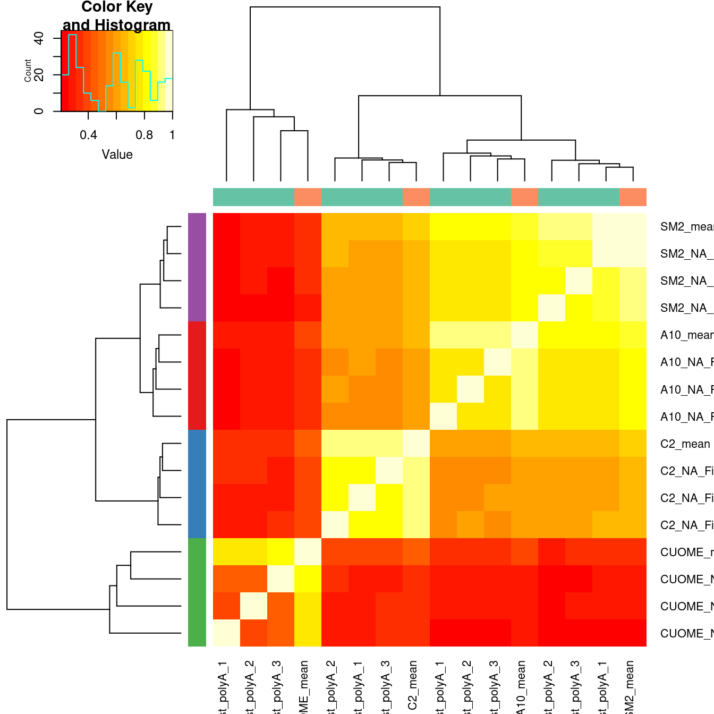
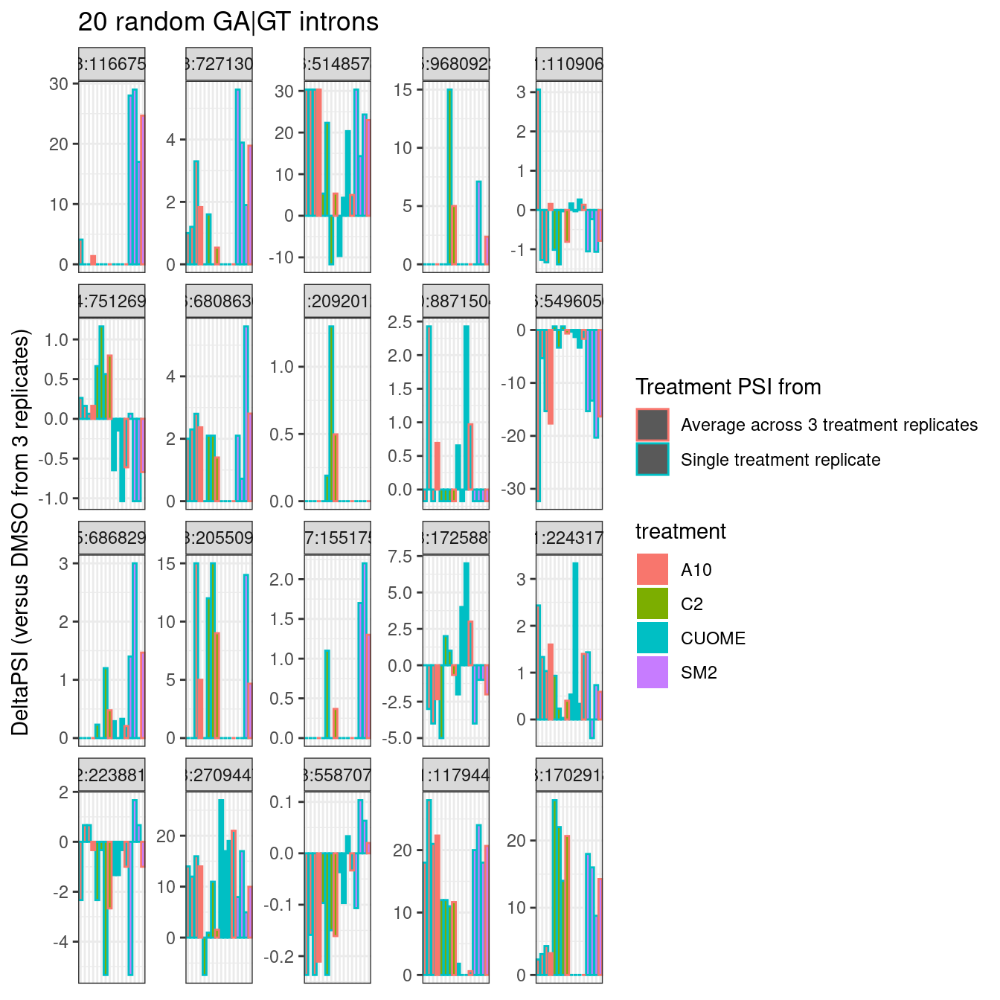

20220922_Explore_SubparRNAseq
Last updated: 2022-09-26
Checks: 5 2
Knit directory: 20211209_JingxinRNAseq/analysis/
This reproducible R Markdown analysis was created with workflowr (version 1.6.2). The Checks tab describes the reproducibility checks that were applied when the results were created. The Past versions tab lists the development history.
The R Markdown is untracked by Git. To know which version of the R Markdown file created these results, you’ll want to first commit it to the Git repo. If you’re still working on the analysis, you can ignore this warning. When you’re finished, you can run wflow_publish to commit the R Markdown file and build the HTML.
Great job! The global environment was empty. Objects defined in the global environment can affect the analysis in your R Markdown file in unknown ways. For reproduciblity it’s best to always run the code in an empty environment.
The command set.seed(19900924) was run prior to running the code in the R Markdown file. Setting a seed ensures that any results that rely on randomness, e.g. subsampling or permutations, are reproducible.
Great job! Recording the operating system, R version, and package versions is critical for reproducibility.
Nice! There were no cached chunks for this analysis, so you can be confident that you successfully produced the results during this run.
Using absolute paths to the files within your workflowr project makes it difficult for you and others to run your code on a different machine. Change the absolute path(s) below to the suggested relative path(s) to make your code more reproducible.
| absolute | relative |
|---|---|
| /project2/yangili1/bjf79/20211209_JingxinRNAseq/code/bigwigs/unstranded/(.+?).bw | ../code/bigwigs/unstranded/(.+?).bw |
Great! You are using Git for version control. Tracking code development and connecting the code version to the results is critical for reproducibility.
The results in this page were generated with repository version 25df2a6. See the Past versions tab to see a history of the changes made to the R Markdown and HTML files.
Note that you need to be careful to ensure that all relevant files for the analysis have been committed to Git prior to generating the results (you can use wflow_publish or wflow_git_commit). workflowr only checks the R Markdown file, but you know if there are other scripts or data files that it depends on. Below is the status of the Git repository when the results were generated:
Ignored files:
Ignored: .DS_Store
Ignored: .Rhistory
Ignored: .Rproj.user/
Ignored: ._.DS_Store
Ignored: analysis/.RData
Ignored: analysis/.Rhistory
Ignored: analysis/20220707_TitrationSeries_DE_testing.nb.html
Ignored: code/%
Ignored: code/.DS_Store
Ignored: code/._.DS_Store
Ignored: code/._DOCK7.pdf
Ignored: code/._DOCK7_DMSO1.pdf
Ignored: code/._DOCK7_SM2_1.pdf
Ignored: code/._FKTN_DMSO_1.pdf
Ignored: code/._FKTN_SM2_1.pdf
Ignored: code/._MAPT.pdf
Ignored: code/._PKD1_DMSO_1.pdf
Ignored: code/._PKD1_SM2_1.pdf
Ignored: code/.snakemake/
Ignored: code/1KG_HighCoverageCalls.samplelist.txt
Ignored: code/5ssSeqs.tab
Ignored: code/Alignments/
Ignored: code/ChemCLIP/
Ignored: code/ClinVar/
Ignored: code/DE_testing/
Ignored: code/DE_tests.mat.counts.gz
Ignored: code/DE_tests.txt.gz
Ignored: code/DoseResponseData/
Ignored: code/Fastq/
Ignored: code/FastqFastp/
Ignored: code/FragLenths/
Ignored: code/Meme/
Ignored: code/Multiqc/
Ignored: code/OMIM/
Ignored: code/OldBigWigs/
Ignored: code/PhyloP/
Ignored: code/QC/
Ignored: code/ReferenceGenomes/
Ignored: code/Session.vim
Ignored: code/SplicingAnalysis/
Ignored: code/TracksSession
Ignored: code/bigwigs/
Ignored: code/featureCounts/
Ignored: code/geena/
Ignored: code/hg38ToMm39.over.chain.gz
Ignored: code/igv_session.template.xml
Ignored: code/igv_session.xml
Ignored: code/log
Ignored: code/logs/
Ignored: code/scratch/
Ignored: code/scripts/.GetPerBasePhyloP_RelativeToBedFeats.py.swp
Ignored: code/test.txt.gz
Ignored: code/testPlottingWithMyScript.ForJingxin.sh
Ignored: code/testPlottingWithMyScript.ForJingxin2.sh
Ignored: code/testPlottingWithMyScript.ForJingxin3.sh
Ignored: code/testPlottingWithMyScript.ForJingxin4.sh
Ignored: code/testPlottingWithMyScript.sh
Ignored: data/._Hijikata_TableS1_41598_2017_8902_MOESM2_ESM.xls
Ignored: data/._Hijikata_TableS2_41598_2017_8902_MOESM3_ESM.xls
Ignored: output/._PioritizedIntronTargets.pdf
Untracked files:
Untracked: analysis/20220922_ExploreSubparRNAseq.Rmd
Untracked: analysis/20220923_ExploreSpecificityEstimates.Rmd
Untracked: code/scripts/GetPerBasePhyloP_RelativeToBedFeats.py
Unstaged changes:
Modified: code/rules/RNASeqProcessing.smk
Note that any generated files, e.g. HTML, png, CSS, etc., are not included in this status report because it is ok for generated content to have uncommitted changes.
There are no past versions. Publish this analysis with wflow_publish() to start tracking its development.
Intro
Jingxin’s lab has made many compounds (ie >50) from one or two scaffolds, and is interseted in using RNA-seq to readout splicing effects. Obviously at this scale, with limited resources, and with low prior knowledge about their splice-modulating activity, it doesn’t make sense to do a full titration experiment with RNA-seq for each compound. We are more likely to settle with a single dose, at a smaller read depth, and try to learn what we can about the activity and specificity of these compounds. Here I will explore our existing data just to gain some intuitions on the power of RNA-seq, keeping in mind what it would be like if we only had one replicate at lower read coverage. Eventually I may do a more careful power analysis, involving sub-sampling reads from our existing data, and re-analyzing them to simulate potential study designs.
Analysis
First let’s read in library size in terms of mapped reads.
library(tidyverse)
library(gplots)
library(RColorBrewer)
counts <- read_tsv("../output/QC/ReadCountsAndJunctionsPerSamples.tsv", col_names = c("fn", "ChromosomalReads"))
sample.list <- read_tsv("../code/bigwigs/BigwigList.tsv",
col_names = c("SampleName", "bigwig", "group", "strand")) %>%
filter(strand==".") %>%
dplyr::select(-strand) %>%
mutate(old.sample.name = str_replace(bigwig, "/project2/yangili1/bjf79/20211209_JingxinRNAseq/code/bigwigs/unstranded/(.+?).bw", "\\1")) %>%
separate(SampleName, into=c("treatment", "dose.nM", "cell.type", "libType", "rep"), convert=T, remove=F, sep="_") %>%
left_join(
read_tsv("../code/bigwigs/BigwigList.groups.tsv", col_names = c("group", "color", "bed", "supergroup")),
by="group"
)
counts.plot.dat <- counts %>%
mutate(old.sample.name = str_replace(fn, "Alignments/STAR_Align/(.+?)/Aligned.sortedByCoord.out.bam", "\\1")) %>%
inner_join(sample.list) %>%
arrange(cell.type, libType, desc(treatment=="DMSO"), treatment, dose.nM, rep) %>%
mutate(SampleName = factor(SampleName, levels=SampleName)) %>%
mutate(Experiment = case_when(
libType == "chRNA" ~ "nascent RNA profiling",
cell.type == "LCL" & libType == "polyA" ~ "dose response experiment",
cell.type == "Fibroblast" ~ "Initial experiment in fibroblast"
)) %>%
mutate(label = paste0(treatment,"; ", dose.nM))
counts.plot.labels <- counts.plot.dat %>%
dplyr::select(SampleName, label) %>% deframe()
ggplot(counts.plot.dat, aes(x=SampleName, y=ChromosomalReads/2E6, fill=color)) +
geom_col() +
scale_fill_identity() +
scale_x_discrete(name="Sample; treatment_nanomolar-dose", label=counts.plot.labels) +
facet_grid(cols = vars(Experiment), scales="free", space = "free_x") +
theme_classic() +
theme(axis.text.x = element_text(angle = 45, vjust = 1, hjust=1, size=5)) +
theme(strip.text.x = element_text(size = 8)) +
labs(title="RNA-seq datasets", y="Read count (M)")
Now let’s read in the table of a few hundred GA-GT splice sites that I previously shared with Jingxin, along with some other splice count tables… I want to see how rare these GA-GT splice sites are in our data, to get a sense how many reads we need to detect them.
GA.GT.Introns <- read_tsv("../output/EC50Estimtes.FromPSI.txt.gz")
all.samples.PSI <- read_tsv("../code/SplicingAnalysis/leafcutter_all_samples/PSI.table.bed.gz")
all.samples.junccounts <- read_tsv("../code/SplicingAnalysis/leafcutter_all_samples/JuncCounts.table.bed.gz")
all.samples.5ss <- read_tsv("../code/SplicingAnalysis/FullSpliceSiteAnnotations/JuncfilesMerged.annotated.basic.bed.5ss.tab.gz", col_names = c("intron", "seq", "score")) %>%
mutate(intron = str_replace(intron, "^(.+?)::.+$", "\\1")) %>%
separate(intron, into=c("chrom", "start", "stop", "strand"), sep="_", convert=T, remove=F)
all.samples.intron.annotations <- read_tsv("../code/SplicingAnalysis/FullSpliceSiteAnnotations/JuncfilesMerged.annotated.basic.bed.gz")
All.GA.GT <- all.samples.5ss %>%
filter(str_detect(seq, "^\\w{2}GAGT")) %>%
inner_join(all.samples.intron.annotations %>%
rename(stop=end) %>%
dplyr::select(-score)) %>%
left_join(
GA.GT.Introns %>%
dplyr::select(chrom=`#Chrom`, start, stop=end, strand=strand.y, LowerLimit, UpperLimit, UpstreamSpliceAcceptor, spearman.coef.Branaplam, spearman.coef.C2C5,spearman.coef.Risdiplam)
) %>%
mutate(GAGT.set = case_when(
!is.na(LowerLimit) ~ "Juncs modelled in LCL",
!is.na(spearman.coef.Branaplam) ~ "Juncs counted in LCL",
TRUE ~ "Other juncs observed across datasets"
)) %>%
inner_join(
all.samples.junccounts %>%
dplyr::select(junc, contains("LCL")) %>%
dplyr::select(junc, contains("polyA")) %>%
mutate(intron = str_replace(junc, "^(chr.+?):(.+?):(.+?):clu.+?([+-])$", "\\1_\\2_\\3_\\4"))
)
GA.GT.CPM.Plot.dat <- All.GA.GT %>%
dplyr::select(intron, GAGT.set, contains("LCL")) %>%
add_count(GAGT.set) %>%
gather("SampleName", "JuncCounts", contains("LCL")) %>%
group_by(SampleName, n, GAGT.set) %>%
summarise(sumJuncCounts = sum(JuncCounts)) %>%
inner_join(counts.plot.dat) %>%
mutate(CPM=sumJuncCounts/(ChromosomalReads/1E6)) %>%
mutate(FacetLabel = paste0(GAGT.set, ";n=",n)) %>%
arrange(cell.type, libType, desc(treatment=="DMSO"), treatment, dose.nM, rep, GAGT.set)
GA.GT.CPM.Plot.dat$SampleName <- factor(GA.GT.CPM.Plot.dat$SampleName, levels=unique(GA.GT.CPM.Plot.dat$SampleName))
ggplot(GA.GT.CPM.Plot.dat, aes(x=SampleName, y=CPM, fill=color, color=color)) +
geom_col() +
scale_fill_identity() +
scale_color_identity() +
scale_x_discrete(name="Sample; treatment_nanomolar-dose", label=counts.plot.labels) +
facet_wrap(~FacetLabel, scales="free_y") +
theme_classic() +
theme(axis.text.x = element_text(angle = 45, vjust = 1, hjust=1, size=5)) +
theme(strip.text.x = element_text(size = 6)) +
labs(title="DetectionOf GA|GT introns in aggregate", y="CountsPerMillion")
Ok, aggregating the set of 600 or so junctions that I modelled I see clear dose-dependent differences between DMSO and treatments, with CountsPerMillions (expression of junction reads) in the hundreds… Even with a single sample at a fraction of the read depth, i think this would be easily detectable.
Perhaps another way to consider what it would be like to analyze data with just one replicate, is to look at delta-PSI, based on either 1 sample, or the average of 3 samples, from the fibroblast data…
cluster_sig_files <- list.files("../code/SplicingAnalysis/leafcutter/differential_splicing", "*_cluster_significance.txt", full.names = T)
effect_sizes_files <- list.files("../code/SplicingAnalysis/leafcutter/differential_splicing", "*_effect_sizes.txt", full.names = T)
treatments <- str_replace(cluster_sig_files, ".+/(.+?)_cluster_significance.txt", "\\1")
cluster.sig <- map(cluster_sig_files, read_tsv) %>%
set_names(cluster_sig_files) %>%
bind_rows(.id="f") %>%
mutate(treatment = str_replace(f, ".+/(.+?)_cluster_significance.txt", "\\1")) %>%
select(-f)
effect_sizes <- map(effect_sizes_files, read_tsv) %>%
set_names(effect_sizes_files) %>%
bind_rows(.id="f") %>%
mutate(treatment = str_replace(f, ".+/(.+?)_effect_sizes.txt", "\\1")) %>%
select(-f) %>%
unite("psi_treatment", treatments, sep=" ", na.rm=T) %>%
mutate(psi_treatment = as.numeric(psi_treatment),
cluster = str_replace(intron, "(.+?:).+:(.+?)", "\\1\\2"))
#Based on all introns
all.samples.PSI %>%
dplyr::select(1:6, contains("Fibroblast")) %>%
dplyr::select(-c(1:6)) %>%
drop_na() %>%
as.matrix() %>%
cor() %>%
heatmap.2(trace='none')
#Based on all GA|GT introns
all.samples.PSI %>%
dplyr::select(1:6, contains("Fibroblast")) %>%
inner_join(dplyr::select(All.GA.GT, `#Chrom`=chrom, start, end=stop, strand)) %>%
dplyr::select(-c(1:6)) %>%
drop_na() %>%
as.matrix() %>%
cor() %>%
heatmap.2(trace='none')
Lastly, I think way to plot it that Yang is interested in is to average the 3 replicates for treatment, calculate delta-psi (from DMSO averaged across three replicates), and compare to the delta-psi from just a single replicate. Let’s include one GA-GT introns for this…
DMSO.mean.PSI <- all.samples.PSI %>%
dplyr::select(1:6, contains("Fibroblast")) %>%
inner_join(dplyr::select(All.GA.GT, `#Chrom`=chrom, start, end=stop, strand)) %>%
drop_na() %>%
dplyr::select(junc, contains("Fibroblast")) %>%
gather("SampleName", "PSI", contains("Fibroblast")) %>%
inner_join(sample.list) %>%
filter(treatment == "DMSO") %>%
group_by(junc) %>%
summarise(meanPSI.DMSO = mean(PSI)) %>%
ungroup()
treament.mean.PSI <- all.samples.PSI %>%
dplyr::select(1:6, contains("Fibroblast")) %>%
inner_join(dplyr::select(All.GA.GT, `#Chrom`=chrom, start, end=stop, strand)) %>%
drop_na() %>%
dplyr::select(junc, contains("Fibroblast")) %>%
gather("SampleName", "PSI", contains("Fibroblast")) %>%
inner_join(sample.list) %>%
filter(!treatment == "DMSO") %>%
group_by(treatment, junc) %>%
summarise(PSI = mean(PSI)) %>%
ungroup() %>%
mutate(SampleName = paste(treatment, "mean", sep="_")) %>%
mutate(PSI.Calculation = "Average across 3 treatment replicates")
Compare3vs1Replicate.Dat.To.Plot <- all.samples.PSI %>%
dplyr::select(1:6, contains("Fibroblast")) %>%
inner_join(dplyr::select(All.GA.GT, `#Chrom`=chrom, start, end=stop, strand)) %>%
drop_na() %>%
dplyr::select(junc, contains("Fibroblast")) %>%
gather("SampleName", "PSI", contains("Fibroblast")) %>%
inner_join(sample.list) %>%
filter(!treatment == "DMSO") %>%
dplyr::select(treatment, SampleName, junc, PSI) %>%
mutate(PSI.Calculation = "Single treatment replicate") %>%
bind_rows(treament.mean.PSI) %>%
inner_join(DMSO.mean.PSI) %>%
mutate(DeltaPSI = PSI-meanPSI.DMSO)
ggplot(Compare3vs1Replicate.Dat.To.Plot, aes(x=DeltaPSI, color=treatment)) +
stat_ecdf(aes(linetype=PSI.Calculation)) +
facet_wrap(~treatment) +
theme_bw() +
coord_cartesian(xlim=c(-10, 10)) +
labs(y="ecdf")
Compare3vs1Replicate.Dat.To.Plot.As.matrix <- Compare3vs1Replicate.Dat.To.Plot %>%
dplyr::select(SampleName, junc, DeltaPSI) %>%
pivot_wider(names_from = "SampleName", values_from="DeltaPSI") %>%
column_to_rownames("junc")
ConvertToColorVector <- function(Vector, PalletteString="Set1"){
ConversionKey <- setNames(brewer.pal(length(unique(Vector)), PalletteString), unique(Vector))[1:length(unique(Vector))]
ColorVector <- recode(Vector, !!!ConversionKey)
return( list(Key=ConversionKey, ColorVector=ColorVector))
}
Rowcols <- colnames(Compare3vs1Replicate.Dat.To.Plot.As.matrix) %>%
str_replace("^(.+?)_.+", "\\1") %>% ConvertToColorVector()
Colcols <- colnames(Compare3vs1Replicate.Dat.To.Plot.As.matrix) %>%
str_detect("mean") %>% as.character() %>% ConvertToColorVector(PalletteString="Set2")
cor(Compare3vs1Replicate.Dat.To.Plot.As.matrix) %>%
heatmap.2(trace='none', ColSideColors = Colcols$ColorVector, RowSideColors = Rowcols$ColorVector)
Compare3vs1Replicate.Dat.To.Plot$treatment [1] "A10" "A10" "A10" "A10" "A10" "A10" "A10" "A10" "A10"
[10] "A10" "A10" "A10" "A10" "A10" "A10" "A10" "A10" "A10"
[19] "A10" "A10" "A10" "A10" "A10" "A10" "A10" "A10" "A10"
[28] "A10" "A10" "A10" "A10" "A10" "A10" "A10" "A10" "A10"
[37] "A10" "A10" "A10" "A10" "A10" "A10" "A10" "A10" "A10"
[46] "A10" "A10" "A10" "A10" "A10" "A10" "A10" "A10" "A10"
[55] "A10" "A10" "A10" "A10" "A10" "A10" "A10" "A10" "A10"
[64] "A10" "A10" "A10" "A10" "A10" "A10" "A10" "A10" "A10"
[73] "A10" "A10" "A10" "A10" "A10" "A10" "A10" "A10" "A10"
[82] "A10" "A10" "A10" "A10" "A10" "A10" "A10" "A10" "A10"
[91] "A10" "A10" "A10" "A10" "A10" "A10" "A10" "A10" "A10"
[100] "A10" "A10" "A10" "A10" "A10" "A10" "A10" "A10" "A10"
[109] "A10" "A10" "A10" "A10" "A10" "A10" "A10" "A10" "A10"
[118] "A10" "A10" "A10" "A10" "A10" "A10" "A10" "A10" "A10"
[127] "A10" "A10" "A10" "A10" "A10" "A10" "A10" "A10" "A10"
[136] "A10" "A10" "A10" "A10" "A10" "A10" "A10" "A10" "A10"
[145] "A10" "A10" "A10" "A10" "A10" "A10" "A10" "A10" "A10"
[154] "A10" "A10" "A10" "A10" "A10" "A10" "A10" "A10" "A10"
[163] "A10" "A10" "A10" "A10" "A10" "A10" "A10" "A10" "A10"
[172] "A10" "A10" "A10" "A10" "A10" "A10" "A10" "A10" "A10"
[181] "A10" "A10" "A10" "A10" "A10" "A10" "A10" "A10" "A10"
[190] "A10" "A10" "A10" "A10" "A10" "A10" "A10" "A10" "A10"
[199] "A10" "A10" "A10" "A10" "A10" "A10" "A10" "A10" "A10"
[208] "A10" "A10" "A10" "A10" "A10" "A10" "A10" "A10" "A10"
[217] "A10" "A10" "A10" "A10" "A10" "A10" "A10" "A10" "A10"
[226] "A10" "A10" "A10" "A10" "A10" "A10" "A10" "A10" "A10"
[235] "A10" "A10" "A10" "A10" "A10" "A10" "A10" "A10" "A10"
[244] "A10" "A10" "A10" "A10" "A10" "A10" "A10" "A10" "A10"
[253] "A10" "A10" "A10" "A10" "A10" "A10" "A10" "A10" "A10"
[262] "A10" "A10" "A10" "A10" "A10" "A10" "A10" "A10" "A10"
[271] "A10" "A10" "A10" "A10" "A10" "A10" "A10" "A10" "A10"
[280] "A10" "A10" "A10" "A10" "A10" "A10" "A10" "A10" "A10"
[289] "A10" "A10" "A10" "A10" "A10" "A10" "A10" "A10" "A10"
[298] "A10" "A10" "A10" "A10" "A10" "A10" "A10" "A10" "A10"
[307] "A10" "A10" "A10" "A10" "A10" "A10" "A10" "A10" "A10"
[316] "A10" "A10" "A10" "A10" "A10" "A10" "A10" "A10" "A10"
[325] "A10" "A10" "A10" "A10" "A10" "A10" "A10" "A10" "A10"
[334] "A10" "A10" "A10" "A10" "A10" "A10" "A10" "A10" "A10"
[343] "A10" "A10" "A10" "A10" "A10" "A10" "A10" "A10" "A10"
[352] "A10" "A10" "A10" "A10" "A10" "A10" "A10" "A10" "A10"
[361] "A10" "A10" "A10" "A10" "A10" "A10" "A10" "A10" "A10"
[370] "A10" "A10" "A10" "A10" "A10" "A10" "A10" "A10" "A10"
[379] "A10" "A10" "A10" "A10" "A10" "A10" "A10" "A10" "A10"
[388] "A10" "A10" "A10" "A10" "A10" "A10" "A10" "A10" "A10"
[397] "A10" "A10" "A10" "A10" "A10" "A10" "A10" "A10" "A10"
[406] "A10" "A10" "A10" "A10" "A10" "A10" "A10" "A10" "A10"
[415] "A10" "A10" "A10" "A10" "A10" "A10" "A10" "A10" "A10"
[424] "A10" "A10" "A10" "A10" "A10" "A10" "A10" "A10" "A10"
[433] "A10" "A10" "A10" "A10" "A10" "A10" "A10" "A10" "A10"
[442] "A10" "A10" "A10" "A10" "A10" "A10" "A10" "A10" "A10"
[451] "A10" "A10" "A10" "A10" "A10" "A10" "A10" "A10" "A10"
[460] "A10" "A10" "A10" "A10" "A10" "A10" "A10" "A10" "A10"
[469] "A10" "A10" "A10" "A10" "A10" "A10" "A10" "A10" "A10"
[478] "A10" "A10" "A10" "A10" "A10" "A10" "A10" "A10" "A10"
[487] "A10" "A10" "A10" "A10" "A10" "A10" "A10" "A10" "A10"
[496] "A10" "A10" "A10" "A10" "A10" "A10" "A10" "A10" "A10"
[505] "A10" "A10" "A10" "A10" "A10" "A10" "A10" "A10" "A10"
[514] "A10" "A10" "A10" "A10" "A10" "A10" "A10" "A10" "A10"
[523] "A10" "A10" "A10" "A10" "A10" "A10" "A10" "A10" "A10"
[532] "A10" "A10" "A10" "A10" "A10" "A10" "A10" "A10" "A10"
[541] "A10" "A10" "A10" "A10" "A10" "A10" "A10" "A10" "A10"
[550] "A10" "A10" "A10" "A10" "A10" "A10" "A10" "A10" "A10"
[559] "A10" "A10" "A10" "A10" "A10" "A10" "A10" "A10" "A10"
[568] "A10" "A10" "A10" "A10" "A10" "A10" "A10" "A10" "A10"
[577] "A10" "A10" "A10" "A10" "A10" "A10" "A10" "A10" "A10"
[586] "A10" "A10" "A10" "A10" "A10" "A10" "A10" "A10" "A10"
[595] "A10" "A10" "A10" "A10" "A10" "A10" "A10" "A10" "A10"
[604] "A10" "A10" "A10" "A10" "A10" "A10" "A10" "A10" "A10"
[613] "A10" "A10" "A10" "A10" "A10" "A10" "A10" "A10" "A10"
[622] "A10" "A10" "A10" "A10" "A10" "A10" "A10" "A10" "A10"
[631] "A10" "A10" "A10" "A10" "A10" "A10" "A10" "A10" "A10"
[640] "A10" "A10" "A10" "A10" "A10" "A10" "A10" "A10" "A10"
[649] "A10" "A10" "A10" "A10" "A10" "A10" "A10" "A10" "A10"
[658] "A10" "A10" "A10" "A10" "A10" "A10" "A10" "A10" "A10"
[667] "A10" "A10" "A10" "A10" "A10" "A10" "A10" "A10" "A10"
[676] "A10" "A10" "A10" "A10" "A10" "A10" "A10" "A10" "A10"
[685] "A10" "A10" "A10" "A10" "A10" "A10" "A10" "A10" "A10"
[694] "A10" "A10" "A10" "A10" "A10" "A10" "A10" "A10" "A10"
[703] "A10" "A10" "A10" "A10" "A10" "A10" "A10" "A10" "A10"
[712] "A10" "A10" "A10" "A10" "A10" "A10" "A10" "A10" "A10"
[721] "A10" "A10" "A10" "A10" "A10" "A10" "A10" "A10" "A10"
[730] "A10" "A10" "A10" "A10" "A10" "A10" "A10" "A10" "A10"
[739] "A10" "A10" "A10" "A10" "A10" "A10" "A10" "A10" "A10"
[748] "A10" "A10" "A10" "A10" "A10" "A10" "A10" "A10" "A10"
[757] "A10" "A10" "A10" "A10" "A10" "A10" "A10" "A10" "A10"
[766] "A10" "A10" "A10" "A10" "A10" "A10" "A10" "A10" "A10"
[775] "A10" "A10" "A10" "A10" "A10" "A10" "A10" "A10" "A10"
[784] "A10" "A10" "A10" "A10" "A10" "A10" "A10" "A10" "A10"
[793] "A10" "A10" "A10" "A10" "A10" "A10" "A10" "A10" "A10"
[802] "A10" "A10" "A10" "A10" "A10" "A10" "A10" "A10" "A10"
[811] "A10" "A10" "A10" "A10" "A10" "A10" "A10" "A10" "A10"
[820] "A10" "A10" "A10" "A10" "A10" "A10" "A10" "A10" "A10"
[829] "A10" "A10" "A10" "A10" "A10" "A10" "A10" "A10" "A10"
[838] "A10" "A10" "A10" "A10" "A10" "A10" "A10" "A10" "A10"
[847] "A10" "A10" "A10" "A10" "A10" "A10" "A10" "A10" "A10"
[856] "A10" "A10" "A10" "A10" "A10" "A10" "A10" "A10" "A10"
[865] "A10" "A10" "A10" "A10" "A10" "A10" "A10" "A10" "A10"
[874] "A10" "A10" "A10" "A10" "A10" "A10" "A10" "A10" "A10"
[883] "A10" "A10" "A10" "A10" "A10" "A10" "A10" "A10" "A10"
[892] "A10" "A10" "A10" "A10" "A10" "A10" "A10" "A10" "A10"
[901] "A10" "A10" "A10" "A10" "A10" "A10" "A10" "A10" "A10"
[910] "A10" "A10" "A10" "A10" "A10" "A10" "A10" "A10" "A10"
[919] "A10" "A10" "A10" "A10" "A10" "A10" "A10" "A10" "A10"
[928] "A10" "A10" "A10" "A10" "A10" "A10" "A10" "A10" "A10"
[937] "A10" "A10" "A10" "A10" "A10" "A10" "A10" "A10" "A10"
[946] "A10" "A10" "A10" "A10" "A10" "A10" "A10" "A10" "A10"
[955] "A10" "A10" "A10" "A10" "A10" "A10" "A10" "A10" "A10"
[964] "A10" "A10" "A10" "A10" "A10" "A10" "A10" "A10" "A10"
[973] "A10" "A10" "A10" "A10" "A10" "A10" "A10" "A10" "A10"
[982] "A10" "A10" "A10" "A10" "A10" "A10" "A10" "A10" "A10"
[991] "A10" "A10" "A10" "A10" "A10" "A10" "A10" "A10" "A10"
[1000] "A10" "A10" "A10" "A10" "A10" "A10" "A10" "A10" "A10"
[1009] "A10" "A10" "A10" "A10" "A10" "A10" "A10" "A10" "A10"
[1018] "A10" "A10" "A10" "A10" "A10" "A10" "A10" "A10" "A10"
[1027] "A10" "A10" "A10" "A10" "A10" "A10" "A10" "A10" "A10"
[1036] "A10" "A10" "A10" "A10" "A10" "A10" "A10" "A10" "A10"
[1045] "A10" "A10" "A10" "A10" "A10" "A10" "A10" "A10" "A10"
[1054] "A10" "A10" "A10" "A10" "A10" "A10" "A10" "A10" "A10"
[1063] "A10" "A10" "A10" "A10" "A10" "A10" "A10" "A10" "A10"
[1072] "A10" "A10" "A10" "A10" "A10" "A10" "A10" "A10" "A10"
[1081] "A10" "A10" "A10" "A10" "A10" "A10" "A10" "A10" "A10"
[1090] "A10" "A10" "A10" "A10" "A10" "A10" "A10" "A10" "A10"
[1099] "A10" "A10" "A10" "A10" "A10" "A10" "A10" "A10" "A10"
[1108] "A10" "A10" "A10" "A10" "A10" "A10" "A10" "A10" "A10"
[1117] "A10" "A10" "A10" "A10" "A10" "A10" "A10" "A10" "A10"
[1126] "A10" "A10" "A10" "A10" "A10" "A10" "A10" "A10" "A10"
[1135] "A10" "A10" "A10" "A10" "A10" "A10" "A10" "A10" "A10"
[1144] "A10" "A10" "A10" "A10" "A10" "A10" "A10" "A10" "A10"
[1153] "A10" "A10" "A10" "A10" "A10" "A10" "A10" "A10" "A10"
[1162] "A10" "A10" "A10" "A10" "A10" "A10" "A10" "A10" "A10"
[1171] "A10" "A10" "A10" "A10" "A10" "A10" "A10" "A10" "A10"
[1180] "A10" "A10" "A10" "A10" "A10" "A10" "A10" "A10" "A10"
[1189] "A10" "A10" "A10" "A10" "A10" "A10" "A10" "A10" "A10"
[1198] "A10" "A10" "A10" "A10" "A10" "A10" "A10" "A10" "A10"
[1207] "A10" "A10" "A10" "A10" "A10" "A10" "A10" "A10" "A10"
[1216] "A10" "A10" "A10" "A10" "A10" "A10" "A10" "A10" "A10"
[1225] "A10" "A10" "A10" "A10" "A10" "A10" "A10" "A10" "A10"
[1234] "A10" "A10" "A10" "A10" "A10" "A10" "A10" "A10" "A10"
[1243] "A10" "A10" "A10" "A10" "A10" "A10" "A10" "A10" "A10"
[1252] "A10" "A10" "A10" "A10" "A10" "A10" "A10" "A10" "A10"
[1261] "A10" "A10" "A10" "A10" "A10" "A10" "A10" "A10" "A10"
[1270] "A10" "A10" "A10" "A10" "A10" "A10" "A10" "A10" "A10"
[1279] "A10" "A10" "A10" "A10" "A10" "A10" "A10" "A10" "A10"
[1288] "A10" "A10" "A10" "A10" "A10" "A10" "A10" "A10" "A10"
[1297] "A10" "A10" "A10" "A10" "A10" "A10" "A10" "A10" "A10"
[1306] "A10" "A10" "A10" "A10" "A10" "A10" "A10" "A10" "A10"
[1315] "A10" "A10" "A10" "A10" "A10" "A10" "A10" "A10" "A10"
[1324] "A10" "A10" "A10" "A10" "A10" "A10" "A10" "A10" "A10"
[1333] "A10" "A10" "A10" "A10" "A10" "A10" "A10" "A10" "A10"
[1342] "A10" "A10" "A10" "A10" "A10" "A10" "A10" "A10" "A10"
[1351] "A10" "A10" "A10" "A10" "A10" "A10" "A10" "A10" "A10"
[1360] "A10" "A10" "A10" "A10" "A10" "A10" "A10" "A10" "A10"
[1369] "A10" "A10" "A10" "A10" "A10" "A10" "A10" "A10" "A10"
[1378] "A10" "A10" "A10" "A10" "A10" "A10" "A10" "A10" "A10"
[1387] "A10" "A10" "A10" "A10" "A10" "A10" "A10" "A10" "A10"
[1396] "A10" "A10" "A10" "A10" "A10" "A10" "A10" "A10" "A10"
[1405] "A10" "A10" "A10" "A10" "A10" "A10" "A10" "A10" "A10"
[1414] "A10" "A10" "A10" "A10" "A10" "A10" "A10" "A10" "A10"
[1423] "A10" "A10" "A10" "A10" "A10" "A10" "A10" "A10" "A10"
[1432] "A10" "A10" "A10" "A10" "A10" "A10" "A10" "A10" "A10"
[1441] "A10" "A10" "A10" "A10" "A10" "A10" "A10" "A10" "A10"
[1450] "A10" "A10" "A10" "A10" "A10" "A10" "A10" "A10" "A10"
[1459] "A10" "A10" "A10" "A10" "A10" "A10" "A10" "A10" "A10"
[1468] "A10" "A10" "A10" "A10" "A10" "A10" "A10" "A10" "A10"
[1477] "A10" "A10" "A10" "A10" "A10" "A10" "A10" "A10" "A10"
[1486] "A10" "A10" "A10" "A10" "A10" "A10" "A10" "A10" "A10"
[1495] "A10" "A10" "A10" "A10" "A10" "A10" "A10" "A10" "A10"
[1504] "A10" "A10" "A10" "A10" "A10" "A10" "A10" "A10" "A10"
[1513] "A10" "A10" "A10" "A10" "A10" "A10" "A10" "A10" "A10"
[1522] "A10" "A10" "A10" "A10" "A10" "A10" "A10" "A10" "A10"
[1531] "A10" "A10" "A10" "A10" "A10" "A10" "A10" "A10" "A10"
[1540] "A10" "A10" "A10" "A10" "A10" "A10" "A10" "A10" "A10"
[1549] "A10" "A10" "A10" "A10" "A10" "A10" "A10" "A10" "A10"
[1558] "A10" "A10" "A10" "A10" "A10" "A10" "A10" "A10" "A10"
[1567] "A10" "A10" "A10" "A10" "A10" "A10" "A10" "A10" "A10"
[1576] "A10" "A10" "A10" "A10" "A10" "A10" "A10" "A10" "A10"
[1585] "A10" "A10" "A10" "A10" "A10" "A10" "A10" "A10" "A10"
[1594] "A10" "A10" "A10" "A10" "A10" "A10" "A10" "A10" "A10"
[1603] "A10" "A10" "A10" "A10" "A10" "A10" "A10" "A10" "A10"
[1612] "A10" "A10" "A10" "A10" "A10" "A10" "A10" "A10" "A10"
[1621] "A10" "A10" "A10" "A10" "A10" "A10" "A10" "A10" "A10"
[1630] "A10" "A10" "A10" "A10" "A10" "A10" "A10" "A10" "A10"
[1639] "A10" "A10" "A10" "A10" "A10" "A10" "A10" "A10" "A10"
[1648] "A10" "A10" "A10" "A10" "A10" "A10" "A10" "A10" "A10"
[1657] "A10" "A10" "A10" "A10" "A10" "A10" "A10" "A10" "A10"
[1666] "A10" "A10" "A10" "A10" "A10" "A10" "A10" "A10" "A10"
[1675] "A10" "A10" "A10" "A10" "A10" "A10" "A10" "A10" "A10"
[1684] "A10" "A10" "A10" "A10" "A10" "A10" "A10" "A10" "A10"
[1693] "A10" "A10" "A10" "A10" "A10" "A10" "A10" "A10" "A10"
[1702] "A10" "A10" "A10" "A10" "A10" "A10" "A10" "A10" "A10"
[1711] "A10" "A10" "A10" "A10" "A10" "A10" "A10" "A10" "A10"
[1720] "A10" "A10" "A10" "A10" "A10" "A10" "A10" "A10" "A10"
[1729] "A10" "A10" "A10" "A10" "A10" "A10" "A10" "A10" "A10"
[1738] "A10" "A10" "A10" "A10" "A10" "A10" "A10" "A10" "A10"
[1747] "A10" "A10" "A10" "A10" "A10" "A10" "A10" "A10" "A10"
[1756] "A10" "A10" "A10" "A10" "A10" "A10" "A10" "A10" "A10"
[1765] "A10" "A10" "A10" "A10" "A10" "A10" "A10" "A10" "A10"
[1774] "A10" "A10" "A10" "A10" "A10" "A10" "A10" "A10" "A10"
[1783] "A10" "A10" "A10" "A10" "A10" "A10" "A10" "A10" "A10"
[1792] "A10" "A10" "A10" "A10" "A10" "A10" "A10" "A10" "A10"
[1801] "A10" "A10" "A10" "A10" "A10" "A10" "A10" "A10" "A10"
[1810] "A10" "A10" "A10" "A10" "A10" "A10" "A10" "A10" "A10"
[1819] "A10" "A10" "A10" "A10" "A10" "A10" "A10" "A10" "A10"
[1828] "A10" "A10" "A10" "A10" "A10" "A10" "A10" "A10" "A10"
[1837] "A10" "A10" "A10" "A10" "A10" "A10" "A10" "A10" "A10"
[1846] "A10" "A10" "A10" "A10" "A10" "A10" "A10" "A10" "A10"
[1855] "A10" "A10" "A10" "A10" "A10" "A10" "A10" "A10" "A10"
[1864] "A10" "A10" "A10" "A10" "A10" "A10" "A10" "A10" "A10"
[1873] "A10" "A10" "A10" "A10" "A10" "A10" "A10" "A10" "A10"
[1882] "A10" "A10" "A10" "A10" "A10" "A10" "A10" "A10" "A10"
[1891] "A10" "A10" "A10" "A10" "A10" "A10" "A10" "A10" "A10"
[1900] "A10" "A10" "A10" "A10" "A10" "A10" "A10" "A10" "A10"
[1909] "A10" "A10" "A10" "A10" "A10" "A10" "A10" "A10" "A10"
[1918] "A10" "A10" "A10" "A10" "A10" "A10" "A10" "A10" "A10"
[1927] "A10" "A10" "A10" "A10" "A10" "A10" "A10" "A10" "A10"
[1936] "A10" "A10" "A10" "A10" "A10" "A10" "A10" "A10" "A10"
[1945] "A10" "A10" "A10" "A10" "A10" "A10" "A10" "A10" "A10"
[1954] "A10" "A10" "A10" "A10" "A10" "A10" "A10" "A10" "A10"
[1963] "A10" "A10" "A10" "A10" "A10" "A10" "A10" "A10" "A10"
[1972] "A10" "A10" "A10" "A10" "A10" "A10" "A10" "A10" "A10"
[1981] "A10" "A10" "A10" "A10" "A10" "A10" "A10" "A10" "A10"
[1990] "A10" "A10" "A10" "A10" "A10" "A10" "A10" "A10" "A10"
[1999] "A10" "A10" "A10" "A10" "A10" "A10" "A10" "A10" "A10"
[2008] "A10" "A10" "A10" "A10" "A10" "A10" "A10" "A10" "A10"
[2017] "A10" "A10" "A10" "A10" "A10" "A10" "A10" "A10" "A10"
[2026] "A10" "A10" "A10" "A10" "A10" "A10" "A10" "A10" "A10"
[2035] "A10" "A10" "A10" "A10" "A10" "A10" "A10" "A10" "A10"
[2044] "A10" "A10" "A10" "A10" "A10" "A10" "A10" "A10" "A10"
[2053] "A10" "A10" "A10" "A10" "A10" "A10" "A10" "A10" "A10"
[2062] "A10" "A10" "A10" "A10" "A10" "A10" "A10" "A10" "A10"
[2071] "A10" "A10" "A10" "A10" "A10" "A10" "A10" "A10" "A10"
[2080] "A10" "A10" "A10" "A10" "A10" "A10" "A10" "A10" "A10"
[2089] "A10" "A10" "A10" "A10" "A10" "A10" "A10" "A10" "A10"
[2098] "A10" "A10" "A10" "A10" "A10" "A10" "A10" "A10" "A10"
[2107] "A10" "A10" "A10" "A10" "A10" "A10" "A10" "A10" "A10"
[2116] "A10" "A10" "A10" "A10" "A10" "A10" "A10" "A10" "A10"
[2125] "A10" "A10" "A10" "A10" "A10" "A10" "A10" "A10" "A10"
[2134] "A10" "A10" "A10" "A10" "A10" "A10" "A10" "A10" "A10"
[2143] "A10" "A10" "A10" "A10" "A10" "A10" "A10" "A10" "A10"
[2152] "A10" "A10" "A10" "A10" "A10" "A10" "A10" "A10" "A10"
[2161] "A10" "A10" "A10" "A10" "A10" "A10" "A10" "A10" "A10"
[2170] "A10" "A10" "A10" "A10" "A10" "A10" "A10" "A10" "A10"
[2179] "A10" "A10" "A10" "A10" "A10" "A10" "A10" "A10" "A10"
[2188] "A10" "A10" "A10" "A10" "A10" "A10" "A10" "A10" "A10"
[2197] "A10" "A10" "A10" "A10" "A10" "A10" "A10" "A10" "A10"
[2206] "A10" "A10" "A10" "A10" "A10" "A10" "A10" "A10" "A10"
[2215] "A10" "A10" "A10" "A10" "A10" "A10" "A10" "A10" "A10"
[2224] "A10" "A10" "A10" "A10" "A10" "A10" "A10" "A10" "A10"
[2233] "A10" "A10" "A10" "A10" "A10" "A10" "A10" "A10" "A10"
[2242] "A10" "A10" "A10" "A10" "A10" "A10" "A10" "A10" "A10"
[2251] "A10" "A10" "A10" "A10" "A10" "A10" "A10" "A10" "A10"
[2260] "A10" "A10" "A10" "A10" "A10" "A10" "A10" "A10" "A10"
[2269] "A10" "A10" "A10" "A10" "A10" "A10" "A10" "A10" "A10"
[2278] "A10" "A10" "A10" "A10" "A10" "A10" "A10" "A10" "A10"
[2287] "A10" "A10" "A10" "A10" "A10" "A10" "A10" "A10" "A10"
[2296] "A10" "A10" "A10" "A10" "A10" "A10" "A10" "A10" "A10"
[2305] "A10" "A10" "A10" "A10" "A10" "A10" "A10" "A10" "A10"
[2314] "A10" "A10" "A10" "A10" "A10" "A10" "A10" "A10" "A10"
[2323] "A10" "A10" "A10" "A10" "A10" "A10" "A10" "A10" "A10"
[2332] "A10" "A10" "A10" "A10" "A10" "A10" "A10" "A10" "A10"
[2341] "A10" "A10" "A10" "A10" "A10" "A10" "A10" "A10" "A10"
[2350] "A10" "A10" "A10" "A10" "A10" "A10" "A10" "A10" "A10"
[2359] "A10" "A10" "A10" "A10" "A10" "A10" "A10" "A10" "A10"
[2368] "A10" "A10" "A10" "A10" "A10" "A10" "A10" "A10" "A10"
[2377] "A10" "A10" "A10" "A10" "A10" "A10" "A10" "A10" "A10"
[2386] "A10" "A10" "A10" "A10" "A10" "A10" "A10" "A10" "A10"
[2395] "A10" "A10" "A10" "A10" "A10" "A10" "A10" "A10" "A10"
[2404] "A10" "A10" "A10" "A10" "A10" "A10" "A10" "A10" "A10"
[2413] "A10" "A10" "A10" "A10" "A10" "A10" "A10" "A10" "A10"
[2422] "A10" "A10" "A10" "A10" "A10" "A10" "A10" "A10" "A10"
[2431] "A10" "A10" "A10" "A10" "A10" "A10" "A10" "A10" "A10"
[2440] "A10" "A10" "A10" "A10" "A10" "A10" "A10" "A10" "A10"
[2449] "A10" "A10" "A10" "A10" "A10" "A10" "A10" "A10" "A10"
[2458] "A10" "A10" "A10" "A10" "A10" "A10" "A10" "A10" "A10"
[2467] "A10" "A10" "A10" "A10" "A10" "A10" "A10" "A10" "A10"
[2476] "A10" "A10" "A10" "A10" "A10" "A10" "A10" "A10" "A10"
[2485] "A10" "A10" "A10" "A10" "A10" "A10" "A10" "A10" "A10"
[2494] "A10" "A10" "A10" "A10" "A10" "A10" "A10" "A10" "A10"
[2503] "A10" "A10" "A10" "A10" "A10" "A10" "A10" "A10" "A10"
[2512] "A10" "A10" "A10" "A10" "A10" "A10" "A10" "A10" "A10"
[2521] "A10" "A10" "A10" "A10" "A10" "A10" "A10" "A10" "A10"
[2530] "A10" "A10" "A10" "A10" "A10" "A10" "A10" "A10" "A10"
[2539] "A10" "A10" "A10" "A10" "A10" "A10" "A10" "A10" "A10"
[2548] "A10" "A10" "A10" "A10" "A10" "A10" "A10" "A10" "A10"
[2557] "A10" "A10" "A10" "A10" "A10" "A10" "A10" "A10" "A10"
[2566] "A10" "A10" "A10" "A10" "A10" "A10" "A10" "A10" "A10"
[2575] "A10" "A10" "A10" "A10" "A10" "A10" "A10" "A10" "A10"
[2584] "A10" "A10" "A10" "A10" "A10" "A10" "A10" "A10" "A10"
[2593] "A10" "A10" "A10" "A10" "A10" "A10" "A10" "A10" "A10"
[2602] "A10" "A10" "A10" "A10" "A10" "A10" "A10" "A10" "A10"
[2611] "A10" "A10" "A10" "A10" "A10" "A10" "A10" "A10" "A10"
[2620] "A10" "A10" "A10" "A10" "A10" "A10" "A10" "A10" "A10"
[2629] "A10" "A10" "A10" "A10" "A10" "A10" "A10" "A10" "A10"
[2638] "A10" "A10" "A10" "A10" "A10" "A10" "A10" "A10" "A10"
[2647] "A10" "A10" "A10" "A10" "A10" "A10" "A10" "A10" "A10"
[2656] "A10" "A10" "A10" "A10" "A10" "A10" "A10" "A10" "A10"
[2665] "A10" "A10" "A10" "A10" "A10" "A10" "A10" "A10" "A10"
[2674] "A10" "A10" "A10" "A10" "A10" "A10" "A10" "A10" "A10"
[2683] "A10" "A10" "A10" "A10" "A10" "A10" "A10" "A10" "A10"
[2692] "A10" "A10" "A10" "A10" "A10" "A10" "A10" "A10" "A10"
[2701] "A10" "A10" "A10" "A10" "A10" "A10" "A10" "A10" "A10"
[2710] "A10" "A10" "A10" "A10" "A10" "A10" "A10" "A10" "A10"
[2719] "A10" "A10" "A10" "A10" "A10" "A10" "A10" "A10" "A10"
[2728] "A10" "A10" "A10" "A10" "A10" "A10" "A10" "A10" "A10"
[2737] "A10" "A10" "A10" "A10" "A10" "A10" "A10" "A10" "A10"
[2746] "A10" "A10" "A10" "A10" "A10" "A10" "A10" "A10" "A10"
[2755] "A10" "A10" "A10" "A10" "A10" "A10" "A10" "A10" "A10"
[2764] "A10" "A10" "A10" "A10" "A10" "A10" "A10" "A10" "A10"
[2773] "A10" "A10" "A10" "A10" "A10" "A10" "A10" "A10" "A10"
[2782] "A10" "A10" "A10" "A10" "A10" "A10" "A10" "A10" "A10"
[2791] "A10" "A10" "A10" "A10" "A10" "A10" "A10" "A10" "A10"
[2800] "A10" "A10" "A10" "A10" "A10" "A10" "A10" "A10" "A10"
[2809] "A10" "A10" "A10" "A10" "A10" "A10" "A10" "A10" "A10"
[2818] "A10" "A10" "A10" "A10" "A10" "A10" "A10" "A10" "A10"
[2827] "A10" "A10" "A10" "A10" "A10" "A10" "A10" "A10" "A10"
[2836] "A10" "A10" "A10" "A10" "A10" "A10" "A10" "A10" "A10"
[2845] "A10" "A10" "A10" "A10" "A10" "A10" "A10" "A10" "A10"
[2854] "A10" "A10" "A10" "A10" "A10" "A10" "A10" "A10" "A10"
[2863] "A10" "A10" "A10" "A10" "A10" "A10" "A10" "A10" "A10"
[2872] "A10" "A10" "A10" "A10" "A10" "A10" "A10" "A10" "A10"
[2881] "A10" "A10" "A10" "A10" "A10" "A10" "A10" "A10" "A10"
[2890] "A10" "A10" "A10" "A10" "A10" "A10" "A10" "A10" "A10"
[2899] "A10" "A10" "A10" "A10" "A10" "A10" "A10" "A10" "A10"
[2908] "A10" "A10" "A10" "A10" "A10" "A10" "A10" "A10" "A10"
[2917] "A10" "A10" "A10" "A10" "A10" "A10" "A10" "A10" "A10"
[2926] "A10" "A10" "A10" "A10" "A10" "A10" "A10" "A10" "A10"
[2935] "A10" "A10" "A10" "A10" "A10" "A10" "A10" "A10" "A10"
[2944] "A10" "A10" "A10" "A10" "A10" "A10" "A10" "A10" "A10"
[2953] "A10" "A10" "A10" "A10" "A10" "A10" "A10" "A10" "A10"
[2962] "A10" "A10" "A10" "A10" "A10" "A10" "A10" "A10" "A10"
[2971] "A10" "A10" "A10" "A10" "A10" "A10" "A10" "A10" "A10"
[2980] "A10" "A10" "A10" "A10" "A10" "A10" "A10" "A10" "A10"
[2989] "A10" "A10" "A10" "A10" "A10" "A10" "A10" "A10" "A10"
[2998] "A10" "A10" "A10" "A10" "A10" "A10" "A10" "A10" "A10"
[3007] "A10" "A10" "A10" "A10" "A10" "A10" "A10" "A10" "A10"
[3016] "A10" "A10" "A10" "A10" "A10" "A10" "A10" "A10" "A10"
[3025] "A10" "A10" "A10" "A10" "A10" "A10" "A10" "A10" "A10"
[3034] "A10" "A10" "A10" "A10" "A10" "A10" "A10" "A10" "A10"
[3043] "A10" "A10" "A10" "A10" "A10" "A10" "A10" "A10" "A10"
[3052] "A10" "A10" "A10" "A10" "A10" "A10" "A10" "A10" "A10"
[3061] "A10" "A10" "A10" "A10" "A10" "A10" "A10" "A10" "A10"
[3070] "A10" "A10" "A10" "A10" "A10" "A10" "A10" "A10" "A10"
[3079] "A10" "A10" "A10" "A10" "A10" "A10" "A10" "A10" "A10"
[3088] "A10" "A10" "A10" "A10" "A10" "A10" "A10" "A10" "A10"
[3097] "A10" "A10" "A10" "A10" "A10" "A10" "A10" "A10" "A10"
[3106] "A10" "A10" "A10" "A10" "A10" "A10" "A10" "A10" "A10"
[3115] "A10" "A10" "A10" "A10" "A10" "A10" "A10" "A10" "A10"
[3124] "A10" "A10" "A10" "A10" "A10" "A10" "A10" "A10" "A10"
[3133] "A10" "A10" "A10" "A10" "A10" "A10" "A10" "A10" "A10"
[3142] "A10" "A10" "A10" "A10" "A10" "A10" "A10" "A10" "A10"
[3151] "A10" "A10" "A10" "A10" "A10" "A10" "A10" "A10" "A10"
[3160] "A10" "A10" "A10" "A10" "A10" "A10" "A10" "A10" "A10"
[3169] "A10" "A10" "A10" "A10" "A10" "A10" "A10" "A10" "A10"
[3178] "A10" "A10" "A10" "A10" "A10" "A10" "A10" "A10" "A10"
[3187] "A10" "A10" "A10" "A10" "A10" "A10" "A10" "A10" "A10"
[3196] "A10" "A10" "A10" "A10" "A10" "A10" "A10" "A10" "A10"
[3205] "A10" "A10" "A10" "A10" "A10" "A10" "A10" "A10" "A10"
[3214] "A10" "A10" "A10" "A10" "A10" "A10" "A10" "A10" "A10"
[3223] "A10" "A10" "A10" "A10" "A10" "A10" "A10" "A10" "A10"
[3232] "A10" "A10" "A10" "A10" "A10" "A10" "A10" "A10" "A10"
[3241] "A10" "A10" "A10" "A10" "A10" "A10" "A10" "A10" "A10"
[3250] "A10" "A10" "A10" "A10" "A10" "A10" "A10" "A10" "A10"
[3259] "A10" "A10" "A10" "A10" "A10" "A10" "A10" "A10" "A10"
[3268] "A10" "A10" "A10" "A10" "A10" "A10" "A10" "A10" "A10"
[3277] "A10" "A10" "A10" "A10" "A10" "A10" "A10" "A10" "A10"
[3286] "A10" "A10" "A10" "A10" "A10" "A10" "A10" "A10" "A10"
[3295] "A10" "A10" "A10" "A10" "A10" "A10" "A10" "A10" "A10"
[3304] "A10" "A10" "A10" "A10" "A10" "A10" "A10" "A10" "A10"
[3313] "A10" "A10" "A10" "A10" "A10" "A10" "A10" "A10" "A10"
[3322] "A10" "A10" "A10" "A10" "A10" "A10" "A10" "A10" "A10"
[3331] "A10" "A10" "A10" "A10" "A10" "A10" "A10" "A10" "A10"
[3340] "A10" "A10" "A10" "A10" "A10" "A10" "A10" "A10" "A10"
[3349] "A10" "A10" "A10" "A10" "A10" "A10" "A10" "A10" "A10"
[3358] "A10" "A10" "A10" "A10" "A10" "A10" "A10" "A10" "A10"
[3367] "A10" "A10" "A10" "A10" "A10" "A10" "A10" "A10" "A10"
[3376] "A10" "A10" "A10" "A10" "A10" "A10" "A10" "A10" "A10"
[3385] "A10" "A10" "A10" "A10" "A10" "A10" "A10" "A10" "A10"
[3394] "A10" "A10" "A10" "A10" "A10" "A10" "A10" "A10" "A10"
[3403] "A10" "A10" "A10" "A10" "A10" "A10" "A10" "A10" "A10"
[3412] "A10" "A10" "A10" "A10" "A10" "A10" "A10" "A10" "A10"
[3421] "A10" "A10" "A10" "A10" "A10" "A10" "A10" "A10" "A10"
[3430] "A10" "A10" "A10" "A10" "A10" "A10" "A10" "A10" "A10"
[3439] "A10" "A10" "A10" "A10" "A10" "A10" "A10" "A10" "A10"
[3448] "A10" "A10" "A10" "A10" "A10" "A10" "A10" "A10" "A10"
[3457] "A10" "A10" "A10" "A10" "A10" "A10" "A10" "A10" "A10"
[3466] "A10" "A10" "A10" "A10" "A10" "A10" "A10" "A10" "A10"
[3475] "A10" "A10" "A10" "A10" "A10" "A10" "A10" "A10" "A10"
[3484] "A10" "A10" "A10" "A10" "A10" "A10" "A10" "A10" "A10"
[3493] "A10" "A10" "A10" "A10" "A10" "A10" "A10" "A10" "A10"
[3502] "A10" "A10" "A10" "A10" "A10" "A10" "A10" "A10" "A10"
[3511] "A10" "A10" "A10" "A10" "A10" "A10" "A10" "A10" "A10"
[3520] "A10" "A10" "A10" "A10" "A10" "A10" "A10" "A10" "A10"
[3529] "A10" "A10" "A10" "A10" "A10" "A10" "A10" "A10" "A10"
[3538] "A10" "A10" "A10" "A10" "A10" "A10" "A10" "A10" "A10"
[3547] "A10" "A10" "A10" "A10" "A10" "A10" "A10" "A10" "A10"
[3556] "A10" "A10" "A10" "A10" "A10" "A10" "A10" "A10" "A10"
[3565] "A10" "A10" "A10" "A10" "A10" "A10" "A10" "A10" "A10"
[3574] "A10" "A10" "A10" "A10" "A10" "A10" "A10" "A10" "A10"
[3583] "A10" "A10" "A10" "A10" "A10" "A10" "A10" "A10" "A10"
[3592] "A10" "A10" "A10" "A10" "A10" "A10" "A10" "A10" "A10"
[3601] "A10" "A10" "A10" "A10" "A10" "A10" "A10" "A10" "A10"
[3610] "A10" "A10" "A10" "A10" "A10" "A10" "A10" "A10" "A10"
[3619] "A10" "A10" "A10" "A10" "A10" "A10" "A10" "A10" "A10"
[3628] "A10" "A10" "A10" "A10" "A10" "A10" "A10" "A10" "A10"
[3637] "A10" "A10" "A10" "A10" "A10" "A10" "A10" "A10" "A10"
[3646] "A10" "A10" "A10" "A10" "A10" "A10" "A10" "A10" "A10"
[3655] "A10" "A10" "A10" "A10" "A10" "A10" "A10" "A10" "A10"
[3664] "A10" "A10" "A10" "A10" "A10" "A10" "A10" "A10" "A10"
[3673] "A10" "A10" "A10" "A10" "A10" "A10" "A10" "A10" "A10"
[3682] "A10" "A10" "A10" "A10" "A10" "A10" "A10" "A10" "A10"
[3691] "A10" "A10" "A10" "A10" "A10" "A10" "A10" "A10" "A10"
[3700] "A10" "A10" "A10" "A10" "A10" "A10" "A10" "A10" "A10"
[3709] "A10" "A10" "A10" "A10" "A10" "A10" "A10" "A10" "A10"
[3718] "A10" "A10" "A10" "A10" "A10" "A10" "A10" "A10" "A10"
[3727] "A10" "A10" "A10" "A10" "A10" "A10" "A10" "A10" "A10"
[3736] "A10" "A10" "A10" "A10" "A10" "A10" "A10" "A10" "A10"
[3745] "A10" "A10" "A10" "A10" "A10" "A10" "A10" "A10" "A10"
[3754] "A10" "A10" "A10" "A10" "A10" "A10" "A10" "A10" "A10"
[3763] "A10" "A10" "A10" "A10" "A10" "A10" "A10" "A10" "A10"
[3772] "A10" "A10" "A10" "A10" "A10" "A10" "A10" "A10" "A10"
[3781] "A10" "A10" "A10" "A10" "A10" "A10" "A10" "A10" "A10"
[3790] "A10" "A10" "A10" "A10" "A10" "A10" "A10" "A10" "A10"
[3799] "A10" "A10" "A10" "A10" "A10" "A10" "A10" "A10" "A10"
[3808] "A10" "A10" "A10" "A10" "A10" "A10" "A10" "A10" "A10"
[3817] "A10" "A10" "A10" "A10" "A10" "A10" "A10" "A10" "A10"
[3826] "A10" "A10" "A10" "A10" "A10" "A10" "A10" "A10" "A10"
[3835] "A10" "A10" "A10" "A10" "A10" "A10" "A10" "A10" "A10"
[3844] "A10" "A10" "A10" "A10" "A10" "A10" "A10" "A10" "A10"
[3853] "A10" "A10" "A10" "A10" "A10" "A10" "A10" "A10" "A10"
[3862] "A10" "A10" "A10" "A10" "A10" "A10" "A10" "A10" "A10"
[3871] "A10" "A10" "A10" "A10" "A10" "A10" "A10" "A10" "A10"
[3880] "A10" "A10" "A10" "A10" "A10" "A10" "A10" "A10" "A10"
[3889] "A10" "A10" "A10" "A10" "A10" "A10" "A10" "A10" "A10"
[3898] "A10" "A10" "A10" "A10" "A10" "A10" "A10" "A10" "A10"
[3907] "A10" "A10" "A10" "A10" "A10" "A10" "A10" "A10" "A10"
[3916] "A10" "A10" "A10" "A10" "A10" "A10" "A10" "A10" "A10"
[3925] "A10" "A10" "A10" "A10" "A10" "A10" "A10" "A10" "A10"
[3934] "A10" "A10" "A10" "A10" "A10" "A10" "A10" "A10" "A10"
[3943] "A10" "A10" "A10" "A10" "A10" "A10" "A10" "A10" "A10"
[3952] "A10" "A10" "A10" "A10" "A10" "A10" "A10" "A10" "A10"
[3961] "A10" "A10" "A10" "A10" "A10" "A10" "A10" "A10" "A10"
[3970] "A10" "A10" "A10" "A10" "A10" "A10" "A10" "A10" "A10"
[3979] "A10" "A10" "A10" "A10" "A10" "A10" "A10" "A10" "A10"
[3988] "A10" "A10" "A10" "A10" "A10" "A10" "A10" "A10" "A10"
[3997] "A10" "A10" "A10" "A10" "A10" "A10" "A10" "A10" "A10"
[4006] "A10" "A10" "A10" "A10" "A10" "A10" "A10" "A10" "A10"
[4015] "A10" "A10" "A10" "A10" "A10" "A10" "A10" "A10" "A10"
[4024] "A10" "A10" "A10" "A10" "A10" "A10" "A10" "A10" "A10"
[4033] "A10" "A10" "A10" "A10" "A10" "A10" "A10" "A10" "A10"
[4042] "A10" "A10" "A10" "A10" "A10" "A10" "A10" "A10" "A10"
[4051] "A10" "A10" "A10" "A10" "A10" "A10" "A10" "A10" "A10"
[4060] "A10" "A10" "A10" "A10" "A10" "A10" "A10" "A10" "A10"
[4069] "A10" "A10" "A10" "A10" "A10" "A10" "A10" "A10" "A10"
[4078] "A10" "A10" "A10" "A10" "A10" "A10" "A10" "A10" "A10"
[4087] "A10" "A10" "A10" "A10" "A10" "A10" "A10" "A10" "A10"
[4096] "A10" "A10" "A10" "A10" "A10" "A10" "A10" "A10" "A10"
[4105] "A10" "A10" "A10" "A10" "A10" "A10" "A10" "A10" "A10"
[4114] "A10" "A10" "A10" "A10" "A10" "A10" "A10" "A10" "A10"
[4123] "A10" "A10" "A10" "A10" "A10" "A10" "A10" "A10" "A10"
[4132] "A10" "A10" "A10" "A10" "A10" "A10" "A10" "A10" "A10"
[4141] "A10" "A10" "A10" "A10" "A10" "A10" "A10" "A10" "A10"
[4150] "A10" "A10" "A10" "A10" "A10" "A10" "A10" "A10" "A10"
[4159] "A10" "A10" "A10" "A10" "A10" "A10" "A10" "A10" "A10"
[4168] "A10" "A10" "A10" "A10" "A10" "A10" "A10" "A10" "A10"
[4177] "A10" "A10" "A10" "A10" "A10" "A10" "A10" "A10" "A10"
[4186] "A10" "A10" "A10" "A10" "A10" "A10" "A10" "A10" "A10"
[4195] "A10" "A10" "A10" "A10" "A10" "A10" "A10" "A10" "A10"
[4204] "A10" "A10" "A10" "A10" "A10" "A10" "A10" "A10" "A10"
[4213] "A10" "A10" "A10" "A10" "A10" "A10" "A10" "A10" "A10"
[4222] "A10" "A10" "A10" "A10" "A10" "A10" "A10" "A10" "A10"
[4231] "A10" "A10" "A10" "A10" "A10" "A10" "A10" "A10" "A10"
[4240] "A10" "A10" "A10" "A10" "A10" "A10" "A10" "A10" "A10"
[4249] "A10" "A10" "A10" "A10" "A10" "A10" "A10" "A10" "A10"
[4258] "A10" "A10" "A10" "A10" "A10" "A10" "A10" "A10" "A10"
[4267] "A10" "A10" "A10" "A10" "A10" "A10" "A10" "A10" "A10"
[4276] "A10" "A10" "A10" "A10" "A10" "A10" "A10" "A10" "A10"
[4285] "A10" "A10" "A10" "A10" "A10" "A10" "A10" "A10" "A10"
[4294] "A10" "A10" "A10" "A10" "A10" "A10" "A10" "A10" "A10"
[4303] "A10" "A10" "A10" "A10" "A10" "A10" "A10" "A10" "A10"
[4312] "A10" "A10" "A10" "A10" "A10" "A10" "A10" "A10" "A10"
[4321] "A10" "A10" "A10" "A10" "A10" "A10" "A10" "A10" "A10"
[4330] "A10" "A10" "A10" "A10" "A10" "A10" "A10" "A10" "A10"
[4339] "A10" "A10" "A10" "A10" "A10" "A10" "A10" "A10" "A10"
[4348] "A10" "A10" "A10" "A10" "A10" "A10" "A10" "A10" "A10"
[4357] "A10" "A10" "A10" "A10" "A10" "A10" "A10" "A10" "A10"
[4366] "A10" "A10" "A10" "A10" "A10" "A10" "A10" "A10" "A10"
[4375] "A10" "A10" "A10" "A10" "A10" "A10" "A10" "A10" "A10"
[4384] "A10" "A10" "A10" "A10" "A10" "A10" "A10" "A10" "A10"
[4393] "A10" "A10" "A10" "A10" "A10" "A10" "A10" "A10" "A10"
[4402] "A10" "A10" "A10" "A10" "A10" "A10" "A10" "A10" "A10"
[4411] "A10" "A10" "A10" "A10" "A10" "A10" "A10" "A10" "A10"
[4420] "A10" "A10" "A10" "A10" "A10" "A10" "A10" "A10" "A10"
[4429] "A10" "A10" "A10" "A10" "A10" "A10" "A10" "A10" "A10"
[4438] "A10" "A10" "A10" "A10" "A10" "A10" "A10" "A10" "A10"
[4447] "A10" "A10" "A10" "A10" "A10" "A10" "A10" "A10" "A10"
[4456] "A10" "A10" "A10" "A10" "A10" "A10" "A10" "A10" "A10"
[4465] "A10" "A10" "A10" "A10" "A10" "A10" "A10" "A10" "A10"
[4474] "A10" "A10" "A10" "A10" "A10" "A10" "A10" "A10" "A10"
[4483] "A10" "A10" "A10" "A10" "A10" "A10" "A10" "A10" "A10"
[4492] "A10" "A10" "A10" "A10" "A10" "A10" "A10" "A10" "A10"
[4501] "A10" "A10" "A10" "A10" "A10" "A10" "A10" "A10" "A10"
[4510] "A10" "A10" "A10" "A10" "A10" "A10" "A10" "A10" "A10"
[4519] "A10" "A10" "A10" "A10" "A10" "A10" "A10" "A10" "A10"
[4528] "A10" "A10" "A10" "A10" "A10" "A10" "A10" "A10" "A10"
[4537] "A10" "A10" "A10" "A10" "A10" "A10" "A10" "A10" "A10"
[4546] "A10" "A10" "A10" "A10" "A10" "A10" "A10" "A10" "A10"
[4555] "A10" "A10" "A10" "A10" "A10" "A10" "A10" "A10" "A10"
[4564] "A10" "A10" "A10" "A10" "A10" "A10" "A10" "A10" "A10"
[4573] "A10" "A10" "A10" "A10" "A10" "A10" "A10" "A10" "A10"
[4582] "A10" "A10" "A10" "A10" "A10" "A10" "A10" "A10" "A10"
[4591] "A10" "A10" "A10" "A10" "A10" "A10" "A10" "A10" "A10"
[4600] "A10" "A10" "A10" "A10" "A10" "A10" "A10" "A10" "A10"
[4609] "A10" "A10" "A10" "A10" "A10" "A10" "A10" "A10" "A10"
[4618] "A10" "A10" "A10" "A10" "A10" "A10" "A10" "A10" "A10"
[4627] "A10" "A10" "A10" "A10" "A10" "A10" "A10" "A10" "A10"
[4636] "A10" "A10" "A10" "A10" "A10" "A10" "A10" "A10" "A10"
[4645] "A10" "A10" "A10" "A10" "A10" "A10" "A10" "A10" "A10"
[4654] "A10" "A10" "A10" "A10" "A10" "A10" "A10" "A10" "A10"
[4663] "A10" "A10" "A10" "A10" "A10" "A10" "A10" "A10" "A10"
[4672] "A10" "A10" "A10" "A10" "A10" "A10" "A10" "A10" "A10"
[4681] "A10" "A10" "A10" "A10" "A10" "A10" "A10" "A10" "A10"
[4690] "A10" "A10" "A10" "A10" "A10" "A10" "A10" "A10" "A10"
[4699] "A10" "A10" "A10" "A10" "A10" "A10" "A10" "A10" "A10"
[4708] "A10" "A10" "A10" "A10" "A10" "A10" "A10" "A10" "A10"
[4717] "A10" "A10" "A10" "A10" "A10" "A10" "A10" "A10" "A10"
[4726] "A10" "A10" "A10" "A10" "A10" "A10" "A10" "A10" "A10"
[4735] "A10" "A10" "A10" "A10" "A10" "A10" "A10" "A10" "A10"
[4744] "A10" "A10" "A10" "A10" "A10" "A10" "A10" "A10" "A10"
[4753] "A10" "A10" "A10" "A10" "A10" "A10" "A10" "A10" "A10"
[4762] "A10" "A10" "A10" "A10" "A10" "A10" "A10" "A10" "A10"
[4771] "A10" "A10" "A10" "A10" "A10" "A10" "A10" "A10" "A10"
[4780] "A10" "A10" "A10" "A10" "A10" "A10" "A10" "A10" "A10"
[4789] "A10" "A10" "A10" "A10" "A10" "A10" "A10" "A10" "A10"
[4798] "A10" "A10" "A10" "A10" "A10" "A10" "A10" "A10" "A10"
[4807] "A10" "A10" "A10" "A10" "A10" "A10" "A10" "A10" "A10"
[4816] "A10" "A10" "A10" "A10" "A10" "A10" "A10" "A10" "A10"
[4825] "A10" "A10" "A10" "A10" "A10" "A10" "A10" "A10" "A10"
[4834] "A10" "A10" "A10" "A10" "A10" "A10" "A10" "A10" "A10"
[4843] "A10" "A10" "A10" "A10" "A10" "A10" "A10" "A10" "A10"
[4852] "A10" "A10" "A10" "A10" "A10" "A10" "A10" "A10" "A10"
[4861] "A10" "A10" "A10" "A10" "A10" "A10" "A10" "A10" "A10"
[4870] "A10" "A10" "A10" "A10" "A10" "A10" "A10" "A10" "A10"
[4879] "A10" "A10" "A10" "A10" "A10" "A10" "A10" "A10" "A10"
[4888] "A10" "A10" "A10" "A10" "A10" "A10" "A10" "A10" "A10"
[4897] "A10" "A10" "A10" "A10" "A10" "A10" "A10" "A10" "A10"
[4906] "A10" "A10" "A10" "A10" "A10" "A10" "A10" "A10" "A10"
[4915] "A10" "A10" "A10" "A10" "A10" "A10" "A10" "A10" "A10"
[4924] "A10" "A10" "A10" "A10" "A10" "A10" "A10" "A10" "A10"
[4933] "A10" "A10" "A10" "A10" "A10" "A10" "A10" "A10" "A10"
[4942] "A10" "A10" "A10" "A10" "A10" "A10" "A10" "A10" "A10"
[4951] "A10" "A10" "A10" "A10" "A10" "A10" "A10" "A10" "A10"
[4960] "A10" "A10" "A10" "A10" "A10" "A10" "A10" "A10" "A10"
[4969] "A10" "A10" "A10" "A10" "A10" "A10" "A10" "A10" "A10"
[4978] "A10" "A10" "A10" "A10" "A10" "A10" "A10" "A10" "A10"
[4987] "A10" "A10" "A10" "A10" "A10" "A10" "A10" "A10" "A10"
[4996] "A10" "A10" "A10" "A10" "A10" "A10" "A10" "A10" "A10"
[5005] "A10" "A10" "A10" "A10" "A10" "A10" "A10" "A10" "A10"
[5014] "A10" "A10" "A10" "A10" "A10" "A10" "A10" "A10" "A10"
[5023] "A10" "A10" "A10" "A10" "A10" "A10" "A10" "A10" "A10"
[5032] "A10" "A10" "A10" "A10" "A10" "A10" "A10" "A10" "A10"
[5041] "A10" "A10" "A10" "A10" "A10" "A10" "A10" "A10" "A10"
[5050] "A10" "A10" "A10" "A10" "A10" "A10" "A10" "A10" "A10"
[5059] "A10" "A10" "A10" "A10" "A10" "A10" "A10" "A10" "A10"
[5068] "A10" "A10" "A10" "A10" "A10" "A10" "A10" "A10" "A10"
[5077] "A10" "A10" "A10" "A10" "A10" "A10" "A10" "A10" "A10"
[5086] "A10" "A10" "A10" "A10" "A10" "A10" "A10" "A10" "A10"
[5095] "A10" "A10" "A10" "A10" "A10" "A10" "A10" "A10" "A10"
[5104] "A10" "A10" "A10" "A10" "A10" "A10" "A10" "A10" "A10"
[5113] "A10" "A10" "A10" "A10" "A10" "A10" "A10" "A10" "A10"
[5122] "A10" "A10" "A10" "A10" "A10" "A10" "A10" "A10" "A10"
[5131] "A10" "A10" "A10" "A10" "A10" "A10" "A10" "A10" "A10"
[5140] "A10" "A10" "A10" "A10" "A10" "A10" "A10" "A10" "A10"
[5149] "A10" "A10" "A10" "A10" "A10" "A10" "A10" "A10" "A10"
[5158] "A10" "A10" "A10" "A10" "A10" "A10" "A10" "A10" "A10"
[5167] "A10" "A10" "A10" "A10" "A10" "A10" "A10" "A10" "A10"
[5176] "A10" "A10" "A10" "A10" "A10" "A10" "A10" "A10" "A10"
[5185] "A10" "A10" "A10" "A10" "A10" "A10" "A10" "A10" "A10"
[5194] "A10" "A10" "A10" "A10" "A10" "A10" "A10" "A10" "A10"
[5203] "A10" "A10" "A10" "A10" "A10" "A10" "A10" "A10" "A10"
[5212] "A10" "A10" "A10" "A10" "A10" "A10" "A10" "A10" "A10"
[5221] "A10" "A10" "A10" "A10" "A10" "A10" "A10" "A10" "A10"
[5230] "A10" "A10" "A10" "A10" "A10" "A10" "A10" "A10" "A10"
[5239] "A10" "A10" "A10" "A10" "A10" "A10" "A10" "A10" "A10"
[5248] "A10" "A10" "A10" "A10" "A10" "A10" "A10" "A10" "A10"
[5257] "A10" "A10" "A10" "A10" "A10" "A10" "A10" "A10" "A10"
[5266] "A10" "A10" "A10" "A10" "A10" "A10" "A10" "A10" "A10"
[5275] "A10" "A10" "A10" "A10" "A10" "A10" "A10" "A10" "A10"
[5284] "A10" "A10" "A10" "A10" "A10" "A10" "A10" "A10" "A10"
[5293] "A10" "A10" "A10" "A10" "A10" "A10" "A10" "A10" "A10"
[5302] "A10" "A10" "A10" "A10" "A10" "A10" "A10" "A10" "A10"
[5311] "A10" "A10" "A10" "A10" "A10" "A10" "A10" "A10" "A10"
[5320] "A10" "A10" "A10" "A10" "A10" "A10" "A10" "A10" "A10"
[5329] "A10" "A10" "A10" "A10" "A10" "A10" "A10" "A10" "A10"
[5338] "A10" "A10" "A10" "A10" "A10" "A10" "A10" "A10" "A10"
[5347] "A10" "A10" "A10" "A10" "A10" "A10" "A10" "A10" "A10"
[5356] "A10" "A10" "A10" "A10" "A10" "A10" "A10" "A10" "A10"
[5365] "A10" "A10" "A10" "A10" "A10" "A10" "A10" "A10" "A10"
[5374] "A10" "A10" "A10" "A10" "A10" "A10" "A10" "A10" "A10"
[5383] "A10" "A10" "A10" "A10" "A10" "A10" "A10" "A10" "A10"
[5392] "A10" "A10" "A10" "A10" "A10" "A10" "A10" "A10" "A10"
[5401] "A10" "A10" "A10" "A10" "A10" "A10" "A10" "A10" "A10"
[5410] "A10" "A10" "A10" "A10" "A10" "A10" "A10" "A10" "A10"
[5419] "A10" "A10" "A10" "A10" "A10" "A10" "A10" "A10" "A10"
[5428] "A10" "A10" "A10" "A10" "A10" "A10" "A10" "A10" "A10"
[5437] "A10" "A10" "A10" "A10" "A10" "A10" "A10" "A10" "A10"
[5446] "A10" "A10" "A10" "A10" "A10" "A10" "A10" "A10" "A10"
[5455] "A10" "A10" "A10" "A10" "A10" "A10" "A10" "A10" "A10"
[5464] "A10" "A10" "A10" "A10" "A10" "A10" "A10" "A10" "A10"
[5473] "A10" "A10" "A10" "A10" "A10" "A10" "A10" "A10" "A10"
[5482] "A10" "A10" "A10" "A10" "A10" "A10" "A10" "A10" "A10"
[5491] "A10" "A10" "A10" "A10" "A10" "A10" "A10" "A10" "A10"
[5500] "A10" "A10" "A10" "A10" "A10" "A10" "A10" "A10" "A10"
[5509] "A10" "A10" "A10" "A10" "A10" "A10" "A10" "A10" "A10"
[5518] "A10" "A10" "A10" "A10" "A10" "A10" "A10" "A10" "A10"
[5527] "A10" "A10" "A10" "A10" "A10" "A10" "A10" "A10" "A10"
[5536] "A10" "A10" "A10" "A10" "A10" "A10" "A10" "A10" "A10"
[5545] "A10" "A10" "A10" "A10" "A10" "A10" "A10" "A10" "A10"
[5554] "A10" "A10" "A10" "A10" "A10" "A10" "A10" "A10" "A10"
[5563] "A10" "A10" "A10" "A10" "A10" "A10" "A10" "A10" "A10"
[5572] "A10" "A10" "A10" "A10" "A10" "A10" "A10" "A10" "A10"
[5581] "A10" "A10" "A10" "A10" "A10" "A10" "A10" "A10" "A10"
[5590] "A10" "A10" "A10" "A10" "A10" "A10" "A10" "A10" "A10"
[5599] "A10" "A10" "A10" "A10" "A10" "A10" "A10" "A10" "A10"
[5608] "A10" "A10" "A10" "A10" "A10" "A10" "A10" "A10" "A10"
[5617] "A10" "A10" "A10" "A10" "A10" "A10" "A10" "A10" "A10"
[5626] "A10" "A10" "A10" "A10" "A10" "A10" "A10" "A10" "A10"
[5635] "A10" "A10" "A10" "A10" "A10" "A10" "A10" "A10" "A10"
[5644] "A10" "A10" "A10" "A10" "A10" "A10" "A10" "A10" "A10"
[5653] "A10" "A10" "A10" "A10" "A10" "A10" "A10" "A10" "A10"
[5662] "A10" "A10" "A10" "A10" "A10" "A10" "A10" "A10" "A10"
[5671] "A10" "A10" "A10" "A10" "A10" "A10" "A10" "A10" "A10"
[5680] "A10" "A10" "A10" "A10" "A10" "A10" "A10" "A10" "A10"
[5689] "A10" "A10" "A10" "A10" "A10" "A10" "A10" "A10" "A10"
[5698] "A10" "A10" "A10" "A10" "A10" "A10" "A10" "A10" "A10"
[5707] "A10" "A10" "A10" "A10" "A10" "A10" "A10" "A10" "A10"
[5716] "A10" "A10" "A10" "A10" "A10" "A10" "A10" "A10" "A10"
[5725] "A10" "A10" "A10" "A10" "A10" "A10" "A10" "A10" "A10"
[5734] "A10" "A10" "A10" "A10" "A10" "A10" "A10" "A10" "A10"
[5743] "A10" "A10" "A10" "A10" "A10" "A10" "A10" "A10" "A10"
[5752] "A10" "A10" "A10" "A10" "A10" "A10" "A10" "A10" "A10"
[5761] "A10" "A10" "A10" "A10" "A10" "A10" "A10" "A10" "A10"
[5770] "A10" "A10" "A10" "A10" "A10" "A10" "A10" "A10" "A10"
[5779] "A10" "A10" "A10" "A10" "A10" "A10" "A10" "A10" "A10"
[5788] "A10" "A10" "A10" "A10" "A10" "A10" "A10" "A10" "A10"
[5797] "A10" "A10" "A10" "A10" "A10" "A10" "A10" "A10" "A10"
[5806] "A10" "A10" "A10" "A10" "A10" "A10" "A10" "A10" "A10"
[5815] "A10" "A10" "A10" "A10" "A10" "A10" "A10" "A10" "A10"
[5824] "A10" "A10" "A10" "A10" "A10" "A10" "A10" "A10" "A10"
[5833] "A10" "A10" "A10" "A10" "A10" "A10" "A10" "A10" "A10"
[5842] "A10" "A10" "A10" "A10" "A10" "A10" "A10" "A10" "A10"
[5851] "A10" "A10" "A10" "A10" "A10" "A10" "A10" "A10" "A10"
[5860] "A10" "A10" "A10" "A10" "A10" "A10" "A10" "A10" "A10"
[5869] "A10" "A10" "A10" "A10" "A10" "A10" "A10" "A10" "A10"
[5878] "A10" "A10" "A10" "A10" "A10" "A10" "A10" "A10" "A10"
[5887] "A10" "A10" "A10" "A10" "A10" "A10" "A10" "A10" "A10"
[5896] "A10" "A10" "A10" "A10" "A10" "A10" "A10" "A10" "A10"
[5905] "A10" "A10" "A10" "A10" "A10" "A10" "A10" "A10" "A10"
[5914] "A10" "A10" "A10" "A10" "A10" "A10" "A10" "A10" "A10"
[5923] "A10" "A10" "A10" "A10" "A10" "A10" "A10" "A10" "A10"
[5932] "A10" "A10" "A10" "A10" "A10" "A10" "A10" "A10" "A10"
[5941] "A10" "A10" "A10" "A10" "A10" "A10" "A10" "A10" "A10"
[5950] "A10" "A10" "A10" "A10" "A10" "A10" "A10" "A10" "A10"
[5959] "A10" "A10" "A10" "A10" "A10" "A10" "A10" "A10" "A10"
[5968] "A10" "A10" "A10" "A10" "A10" "A10" "A10" "A10" "A10"
[5977] "A10" "A10" "A10" "A10" "A10" "A10" "A10" "A10" "A10"
[5986] "A10" "A10" "A10" "A10" "A10" "A10" "A10" "A10" "A10"
[5995] "A10" "A10" "A10" "A10" "A10" "A10" "A10" "A10" "A10"
[6004] "A10" "A10" "A10" "A10" "A10" "A10" "A10" "A10" "A10"
[6013] "A10" "A10" "A10" "A10" "A10" "A10" "A10" "A10" "A10"
[6022] "A10" "A10" "A10" "A10" "A10" "A10" "A10" "A10" "A10"
[6031] "A10" "A10" "A10" "A10" "A10" "A10" "A10" "A10" "A10"
[6040] "A10" "A10" "A10" "A10" "A10" "A10" "A10" "A10" "A10"
[6049] "A10" "A10" "A10" "A10" "A10" "A10" "A10" "A10" "A10"
[6058] "A10" "A10" "A10" "A10" "A10" "A10" "A10" "A10" "A10"
[6067] "A10" "A10" "A10" "A10" "A10" "A10" "A10" "A10" "A10"
[6076] "A10" "A10" "A10" "A10" "A10" "A10" "A10" "A10" "A10"
[6085] "A10" "A10" "A10" "A10" "A10" "A10" "A10" "A10" "A10"
[6094] "A10" "A10" "A10" "A10" "A10" "A10" "A10" "A10" "A10"
[6103] "A10" "A10" "A10" "A10" "A10" "A10" "A10" "A10" "A10"
[6112] "A10" "A10" "A10" "A10" "A10" "A10" "A10" "A10" "A10"
[6121] "A10" "A10" "A10" "A10" "A10" "A10" "A10" "A10" "A10"
[6130] "A10" "A10" "A10" "A10" "A10" "A10" "A10" "A10" "A10"
[6139] "A10" "A10" "A10" "A10" "A10" "A10" "A10" "A10" "A10"
[6148] "A10" "A10" "A10" "A10" "A10" "A10" "A10" "A10" "A10"
[6157] "A10" "A10" "A10" "A10" "A10" "A10" "A10" "A10" "A10"
[6166] "A10" "A10" "A10" "A10" "A10" "A10" "A10" "A10" "A10"
[6175] "A10" "A10" "A10" "A10" "A10" "A10" "A10" "A10" "A10"
[6184] "A10" "A10" "A10" "A10" "A10" "A10" "A10" "A10" "A10"
[6193] "A10" "A10" "A10" "A10" "A10" "A10" "A10" "A10" "A10"
[6202] "A10" "A10" "A10" "A10" "A10" "A10" "A10" "A10" "A10"
[6211] "A10" "A10" "A10" "A10" "A10" "A10" "A10" "A10" "A10"
[6220] "A10" "A10" "A10" "A10" "A10" "A10" "A10" "A10" "A10"
[6229] "A10" "A10" "A10" "A10" "A10" "A10" "A10" "A10" "A10"
[6238] "A10" "A10" "A10" "A10" "A10" "A10" "A10" "A10" "A10"
[6247] "A10" "A10" "A10" "A10" "A10" "A10" "A10" "A10" "A10"
[6256] "A10" "A10" "A10" "A10" "A10" "A10" "A10" "A10" "A10"
[6265] "A10" "A10" "A10" "A10" "A10" "A10" "A10" "A10" "A10"
[6274] "A10" "A10" "A10" "A10" "A10" "A10" "A10" "A10" "A10"
[6283] "A10" "A10" "A10" "A10" "A10" "A10" "A10" "A10" "A10"
[6292] "A10" "A10" "A10" "A10" "A10" "A10" "A10" "A10" "A10"
[6301] "A10" "A10" "A10" "A10" "A10" "A10" "A10" "A10" "A10"
[6310] "A10" "A10" "A10" "A10" "A10" "A10" "A10" "A10" "A10"
[6319] "A10" "A10" "A10" "A10" "A10" "A10" "A10" "A10" "A10"
[6328] "A10" "A10" "A10" "A10" "A10" "A10" "A10" "A10" "A10"
[6337] "A10" "A10" "A10" "A10" "A10" "A10" "A10" "A10" "A10"
[6346] "A10" "A10" "A10" "A10" "A10" "A10" "A10" "A10" "A10"
[6355] "A10" "A10" "A10" "A10" "A10" "A10" "A10" "A10" "A10"
[6364] "A10" "A10" "A10" "A10" "A10" "A10" "A10" "A10" "A10"
[6373] "A10" "A10" "A10" "A10" "A10" "A10" "A10" "A10" "A10"
[6382] "A10" "A10" "A10" "A10" "A10" "A10" "A10" "A10" "A10"
[6391] "A10" "A10" "A10" "A10" "A10" "A10" "A10" "A10" "A10"
[6400] "A10" "A10" "A10" "A10" "A10" "A10" "A10" "A10" "A10"
[6409] "A10" "A10" "A10" "A10" "A10" "A10" "A10" "A10" "A10"
[6418] "A10" "A10" "A10" "A10" "A10" "A10" "A10" "A10" "A10"
[6427] "A10" "A10" "A10" "A10" "A10" "A10" "A10" "A10" "A10"
[6436] "A10" "A10" "A10" "A10" "A10" "A10" "A10" "A10" "A10"
[6445] "A10" "A10" "A10" "A10" "A10" "A10" "A10" "A10" "A10"
[6454] "A10" "A10" "A10" "A10" "A10" "A10" "A10" "A10" "A10"
[6463] "A10" "A10" "A10" "A10" "A10" "A10" "A10" "A10" "A10"
[6472] "A10" "A10" "A10" "A10" "A10" "A10" "A10" "A10" "A10"
[6481] "A10" "A10" "A10" "A10" "A10" "A10" "A10" "A10" "A10"
[6490] "A10" "A10" "A10" "A10" "A10" "A10" "A10" "A10" "A10"
[6499] "A10" "A10" "A10" "A10" "A10" "A10" "A10" "A10" "A10"
[6508] "A10" "A10" "A10" "A10" "A10" "A10" "A10" "A10" "A10"
[6517] "A10" "A10" "A10" "A10" "A10" "A10" "A10" "A10" "A10"
[6526] "A10" "A10" "A10" "A10" "A10" "A10" "A10" "A10" "A10"
[6535] "A10" "A10" "A10" "A10" "A10" "A10" "A10" "A10" "A10"
[6544] "A10" "A10" "A10" "A10" "A10" "A10" "A10" "A10" "A10"
[6553] "A10" "A10" "A10" "A10" "A10" "A10" "A10" "A10" "A10"
[6562] "A10" "A10" "A10" "A10" "A10" "A10" "A10" "A10" "A10"
[6571] "A10" "A10" "A10" "A10" "A10" "A10" "A10" "A10" "A10"
[6580] "A10" "A10" "A10" "A10" "A10" "A10" "A10" "A10" "A10"
[6589] "A10" "A10" "A10" "A10" "A10" "A10" "A10" "A10" "A10"
[6598] "A10" "A10" "A10" "A10" "A10" "A10" "A10" "A10" "A10"
[6607] "A10" "A10" "A10" "A10" "A10" "A10" "A10" "A10" "A10"
[6616] "A10" "A10" "A10" "A10" "A10" "A10" "A10" "A10" "A10"
[6625] "A10" "A10" "A10" "A10" "A10" "A10" "A10" "A10" "A10"
[6634] "A10" "A10" "A10" "A10" "A10" "A10" "A10" "A10" "A10"
[6643] "A10" "A10" "A10" "A10" "A10" "A10" "A10" "A10" "A10"
[6652] "A10" "A10" "A10" "A10" "A10" "A10" "A10" "A10" "A10"
[6661] "A10" "A10" "A10" "A10" "A10" "A10" "A10" "A10" "A10"
[6670] "A10" "A10" "A10" "A10" "A10" "A10" "A10" "A10" "A10"
[6679] "A10" "A10" "A10" "A10" "A10" "A10" "A10" "A10" "A10"
[6688] "A10" "A10" "A10" "A10" "A10" "A10" "A10" "A10" "A10"
[6697] "A10" "A10" "A10" "A10" "A10" "A10" "A10" "A10" "A10"
[6706] "A10" "A10" "A10" "A10" "A10" "A10" "A10" "A10" "A10"
[6715] "A10" "A10" "A10" "A10" "A10" "A10" "A10" "A10" "A10"
[6724] "A10" "A10" "A10" "A10" "A10" "A10" "A10" "A10" "A10"
[6733] "A10" "A10" "A10" "A10" "A10" "A10" "A10" "A10" "A10"
[6742] "A10" "A10" "A10" "A10" "A10" "A10" "A10" "A10" "A10"
[6751] "A10" "A10" "A10" "A10" "A10" "A10" "A10" "A10" "A10"
[6760] "A10" "A10" "A10" "A10" "A10" "A10" "A10" "A10" "A10"
[6769] "A10" "A10" "A10" "A10" "A10" "A10" "A10" "A10" "A10"
[6778] "A10" "A10" "A10" "A10" "A10" "A10" "A10" "A10" "A10"
[6787] "A10" "A10" "A10" "A10" "A10" "A10" "A10" "A10" "A10"
[6796] "A10" "A10" "A10" "A10" "A10" "A10" "A10" "A10" "A10"
[6805] "A10" "A10" "A10" "A10" "A10" "A10" "A10" "A10" "A10"
[6814] "A10" "A10" "A10" "A10" "A10" "A10" "A10" "A10" "A10"
[6823] "A10" "A10" "A10" "A10" "A10" "A10" "A10" "A10" "A10"
[6832] "A10" "A10" "A10" "A10" "A10" "A10" "A10" "A10" "A10"
[6841] "A10" "A10" "A10" "A10" "A10" "A10" "A10" "A10" "A10"
[6850] "A10" "A10" "A10" "A10" "A10" "A10" "A10" "A10" "A10"
[6859] "A10" "A10" "A10" "A10" "A10" "A10" "A10" "A10" "A10"
[6868] "A10" "A10" "A10" "A10" "A10" "A10" "A10" "A10" "A10"
[6877] "A10" "A10" "A10" "A10" "A10" "A10" "A10" "A10" "A10"
[6886] "A10" "A10" "A10" "A10" "A10" "A10" "A10" "A10" "A10"
[6895] "A10" "A10" "A10" "A10" "A10" "A10" "A10" "A10" "A10"
[6904] "A10" "A10" "A10" "A10" "A10" "A10" "A10" "A10" "A10"
[6913] "A10" "A10" "A10" "A10" "A10" "A10" "A10" "A10" "A10"
[6922] "A10" "A10" "A10" "A10" "A10" "A10" "A10" "A10" "A10"
[6931] "A10" "A10" "A10" "A10" "A10" "A10" "A10" "A10" "A10"
[6940] "A10" "A10" "A10" "A10" "A10" "A10" "A10" "A10" "A10"
[6949] "A10" "A10" "A10" "A10" "A10" "A10" "A10" "A10" "A10"
[6958] "A10" "A10" "A10" "A10" "A10" "A10" "A10" "A10" "A10"
[6967] "A10" "A10" "A10" "A10" "A10" "A10" "A10" "A10" "A10"
[6976] "A10" "A10" "A10" "A10" "A10" "A10" "A10" "A10" "A10"
[6985] "A10" "A10" "A10" "A10" "A10" "A10" "A10" "A10" "A10"
[6994] "A10" "A10" "A10" "A10" "A10" "A10" "A10" "A10" "A10"
[7003] "A10" "A10" "A10" "A10" "A10" "A10" "A10" "A10" "A10"
[7012] "A10" "A10" "A10" "A10" "A10" "A10" "A10" "A10" "A10"
[7021] "A10" "A10" "A10" "A10" "A10" "A10" "A10" "A10" "A10"
[7030] "A10" "A10" "A10" "A10" "A10" "A10" "A10" "A10" "A10"
[7039] "A10" "A10" "A10" "A10" "A10" "A10" "A10" "A10" "A10"
[7048] "A10" "A10" "A10" "A10" "A10" "A10" "A10" "A10" "A10"
[7057] "A10" "A10" "A10" "A10" "A10" "A10" "A10" "A10" "A10"
[7066] "A10" "A10" "A10" "A10" "A10" "A10" "A10" "A10" "A10"
[7075] "A10" "A10" "A10" "A10" "A10" "A10" "A10" "A10" "A10"
[7084] "A10" "A10" "A10" "A10" "A10" "A10" "A10" "A10" "A10"
[7093] "A10" "A10" "A10" "A10" "A10" "A10" "A10" "A10" "A10"
[7102] "A10" "A10" "A10" "A10" "A10" "A10" "A10" "A10" "A10"
[7111] "A10" "A10" "A10" "A10" "A10" "A10" "A10" "A10" "A10"
[7120] "A10" "A10" "A10" "A10" "A10" "A10" "A10" "A10" "A10"
[7129] "A10" "A10" "A10" "A10" "A10" "A10" "A10" "A10" "A10"
[7138] "A10" "A10" "A10" "A10" "A10" "A10" "A10" "A10" "A10"
[7147] "A10" "A10" "A10" "A10" "A10" "A10" "A10" "A10" "A10"
[7156] "A10" "A10" "A10" "A10" "A10" "A10" "A10" "A10" "A10"
[7165] "A10" "A10" "A10" "A10" "A10" "A10" "A10" "A10" "A10"
[7174] "A10" "A10" "A10" "A10" "A10" "A10" "A10" "A10" "A10"
[7183] "A10" "A10" "A10" "A10" "A10" "A10" "A10" "A10" "A10"
[7192] "A10" "A10" "A10" "A10" "A10" "A10" "A10" "A10" "A10"
[7201] "A10" "A10" "A10" "A10" "A10" "A10" "A10" "A10" "A10"
[7210] "A10" "A10" "A10" "A10" "A10" "A10" "A10" "A10" "A10"
[7219] "A10" "A10" "A10" "A10" "A10" "A10" "A10" "A10" "A10"
[7228] "A10" "A10" "A10" "A10" "A10" "A10" "A10" "A10" "A10"
[7237] "A10" "A10" "A10" "A10" "A10" "A10" "A10" "A10" "A10"
[7246] "A10" "A10" "A10" "A10" "A10" "A10" "A10" "A10" "A10"
[7255] "A10" "A10" "A10" "A10" "A10" "A10" "A10" "A10" "A10"
[7264] "A10" "A10" "A10" "A10" "A10" "A10" "A10" "A10" "A10"
[7273] "A10" "A10" "A10" "A10" "A10" "A10" "A10" "A10" "A10"
[7282] "A10" "A10" "A10" "A10" "A10" "A10" "A10" "A10" "A10"
[7291] "A10" "A10" "A10" "A10" "A10" "A10" "A10" "A10" "A10"
[7300] "A10" "A10" "A10" "A10" "A10" "A10" "A10" "A10" "A10"
[7309] "A10" "A10" "A10" "A10" "A10" "A10" "A10" "A10" "A10"
[7318] "A10" "A10" "A10" "A10" "A10" "A10" "A10" "A10" "A10"
[7327] "A10" "A10" "A10" "A10" "A10" "A10" "A10" "A10" "A10"
[7336] "A10" "A10" "A10" "A10" "A10" "A10" "A10" "A10" "A10"
[7345] "A10" "A10" "A10" "A10" "A10" "A10" "A10" "A10" "A10"
[7354] "A10" "A10" "A10" "A10" "A10" "A10" "A10" "A10" "A10"
[7363] "A10" "A10" "A10" "A10" "A10" "A10" "A10" "A10" "A10"
[7372] "A10" "A10" "A10" "A10" "A10" "A10" "A10" "A10" "A10"
[7381] "A10" "A10" "A10" "A10" "A10" "A10" "A10" "A10" "A10"
[7390] "A10" "A10" "A10" "A10" "A10" "A10" "A10" "A10" "A10"
[7399] "A10" "A10" "A10" "A10" "A10" "A10" "A10" "A10" "A10"
[7408] "A10" "A10" "A10" "A10" "A10" "A10" "A10" "A10" "A10"
[7417] "A10" "A10" "A10" "A10" "A10" "A10" "A10" "A10" "A10"
[7426] "A10" "A10" "A10" "A10" "A10" "A10" "A10" "A10" "A10"
[7435] "A10" "A10" "A10" "A10" "A10" "A10" "A10" "A10" "A10"
[7444] "A10" "A10" "A10" "A10" "A10" "A10" "A10" "A10" "A10"
[7453] "A10" "A10" "A10" "A10" "A10" "A10" "A10" "A10" "A10"
[7462] "A10" "A10" "A10" "A10" "A10" "A10" "A10" "A10" "A10"
[7471] "A10" "A10" "A10" "A10" "A10" "A10" "A10" "A10" "A10"
[7480] "A10" "A10" "A10" "A10" "A10" "A10" "A10" "A10" "A10"
[7489] "A10" "A10" "A10" "A10" "A10" "A10" "A10" "A10" "A10"
[7498] "A10" "A10" "A10" "A10" "A10" "A10" "A10" "A10" "A10"
[7507] "A10" "A10" "A10" "A10" "A10" "A10" "A10" "A10" "A10"
[7516] "A10" "A10" "A10" "A10" "A10" "A10" "A10" "A10" "A10"
[7525] "A10" "A10" "A10" "A10" "A10" "A10" "A10" "A10" "A10"
[7534] "A10" "A10" "A10" "A10" "A10" "A10" "A10" "A10" "A10"
[7543] "A10" "A10" "A10" "A10" "A10" "A10" "A10" "A10" "A10"
[7552] "A10" "A10" "A10" "A10" "A10" "A10" "A10" "A10" "A10"
[7561] "A10" "A10" "A10" "A10" "A10" "A10" "A10" "A10" "A10"
[7570] "A10" "A10" "A10" "A10" "A10" "A10" "A10" "A10" "A10"
[7579] "A10" "A10" "A10" "A10" "A10" "A10" "A10" "A10" "A10"
[7588] "A10" "A10" "A10" "A10" "A10" "A10" "A10" "A10" "A10"
[7597] "A10" "A10" "A10" "A10" "A10" "A10" "A10" "A10" "A10"
[7606] "A10" "A10" "A10" "A10" "A10" "A10" "A10" "A10" "A10"
[7615] "A10" "A10" "A10" "A10" "A10" "A10" "A10" "A10" "A10"
[7624] "A10" "A10" "A10" "A10" "A10" "A10" "A10" "A10" "A10"
[7633] "A10" "A10" "A10" "A10" "A10" "A10" "A10" "A10" "A10"
[7642] "A10" "A10" "A10" "A10" "A10" "A10" "A10" "A10" "A10"
[7651] "A10" "A10" "A10" "A10" "A10" "A10" "A10" "A10" "A10"
[7660] "A10" "A10" "A10" "A10" "A10" "A10" "A10" "A10" "A10"
[7669] "A10" "A10" "A10" "A10" "A10" "A10" "A10" "A10" "A10"
[7678] "A10" "A10" "A10" "A10" "A10" "A10" "A10" "A10" "A10"
[7687] "A10" "A10" "A10" "A10" "A10" "A10" "A10" "A10" "A10"
[7696] "A10" "A10" "A10" "A10" "A10" "A10" "A10" "A10" "A10"
[7705] "A10" "A10" "A10" "A10" "A10" "A10" "A10" "A10" "A10"
[7714] "A10" "A10" "A10" "A10" "A10" "A10" "A10" "A10" "A10"
[7723] "A10" "A10" "A10" "A10" "A10" "A10" "A10" "A10" "A10"
[7732] "A10" "A10" "A10" "A10" "A10" "A10" "A10" "A10" "A10"
[7741] "A10" "A10" "A10" "A10" "A10" "A10" "A10" "A10" "A10"
[7750] "A10" "A10" "A10" "A10" "A10" "A10" "A10" "A10" "A10"
[7759] "A10" "A10" "A10" "A10" "A10" "A10" "A10" "A10" "A10"
[7768] "A10" "A10" "A10" "A10" "A10" "A10" "A10" "A10" "A10"
[7777] "A10" "A10" "A10" "A10" "A10" "A10" "A10" "A10" "A10"
[7786] "A10" "A10" "A10" "A10" "A10" "A10" "A10" "A10" "A10"
[7795] "A10" "A10" "A10" "A10" "A10" "A10" "A10" "A10" "A10"
[7804] "A10" "A10" "A10" "A10" "A10" "A10" "A10" "A10" "A10"
[7813] "A10" "A10" "A10" "A10" "A10" "A10" "A10" "A10" "A10"
[7822] "A10" "A10" "A10" "A10" "A10" "A10" "A10" "A10" "A10"
[7831] "A10" "A10" "A10" "A10" "A10" "A10" "A10" "A10" "A10"
[7840] "A10" "A10" "A10" "A10" "A10" "A10" "A10" "A10" "A10"
[7849] "A10" "A10" "A10" "A10" "A10" "A10" "A10" "A10" "A10"
[7858] "A10" "A10" "A10" "A10" "A10" "A10" "A10" "A10" "A10"
[7867] "A10" "A10" "A10" "A10" "A10" "A10" "A10" "A10" "A10"
[7876] "A10" "A10" "A10" "A10" "A10" "A10" "A10" "A10" "A10"
[7885] "A10" "A10" "A10" "A10" "A10" "A10" "A10" "A10" "A10"
[7894] "A10" "A10" "A10" "A10" "A10" "A10" "A10" "A10" "A10"
[7903] "A10" "A10" "A10" "A10" "A10" "A10" "A10" "A10" "A10"
[7912] "A10" "A10" "A10" "A10" "A10" "A10" "A10" "A10" "A10"
[7921] "A10" "A10" "A10" "A10" "A10" "A10" "A10" "A10" "A10"
[7930] "A10" "A10" "A10" "A10" "A10" "A10" "A10" "A10" "A10"
[7939] "A10" "A10" "A10" "A10" "A10" "A10" "A10" "A10" "A10"
[7948] "A10" "A10" "A10" "A10" "A10" "A10" "A10" "A10" "A10"
[7957] "A10" "A10" "A10" "A10" "A10" "A10" "A10" "A10" "A10"
[7966] "A10" "A10" "A10" "A10" "A10" "A10" "A10" "A10" "A10"
[7975] "A10" "A10" "A10" "A10" "A10" "A10" "A10" "A10" "A10"
[7984] "A10" "A10" "A10" "A10" "A10" "A10" "A10" "A10" "A10"
[7993] "A10" "A10" "A10" "A10" "A10" "A10" "A10" "A10" "A10"
[8002] "A10" "A10" "A10" "A10" "A10" "A10" "A10" "A10" "A10"
[8011] "A10" "A10" "A10" "A10" "A10" "A10" "A10" "A10" "A10"
[8020] "A10" "A10" "A10" "A10" "A10" "A10" "A10" "A10" "A10"
[8029] "A10" "A10" "A10" "A10" "A10" "A10" "A10" "A10" "A10"
[8038] "A10" "A10" "A10" "A10" "A10" "A10" "A10" "A10" "A10"
[8047] "A10" "A10" "A10" "A10" "A10" "A10" "A10" "A10" "A10"
[8056] "A10" "A10" "A10" "A10" "A10" "A10" "A10" "A10" "A10"
[8065] "A10" "A10" "A10" "A10" "A10" "A10" "A10" "A10" "A10"
[8074] "A10" "A10" "A10" "A10" "A10" "A10" "A10" "A10" "A10"
[8083] "A10" "A10" "A10" "A10" "A10" "A10" "A10" "A10" "A10"
[8092] "A10" "A10" "A10" "A10" "A10" "A10" "A10" "A10" "A10"
[8101] "A10" "A10" "A10" "A10" "A10" "A10" "A10" "A10" "A10"
[8110] "A10" "A10" "A10" "A10" "A10" "A10" "A10" "A10" "A10"
[8119] "A10" "A10" "A10" "A10" "A10" "A10" "A10" "A10" "A10"
[8128] "A10" "A10" "A10" "A10" "A10" "A10" "A10" "A10" "A10"
[8137] "A10" "A10" "A10" "A10" "A10" "A10" "A10" "A10" "A10"
[8146] "A10" "A10" "A10" "A10" "A10" "A10" "A10" "A10" "A10"
[8155] "A10" "A10" "A10" "A10" "A10" "A10" "A10" "A10" "A10"
[8164] "A10" "A10" "A10" "A10" "A10" "A10" "A10" "A10" "A10"
[8173] "A10" "A10" "A10" "A10" "A10" "A10" "A10" "A10" "A10"
[8182] "A10" "A10" "A10" "A10" "A10" "A10" "A10" "A10" "A10"
[8191] "A10" "A10" "A10" "A10" "A10" "A10" "A10" "A10" "A10"
[8200] "A10" "A10" "A10" "A10" "A10" "A10" "A10" "A10" "A10"
[8209] "A10" "A10" "A10" "A10" "A10" "A10" "A10" "A10" "A10"
[8218] "A10" "A10" "A10" "A10" "A10" "A10" "A10" "A10" "A10"
[8227] "A10" "A10" "A10" "A10" "A10" "A10" "A10" "A10" "A10"
[8236] "A10" "A10" "A10" "A10" "A10" "A10" "A10" "A10" "A10"
[8245] "A10" "A10" "A10" "A10" "A10" "A10" "A10" "A10" "A10"
[8254] "A10" "A10" "A10" "A10" "A10" "A10" "A10" "A10" "A10"
[8263] "A10" "A10" "A10" "A10" "A10" "A10" "A10" "A10" "A10"
[8272] "A10" "A10" "A10" "A10" "A10" "A10" "A10" "A10" "A10"
[8281] "A10" "A10" "A10" "A10" "A10" "A10" "A10" "A10" "A10"
[8290] "A10" "A10" "A10" "A10" "A10" "A10" "A10" "A10" "A10"
[8299] "A10" "A10" "A10" "A10" "A10" "A10" "A10" "A10" "A10"
[8308] "A10" "A10" "A10" "A10" "A10" "A10" "A10" "A10" "A10"
[8317] "A10" "A10" "A10" "A10" "A10" "A10" "A10" "A10" "A10"
[8326] "A10" "A10" "A10" "A10" "A10" "A10" "A10" "A10" "A10"
[8335] "A10" "A10" "A10" "A10" "A10" "A10" "A10" "A10" "A10"
[8344] "A10" "A10" "A10" "A10" "A10" "A10" "A10" "A10" "A10"
[8353] "A10" "A10" "A10" "A10" "A10" "A10" "A10" "A10" "A10"
[8362] "A10" "A10" "A10" "A10" "A10" "A10" "A10" "A10" "A10"
[8371] "A10" "A10" "A10" "A10" "A10" "A10" "A10" "A10" "A10"
[8380] "A10" "A10" "A10" "A10" "A10" "A10" "A10" "A10" "A10"
[8389] "A10" "A10" "A10" "A10" "A10" "A10" "A10" "A10" "A10"
[8398] "A10" "A10" "A10" "A10" "A10" "A10" "A10" "A10" "A10"
[8407] "A10" "A10" "A10" "A10" "A10" "A10" "A10" "A10" "A10"
[8416] "A10" "A10" "A10" "A10" "A10" "A10" "A10" "A10" "A10"
[8425] "A10" "A10" "A10" "A10" "A10" "A10" "A10" "A10" "A10"
[8434] "A10" "A10" "A10" "A10" "A10" "A10" "A10" "A10" "A10"
[8443] "A10" "A10" "A10" "A10" "A10" "A10" "A10" "A10" "A10"
[8452] "A10" "A10" "A10" "A10" "A10" "A10" "A10" "A10" "A10"
[8461] "A10" "A10" "A10" "A10" "A10" "A10" "A10" "A10" "A10"
[8470] "A10" "A10" "A10" "A10" "A10" "A10" "A10" "A10" "A10"
[8479] "A10" "A10" "A10" "A10" "A10" "A10" "A10" "A10" "A10"
[8488] "A10" "A10" "A10" "A10" "A10" "A10" "A10" "A10" "A10"
[8497] "A10" "A10" "A10" "A10" "A10" "A10" "A10" "A10" "A10"
[8506] "A10" "A10" "A10" "A10" "A10" "A10" "A10" "A10" "A10"
[8515] "A10" "A10" "A10" "A10" "A10" "A10" "A10" "A10" "A10"
[8524] "A10" "A10" "A10" "A10" "A10" "A10" "A10" "A10" "A10"
[8533] "A10" "A10" "A10" "A10" "A10" "A10" "A10" "A10" "A10"
[8542] "A10" "A10" "A10" "A10" "A10" "A10" "A10" "A10" "A10"
[8551] "A10" "A10" "A10" "A10" "A10" "A10" "A10" "A10" "A10"
[8560] "A10" "A10" "A10" "A10" "A10" "A10" "A10" "A10" "A10"
[8569] "A10" "A10" "A10" "A10" "A10" "A10" "A10" "A10" "A10"
[8578] "A10" "A10" "A10" "A10" "A10" "A10" "A10" "A10" "A10"
[8587] "A10" "A10" "A10" "A10" "A10" "A10" "A10" "A10" "A10"
[8596] "A10" "A10" "A10" "A10" "A10" "A10" "A10" "A10" "A10"
[8605] "A10" "A10" "A10" "A10" "A10" "A10" "A10" "A10" "A10"
[8614] "A10" "A10" "A10" "A10" "A10" "A10" "A10" "A10" "A10"
[8623] "A10" "A10" "A10" "A10" "A10" "A10" "A10" "A10" "A10"
[8632] "A10" "A10" "A10" "A10" "A10" "A10" "A10" "A10" "A10"
[8641] "A10" "A10" "A10" "A10" "A10" "A10" "A10" "A10" "A10"
[8650] "A10" "A10" "A10" "A10" "A10" "A10" "A10" "A10" "A10"
[8659] "A10" "A10" "A10" "A10" "A10" "A10" "A10" "A10" "A10"
[8668] "A10" "A10" "A10" "A10" "A10" "A10" "A10" "A10" "A10"
[8677] "A10" "A10" "A10" "A10" "A10" "A10" "A10" "A10" "A10"
[8686] "A10" "A10" "A10" "A10" "A10" "A10" "A10" "A10" "A10"
[8695] "A10" "A10" "A10" "A10" "A10" "A10" "A10" "A10" "A10"
[8704] "A10" "A10" "A10" "A10" "A10" "A10" "A10" "A10" "A10"
[8713] "A10" "A10" "A10" "A10" "A10" "A10" "A10" "A10" "A10"
[8722] "A10" "A10" "A10" "A10" "A10" "A10" "A10" "A10" "A10"
[8731] "A10" "A10" "A10" "A10" "A10" "A10" "A10" "A10" "A10"
[8740] "A10" "A10" "A10" "A10" "A10" "A10" "A10" "A10" "A10"
[8749] "A10" "A10" "A10" "A10" "A10" "A10" "A10" "A10" "A10"
[8758] "A10" "A10" "A10" "A10" "A10" "A10" "A10" "A10" "A10"
[8767] "A10" "A10" "A10" "A10" "A10" "A10" "A10" "A10" "A10"
[8776] "A10" "A10" "A10" "A10" "A10" "A10" "A10" "A10" "A10"
[8785] "A10" "A10" "A10" "A10" "A10" "A10" "A10" "A10" "A10"
[8794] "A10" "A10" "A10" "A10" "A10" "A10" "A10" "A10" "A10"
[8803] "A10" "A10" "A10" "A10" "A10" "A10" "A10" "A10" "A10"
[8812] "A10" "A10" "A10" "A10" "A10" "A10" "A10" "A10" "A10"
[8821] "A10" "A10" "A10" "A10" "A10" "A10" "A10" "A10" "A10"
[8830] "A10" "A10" "A10" "A10" "A10" "A10" "A10" "A10" "A10"
[8839] "A10" "A10" "A10" "A10" "A10" "A10" "A10" "A10" "A10"
[8848] "A10" "A10" "A10" "A10" "A10" "A10" "A10" "A10" "A10"
[8857] "A10" "A10" "A10" "A10" "A10" "A10" "A10" "A10" "A10"
[8866] "A10" "A10" "A10" "A10" "A10" "A10" "A10" "A10" "A10"
[8875] "A10" "A10" "A10" "A10" "A10" "A10" "A10" "A10" "A10"
[8884] "A10" "A10" "A10" "A10" "A10" "A10" "A10" "A10" "A10"
[8893] "A10" "A10" "A10" "A10" "A10" "A10" "A10" "A10" "A10"
[8902] "A10" "A10" "A10" "A10" "A10" "A10" "A10" "A10" "A10"
[8911] "A10" "A10" "A10" "A10" "A10" "A10" "A10" "A10" "A10"
[8920] "A10" "A10" "A10" "A10" "A10" "A10" "A10" "A10" "A10"
[8929] "A10" "A10" "A10" "A10" "A10" "A10" "A10" "A10" "A10"
[8938] "A10" "A10" "A10" "A10" "A10" "A10" "A10" "A10" "A10"
[8947] "A10" "A10" "A10" "A10" "A10" "A10" "A10" "A10" "A10"
[8956] "A10" "A10" "A10" "A10" "A10" "A10" "A10" "A10" "A10"
[8965] "A10" "A10" "A10" "A10" "A10" "A10" "A10" "A10" "A10"
[8974] "A10" "A10" "A10" "A10" "A10" "A10" "A10" "A10" "A10"
[8983] "A10" "A10" "A10" "A10" "A10" "A10" "A10" "A10" "A10"
[8992] "A10" "A10" "A10" "A10" "A10" "A10" "A10" "A10" "A10"
[9001] "A10" "A10" "A10" "A10" "A10" "A10" "A10" "A10" "A10"
[9010] "A10" "A10" "A10" "A10" "A10" "A10" "A10" "A10" "A10"
[9019] "A10" "A10" "A10" "A10" "A10" "A10" "A10" "A10" "A10"
[9028] "A10" "A10" "A10" "A10" "A10" "A10" "A10" "A10" "A10"
[9037] "A10" "A10" "A10" "A10" "A10" "A10" "A10" "A10" "A10"
[9046] "A10" "A10" "A10" "A10" "A10" "A10" "A10" "A10" "A10"
[9055] "A10" "A10" "A10" "A10" "A10" "A10" "A10" "A10" "A10"
[9064] "A10" "A10" "A10" "A10" "A10" "A10" "A10" "A10" "A10"
[9073] "A10" "A10" "A10" "A10" "A10" "A10" "A10" "A10" "A10"
[9082] "A10" "A10" "A10" "A10" "A10" "A10" "A10" "A10" "A10"
[9091] "A10" "A10" "A10" "A10" "A10" "A10" "A10" "A10" "A10"
[9100] "A10" "A10" "A10" "A10" "A10" "A10" "A10" "A10" "A10"
[9109] "A10" "A10" "A10" "A10" "A10" "A10" "A10" "A10" "A10"
[9118] "A10" "A10" "A10" "A10" "A10" "A10" "A10" "A10" "A10"
[9127] "A10" "A10" "A10" "A10" "A10" "A10" "A10" "A10" "A10"
[9136] "A10" "A10" "A10" "A10" "A10" "A10" "A10" "A10" "A10"
[9145] "A10" "A10" "A10" "A10" "A10" "A10" "A10" "A10" "A10"
[9154] "A10" "A10" "A10" "A10" "A10" "A10" "A10" "A10" "A10"
[9163] "A10" "A10" "A10" "A10" "A10" "A10" "A10" "A10" "A10"
[9172] "A10" "A10" "A10" "A10" "A10" "A10" "A10" "A10" "A10"
[9181] "A10" "A10" "A10" "A10" "A10" "A10" "A10" "A10" "A10"
[9190] "A10" "A10" "A10" "A10" "A10" "A10" "A10" "A10" "A10"
[9199] "A10" "A10" "A10" "A10" "A10" "A10" "A10" "A10" "A10"
[9208] "A10" "A10" "A10" "A10" "A10" "A10" "A10" "A10" "A10"
[9217] "A10" "A10" "A10" "A10" "A10" "A10" "A10" "A10" "A10"
[9226] "A10" "A10" "A10" "A10" "A10" "A10" "A10" "A10" "A10"
[9235] "A10" "A10" "A10" "A10" "A10" "A10" "A10" "A10" "A10"
[9244] "A10" "A10" "A10" "A10" "A10" "A10" "A10" "A10" "A10"
[9253] "A10" "A10" "A10" "A10" "A10" "A10" "A10" "A10" "A10"
[9262] "A10" "A10" "A10" "A10" "A10" "A10" "A10" "A10" "A10"
[9271] "A10" "A10" "A10" "A10" "A10" "A10" "A10" "A10" "A10"
[9280] "A10" "A10" "A10" "A10" "A10" "A10" "A10" "A10" "A10"
[9289] "A10" "A10" "A10" "A10" "A10" "A10" "A10" "A10" "A10"
[9298] "A10" "A10" "A10" "A10" "A10" "A10" "A10" "A10" "A10"
[9307] "A10" "A10" "A10" "A10" "A10" "A10" "A10" "A10" "A10"
[9316] "A10" "A10" "A10" "A10" "A10" "A10" "A10" "A10" "A10"
[9325] "A10" "A10" "A10" "A10" "A10" "A10" "A10" "A10" "A10"
[9334] "A10" "A10" "A10" "A10" "A10" "A10" "A10" "A10" "A10"
[9343] "A10" "A10" "A10" "A10" "A10" "A10" "A10" "A10" "A10"
[9352] "A10" "A10" "A10" "A10" "A10" "A10" "A10" "A10" "A10"
[9361] "A10" "A10" "A10" "A10" "A10" "A10" "A10" "A10" "A10"
[9370] "A10" "A10" "A10" "A10" "A10" "A10" "A10" "A10" "A10"
[9379] "A10" "A10" "A10" "A10" "A10" "A10" "A10" "A10" "A10"
[9388] "A10" "A10" "A10" "A10" "A10" "A10" "A10" "A10" "A10"
[9397] "A10" "A10" "A10" "A10" "A10" "A10" "A10" "A10" "A10"
[9406] "A10" "A10" "A10" "A10" "A10" "A10" "A10" "A10" "A10"
[9415] "A10" "A10" "A10" "A10" "A10" "A10" "A10" "A10" "A10"
[9424] "A10" "A10" "A10" "A10" "A10" "A10" "A10" "A10" "A10"
[9433] "A10" "A10" "A10" "A10" "A10" "A10" "A10" "A10" "A10"
[9442] "A10" "A10" "A10" "A10" "A10" "A10" "A10" "A10" "A10"
[9451] "A10" "A10" "A10" "A10" "A10" "A10" "A10" "A10" "A10"
[9460] "A10" "A10" "A10" "A10" "A10" "A10" "A10" "A10" "A10"
[9469] "A10" "A10" "A10" "A10" "A10" "A10" "A10" "A10" "A10"
[9478] "A10" "A10" "A10" "A10" "A10" "A10" "A10" "A10" "A10"
[9487] "A10" "A10" "A10" "A10" "A10" "A10" "A10" "A10" "A10"
[9496] "A10" "A10" "A10" "A10" "A10" "A10" "A10" "A10" "A10"
[9505] "A10" "A10" "A10" "A10" "A10" "A10" "A10" "A10" "A10"
[9514] "A10" "A10" "A10" "A10" "A10" "A10" "A10" "A10" "A10"
[9523] "A10" "A10" "A10" "A10" "A10" "A10" "A10" "A10" "A10"
[9532] "A10" "A10" "A10" "A10" "A10" "A10" "A10" "A10" "A10"
[9541] "A10" "A10" "A10" "A10" "A10" "A10" "A10" "A10" "A10"
[9550] "A10" "A10" "A10" "A10" "A10" "A10" "A10" "A10" "A10"
[9559] "A10" "A10" "A10" "A10" "A10" "A10" "A10" "A10" "A10"
[9568] "A10" "A10" "A10" "A10" "A10" "A10" "A10" "A10" "A10"
[9577] "A10" "A10" "A10" "A10" "A10" "A10" "A10" "A10" "A10"
[9586] "A10" "A10" "A10" "A10" "A10" "A10" "A10" "A10" "A10"
[9595] "A10" "A10" "A10" "A10" "A10" "A10" "A10" "A10" "A10"
[9604] "A10" "A10" "A10" "A10" "A10" "A10" "A10" "A10" "A10"
[9613] "A10" "A10" "A10" "A10" "A10" "A10" "A10" "A10" "A10"
[9622] "A10" "A10" "A10" "A10" "A10" "A10" "A10" "A10" "A10"
[9631] "A10" "A10" "A10" "A10" "A10" "A10" "A10" "A10" "A10"
[9640] "A10" "A10" "A10" "A10" "A10" "A10" "A10" "A10" "A10"
[9649] "A10" "A10" "A10" "A10" "A10" "A10" "A10" "A10" "A10"
[9658] "A10" "A10" "A10" "A10" "A10" "A10" "A10" "A10" "A10"
[9667] "A10" "A10" "A10" "A10" "A10" "A10" "A10" "A10" "A10"
[9676] "A10" "A10" "A10" "A10" "A10" "A10" "A10" "A10" "A10"
[9685] "A10" "A10" "A10" "A10" "A10" "A10" "A10" "A10" "A10"
[9694] "A10" "A10" "A10" "A10" "A10" "A10" "A10" "A10" "A10"
[9703] "A10" "A10" "A10" "A10" "A10" "A10" "A10" "A10" "A10"
[9712] "A10" "A10" "A10" "A10" "A10" "A10" "A10" "A10" "A10"
[9721] "A10" "A10" "A10" "A10" "A10" "A10" "A10" "A10" "A10"
[9730] "A10" "A10" "A10" "A10" "A10" "A10" "A10" "A10" "A10"
[9739] "A10" "A10" "A10" "A10" "A10" "A10" "A10" "A10" "A10"
[9748] "A10" "A10" "A10" "A10" "A10" "A10" "A10" "A10" "A10"
[9757] "A10" "A10" "A10" "A10" "A10" "A10" "A10" "A10" "A10"
[9766] "A10" "A10" "A10" "A10" "A10" "A10" "A10" "A10" "A10"
[9775] "A10" "A10" "A10" "A10" "A10" "A10" "A10" "A10" "A10"
[9784] "A10" "A10" "A10" "A10" "A10" "A10" "A10" "A10" "A10"
[9793] "A10" "A10" "A10" "A10" "A10" "A10" "A10" "A10" "A10"
[9802] "A10" "A10" "A10" "A10" "A10" "A10" "A10" "A10" "A10"
[9811] "A10" "A10" "A10" "A10" "A10" "A10" "A10" "A10" "A10"
[9820] "A10" "A10" "A10" "A10" "A10" "A10" "A10" "A10" "A10"
[9829] "A10" "A10" "A10" "A10" "A10" "A10" "A10" "A10" "A10"
[9838] "A10" "A10" "A10" "A10" "A10" "A10" "A10" "A10" "A10"
[9847] "A10" "A10" "A10" "A10" "A10" "A10" "A10" "A10" "A10"
[9856] "A10" "A10" "A10" "A10" "A10" "A10" "A10" "A10" "A10"
[9865] "A10" "A10" "A10" "A10" "A10" "A10" "A10" "A10" "A10"
[9874] "A10" "A10" "A10" "A10" "A10" "A10" "A10" "A10" "A10"
[9883] "A10" "A10" "A10" "A10" "A10" "A10" "A10" "A10" "A10"
[9892] "A10" "A10" "A10" "A10" "A10" "A10" "A10" "A10" "A10"
[9901] "A10" "A10" "A10" "A10" "A10" "A10" "A10" "A10" "A10"
[9910] "A10" "A10" "A10" "A10" "A10" "A10" "A10" "A10" "A10"
[9919] "A10" "A10" "A10" "A10" "A10" "A10" "A10" "A10" "A10"
[9928] "A10" "A10" "A10" "A10" "A10" "A10" "A10" "A10" "A10"
[9937] "A10" "A10" "A10" "A10" "A10" "A10" "A10" "A10" "A10"
[9946] "A10" "A10" "A10" "A10" "A10" "A10" "A10" "A10" "A10"
[9955] "A10" "A10" "A10" "A10" "A10" "A10" "A10" "A10" "A10"
[9964] "A10" "A10" "A10" "A10" "A10" "A10" "A10" "A10" "A10"
[9973] "A10" "A10" "A10" "A10" "A10" "A10" "A10" "A10" "A10"
[9982] "A10" "A10" "A10" "A10" "A10" "A10" "A10" "A10" "A10"
[9991] "A10" "A10" "A10" "A10" "A10" "A10" "A10" "A10" "A10"
[10000] "A10" "A10" "A10" "A10" "A10" "A10" "A10" "A10" "A10"
[10009] "A10" "A10" "A10" "A10" "A10" "A10" "A10" "A10" "A10"
[10018] "A10" "A10" "A10" "A10" "A10" "A10" "A10" "A10" "A10"
[10027] "A10" "A10" "A10" "A10" "A10" "A10" "A10" "A10" "A10"
[10036] "A10" "A10" "A10" "A10" "A10" "A10" "A10" "A10" "A10"
[10045] "A10" "A10" "A10" "A10" "A10" "A10" "A10" "A10" "A10"
[10054] "A10" "A10" "A10" "A10" "A10" "A10" "A10" "A10" "A10"
[10063] "A10" "A10" "A10" "A10" "A10" "A10" "A10" "A10" "A10"
[10072] "A10" "A10" "A10" "C2" "C2" "C2" "C2" "C2" "C2"
[10081] "C2" "C2" "C2" "C2" "C2" "C2" "C2" "C2" "C2"
[10090] "C2" "C2" "C2" "C2" "C2" "C2" "C2" "C2" "C2"
[10099] "C2" "C2" "C2" "C2" "C2" "C2" "C2" "C2" "C2"
[10108] "C2" "C2" "C2" "C2" "C2" "C2" "C2" "C2" "C2"
[10117] "C2" "C2" "C2" "C2" "C2" "C2" "C2" "C2" "C2"
[10126] "C2" "C2" "C2" "C2" "C2" "C2" "C2" "C2" "C2"
[10135] "C2" "C2" "C2" "C2" "C2" "C2" "C2" "C2" "C2"
[10144] "C2" "C2" "C2" "C2" "C2" "C2" "C2" "C2" "C2"
[10153] "C2" "C2" "C2" "C2" "C2" "C2" "C2" "C2" "C2"
[10162] "C2" "C2" "C2" "C2" "C2" "C2" "C2" "C2" "C2"
[10171] "C2" "C2" "C2" "C2" "C2" "C2" "C2" "C2" "C2"
[10180] "C2" "C2" "C2" "C2" "C2" "C2" "C2" "C2" "C2"
[10189] "C2" "C2" "C2" "C2" "C2" "C2" "C2" "C2" "C2"
[10198] "C2" "C2" "C2" "C2" "C2" "C2" "C2" "C2" "C2"
[10207] "C2" "C2" "C2" "C2" "C2" "C2" "C2" "C2" "C2"
[10216] "C2" "C2" "C2" "C2" "C2" "C2" "C2" "C2" "C2"
[10225] "C2" "C2" "C2" "C2" "C2" "C2" "C2" "C2" "C2"
[10234] "C2" "C2" "C2" "C2" "C2" "C2" "C2" "C2" "C2"
[10243] "C2" "C2" "C2" "C2" "C2" "C2" "C2" "C2" "C2"
[10252] "C2" "C2" "C2" "C2" "C2" "C2" "C2" "C2" "C2"
[10261] "C2" "C2" "C2" "C2" "C2" "C2" "C2" "C2" "C2"
[10270] "C2" "C2" "C2" "C2" "C2" "C2" "C2" "C2" "C2"
[10279] "C2" "C2" "C2" "C2" "C2" "C2" "C2" "C2" "C2"
[10288] "C2" "C2" "C2" "C2" "C2" "C2" "C2" "C2" "C2"
[10297] "C2" "C2" "C2" "C2" "C2" "C2" "C2" "C2" "C2"
[10306] "C2" "C2" "C2" "C2" "C2" "C2" "C2" "C2" "C2"
[10315] "C2" "C2" "C2" "C2" "C2" "C2" "C2" "C2" "C2"
[10324] "C2" "C2" "C2" "C2" "C2" "C2" "C2" "C2" "C2"
[10333] "C2" "C2" "C2" "C2" "C2" "C2" "C2" "C2" "C2"
[10342] "C2" "C2" "C2" "C2" "C2" "C2" "C2" "C2" "C2"
[10351] "C2" "C2" "C2" "C2" "C2" "C2" "C2" "C2" "C2"
[10360] "C2" "C2" "C2" "C2" "C2" "C2" "C2" "C2" "C2"
[10369] "C2" "C2" "C2" "C2" "C2" "C2" "C2" "C2" "C2"
[10378] "C2" "C2" "C2" "C2" "C2" "C2" "C2" "C2" "C2"
[10387] "C2" "C2" "C2" "C2" "C2" "C2" "C2" "C2" "C2"
[10396] "C2" "C2" "C2" "C2" "C2" "C2" "C2" "C2" "C2"
[10405] "C2" "C2" "C2" "C2" "C2" "C2" "C2" "C2" "C2"
[10414] "C2" "C2" "C2" "C2" "C2" "C2" "C2" "C2" "C2"
[10423] "C2" "C2" "C2" "C2" "C2" "C2" "C2" "C2" "C2"
[10432] "C2" "C2" "C2" "C2" "C2" "C2" "C2" "C2" "C2"
[10441] "C2" "C2" "C2" "C2" "C2" "C2" "C2" "C2" "C2"
[10450] "C2" "C2" "C2" "C2" "C2" "C2" "C2" "C2" "C2"
[10459] "C2" "C2" "C2" "C2" "C2" "C2" "C2" "C2" "C2"
[10468] "C2" "C2" "C2" "C2" "C2" "C2" "C2" "C2" "C2"
[10477] "C2" "C2" "C2" "C2" "C2" "C2" "C2" "C2" "C2"
[10486] "C2" "C2" "C2" "C2" "C2" "C2" "C2" "C2" "C2"
[10495] "C2" "C2" "C2" "C2" "C2" "C2" "C2" "C2" "C2"
[10504] "C2" "C2" "C2" "C2" "C2" "C2" "C2" "C2" "C2"
[10513] "C2" "C2" "C2" "C2" "C2" "C2" "C2" "C2" "C2"
[10522] "C2" "C2" "C2" "C2" "C2" "C2" "C2" "C2" "C2"
[10531] "C2" "C2" "C2" "C2" "C2" "C2" "C2" "C2" "C2"
[10540] "C2" "C2" "C2" "C2" "C2" "C2" "C2" "C2" "C2"
[10549] "C2" "C2" "C2" "C2" "C2" "C2" "C2" "C2" "C2"
[10558] "C2" "C2" "C2" "C2" "C2" "C2" "C2" "C2" "C2"
[10567] "C2" "C2" "C2" "C2" "C2" "C2" "C2" "C2" "C2"
[10576] "C2" "C2" "C2" "C2" "C2" "C2" "C2" "C2" "C2"
[10585] "C2" "C2" "C2" "C2" "C2" "C2" "C2" "C2" "C2"
[10594] "C2" "C2" "C2" "C2" "C2" "C2" "C2" "C2" "C2"
[10603] "C2" "C2" "C2" "C2" "C2" "C2" "C2" "C2" "C2"
[10612] "C2" "C2" "C2" "C2" "C2" "C2" "C2" "C2" "C2"
[10621] "C2" "C2" "C2" "C2" "C2" "C2" "C2" "C2" "C2"
[10630] "C2" "C2" "C2" "C2" "C2" "C2" "C2" "C2" "C2"
[10639] "C2" "C2" "C2" "C2" "C2" "C2" "C2" "C2" "C2"
[10648] "C2" "C2" "C2" "C2" "C2" "C2" "C2" "C2" "C2"
[10657] "C2" "C2" "C2" "C2" "C2" "C2" "C2" "C2" "C2"
[10666] "C2" "C2" "C2" "C2" "C2" "C2" "C2" "C2" "C2"
[10675] "C2" "C2" "C2" "C2" "C2" "C2" "C2" "C2" "C2"
[10684] "C2" "C2" "C2" "C2" "C2" "C2" "C2" "C2" "C2"
[10693] "C2" "C2" "C2" "C2" "C2" "C2" "C2" "C2" "C2"
[10702] "C2" "C2" "C2" "C2" "C2" "C2" "C2" "C2" "C2"
[10711] "C2" "C2" "C2" "C2" "C2" "C2" "C2" "C2" "C2"
[10720] "C2" "C2" "C2" "C2" "C2" "C2" "C2" "C2" "C2"
[10729] "C2" "C2" "C2" "C2" "C2" "C2" "C2" "C2" "C2"
[10738] "C2" "C2" "C2" "C2" "C2" "C2" "C2" "C2" "C2"
[10747] "C2" "C2" "C2" "C2" "C2" "C2" "C2" "C2" "C2"
[10756] "C2" "C2" "C2" "C2" "C2" "C2" "C2" "C2" "C2"
[10765] "C2" "C2" "C2" "C2" "C2" "C2" "C2" "C2" "C2"
[10774] "C2" "C2" "C2" "C2" "C2" "C2" "C2" "C2" "C2"
[10783] "C2" "C2" "C2" "C2" "C2" "C2" "C2" "C2" "C2"
[10792] "C2" "C2" "C2" "C2" "C2" "C2" "C2" "C2" "C2"
[10801] "C2" "C2" "C2" "C2" "C2" "C2" "C2" "C2" "C2"
[10810] "C2" "C2" "C2" "C2" "C2" "C2" "C2" "C2" "C2"
[10819] "C2" "C2" "C2" "C2" "C2" "C2" "C2" "C2" "C2"
[10828] "C2" "C2" "C2" "C2" "C2" "C2" "C2" "C2" "C2"
[10837] "C2" "C2" "C2" "C2" "C2" "C2" "C2" "C2" "C2"
[10846] "C2" "C2" "C2" "C2" "C2" "C2" "C2" "C2" "C2"
[10855] "C2" "C2" "C2" "C2" "C2" "C2" "C2" "C2" "C2"
[10864] "C2" "C2" "C2" "C2" "C2" "C2" "C2" "C2" "C2"
[10873] "C2" "C2" "C2" "C2" "C2" "C2" "C2" "C2" "C2"
[10882] "C2" "C2" "C2" "C2" "C2" "C2" "C2" "C2" "C2"
[10891] "C2" "C2" "C2" "C2" "C2" "C2" "C2" "C2" "C2"
[10900] "C2" "C2" "C2" "C2" "C2" "C2" "C2" "C2" "C2"
[10909] "C2" "C2" "C2" "C2" "C2" "C2" "C2" "C2" "C2"
[10918] "C2" "C2" "C2" "C2" "C2" "C2" "C2" "C2" "C2"
[10927] "C2" "C2" "C2" "C2" "C2" "C2" "C2" "C2" "C2"
[10936] "C2" "C2" "C2" "C2" "C2" "C2" "C2" "C2" "C2"
[10945] "C2" "C2" "C2" "C2" "C2" "C2" "C2" "C2" "C2"
[10954] "C2" "C2" "C2" "C2" "C2" "C2" "C2" "C2" "C2"
[10963] "C2" "C2" "C2" "C2" "C2" "C2" "C2" "C2" "C2"
[10972] "C2" "C2" "C2" "C2" "C2" "C2" "C2" "C2" "C2"
[10981] "C2" "C2" "C2" "C2" "C2" "C2" "C2" "C2" "C2"
[10990] "C2" "C2" "C2" "C2" "C2" "C2" "C2" "C2" "C2"
[10999] "C2" "C2" "C2" "C2" "C2" "C2" "C2" "C2" "C2"
[11008] "C2" "C2" "C2" "C2" "C2" "C2" "C2" "C2" "C2"
[11017] "C2" "C2" "C2" "C2" "C2" "C2" "C2" "C2" "C2"
[11026] "C2" "C2" "C2" "C2" "C2" "C2" "C2" "C2" "C2"
[11035] "C2" "C2" "C2" "C2" "C2" "C2" "C2" "C2" "C2"
[11044] "C2" "C2" "C2" "C2" "C2" "C2" "C2" "C2" "C2"
[11053] "C2" "C2" "C2" "C2" "C2" "C2" "C2" "C2" "C2"
[11062] "C2" "C2" "C2" "C2" "C2" "C2" "C2" "C2" "C2"
[11071] "C2" "C2" "C2" "C2" "C2" "C2" "C2" "C2" "C2"
[11080] "C2" "C2" "C2" "C2" "C2" "C2" "C2" "C2" "C2"
[11089] "C2" "C2" "C2" "C2" "C2" "C2" "C2" "C2" "C2"
[11098] "C2" "C2" "C2" "C2" "C2" "C2" "C2" "C2" "C2"
[11107] "C2" "C2" "C2" "C2" "C2" "C2" "C2" "C2" "C2"
[11116] "C2" "C2" "C2" "C2" "C2" "C2" "C2" "C2" "C2"
[11125] "C2" "C2" "C2" "C2" "C2" "C2" "C2" "C2" "C2"
[11134] "C2" "C2" "C2" "C2" "C2" "C2" "C2" "C2" "C2"
[11143] "C2" "C2" "C2" "C2" "C2" "C2" "C2" "C2" "C2"
[11152] "C2" "C2" "C2" "C2" "C2" "C2" "C2" "C2" "C2"
[11161] "C2" "C2" "C2" "C2" "C2" "C2" "C2" "C2" "C2"
[11170] "C2" "C2" "C2" "C2" "C2" "C2" "C2" "C2" "C2"
[11179] "C2" "C2" "C2" "C2" "C2" "C2" "C2" "C2" "C2"
[11188] "C2" "C2" "C2" "C2" "C2" "C2" "C2" "C2" "C2"
[11197] "C2" "C2" "C2" "C2" "C2" "C2" "C2" "C2" "C2"
[11206] "C2" "C2" "C2" "C2" "C2" "C2" "C2" "C2" "C2"
[11215] "C2" "C2" "C2" "C2" "C2" "C2" "C2" "C2" "C2"
[11224] "C2" "C2" "C2" "C2" "C2" "C2" "C2" "C2" "C2"
[11233] "C2" "C2" "C2" "C2" "C2" "C2" "C2" "C2" "C2"
[11242] "C2" "C2" "C2" "C2" "C2" "C2" "C2" "C2" "C2"
[11251] "C2" "C2" "C2" "C2" "C2" "C2" "C2" "C2" "C2"
[11260] "C2" "C2" "C2" "C2" "C2" "C2" "C2" "C2" "C2"
[11269] "C2" "C2" "C2" "C2" "C2" "C2" "C2" "C2" "C2"
[11278] "C2" "C2" "C2" "C2" "C2" "C2" "C2" "C2" "C2"
[11287] "C2" "C2" "C2" "C2" "C2" "C2" "C2" "C2" "C2"
[11296] "C2" "C2" "C2" "C2" "C2" "C2" "C2" "C2" "C2"
[11305] "C2" "C2" "C2" "C2" "C2" "C2" "C2" "C2" "C2"
[11314] "C2" "C2" "C2" "C2" "C2" "C2" "C2" "C2" "C2"
[11323] "C2" "C2" "C2" "C2" "C2" "C2" "C2" "C2" "C2"
[11332] "C2" "C2" "C2" "C2" "C2" "C2" "C2" "C2" "C2"
[11341] "C2" "C2" "C2" "C2" "C2" "C2" "C2" "C2" "C2"
[11350] "C2" "C2" "C2" "C2" "C2" "C2" "C2" "C2" "C2"
[11359] "C2" "C2" "C2" "C2" "C2" "C2" "C2" "C2" "C2"
[11368] "C2" "C2" "C2" "C2" "C2" "C2" "C2" "C2" "C2"
[11377] "C2" "C2" "C2" "C2" "C2" "C2" "C2" "C2" "C2"
[11386] "C2" "C2" "C2" "C2" "C2" "C2" "C2" "C2" "C2"
[11395] "C2" "C2" "C2" "C2" "C2" "C2" "C2" "C2" "C2"
[11404] "C2" "C2" "C2" "C2" "C2" "C2" "C2" "C2" "C2"
[11413] "C2" "C2" "C2" "C2" "C2" "C2" "C2" "C2" "C2"
[11422] "C2" "C2" "C2" "C2" "C2" "C2" "C2" "C2" "C2"
[11431] "C2" "C2" "C2" "C2" "C2" "C2" "C2" "C2" "C2"
[11440] "C2" "C2" "C2" "C2" "C2" "C2" "C2" "C2" "C2"
[11449] "C2" "C2" "C2" "C2" "C2" "C2" "C2" "C2" "C2"
[11458] "C2" "C2" "C2" "C2" "C2" "C2" "C2" "C2" "C2"
[11467] "C2" "C2" "C2" "C2" "C2" "C2" "C2" "C2" "C2"
[11476] "C2" "C2" "C2" "C2" "C2" "C2" "C2" "C2" "C2"
[11485] "C2" "C2" "C2" "C2" "C2" "C2" "C2" "C2" "C2"
[11494] "C2" "C2" "C2" "C2" "C2" "C2" "C2" "C2" "C2"
[11503] "C2" "C2" "C2" "C2" "C2" "C2" "C2" "C2" "C2"
[11512] "C2" "C2" "C2" "C2" "C2" "C2" "C2" "C2" "C2"
[11521] "C2" "C2" "C2" "C2" "C2" "C2" "C2" "C2" "C2"
[11530] "C2" "C2" "C2" "C2" "C2" "C2" "C2" "C2" "C2"
[11539] "C2" "C2" "C2" "C2" "C2" "C2" "C2" "C2" "C2"
[11548] "C2" "C2" "C2" "C2" "C2" "C2" "C2" "C2" "C2"
[11557] "C2" "C2" "C2" "C2" "C2" "C2" "C2" "C2" "C2"
[11566] "C2" "C2" "C2" "C2" "C2" "C2" "C2" "C2" "C2"
[11575] "C2" "C2" "C2" "C2" "C2" "C2" "C2" "C2" "C2"
[11584] "C2" "C2" "C2" "C2" "C2" "C2" "C2" "C2" "C2"
[11593] "C2" "C2" "C2" "C2" "C2" "C2" "C2" "C2" "C2"
[11602] "C2" "C2" "C2" "C2" "C2" "C2" "C2" "C2" "C2"
[11611] "C2" "C2" "C2" "C2" "C2" "C2" "C2" "C2" "C2"
[11620] "C2" "C2" "C2" "C2" "C2" "C2" "C2" "C2" "C2"
[11629] "C2" "C2" "C2" "C2" "C2" "C2" "C2" "C2" "C2"
[11638] "C2" "C2" "C2" "C2" "C2" "C2" "C2" "C2" "C2"
[11647] "C2" "C2" "C2" "C2" "C2" "C2" "C2" "C2" "C2"
[11656] "C2" "C2" "C2" "C2" "C2" "C2" "C2" "C2" "C2"
[11665] "C2" "C2" "C2" "C2" "C2" "C2" "C2" "C2" "C2"
[11674] "C2" "C2" "C2" "C2" "C2" "C2" "C2" "C2" "C2"
[11683] "C2" "C2" "C2" "C2" "C2" "C2" "C2" "C2" "C2"
[11692] "C2" "C2" "C2" "C2" "C2" "C2" "C2" "C2" "C2"
[11701] "C2" "C2" "C2" "C2" "C2" "C2" "C2" "C2" "C2"
[11710] "C2" "C2" "C2" "C2" "C2" "C2" "C2" "C2" "C2"
[11719] "C2" "C2" "C2" "C2" "C2" "C2" "C2" "C2" "C2"
[11728] "C2" "C2" "C2" "C2" "C2" "C2" "C2" "C2" "C2"
[11737] "C2" "C2" "C2" "C2" "C2" "C2" "C2" "C2" "C2"
[11746] "C2" "C2" "C2" "C2" "C2" "C2" "C2" "C2" "C2"
[11755] "C2" "C2" "C2" "C2" "C2" "C2" "C2" "C2" "C2"
[11764] "C2" "C2" "C2" "C2" "C2" "C2" "C2" "C2" "C2"
[11773] "C2" "C2" "C2" "C2" "C2" "C2" "C2" "C2" "C2"
[11782] "C2" "C2" "C2" "C2" "C2" "C2" "C2" "C2" "C2"
[11791] "C2" "C2" "C2" "C2" "C2" "C2" "C2" "C2" "C2"
[11800] "C2" "C2" "C2" "C2" "C2" "C2" "C2" "C2" "C2"
[11809] "C2" "C2" "C2" "C2" "C2" "C2" "C2" "C2" "C2"
[11818] "C2" "C2" "C2" "C2" "C2" "C2" "C2" "C2" "C2"
[11827] "C2" "C2" "C2" "C2" "C2" "C2" "C2" "C2" "C2"
[11836] "C2" "C2" "C2" "C2" "C2" "C2" "C2" "C2" "C2"
[11845] "C2" "C2" "C2" "C2" "C2" "C2" "C2" "C2" "C2"
[11854] "C2" "C2" "C2" "C2" "C2" "C2" "C2" "C2" "C2"
[11863] "C2" "C2" "C2" "C2" "C2" "C2" "C2" "C2" "C2"
[11872] "C2" "C2" "C2" "C2" "C2" "C2" "C2" "C2" "C2"
[11881] "C2" "C2" "C2" "C2" "C2" "C2" "C2" "C2" "C2"
[11890] "C2" "C2" "C2" "C2" "C2" "C2" "C2" "C2" "C2"
[11899] "C2" "C2" "C2" "C2" "C2" "C2" "C2" "C2" "C2"
[11908] "C2" "C2" "C2" "C2" "C2" "C2" "C2" "C2" "C2"
[11917] "C2" "C2" "C2" "C2" "C2" "C2" "C2" "C2" "C2"
[11926] "C2" "C2" "C2" "C2" "C2" "C2" "C2" "C2" "C2"
[11935] "C2" "C2" "C2" "C2" "C2" "C2" "C2" "C2" "C2"
[11944] "C2" "C2" "C2" "C2" "C2" "C2" "C2" "C2" "C2"
[11953] "C2" "C2" "C2" "C2" "C2" "C2" "C2" "C2" "C2"
[11962] "C2" "C2" "C2" "C2" "C2" "C2" "C2" "C2" "C2"
[11971] "C2" "C2" "C2" "C2" "C2" "C2" "C2" "C2" "C2"
[11980] "C2" "C2" "C2" "C2" "C2" "C2" "C2" "C2" "C2"
[11989] "C2" "C2" "C2" "C2" "C2" "C2" "C2" "C2" "C2"
[11998] "C2" "C2" "C2" "C2" "C2" "C2" "C2" "C2" "C2"
[12007] "C2" "C2" "C2" "C2" "C2" "C2" "C2" "C2" "C2"
[12016] "C2" "C2" "C2" "C2" "C2" "C2" "C2" "C2" "C2"
[12025] "C2" "C2" "C2" "C2" "C2" "C2" "C2" "C2" "C2"
[12034] "C2" "C2" "C2" "C2" "C2" "C2" "C2" "C2" "C2"
[12043] "C2" "C2" "C2" "C2" "C2" "C2" "C2" "C2" "C2"
[12052] "C2" "C2" "C2" "C2" "C2" "C2" "C2" "C2" "C2"
[12061] "C2" "C2" "C2" "C2" "C2" "C2" "C2" "C2" "C2"
[12070] "C2" "C2" "C2" "C2" "C2" "C2" "C2" "C2" "C2"
[12079] "C2" "C2" "C2" "C2" "C2" "C2" "C2" "C2" "C2"
[12088] "C2" "C2" "C2" "C2" "C2" "C2" "C2" "C2" "C2"
[12097] "C2" "C2" "C2" "C2" "C2" "C2" "C2" "C2" "C2"
[12106] "C2" "C2" "C2" "C2" "C2" "C2" "C2" "C2" "C2"
[12115] "C2" "C2" "C2" "C2" "C2" "C2" "C2" "C2" "C2"
[12124] "C2" "C2" "C2" "C2" "C2" "C2" "C2" "C2" "C2"
[12133] "C2" "C2" "C2" "C2" "C2" "C2" "C2" "C2" "C2"
[12142] "C2" "C2" "C2" "C2" "C2" "C2" "C2" "C2" "C2"
[12151] "C2" "C2" "C2" "C2" "C2" "C2" "C2" "C2" "C2"
[12160] "C2" "C2" "C2" "C2" "C2" "C2" "C2" "C2" "C2"
[12169] "C2" "C2" "C2" "C2" "C2" "C2" "C2" "C2" "C2"
[12178] "C2" "C2" "C2" "C2" "C2" "C2" "C2" "C2" "C2"
[12187] "C2" "C2" "C2" "C2" "C2" "C2" "C2" "C2" "C2"
[12196] "C2" "C2" "C2" "C2" "C2" "C2" "C2" "C2" "C2"
[12205] "C2" "C2" "C2" "C2" "C2" "C2" "C2" "C2" "C2"
[12214] "C2" "C2" "C2" "C2" "C2" "C2" "C2" "C2" "C2"
[12223] "C2" "C2" "C2" "C2" "C2" "C2" "C2" "C2" "C2"
[12232] "C2" "C2" "C2" "C2" "C2" "C2" "C2" "C2" "C2"
[12241] "C2" "C2" "C2" "C2" "C2" "C2" "C2" "C2" "C2"
[12250] "C2" "C2" "C2" "C2" "C2" "C2" "C2" "C2" "C2"
[12259] "C2" "C2" "C2" "C2" "C2" "C2" "C2" "C2" "C2"
[12268] "C2" "C2" "C2" "C2" "C2" "C2" "C2" "C2" "C2"
[12277] "C2" "C2" "C2" "C2" "C2" "C2" "C2" "C2" "C2"
[12286] "C2" "C2" "C2" "C2" "C2" "C2" "C2" "C2" "C2"
[12295] "C2" "C2" "C2" "C2" "C2" "C2" "C2" "C2" "C2"
[12304] "C2" "C2" "C2" "C2" "C2" "C2" "C2" "C2" "C2"
[12313] "C2" "C2" "C2" "C2" "C2" "C2" "C2" "C2" "C2"
[12322] "C2" "C2" "C2" "C2" "C2" "C2" "C2" "C2" "C2"
[12331] "C2" "C2" "C2" "C2" "C2" "C2" "C2" "C2" "C2"
[12340] "C2" "C2" "C2" "C2" "C2" "C2" "C2" "C2" "C2"
[12349] "C2" "C2" "C2" "C2" "C2" "C2" "C2" "C2" "C2"
[12358] "C2" "C2" "C2" "C2" "C2" "C2" "C2" "C2" "C2"
[12367] "C2" "C2" "C2" "C2" "C2" "C2" "C2" "C2" "C2"
[12376] "C2" "C2" "C2" "C2" "C2" "C2" "C2" "C2" "C2"
[12385] "C2" "C2" "C2" "C2" "C2" "C2" "C2" "C2" "C2"
[12394] "C2" "C2" "C2" "C2" "C2" "C2" "C2" "C2" "C2"
[12403] "C2" "C2" "C2" "C2" "C2" "C2" "C2" "C2" "C2"
[12412] "C2" "C2" "C2" "C2" "C2" "C2" "C2" "C2" "C2"
[12421] "C2" "C2" "C2" "C2" "C2" "C2" "C2" "C2" "C2"
[12430] "C2" "C2" "C2" "C2" "C2" "C2" "C2" "C2" "C2"
[12439] "C2" "C2" "C2" "C2" "C2" "C2" "C2" "C2" "C2"
[12448] "C2" "C2" "C2" "C2" "C2" "C2" "C2" "C2" "C2"
[12457] "C2" "C2" "C2" "C2" "C2" "C2" "C2" "C2" "C2"
[12466] "C2" "C2" "C2" "C2" "C2" "C2" "C2" "C2" "C2"
[12475] "C2" "C2" "C2" "C2" "C2" "C2" "C2" "C2" "C2"
[12484] "C2" "C2" "C2" "C2" "C2" "C2" "C2" "C2" "C2"
[12493] "C2" "C2" "C2" "C2" "C2" "C2" "C2" "C2" "C2"
[12502] "C2" "C2" "C2" "C2" "C2" "C2" "C2" "C2" "C2"
[12511] "C2" "C2" "C2" "C2" "C2" "C2" "C2" "C2" "C2"
[12520] "C2" "C2" "C2" "C2" "C2" "C2" "C2" "C2" "C2"
[12529] "C2" "C2" "C2" "C2" "C2" "C2" "C2" "C2" "C2"
[12538] "C2" "C2" "C2" "C2" "C2" "C2" "C2" "C2" "C2"
[12547] "C2" "C2" "C2" "C2" "C2" "C2" "C2" "C2" "C2"
[12556] "C2" "C2" "C2" "C2" "C2" "C2" "C2" "C2" "C2"
[12565] "C2" "C2" "C2" "C2" "C2" "C2" "C2" "C2" "C2"
[12574] "C2" "C2" "C2" "C2" "C2" "C2" "C2" "C2" "C2"
[12583] "C2" "C2" "C2" "C2" "C2" "C2" "C2" "C2" "C2"
[12592] "C2" "C2" "C2" "C2" "C2" "C2" "C2" "C2" "C2"
[12601] "C2" "C2" "C2" "C2" "C2" "C2" "C2" "C2" "C2"
[12610] "C2" "C2" "C2" "C2" "C2" "C2" "C2" "C2" "C2"
[12619] "C2" "C2" "C2" "C2" "C2" "C2" "C2" "C2" "C2"
[12628] "C2" "C2" "C2" "C2" "C2" "C2" "C2" "C2" "C2"
[12637] "C2" "C2" "C2" "C2" "C2" "C2" "C2" "C2" "C2"
[12646] "C2" "C2" "C2" "C2" "C2" "C2" "C2" "C2" "C2"
[12655] "C2" "C2" "C2" "C2" "C2" "C2" "C2" "C2" "C2"
[12664] "C2" "C2" "C2" "C2" "C2" "C2" "C2" "C2" "C2"
[12673] "C2" "C2" "C2" "C2" "C2" "C2" "C2" "C2" "C2"
[12682] "C2" "C2" "C2" "C2" "C2" "C2" "C2" "C2" "C2"
[12691] "C2" "C2" "C2" "C2" "C2" "C2" "C2" "C2" "C2"
[12700] "C2" "C2" "C2" "C2" "C2" "C2" "C2" "C2" "C2"
[12709] "C2" "C2" "C2" "C2" "C2" "C2" "C2" "C2" "C2"
[12718] "C2" "C2" "C2" "C2" "C2" "C2" "C2" "C2" "C2"
[12727] "C2" "C2" "C2" "C2" "C2" "C2" "C2" "C2" "C2"
[12736] "C2" "C2" "C2" "C2" "C2" "C2" "C2" "C2" "C2"
[12745] "C2" "C2" "C2" "C2" "C2" "C2" "C2" "C2" "C2"
[12754] "C2" "C2" "C2" "C2" "C2" "C2" "C2" "C2" "C2"
[12763] "C2" "C2" "C2" "C2" "C2" "C2" "C2" "C2" "C2"
[12772] "C2" "C2" "C2" "C2" "C2" "C2" "C2" "C2" "C2"
[12781] "C2" "C2" "C2" "C2" "C2" "C2" "C2" "C2" "C2"
[12790] "C2" "C2" "C2" "C2" "C2" "C2" "C2" "C2" "C2"
[12799] "C2" "C2" "C2" "C2" "C2" "C2" "C2" "C2" "C2"
[12808] "C2" "C2" "C2" "C2" "C2" "C2" "C2" "C2" "C2"
[12817] "C2" "C2" "C2" "C2" "C2" "C2" "C2" "C2" "C2"
[12826] "C2" "C2" "C2" "C2" "C2" "C2" "C2" "C2" "C2"
[12835] "C2" "C2" "C2" "C2" "C2" "C2" "C2" "C2" "C2"
[12844] "C2" "C2" "C2" "C2" "C2" "C2" "C2" "C2" "C2"
[12853] "C2" "C2" "C2" "C2" "C2" "C2" "C2" "C2" "C2"
[12862] "C2" "C2" "C2" "C2" "C2" "C2" "C2" "C2" "C2"
[12871] "C2" "C2" "C2" "C2" "C2" "C2" "C2" "C2" "C2"
[12880] "C2" "C2" "C2" "C2" "C2" "C2" "C2" "C2" "C2"
[12889] "C2" "C2" "C2" "C2" "C2" "C2" "C2" "C2" "C2"
[12898] "C2" "C2" "C2" "C2" "C2" "C2" "C2" "C2" "C2"
[12907] "C2" "C2" "C2" "C2" "C2" "C2" "C2" "C2" "C2"
[12916] "C2" "C2" "C2" "C2" "C2" "C2" "C2" "C2" "C2"
[12925] "C2" "C2" "C2" "C2" "C2" "C2" "C2" "C2" "C2"
[12934] "C2" "C2" "C2" "C2" "C2" "C2" "C2" "C2" "C2"
[12943] "C2" "C2" "C2" "C2" "C2" "C2" "C2" "C2" "C2"
[12952] "C2" "C2" "C2" "C2" "C2" "C2" "C2" "C2" "C2"
[12961] "C2" "C2" "C2" "C2" "C2" "C2" "C2" "C2" "C2"
[12970] "C2" "C2" "C2" "C2" "C2" "C2" "C2" "C2" "C2"
[12979] "C2" "C2" "C2" "C2" "C2" "C2" "C2" "C2" "C2"
[12988] "C2" "C2" "C2" "C2" "C2" "C2" "C2" "C2" "C2"
[12997] "C2" "C2" "C2" "C2" "C2" "C2" "C2" "C2" "C2"
[13006] "C2" "C2" "C2" "C2" "C2" "C2" "C2" "C2" "C2"
[13015] "C2" "C2" "C2" "C2" "C2" "C2" "C2" "C2" "C2"
[13024] "C2" "C2" "C2" "C2" "C2" "C2" "C2" "C2" "C2"
[13033] "C2" "C2" "C2" "C2" "C2" "C2" "C2" "C2" "C2"
[13042] "C2" "C2" "C2" "C2" "C2" "C2" "C2" "C2" "C2"
[13051] "C2" "C2" "C2" "C2" "C2" "C2" "C2" "C2" "C2"
[13060] "C2" "C2" "C2" "C2" "C2" "C2" "C2" "C2" "C2"
[13069] "C2" "C2" "C2" "C2" "C2" "C2" "C2" "C2" "C2"
[13078] "C2" "C2" "C2" "C2" "C2" "C2" "C2" "C2" "C2"
[13087] "C2" "C2" "C2" "C2" "C2" "C2" "C2" "C2" "C2"
[13096] "C2" "C2" "C2" "C2" "C2" "C2" "C2" "C2" "C2"
[13105] "C2" "C2" "C2" "C2" "C2" "C2" "C2" "C2" "C2"
[13114] "C2" "C2" "C2" "C2" "C2" "C2" "C2" "C2" "C2"
[13123] "C2" "C2" "C2" "C2" "C2" "C2" "C2" "C2" "C2"
[13132] "C2" "C2" "C2" "C2" "C2" "C2" "C2" "C2" "C2"
[13141] "C2" "C2" "C2" "C2" "C2" "C2" "C2" "C2" "C2"
[13150] "C2" "C2" "C2" "C2" "C2" "C2" "C2" "C2" "C2"
[13159] "C2" "C2" "C2" "C2" "C2" "C2" "C2" "C2" "C2"
[13168] "C2" "C2" "C2" "C2" "C2" "C2" "C2" "C2" "C2"
[13177] "C2" "C2" "C2" "C2" "C2" "C2" "C2" "C2" "C2"
[13186] "C2" "C2" "C2" "C2" "C2" "C2" "C2" "C2" "C2"
[13195] "C2" "C2" "C2" "C2" "C2" "C2" "C2" "C2" "C2"
[13204] "C2" "C2" "C2" "C2" "C2" "C2" "C2" "C2" "C2"
[13213] "C2" "C2" "C2" "C2" "C2" "C2" "C2" "C2" "C2"
[13222] "C2" "C2" "C2" "C2" "C2" "C2" "C2" "C2" "C2"
[13231] "C2" "C2" "C2" "C2" "C2" "C2" "C2" "C2" "C2"
[13240] "C2" "C2" "C2" "C2" "C2" "C2" "C2" "C2" "C2"
[13249] "C2" "C2" "C2" "C2" "C2" "C2" "C2" "C2" "C2"
[13258] "C2" "C2" "C2" "C2" "C2" "C2" "C2" "C2" "C2"
[13267] "C2" "C2" "C2" "C2" "C2" "C2" "C2" "C2" "C2"
[13276] "C2" "C2" "C2" "C2" "C2" "C2" "C2" "C2" "C2"
[13285] "C2" "C2" "C2" "C2" "C2" "C2" "C2" "C2" "C2"
[13294] "C2" "C2" "C2" "C2" "C2" "C2" "C2" "C2" "C2"
[13303] "C2" "C2" "C2" "C2" "C2" "C2" "C2" "C2" "C2"
[13312] "C2" "C2" "C2" "C2" "C2" "C2" "C2" "C2" "C2"
[13321] "C2" "C2" "C2" "C2" "C2" "C2" "C2" "C2" "C2"
[13330] "C2" "C2" "C2" "C2" "C2" "C2" "C2" "C2" "C2"
[13339] "C2" "C2" "C2" "C2" "C2" "C2" "C2" "C2" "C2"
[13348] "C2" "C2" "C2" "C2" "C2" "C2" "C2" "C2" "C2"
[13357] "C2" "C2" "C2" "C2" "C2" "C2" "C2" "C2" "C2"
[13366] "C2" "C2" "C2" "C2" "C2" "C2" "C2" "C2" "C2"
[13375] "C2" "C2" "C2" "C2" "C2" "C2" "C2" "C2" "C2"
[13384] "C2" "C2" "C2" "C2" "C2" "C2" "C2" "C2" "C2"
[13393] "C2" "C2" "C2" "C2" "C2" "C2" "C2" "C2" "C2"
[13402] "C2" "C2" "C2" "C2" "C2" "C2" "C2" "C2" "C2"
[13411] "C2" "C2" "C2" "C2" "C2" "C2" "C2" "C2" "C2"
[13420] "C2" "C2" "C2" "C2" "C2" "C2" "C2" "C2" "C2"
[13429] "C2" "C2" "C2" "C2" "C2" "C2" "C2" "C2" "C2"
[13438] "C2" "C2" "C2" "C2" "C2" "C2" "C2" "C2" "C2"
[13447] "C2" "C2" "C2" "C2" "C2" "C2" "C2" "C2" "C2"
[13456] "C2" "C2" "C2" "C2" "C2" "C2" "C2" "C2" "C2"
[13465] "C2" "C2" "C2" "C2" "C2" "C2" "C2" "C2" "C2"
[13474] "C2" "C2" "C2" "C2" "C2" "C2" "C2" "C2" "C2"
[13483] "C2" "C2" "C2" "C2" "C2" "C2" "C2" "C2" "C2"
[13492] "C2" "C2" "C2" "C2" "C2" "C2" "C2" "C2" "C2"
[13501] "C2" "C2" "C2" "C2" "C2" "C2" "C2" "C2" "C2"
[13510] "C2" "C2" "C2" "C2" "C2" "C2" "C2" "C2" "C2"
[13519] "C2" "C2" "C2" "C2" "C2" "C2" "C2" "C2" "C2"
[13528] "C2" "C2" "C2" "C2" "C2" "C2" "C2" "C2" "C2"
[13537] "C2" "C2" "C2" "C2" "C2" "C2" "C2" "C2" "C2"
[13546] "C2" "C2" "C2" "C2" "C2" "C2" "C2" "C2" "C2"
[13555] "C2" "C2" "C2" "C2" "C2" "C2" "C2" "C2" "C2"
[13564] "C2" "C2" "C2" "C2" "C2" "C2" "C2" "C2" "C2"
[13573] "C2" "C2" "C2" "C2" "C2" "C2" "C2" "C2" "C2"
[13582] "C2" "C2" "C2" "C2" "C2" "C2" "C2" "C2" "C2"
[13591] "C2" "C2" "C2" "C2" "C2" "C2" "C2" "C2" "C2"
[13600] "C2" "C2" "C2" "C2" "C2" "C2" "C2" "C2" "C2"
[13609] "C2" "C2" "C2" "C2" "C2" "C2" "C2" "C2" "C2"
[13618] "C2" "C2" "C2" "C2" "C2" "C2" "C2" "C2" "C2"
[13627] "C2" "C2" "C2" "C2" "C2" "C2" "C2" "C2" "C2"
[13636] "C2" "C2" "C2" "C2" "C2" "C2" "C2" "C2" "C2"
[13645] "C2" "C2" "C2" "C2" "C2" "C2" "C2" "C2" "C2"
[13654] "C2" "C2" "C2" "C2" "C2" "C2" "C2" "C2" "C2"
[13663] "C2" "C2" "C2" "C2" "C2" "C2" "C2" "C2" "C2"
[13672] "C2" "C2" "C2" "C2" "C2" "C2" "C2" "C2" "C2"
[13681] "C2" "C2" "C2" "C2" "C2" "C2" "C2" "C2" "C2"
[13690] "C2" "C2" "C2" "C2" "C2" "C2" "C2" "C2" "C2"
[13699] "C2" "C2" "C2" "C2" "C2" "C2" "C2" "C2" "C2"
[13708] "C2" "C2" "C2" "C2" "C2" "C2" "C2" "C2" "C2"
[13717] "C2" "C2" "C2" "C2" "C2" "C2" "C2" "C2" "C2"
[13726] "C2" "C2" "C2" "C2" "C2" "C2" "C2" "C2" "C2"
[13735] "C2" "C2" "C2" "C2" "C2" "C2" "C2" "C2" "C2"
[13744] "C2" "C2" "C2" "C2" "C2" "C2" "C2" "C2" "C2"
[13753] "C2" "C2" "C2" "C2" "C2" "C2" "C2" "C2" "C2"
[13762] "C2" "C2" "C2" "C2" "C2" "C2" "C2" "C2" "C2"
[13771] "C2" "C2" "C2" "C2" "C2" "C2" "C2" "C2" "C2"
[13780] "C2" "C2" "C2" "C2" "C2" "C2" "C2" "C2" "C2"
[13789] "C2" "C2" "C2" "C2" "C2" "C2" "C2" "C2" "C2"
[13798] "C2" "C2" "C2" "C2" "C2" "C2" "C2" "C2" "C2"
[13807] "C2" "C2" "C2" "C2" "C2" "C2" "C2" "C2" "C2"
[13816] "C2" "C2" "C2" "C2" "C2" "C2" "C2" "C2" "C2"
[13825] "C2" "C2" "C2" "C2" "C2" "C2" "C2" "C2" "C2"
[13834] "C2" "C2" "C2" "C2" "C2" "C2" "C2" "C2" "C2"
[13843] "C2" "C2" "C2" "C2" "C2" "C2" "C2" "C2" "C2"
[13852] "C2" "C2" "C2" "C2" "C2" "C2" "C2" "C2" "C2"
[13861] "C2" "C2" "C2" "C2" "C2" "C2" "C2" "C2" "C2"
[13870] "C2" "C2" "C2" "C2" "C2" "C2" "C2" "C2" "C2"
[13879] "C2" "C2" "C2" "C2" "C2" "C2" "C2" "C2" "C2"
[13888] "C2" "C2" "C2" "C2" "C2" "C2" "C2" "C2" "C2"
[13897] "C2" "C2" "C2" "C2" "C2" "C2" "C2" "C2" "C2"
[13906] "C2" "C2" "C2" "C2" "C2" "C2" "C2" "C2" "C2"
[13915] "C2" "C2" "C2" "C2" "C2" "C2" "C2" "C2" "C2"
[13924] "C2" "C2" "C2" "C2" "C2" "C2" "C2" "C2" "C2"
[13933] "C2" "C2" "C2" "C2" "C2" "C2" "C2" "C2" "C2"
[13942] "C2" "C2" "C2" "C2" "C2" "C2" "C2" "C2" "C2"
[13951] "C2" "C2" "C2" "C2" "C2" "C2" "C2" "C2" "C2"
[13960] "C2" "C2" "C2" "C2" "C2" "C2" "C2" "C2" "C2"
[13969] "C2" "C2" "C2" "C2" "C2" "C2" "C2" "C2" "C2"
[13978] "C2" "C2" "C2" "C2" "C2" "C2" "C2" "C2" "C2"
[13987] "C2" "C2" "C2" "C2" "C2" "C2" "C2" "C2" "C2"
[13996] "C2" "C2" "C2" "C2" "C2" "C2" "C2" "C2" "C2"
[14005] "C2" "C2" "C2" "C2" "C2" "C2" "C2" "C2" "C2"
[14014] "C2" "C2" "C2" "C2" "C2" "C2" "C2" "C2" "C2"
[14023] "C2" "C2" "C2" "C2" "C2" "C2" "C2" "C2" "C2"
[14032] "C2" "C2" "C2" "C2" "C2" "C2" "C2" "C2" "C2"
[14041] "C2" "C2" "C2" "C2" "C2" "C2" "C2" "C2" "C2"
[14050] "C2" "C2" "C2" "C2" "C2" "C2" "C2" "C2" "C2"
[14059] "C2" "C2" "C2" "C2" "C2" "C2" "C2" "C2" "C2"
[14068] "C2" "C2" "C2" "C2" "C2" "C2" "C2" "C2" "C2"
[14077] "C2" "C2" "C2" "C2" "C2" "C2" "C2" "C2" "C2"
[14086] "C2" "C2" "C2" "C2" "C2" "C2" "C2" "C2" "C2"
[14095] "C2" "C2" "C2" "C2" "C2" "C2" "C2" "C2" "C2"
[14104] "C2" "C2" "C2" "C2" "C2" "C2" "C2" "C2" "C2"
[14113] "C2" "C2" "C2" "C2" "C2" "C2" "C2" "C2" "C2"
[14122] "C2" "C2" "C2" "C2" "C2" "C2" "C2" "C2" "C2"
[14131] "C2" "C2" "C2" "C2" "C2" "C2" "C2" "C2" "C2"
[14140] "C2" "C2" "C2" "C2" "C2" "C2" "C2" "C2" "C2"
[14149] "C2" "C2" "C2" "C2" "C2" "C2" "C2" "C2" "C2"
[14158] "C2" "C2" "C2" "C2" "C2" "C2" "C2" "C2" "C2"
[14167] "C2" "C2" "C2" "C2" "C2" "C2" "C2" "C2" "C2"
[14176] "C2" "C2" "C2" "C2" "C2" "C2" "C2" "C2" "C2"
[14185] "C2" "C2" "C2" "C2" "C2" "C2" "C2" "C2" "C2"
[14194] "C2" "C2" "C2" "C2" "C2" "C2" "C2" "C2" "C2"
[14203] "C2" "C2" "C2" "C2" "C2" "C2" "C2" "C2" "C2"
[14212] "C2" "C2" "C2" "C2" "C2" "C2" "C2" "C2" "C2"
[14221] "C2" "C2" "C2" "C2" "C2" "C2" "C2" "C2" "C2"
[14230] "C2" "C2" "C2" "C2" "C2" "C2" "C2" "C2" "C2"
[14239] "C2" "C2" "C2" "C2" "C2" "C2" "C2" "C2" "C2"
[14248] "C2" "C2" "C2" "C2" "C2" "C2" "C2" "C2" "C2"
[14257] "C2" "C2" "C2" "C2" "C2" "C2" "C2" "C2" "C2"
[14266] "C2" "C2" "C2" "C2" "C2" "C2" "C2" "C2" "C2"
[14275] "C2" "C2" "C2" "C2" "C2" "C2" "C2" "C2" "C2"
[14284] "C2" "C2" "C2" "C2" "C2" "C2" "C2" "C2" "C2"
[14293] "C2" "C2" "C2" "C2" "C2" "C2" "C2" "C2" "C2"
[14302] "C2" "C2" "C2" "C2" "C2" "C2" "C2" "C2" "C2"
[14311] "C2" "C2" "C2" "C2" "C2" "C2" "C2" "C2" "C2"
[14320] "C2" "C2" "C2" "C2" "C2" "C2" "C2" "C2" "C2"
[14329] "C2" "C2" "C2" "C2" "C2" "C2" "C2" "C2" "C2"
[14338] "C2" "C2" "C2" "C2" "C2" "C2" "C2" "C2" "C2"
[14347] "C2" "C2" "C2" "C2" "C2" "C2" "C2" "C2" "C2"
[14356] "C2" "C2" "C2" "C2" "C2" "C2" "C2" "C2" "C2"
[14365] "C2" "C2" "C2" "C2" "C2" "C2" "C2" "C2" "C2"
[14374] "C2" "C2" "C2" "C2" "C2" "C2" "C2" "C2" "C2"
[14383] "C2" "C2" "C2" "C2" "C2" "C2" "C2" "C2" "C2"
[14392] "C2" "C2" "C2" "C2" "C2" "C2" "C2" "C2" "C2"
[14401] "C2" "C2" "C2" "C2" "C2" "C2" "C2" "C2" "C2"
[14410] "C2" "C2" "C2" "C2" "C2" "C2" "C2" "C2" "C2"
[14419] "C2" "C2" "C2" "C2" "C2" "C2" "C2" "C2" "C2"
[14428] "C2" "C2" "C2" "C2" "C2" "C2" "C2" "C2" "C2"
[14437] "C2" "C2" "C2" "C2" "C2" "C2" "C2" "C2" "C2"
[14446] "C2" "C2" "C2" "C2" "C2" "C2" "C2" "C2" "C2"
[14455] "C2" "C2" "C2" "C2" "C2" "C2" "C2" "C2" "C2"
[14464] "C2" "C2" "C2" "C2" "C2" "C2" "C2" "C2" "C2"
[14473] "C2" "C2" "C2" "C2" "C2" "C2" "C2" "C2" "C2"
[14482] "C2" "C2" "C2" "C2" "C2" "C2" "C2" "C2" "C2"
[14491] "C2" "C2" "C2" "C2" "C2" "C2" "C2" "C2" "C2"
[14500] "C2" "C2" "C2" "C2" "C2" "C2" "C2" "C2" "C2"
[14509] "C2" "C2" "C2" "C2" "C2" "C2" "C2" "C2" "C2"
[14518] "C2" "C2" "C2" "C2" "C2" "C2" "C2" "C2" "C2"
[14527] "C2" "C2" "C2" "C2" "C2" "C2" "C2" "C2" "C2"
[14536] "C2" "C2" "C2" "C2" "C2" "C2" "C2" "C2" "C2"
[14545] "C2" "C2" "C2" "C2" "C2" "C2" "C2" "C2" "C2"
[14554] "C2" "C2" "C2" "C2" "C2" "C2" "C2" "C2" "C2"
[14563] "C2" "C2" "C2" "C2" "C2" "C2" "C2" "C2" "C2"
[14572] "C2" "C2" "C2" "C2" "C2" "C2" "C2" "C2" "C2"
[14581] "C2" "C2" "C2" "C2" "C2" "C2" "C2" "C2" "C2"
[14590] "C2" "C2" "C2" "C2" "C2" "C2" "C2" "C2" "C2"
[14599] "C2" "C2" "C2" "C2" "C2" "C2" "C2" "C2" "C2"
[14608] "C2" "C2" "C2" "C2" "C2" "C2" "C2" "C2" "C2"
[14617] "C2" "C2" "C2" "C2" "C2" "C2" "C2" "C2" "C2"
[14626] "C2" "C2" "C2" "C2" "C2" "C2" "C2" "C2" "C2"
[14635] "C2" "C2" "C2" "C2" "C2" "C2" "C2" "C2" "C2"
[14644] "C2" "C2" "C2" "C2" "C2" "C2" "C2" "C2" "C2"
[14653] "C2" "C2" "C2" "C2" "C2" "C2" "C2" "C2" "C2"
[14662] "C2" "C2" "C2" "C2" "C2" "C2" "C2" "C2" "C2"
[14671] "C2" "C2" "C2" "C2" "C2" "C2" "C2" "C2" "C2"
[14680] "C2" "C2" "C2" "C2" "C2" "C2" "C2" "C2" "C2"
[14689] "C2" "C2" "C2" "C2" "C2" "C2" "C2" "C2" "C2"
[14698] "C2" "C2" "C2" "C2" "C2" "C2" "C2" "C2" "C2"
[14707] "C2" "C2" "C2" "C2" "C2" "C2" "C2" "C2" "C2"
[14716] "C2" "C2" "C2" "C2" "C2" "C2" "C2" "C2" "C2"
[14725] "C2" "C2" "C2" "C2" "C2" "C2" "C2" "C2" "C2"
[14734] "C2" "C2" "C2" "C2" "C2" "C2" "C2" "C2" "C2"
[14743] "C2" "C2" "C2" "C2" "C2" "C2" "C2" "C2" "C2"
[14752] "C2" "C2" "C2" "C2" "C2" "C2" "C2" "C2" "C2"
[14761] "C2" "C2" "C2" "C2" "C2" "C2" "C2" "C2" "C2"
[14770] "C2" "C2" "C2" "C2" "C2" "C2" "C2" "C2" "C2"
[14779] "C2" "C2" "C2" "C2" "C2" "C2" "C2" "C2" "C2"
[14788] "C2" "C2" "C2" "C2" "C2" "C2" "C2" "C2" "C2"
[14797] "C2" "C2" "C2" "C2" "C2" "C2" "C2" "C2" "C2"
[14806] "C2" "C2" "C2" "C2" "C2" "C2" "C2" "C2" "C2"
[14815] "C2" "C2" "C2" "C2" "C2" "C2" "C2" "C2" "C2"
[14824] "C2" "C2" "C2" "C2" "C2" "C2" "C2" "C2" "C2"
[14833] "C2" "C2" "C2" "C2" "C2" "C2" "C2" "C2" "C2"
[14842] "C2" "C2" "C2" "C2" "C2" "C2" "C2" "C2" "C2"
[14851] "C2" "C2" "C2" "C2" "C2" "C2" "C2" "C2" "C2"
[14860] "C2" "C2" "C2" "C2" "C2" "C2" "C2" "C2" "C2"
[14869] "C2" "C2" "C2" "C2" "C2" "C2" "C2" "C2" "C2"
[14878] "C2" "C2" "C2" "C2" "C2" "C2" "C2" "C2" "C2"
[14887] "C2" "C2" "C2" "C2" "C2" "C2" "C2" "C2" "C2"
[14896] "C2" "C2" "C2" "C2" "C2" "C2" "C2" "C2" "C2"
[14905] "C2" "C2" "C2" "C2" "C2" "C2" "C2" "C2" "C2"
[14914] "C2" "C2" "C2" "C2" "C2" "C2" "C2" "C2" "C2"
[14923] "C2" "C2" "C2" "C2" "C2" "C2" "C2" "C2" "C2"
[14932] "C2" "C2" "C2" "C2" "C2" "C2" "C2" "C2" "C2"
[14941] "C2" "C2" "C2" "C2" "C2" "C2" "C2" "C2" "C2"
[14950] "C2" "C2" "C2" "C2" "C2" "C2" "C2" "C2" "C2"
[14959] "C2" "C2" "C2" "C2" "C2" "C2" "C2" "C2" "C2"
[14968] "C2" "C2" "C2" "C2" "C2" "C2" "C2" "C2" "C2"
[14977] "C2" "C2" "C2" "C2" "C2" "C2" "C2" "C2" "C2"
[14986] "C2" "C2" "C2" "C2" "C2" "C2" "C2" "C2" "C2"
[14995] "C2" "C2" "C2" "C2" "C2" "C2" "C2" "C2" "C2"
[15004] "C2" "C2" "C2" "C2" "C2" "C2" "C2" "C2" "C2"
[15013] "C2" "C2" "C2" "C2" "C2" "C2" "C2" "C2" "C2"
[15022] "C2" "C2" "C2" "C2" "C2" "C2" "C2" "C2" "C2"
[15031] "C2" "C2" "C2" "C2" "C2" "C2" "C2" "C2" "C2"
[15040] "C2" "C2" "C2" "C2" "C2" "C2" "C2" "C2" "C2"
[15049] "C2" "C2" "C2" "C2" "C2" "C2" "C2" "C2" "C2"
[15058] "C2" "C2" "C2" "C2" "C2" "C2" "C2" "C2" "C2"
[15067] "C2" "C2" "C2" "C2" "C2" "C2" "C2" "C2" "C2"
[15076] "C2" "C2" "C2" "C2" "C2" "C2" "C2" "C2" "C2"
[15085] "C2" "C2" "C2" "C2" "C2" "C2" "C2" "C2" "C2"
[15094] "C2" "C2" "C2" "C2" "C2" "C2" "C2" "C2" "C2"
[15103] "C2" "C2" "C2" "C2" "C2" "C2" "C2" "C2" "C2"
[15112] "C2" "C2" "C2" "C2" "C2" "C2" "C2" "C2" "C2"
[15121] "C2" "C2" "C2" "C2" "C2" "C2" "C2" "C2" "C2"
[15130] "C2" "C2" "C2" "C2" "C2" "C2" "C2" "C2" "C2"
[15139] "C2" "C2" "C2" "C2" "C2" "C2" "C2" "C2" "C2"
[15148] "C2" "C2" "C2" "C2" "C2" "C2" "C2" "C2" "C2"
[15157] "C2" "C2" "C2" "C2" "C2" "C2" "C2" "C2" "C2"
[15166] "C2" "C2" "C2" "C2" "C2" "C2" "C2" "C2" "C2"
[15175] "C2" "C2" "C2" "C2" "C2" "C2" "C2" "C2" "C2"
[15184] "C2" "C2" "C2" "C2" "C2" "C2" "C2" "C2" "C2"
[15193] "C2" "C2" "C2" "C2" "C2" "C2" "C2" "C2" "C2"
[15202] "C2" "C2" "C2" "C2" "C2" "C2" "C2" "C2" "C2"
[15211] "C2" "C2" "C2" "C2" "C2" "C2" "C2" "C2" "C2"
[15220] "C2" "C2" "C2" "C2" "C2" "C2" "C2" "C2" "C2"
[15229] "C2" "C2" "C2" "C2" "C2" "C2" "C2" "C2" "C2"
[15238] "C2" "C2" "C2" "C2" "C2" "C2" "C2" "C2" "C2"
[15247] "C2" "C2" "C2" "C2" "C2" "C2" "C2" "C2" "C2"
[15256] "C2" "C2" "C2" "C2" "C2" "C2" "C2" "C2" "C2"
[15265] "C2" "C2" "C2" "C2" "C2" "C2" "C2" "C2" "C2"
[15274] "C2" "C2" "C2" "C2" "C2" "C2" "C2" "C2" "C2"
[15283] "C2" "C2" "C2" "C2" "C2" "C2" "C2" "C2" "C2"
[15292] "C2" "C2" "C2" "C2" "C2" "C2" "C2" "C2" "C2"
[15301] "C2" "C2" "C2" "C2" "C2" "C2" "C2" "C2" "C2"
[15310] "C2" "C2" "C2" "C2" "C2" "C2" "C2" "C2" "C2"
[15319] "C2" "C2" "C2" "C2" "C2" "C2" "C2" "C2" "C2"
[15328] "C2" "C2" "C2" "C2" "C2" "C2" "C2" "C2" "C2"
[15337] "C2" "C2" "C2" "C2" "C2" "C2" "C2" "C2" "C2"
[15346] "C2" "C2" "C2" "C2" "C2" "C2" "C2" "C2" "C2"
[15355] "C2" "C2" "C2" "C2" "C2" "C2" "C2" "C2" "C2"
[15364] "C2" "C2" "C2" "C2" "C2" "C2" "C2" "C2" "C2"
[15373] "C2" "C2" "C2" "C2" "C2" "C2" "C2" "C2" "C2"
[15382] "C2" "C2" "C2" "C2" "C2" "C2" "C2" "C2" "C2"
[15391] "C2" "C2" "C2" "C2" "C2" "C2" "C2" "C2" "C2"
[15400] "C2" "C2" "C2" "C2" "C2" "C2" "C2" "C2" "C2"
[15409] "C2" "C2" "C2" "C2" "C2" "C2" "C2" "C2" "C2"
[15418] "C2" "C2" "C2" "C2" "C2" "C2" "C2" "C2" "C2"
[15427] "C2" "C2" "C2" "C2" "C2" "C2" "C2" "C2" "C2"
[15436] "C2" "C2" "C2" "C2" "C2" "C2" "C2" "C2" "C2"
[15445] "C2" "C2" "C2" "C2" "C2" "C2" "C2" "C2" "C2"
[15454] "C2" "C2" "C2" "C2" "C2" "C2" "C2" "C2" "C2"
[15463] "C2" "C2" "C2" "C2" "C2" "C2" "C2" "C2" "C2"
[15472] "C2" "C2" "C2" "C2" "C2" "C2" "C2" "C2" "C2"
[15481] "C2" "C2" "C2" "C2" "C2" "C2" "C2" "C2" "C2"
[15490] "C2" "C2" "C2" "C2" "C2" "C2" "C2" "C2" "C2"
[15499] "C2" "C2" "C2" "C2" "C2" "C2" "C2" "C2" "C2"
[15508] "C2" "C2" "C2" "C2" "C2" "C2" "C2" "C2" "C2"
[15517] "C2" "C2" "C2" "C2" "C2" "C2" "C2" "C2" "C2"
[15526] "C2" "C2" "C2" "C2" "C2" "C2" "C2" "C2" "C2"
[15535] "C2" "C2" "C2" "C2" "C2" "C2" "C2" "C2" "C2"
[15544] "C2" "C2" "C2" "C2" "C2" "C2" "C2" "C2" "C2"
[15553] "C2" "C2" "C2" "C2" "C2" "C2" "C2" "C2" "C2"
[15562] "C2" "C2" "C2" "C2" "C2" "C2" "C2" "C2" "C2"
[15571] "C2" "C2" "C2" "C2" "C2" "C2" "C2" "C2" "C2"
[15580] "C2" "C2" "C2" "C2" "C2" "C2" "C2" "C2" "C2"
[15589] "C2" "C2" "C2" "C2" "C2" "C2" "C2" "C2" "C2"
[15598] "C2" "C2" "C2" "C2" "C2" "C2" "C2" "C2" "C2"
[15607] "C2" "C2" "C2" "C2" "C2" "C2" "C2" "C2" "C2"
[15616] "C2" "C2" "C2" "C2" "C2" "C2" "C2" "C2" "C2"
[15625] "C2" "C2" "C2" "C2" "C2" "C2" "C2" "C2" "C2"
[15634] "C2" "C2" "C2" "C2" "C2" "C2" "C2" "C2" "C2"
[15643] "C2" "C2" "C2" "C2" "C2" "C2" "C2" "C2" "C2"
[15652] "C2" "C2" "C2" "C2" "C2" "C2" "C2" "C2" "C2"
[15661] "C2" "C2" "C2" "C2" "C2" "C2" "C2" "C2" "C2"
[15670] "C2" "C2" "C2" "C2" "C2" "C2" "C2" "C2" "C2"
[15679] "C2" "C2" "C2" "C2" "C2" "C2" "C2" "C2" "C2"
[15688] "C2" "C2" "C2" "C2" "C2" "C2" "C2" "C2" "C2"
[15697] "C2" "C2" "C2" "C2" "C2" "C2" "C2" "C2" "C2"
[15706] "C2" "C2" "C2" "C2" "C2" "C2" "C2" "C2" "C2"
[15715] "C2" "C2" "C2" "C2" "C2" "C2" "C2" "C2" "C2"
[15724] "C2" "C2" "C2" "C2" "C2" "C2" "C2" "C2" "C2"
[15733] "C2" "C2" "C2" "C2" "C2" "C2" "C2" "C2" "C2"
[15742] "C2" "C2" "C2" "C2" "C2" "C2" "C2" "C2" "C2"
[15751] "C2" "C2" "C2" "C2" "C2" "C2" "C2" "C2" "C2"
[15760] "C2" "C2" "C2" "C2" "C2" "C2" "C2" "C2" "C2"
[15769] "C2" "C2" "C2" "C2" "C2" "C2" "C2" "C2" "C2"
[15778] "C2" "C2" "C2" "C2" "C2" "C2" "C2" "C2" "C2"
[15787] "C2" "C2" "C2" "C2" "C2" "C2" "C2" "C2" "C2"
[15796] "C2" "C2" "C2" "C2" "C2" "C2" "C2" "C2" "C2"
[15805] "C2" "C2" "C2" "C2" "C2" "C2" "C2" "C2" "C2"
[15814] "C2" "C2" "C2" "C2" "C2" "C2" "C2" "C2" "C2"
[15823] "C2" "C2" "C2" "C2" "C2" "C2" "C2" "C2" "C2"
[15832] "C2" "C2" "C2" "C2" "C2" "C2" "C2" "C2" "C2"
[15841] "C2" "C2" "C2" "C2" "C2" "C2" "C2" "C2" "C2"
[15850] "C2" "C2" "C2" "C2" "C2" "C2" "C2" "C2" "C2"
[15859] "C2" "C2" "C2" "C2" "C2" "C2" "C2" "C2" "C2"
[15868] "C2" "C2" "C2" "C2" "C2" "C2" "C2" "C2" "C2"
[15877] "C2" "C2" "C2" "C2" "C2" "C2" "C2" "C2" "C2"
[15886] "C2" "C2" "C2" "C2" "C2" "C2" "C2" "C2" "C2"
[15895] "C2" "C2" "C2" "C2" "C2" "C2" "C2" "C2" "C2"
[15904] "C2" "C2" "C2" "C2" "C2" "C2" "C2" "C2" "C2"
[15913] "C2" "C2" "C2" "C2" "C2" "C2" "C2" "C2" "C2"
[15922] "C2" "C2" "C2" "C2" "C2" "C2" "C2" "C2" "C2"
[15931] "C2" "C2" "C2" "C2" "C2" "C2" "C2" "C2" "C2"
[15940] "C2" "C2" "C2" "C2" "C2" "C2" "C2" "C2" "C2"
[15949] "C2" "C2" "C2" "C2" "C2" "C2" "C2" "C2" "C2"
[15958] "C2" "C2" "C2" "C2" "C2" "C2" "C2" "C2" "C2"
[15967] "C2" "C2" "C2" "C2" "C2" "C2" "C2" "C2" "C2"
[15976] "C2" "C2" "C2" "C2" "C2" "C2" "C2" "C2" "C2"
[15985] "C2" "C2" "C2" "C2" "C2" "C2" "C2" "C2" "C2"
[15994] "C2" "C2" "C2" "C2" "C2" "C2" "C2" "C2" "C2"
[16003] "C2" "C2" "C2" "C2" "C2" "C2" "C2" "C2" "C2"
[16012] "C2" "C2" "C2" "C2" "C2" "C2" "C2" "C2" "C2"
[16021] "C2" "C2" "C2" "C2" "C2" "C2" "C2" "C2" "C2"
[16030] "C2" "C2" "C2" "C2" "C2" "C2" "C2" "C2" "C2"
[16039] "C2" "C2" "C2" "C2" "C2" "C2" "C2" "C2" "C2"
[16048] "C2" "C2" "C2" "C2" "C2" "C2" "C2" "C2" "C2"
[16057] "C2" "C2" "C2" "C2" "C2" "C2" "C2" "C2" "C2"
[16066] "C2" "C2" "C2" "C2" "C2" "C2" "C2" "C2" "C2"
[16075] "C2" "C2" "C2" "C2" "C2" "C2" "C2" "C2" "C2"
[16084] "C2" "C2" "C2" "C2" "C2" "C2" "C2" "C2" "C2"
[16093] "C2" "C2" "C2" "C2" "C2" "C2" "C2" "C2" "C2"
[16102] "C2" "C2" "C2" "C2" "C2" "C2" "C2" "C2" "C2"
[16111] "C2" "C2" "C2" "C2" "C2" "C2" "C2" "C2" "C2"
[16120] "C2" "C2" "C2" "C2" "C2" "C2" "C2" "C2" "C2"
[16129] "C2" "C2" "C2" "C2" "C2" "C2" "C2" "C2" "C2"
[16138] "C2" "C2" "C2" "C2" "C2" "C2" "C2" "C2" "C2"
[16147] "C2" "C2" "C2" "C2" "C2" "C2" "C2" "C2" "C2"
[16156] "C2" "C2" "C2" "C2" "C2" "C2" "C2" "C2" "C2"
[16165] "C2" "C2" "C2" "C2" "C2" "C2" "C2" "C2" "C2"
[16174] "C2" "C2" "C2" "C2" "C2" "C2" "C2" "C2" "C2"
[16183] "C2" "C2" "C2" "C2" "C2" "C2" "C2" "C2" "C2"
[16192] "C2" "C2" "C2" "C2" "C2" "C2" "C2" "C2" "C2"
[16201] "C2" "C2" "C2" "C2" "C2" "C2" "C2" "C2" "C2"
[16210] "C2" "C2" "C2" "C2" "C2" "C2" "C2" "C2" "C2"
[16219] "C2" "C2" "C2" "C2" "C2" "C2" "C2" "C2" "C2"
[16228] "C2" "C2" "C2" "C2" "C2" "C2" "C2" "C2" "C2"
[16237] "C2" "C2" "C2" "C2" "C2" "C2" "C2" "C2" "C2"
[16246] "C2" "C2" "C2" "C2" "C2" "C2" "C2" "C2" "C2"
[16255] "C2" "C2" "C2" "C2" "C2" "C2" "C2" "C2" "C2"
[16264] "C2" "C2" "C2" "C2" "C2" "C2" "C2" "C2" "C2"
[16273] "C2" "C2" "C2" "C2" "C2" "C2" "C2" "C2" "C2"
[16282] "C2" "C2" "C2" "C2" "C2" "C2" "C2" "C2" "C2"
[16291] "C2" "C2" "C2" "C2" "C2" "C2" "C2" "C2" "C2"
[16300] "C2" "C2" "C2" "C2" "C2" "C2" "C2" "C2" "C2"
[16309] "C2" "C2" "C2" "C2" "C2" "C2" "C2" "C2" "C2"
[16318] "C2" "C2" "C2" "C2" "C2" "C2" "C2" "C2" "C2"
[16327] "C2" "C2" "C2" "C2" "C2" "C2" "C2" "C2" "C2"
[16336] "C2" "C2" "C2" "C2" "C2" "C2" "C2" "C2" "C2"
[16345] "C2" "C2" "C2" "C2" "C2" "C2" "C2" "C2" "C2"
[16354] "C2" "C2" "C2" "C2" "C2" "C2" "C2" "C2" "C2"
[16363] "C2" "C2" "C2" "C2" "C2" "C2" "C2" "C2" "C2"
[16372] "C2" "C2" "C2" "C2" "C2" "C2" "C2" "C2" "C2"
[16381] "C2" "C2" "C2" "C2" "C2" "C2" "C2" "C2" "C2"
[16390] "C2" "C2" "C2" "C2" "C2" "C2" "C2" "C2" "C2"
[16399] "C2" "C2" "C2" "C2" "C2" "C2" "C2" "C2" "C2"
[16408] "C2" "C2" "C2" "C2" "C2" "C2" "C2" "C2" "C2"
[16417] "C2" "C2" "C2" "C2" "C2" "C2" "C2" "C2" "C2"
[16426] "C2" "C2" "C2" "C2" "C2" "C2" "C2" "C2" "C2"
[16435] "C2" "C2" "C2" "C2" "C2" "C2" "C2" "C2" "C2"
[16444] "C2" "C2" "C2" "C2" "C2" "C2" "C2" "C2" "C2"
[16453] "C2" "C2" "C2" "C2" "C2" "C2" "C2" "C2" "C2"
[16462] "C2" "C2" "C2" "C2" "C2" "C2" "C2" "C2" "C2"
[16471] "C2" "C2" "C2" "C2" "C2" "C2" "C2" "C2" "C2"
[16480] "C2" "C2" "C2" "C2" "C2" "C2" "C2" "C2" "C2"
[16489] "C2" "C2" "C2" "C2" "C2" "C2" "C2" "C2" "C2"
[16498] "C2" "C2" "C2" "C2" "C2" "C2" "C2" "C2" "C2"
[16507] "C2" "C2" "C2" "C2" "C2" "C2" "C2" "C2" "C2"
[16516] "C2" "C2" "C2" "C2" "C2" "C2" "C2" "C2" "C2"
[16525] "C2" "C2" "C2" "C2" "C2" "C2" "C2" "C2" "C2"
[16534] "C2" "C2" "C2" "C2" "C2" "C2" "C2" "C2" "C2"
[16543] "C2" "C2" "C2" "C2" "C2" "C2" "C2" "C2" "C2"
[16552] "C2" "C2" "C2" "C2" "C2" "C2" "C2" "C2" "C2"
[16561] "C2" "C2" "C2" "C2" "C2" "C2" "C2" "C2" "C2"
[16570] "C2" "C2" "C2" "C2" "C2" "C2" "C2" "C2" "C2"
[16579] "C2" "C2" "C2" "C2" "C2" "C2" "C2" "C2" "C2"
[16588] "C2" "C2" "C2" "C2" "C2" "C2" "C2" "C2" "C2"
[16597] "C2" "C2" "C2" "C2" "C2" "C2" "C2" "C2" "C2"
[16606] "C2" "C2" "C2" "C2" "C2" "C2" "C2" "C2" "C2"
[16615] "C2" "C2" "C2" "C2" "C2" "C2" "C2" "C2" "C2"
[16624] "C2" "C2" "C2" "C2" "C2" "C2" "C2" "C2" "C2"
[16633] "C2" "C2" "C2" "C2" "C2" "C2" "C2" "C2" "C2"
[16642] "C2" "C2" "C2" "C2" "C2" "C2" "C2" "C2" "C2"
[16651] "C2" "C2" "C2" "C2" "C2" "C2" "C2" "C2" "C2"
[16660] "C2" "C2" "C2" "C2" "C2" "C2" "C2" "C2" "C2"
[16669] "C2" "C2" "C2" "C2" "C2" "C2" "C2" "C2" "C2"
[16678] "C2" "C2" "C2" "C2" "C2" "C2" "C2" "C2" "C2"
[16687] "C2" "C2" "C2" "C2" "C2" "C2" "C2" "C2" "C2"
[16696] "C2" "C2" "C2" "C2" "C2" "C2" "C2" "C2" "C2"
[16705] "C2" "C2" "C2" "C2" "C2" "C2" "C2" "C2" "C2"
[16714] "C2" "C2" "C2" "C2" "C2" "C2" "C2" "C2" "C2"
[16723] "C2" "C2" "C2" "C2" "C2" "C2" "C2" "C2" "C2"
[16732] "C2" "C2" "C2" "C2" "C2" "C2" "C2" "C2" "C2"
[16741] "C2" "C2" "C2" "C2" "C2" "C2" "C2" "C2" "C2"
[16750] "C2" "C2" "C2" "C2" "C2" "C2" "C2" "C2" "C2"
[16759] "C2" "C2" "C2" "C2" "C2" "C2" "C2" "C2" "C2"
[16768] "C2" "C2" "C2" "C2" "C2" "C2" "C2" "C2" "C2"
[16777] "C2" "C2" "C2" "C2" "C2" "C2" "C2" "C2" "C2"
[16786] "C2" "C2" "C2" "C2" "C2" "C2" "C2" "C2" "C2"
[16795] "C2" "C2" "C2" "C2" "C2" "C2" "C2" "C2" "C2"
[16804] "C2" "C2" "C2" "C2" "C2" "C2" "C2" "C2" "C2"
[16813] "C2" "C2" "C2" "C2" "C2" "C2" "C2" "C2" "C2"
[16822] "C2" "C2" "C2" "C2" "C2" "C2" "C2" "C2" "C2"
[16831] "C2" "C2" "C2" "C2" "C2" "C2" "C2" "C2" "C2"
[16840] "C2" "C2" "C2" "C2" "C2" "C2" "C2" "C2" "C2"
[16849] "C2" "C2" "C2" "C2" "C2" "C2" "C2" "C2" "C2"
[16858] "C2" "C2" "C2" "C2" "C2" "C2" "C2" "C2" "C2"
[16867] "C2" "C2" "C2" "C2" "C2" "C2" "C2" "C2" "C2"
[16876] "C2" "C2" "C2" "C2" "C2" "C2" "C2" "C2" "C2"
[16885] "C2" "C2" "C2" "C2" "C2" "C2" "C2" "C2" "C2"
[16894] "C2" "C2" "C2" "C2" "C2" "C2" "C2" "C2" "C2"
[16903] "C2" "C2" "C2" "C2" "C2" "C2" "C2" "C2" "C2"
[16912] "C2" "C2" "C2" "C2" "C2" "C2" "C2" "C2" "C2"
[16921] "C2" "C2" "C2" "C2" "C2" "C2" "C2" "C2" "C2"
[16930] "C2" "C2" "C2" "C2" "C2" "C2" "C2" "C2" "C2"
[16939] "C2" "C2" "C2" "C2" "C2" "C2" "C2" "C2" "C2"
[16948] "C2" "C2" "C2" "C2" "C2" "C2" "C2" "C2" "C2"
[16957] "C2" "C2" "C2" "C2" "C2" "C2" "C2" "C2" "C2"
[16966] "C2" "C2" "C2" "C2" "C2" "C2" "C2" "C2" "C2"
[16975] "C2" "C2" "C2" "C2" "C2" "C2" "C2" "C2" "C2"
[16984] "C2" "C2" "C2" "C2" "C2" "C2" "C2" "C2" "C2"
[16993] "C2" "C2" "C2" "C2" "C2" "C2" "C2" "C2" "C2"
[17002] "C2" "C2" "C2" "C2" "C2" "C2" "C2" "C2" "C2"
[17011] "C2" "C2" "C2" "C2" "C2" "C2" "C2" "C2" "C2"
[17020] "C2" "C2" "C2" "C2" "C2" "C2" "C2" "C2" "C2"
[17029] "C2" "C2" "C2" "C2" "C2" "C2" "C2" "C2" "C2"
[17038] "C2" "C2" "C2" "C2" "C2" "C2" "C2" "C2" "C2"
[17047] "C2" "C2" "C2" "C2" "C2" "C2" "C2" "C2" "C2"
[17056] "C2" "C2" "C2" "C2" "C2" "C2" "C2" "C2" "C2"
[17065] "C2" "C2" "C2" "C2" "C2" "C2" "C2" "C2" "C2"
[17074] "C2" "C2" "C2" "C2" "C2" "C2" "C2" "C2" "C2"
[17083] "C2" "C2" "C2" "C2" "C2" "C2" "C2" "C2" "C2"
[17092] "C2" "C2" "C2" "C2" "C2" "C2" "C2" "C2" "C2"
[17101] "C2" "C2" "C2" "C2" "C2" "C2" "C2" "C2" "C2"
[17110] "C2" "C2" "C2" "C2" "C2" "C2" "C2" "C2" "C2"
[17119] "C2" "C2" "C2" "C2" "C2" "C2" "C2" "C2" "C2"
[17128] "C2" "C2" "C2" "C2" "C2" "C2" "C2" "C2" "C2"
[17137] "C2" "C2" "C2" "C2" "C2" "C2" "C2" "C2" "C2"
[17146] "C2" "C2" "C2" "C2" "C2" "C2" "C2" "C2" "C2"
[17155] "C2" "C2" "C2" "C2" "C2" "C2" "C2" "C2" "C2"
[17164] "C2" "C2" "C2" "C2" "C2" "C2" "C2" "C2" "C2"
[17173] "C2" "C2" "C2" "C2" "C2" "C2" "C2" "C2" "C2"
[17182] "C2" "C2" "C2" "C2" "C2" "C2" "C2" "C2" "C2"
[17191] "C2" "C2" "C2" "C2" "C2" "C2" "C2" "C2" "C2"
[17200] "C2" "C2" "C2" "C2" "C2" "C2" "C2" "C2" "C2"
[17209] "C2" "C2" "C2" "C2" "C2" "C2" "C2" "C2" "C2"
[17218] "C2" "C2" "C2" "C2" "C2" "C2" "C2" "C2" "C2"
[17227] "C2" "C2" "C2" "C2" "C2" "C2" "C2" "C2" "C2"
[17236] "C2" "C2" "C2" "C2" "C2" "C2" "C2" "C2" "C2"
[17245] "C2" "C2" "C2" "C2" "C2" "C2" "C2" "C2" "C2"
[17254] "C2" "C2" "C2" "C2" "C2" "C2" "C2" "C2" "C2"
[17263] "C2" "C2" "C2" "C2" "C2" "C2" "C2" "C2" "C2"
[17272] "C2" "C2" "C2" "C2" "C2" "C2" "C2" "C2" "C2"
[17281] "C2" "C2" "C2" "C2" "C2" "C2" "C2" "C2" "C2"
[17290] "C2" "C2" "C2" "C2" "C2" "C2" "C2" "C2" "C2"
[17299] "C2" "C2" "C2" "C2" "C2" "C2" "C2" "C2" "C2"
[17308] "C2" "C2" "C2" "C2" "C2" "C2" "C2" "C2" "C2"
[17317] "C2" "C2" "C2" "C2" "C2" "C2" "C2" "C2" "C2"
[17326] "C2" "C2" "C2" "C2" "C2" "C2" "C2" "C2" "C2"
[17335] "C2" "C2" "C2" "C2" "C2" "C2" "C2" "C2" "C2"
[17344] "C2" "C2" "C2" "C2" "C2" "C2" "C2" "C2" "C2"
[17353] "C2" "C2" "C2" "C2" "C2" "C2" "C2" "C2" "C2"
[17362] "C2" "C2" "C2" "C2" "C2" "C2" "C2" "C2" "C2"
[17371] "C2" "C2" "C2" "C2" "C2" "C2" "C2" "C2" "C2"
[17380] "C2" "C2" "C2" "C2" "C2" "C2" "C2" "C2" "C2"
[17389] "C2" "C2" "C2" "C2" "C2" "C2" "C2" "C2" "C2"
[17398] "C2" "C2" "C2" "C2" "C2" "C2" "C2" "C2" "C2"
[17407] "C2" "C2" "C2" "C2" "C2" "C2" "C2" "C2" "C2"
[17416] "C2" "C2" "C2" "C2" "C2" "C2" "C2" "C2" "C2"
[17425] "C2" "C2" "C2" "C2" "C2" "C2" "C2" "C2" "C2"
[17434] "C2" "C2" "C2" "C2" "C2" "C2" "C2" "C2" "C2"
[17443] "C2" "C2" "C2" "C2" "C2" "C2" "C2" "C2" "C2"
[17452] "C2" "C2" "C2" "C2" "C2" "C2" "C2" "C2" "C2"
[17461] "C2" "C2" "C2" "C2" "C2" "C2" "C2" "C2" "C2"
[17470] "C2" "C2" "C2" "C2" "C2" "C2" "C2" "C2" "C2"
[17479] "C2" "C2" "C2" "C2" "C2" "C2" "C2" "C2" "C2"
[17488] "C2" "C2" "C2" "C2" "C2" "C2" "C2" "C2" "C2"
[17497] "C2" "C2" "C2" "C2" "C2" "C2" "C2" "C2" "C2"
[17506] "C2" "C2" "C2" "C2" "C2" "C2" "C2" "C2" "C2"
[17515] "C2" "C2" "C2" "C2" "C2" "C2" "C2" "C2" "C2"
[17524] "C2" "C2" "C2" "C2" "C2" "C2" "C2" "C2" "C2"
[17533] "C2" "C2" "C2" "C2" "C2" "C2" "C2" "C2" "C2"
[17542] "C2" "C2" "C2" "C2" "C2" "C2" "C2" "C2" "C2"
[17551] "C2" "C2" "C2" "C2" "C2" "C2" "C2" "C2" "C2"
[17560] "C2" "C2" "C2" "C2" "C2" "C2" "C2" "C2" "C2"
[17569] "C2" "C2" "C2" "C2" "C2" "C2" "C2" "C2" "C2"
[17578] "C2" "C2" "C2" "C2" "C2" "C2" "C2" "C2" "C2"
[17587] "C2" "C2" "C2" "C2" "C2" "C2" "C2" "C2" "C2"
[17596] "C2" "C2" "C2" "C2" "C2" "C2" "C2" "C2" "C2"
[17605] "C2" "C2" "C2" "C2" "C2" "C2" "C2" "C2" "C2"
[17614] "C2" "C2" "C2" "C2" "C2" "C2" "C2" "C2" "C2"
[17623] "C2" "C2" "C2" "C2" "C2" "C2" "C2" "C2" "C2"
[17632] "C2" "C2" "C2" "C2" "C2" "C2" "C2" "C2" "C2"
[17641] "C2" "C2" "C2" "C2" "C2" "C2" "C2" "C2" "C2"
[17650] "C2" "C2" "C2" "C2" "C2" "C2" "C2" "C2" "C2"
[17659] "C2" "C2" "C2" "C2" "C2" "C2" "C2" "C2" "C2"
[17668] "C2" "C2" "C2" "C2" "C2" "C2" "C2" "C2" "C2"
[17677] "C2" "C2" "C2" "C2" "C2" "C2" "C2" "C2" "C2"
[17686] "C2" "C2" "C2" "C2" "C2" "C2" "C2" "C2" "C2"
[17695] "C2" "C2" "C2" "C2" "C2" "C2" "C2" "C2" "C2"
[17704] "C2" "C2" "C2" "C2" "C2" "C2" "C2" "C2" "C2"
[17713] "C2" "C2" "C2" "C2" "C2" "C2" "C2" "C2" "C2"
[17722] "C2" "C2" "C2" "C2" "C2" "C2" "C2" "C2" "C2"
[17731] "C2" "C2" "C2" "C2" "C2" "C2" "C2" "C2" "C2"
[17740] "C2" "C2" "C2" "C2" "C2" "C2" "C2" "C2" "C2"
[17749] "C2" "C2" "C2" "C2" "C2" "C2" "C2" "C2" "C2"
[17758] "C2" "C2" "C2" "C2" "C2" "C2" "C2" "C2" "C2"
[17767] "C2" "C2" "C2" "C2" "C2" "C2" "C2" "C2" "C2"
[17776] "C2" "C2" "C2" "C2" "C2" "C2" "C2" "C2" "C2"
[17785] "C2" "C2" "C2" "C2" "C2" "C2" "C2" "C2" "C2"
[17794] "C2" "C2" "C2" "C2" "C2" "C2" "C2" "C2" "C2"
[17803] "C2" "C2" "C2" "C2" "C2" "C2" "C2" "C2" "C2"
[17812] "C2" "C2" "C2" "C2" "C2" "C2" "C2" "C2" "C2"
[17821] "C2" "C2" "C2" "C2" "C2" "C2" "C2" "C2" "C2"
[17830] "C2" "C2" "C2" "C2" "C2" "C2" "C2" "C2" "C2"
[17839] "C2" "C2" "C2" "C2" "C2" "C2" "C2" "C2" "C2"
[17848] "C2" "C2" "C2" "C2" "C2" "C2" "C2" "C2" "C2"
[17857] "C2" "C2" "C2" "C2" "C2" "C2" "C2" "C2" "C2"
[17866] "C2" "C2" "C2" "C2" "C2" "C2" "C2" "C2" "C2"
[17875] "C2" "C2" "C2" "C2" "C2" "C2" "C2" "C2" "C2"
[17884] "C2" "C2" "C2" "C2" "C2" "C2" "C2" "C2" "C2"
[17893] "C2" "C2" "C2" "C2" "C2" "C2" "C2" "C2" "C2"
[17902] "C2" "C2" "C2" "C2" "C2" "C2" "C2" "C2" "C2"
[17911] "C2" "C2" "C2" "C2" "C2" "C2" "C2" "C2" "C2"
[17920] "C2" "C2" "C2" "C2" "C2" "C2" "C2" "C2" "C2"
[17929] "C2" "C2" "C2" "C2" "C2" "C2" "C2" "C2" "C2"
[17938] "C2" "C2" "C2" "C2" "C2" "C2" "C2" "C2" "C2"
[17947] "C2" "C2" "C2" "C2" "C2" "C2" "C2" "C2" "C2"
[17956] "C2" "C2" "C2" "C2" "C2" "C2" "C2" "C2" "C2"
[17965] "C2" "C2" "C2" "C2" "C2" "C2" "C2" "C2" "C2"
[17974] "C2" "C2" "C2" "C2" "C2" "C2" "C2" "C2" "C2"
[17983] "C2" "C2" "C2" "C2" "C2" "C2" "C2" "C2" "C2"
[17992] "C2" "C2" "C2" "C2" "C2" "C2" "C2" "C2" "C2"
[18001] "C2" "C2" "C2" "C2" "C2" "C2" "C2" "C2" "C2"
[18010] "C2" "C2" "C2" "C2" "C2" "C2" "C2" "C2" "C2"
[18019] "C2" "C2" "C2" "C2" "C2" "C2" "C2" "C2" "C2"
[18028] "C2" "C2" "C2" "C2" "C2" "C2" "C2" "C2" "C2"
[18037] "C2" "C2" "C2" "C2" "C2" "C2" "C2" "C2" "C2"
[18046] "C2" "C2" "C2" "C2" "C2" "C2" "C2" "C2" "C2"
[18055] "C2" "C2" "C2" "C2" "C2" "C2" "C2" "C2" "C2"
[18064] "C2" "C2" "C2" "C2" "C2" "C2" "C2" "C2" "C2"
[18073] "C2" "C2" "C2" "C2" "C2" "C2" "C2" "C2" "C2"
[18082] "C2" "C2" "C2" "C2" "C2" "C2" "C2" "C2" "C2"
[18091] "C2" "C2" "C2" "C2" "C2" "C2" "C2" "C2" "C2"
[18100] "C2" "C2" "C2" "C2" "C2" "C2" "C2" "C2" "C2"
[18109] "C2" "C2" "C2" "C2" "C2" "C2" "C2" "C2" "C2"
[18118] "C2" "C2" "C2" "C2" "C2" "C2" "C2" "C2" "C2"
[18127] "C2" "C2" "C2" "C2" "C2" "C2" "C2" "C2" "C2"
[18136] "C2" "C2" "C2" "C2" "C2" "C2" "C2" "C2" "C2"
[18145] "C2" "C2" "C2" "C2" "C2" "C2" "C2" "C2" "C2"
[18154] "C2" "C2" "C2" "C2" "C2" "C2" "C2" "C2" "C2"
[18163] "C2" "C2" "C2" "C2" "C2" "C2" "C2" "C2" "C2"
[18172] "C2" "C2" "C2" "C2" "C2" "C2" "C2" "C2" "C2"
[18181] "C2" "C2" "C2" "C2" "C2" "C2" "C2" "C2" "C2"
[18190] "C2" "C2" "C2" "C2" "C2" "C2" "C2" "C2" "C2"
[18199] "C2" "C2" "C2" "C2" "C2" "C2" "C2" "C2" "C2"
[18208] "C2" "C2" "C2" "C2" "C2" "C2" "C2" "C2" "C2"
[18217] "C2" "C2" "C2" "C2" "C2" "C2" "C2" "C2" "C2"
[18226] "C2" "C2" "C2" "C2" "C2" "C2" "C2" "C2" "C2"
[18235] "C2" "C2" "C2" "C2" "C2" "C2" "C2" "C2" "C2"
[18244] "C2" "C2" "C2" "C2" "C2" "C2" "C2" "C2" "C2"
[18253] "C2" "C2" "C2" "C2" "C2" "C2" "C2" "C2" "C2"
[18262] "C2" "C2" "C2" "C2" "C2" "C2" "C2" "C2" "C2"
[18271] "C2" "C2" "C2" "C2" "C2" "C2" "C2" "C2" "C2"
[18280] "C2" "C2" "C2" "C2" "C2" "C2" "C2" "C2" "C2"
[18289] "C2" "C2" "C2" "C2" "C2" "C2" "C2" "C2" "C2"
[18298] "C2" "C2" "C2" "C2" "C2" "C2" "C2" "C2" "C2"
[18307] "C2" "C2" "C2" "C2" "C2" "C2" "C2" "C2" "C2"
[18316] "C2" "C2" "C2" "C2" "C2" "C2" "C2" "C2" "C2"
[18325] "C2" "C2" "C2" "C2" "C2" "C2" "C2" "C2" "C2"
[18334] "C2" "C2" "C2" "C2" "C2" "C2" "C2" "C2" "C2"
[18343] "C2" "C2" "C2" "C2" "C2" "C2" "C2" "C2" "C2"
[18352] "C2" "C2" "C2" "C2" "C2" "C2" "C2" "C2" "C2"
[18361] "C2" "C2" "C2" "C2" "C2" "C2" "C2" "C2" "C2"
[18370] "C2" "C2" "C2" "C2" "C2" "C2" "C2" "C2" "C2"
[18379] "C2" "C2" "C2" "C2" "C2" "C2" "C2" "C2" "C2"
[18388] "C2" "C2" "C2" "C2" "C2" "C2" "C2" "C2" "C2"
[18397] "C2" "C2" "C2" "C2" "C2" "C2" "C2" "C2" "C2"
[18406] "C2" "C2" "C2" "C2" "C2" "C2" "C2" "C2" "C2"
[18415] "C2" "C2" "C2" "C2" "C2" "C2" "C2" "C2" "C2"
[18424] "C2" "C2" "C2" "C2" "C2" "C2" "C2" "C2" "C2"
[18433] "C2" "C2" "C2" "C2" "C2" "C2" "C2" "C2" "C2"
[18442] "C2" "C2" "C2" "C2" "C2" "C2" "C2" "C2" "C2"
[18451] "C2" "C2" "C2" "C2" "C2" "C2" "C2" "C2" "C2"
[18460] "C2" "C2" "C2" "C2" "C2" "C2" "C2" "C2" "C2"
[18469] "C2" "C2" "C2" "C2" "C2" "C2" "C2" "C2" "C2"
[18478] "C2" "C2" "C2" "C2" "C2" "C2" "C2" "C2" "C2"
[18487] "C2" "C2" "C2" "C2" "C2" "C2" "C2" "C2" "C2"
[18496] "C2" "C2" "C2" "C2" "C2" "C2" "C2" "C2" "C2"
[18505] "C2" "C2" "C2" "C2" "C2" "C2" "C2" "C2" "C2"
[18514] "C2" "C2" "C2" "C2" "C2" "C2" "C2" "C2" "C2"
[18523] "C2" "C2" "C2" "C2" "C2" "C2" "C2" "C2" "C2"
[18532] "C2" "C2" "C2" "C2" "C2" "C2" "C2" "C2" "C2"
[18541] "C2" "C2" "C2" "C2" "C2" "C2" "C2" "C2" "C2"
[18550] "C2" "C2" "C2" "C2" "C2" "C2" "C2" "C2" "C2"
[18559] "C2" "C2" "C2" "C2" "C2" "C2" "C2" "C2" "C2"
[18568] "C2" "C2" "C2" "C2" "C2" "C2" "C2" "C2" "C2"
[18577] "C2" "C2" "C2" "C2" "C2" "C2" "C2" "C2" "C2"
[18586] "C2" "C2" "C2" "C2" "C2" "C2" "C2" "C2" "C2"
[18595] "C2" "C2" "C2" "C2" "C2" "C2" "C2" "C2" "C2"
[18604] "C2" "C2" "C2" "C2" "C2" "C2" "C2" "C2" "C2"
[18613] "C2" "C2" "C2" "C2" "C2" "C2" "C2" "C2" "C2"
[18622] "C2" "C2" "C2" "C2" "C2" "C2" "C2" "C2" "C2"
[18631] "C2" "C2" "C2" "C2" "C2" "C2" "C2" "C2" "C2"
[18640] "C2" "C2" "C2" "C2" "C2" "C2" "C2" "C2" "C2"
[18649] "C2" "C2" "C2" "C2" "C2" "C2" "C2" "C2" "C2"
[18658] "C2" "C2" "C2" "C2" "C2" "C2" "C2" "C2" "C2"
[18667] "C2" "C2" "C2" "C2" "C2" "C2" "C2" "C2" "C2"
[18676] "C2" "C2" "C2" "C2" "C2" "C2" "C2" "C2" "C2"
[18685] "C2" "C2" "C2" "C2" "C2" "C2" "C2" "C2" "C2"
[18694] "C2" "C2" "C2" "C2" "C2" "C2" "C2" "C2" "C2"
[18703] "C2" "C2" "C2" "C2" "C2" "C2" "C2" "C2" "C2"
[18712] "C2" "C2" "C2" "C2" "C2" "C2" "C2" "C2" "C2"
[18721] "C2" "C2" "C2" "C2" "C2" "C2" "C2" "C2" "C2"
[18730] "C2" "C2" "C2" "C2" "C2" "C2" "C2" "C2" "C2"
[18739] "C2" "C2" "C2" "C2" "C2" "C2" "C2" "C2" "C2"
[18748] "C2" "C2" "C2" "C2" "C2" "C2" "C2" "C2" "C2"
[18757] "C2" "C2" "C2" "C2" "C2" "C2" "C2" "C2" "C2"
[18766] "C2" "C2" "C2" "C2" "C2" "C2" "C2" "C2" "C2"
[18775] "C2" "C2" "C2" "C2" "C2" "C2" "C2" "C2" "C2"
[18784] "C2" "C2" "C2" "C2" "C2" "C2" "C2" "C2" "C2"
[18793] "C2" "C2" "C2" "C2" "C2" "C2" "C2" "C2" "C2"
[18802] "C2" "C2" "C2" "C2" "C2" "C2" "C2" "C2" "C2"
[18811] "C2" "C2" "C2" "C2" "C2" "C2" "C2" "C2" "C2"
[18820] "C2" "C2" "C2" "C2" "C2" "C2" "C2" "C2" "C2"
[18829] "C2" "C2" "C2" "C2" "C2" "C2" "C2" "C2" "C2"
[18838] "C2" "C2" "C2" "C2" "C2" "C2" "C2" "C2" "C2"
[18847] "C2" "C2" "C2" "C2" "C2" "C2" "C2" "C2" "C2"
[18856] "C2" "C2" "C2" "C2" "C2" "C2" "C2" "C2" "C2"
[18865] "C2" "C2" "C2" "C2" "C2" "C2" "C2" "C2" "C2"
[18874] "C2" "C2" "C2" "C2" "C2" "C2" "C2" "C2" "C2"
[18883] "C2" "C2" "C2" "C2" "C2" "C2" "C2" "C2" "C2"
[18892] "C2" "C2" "C2" "C2" "C2" "C2" "C2" "C2" "C2"
[18901] "C2" "C2" "C2" "C2" "C2" "C2" "C2" "C2" "C2"
[18910] "C2" "C2" "C2" "C2" "C2" "C2" "C2" "C2" "C2"
[18919] "C2" "C2" "C2" "C2" "C2" "C2" "C2" "C2" "C2"
[18928] "C2" "C2" "C2" "C2" "C2" "C2" "C2" "C2" "C2"
[18937] "C2" "C2" "C2" "C2" "C2" "C2" "C2" "C2" "C2"
[18946] "C2" "C2" "C2" "C2" "C2" "C2" "C2" "C2" "C2"
[18955] "C2" "C2" "C2" "C2" "C2" "C2" "C2" "C2" "C2"
[18964] "C2" "C2" "C2" "C2" "C2" "C2" "C2" "C2" "C2"
[18973] "C2" "C2" "C2" "C2" "C2" "C2" "C2" "C2" "C2"
[18982] "C2" "C2" "C2" "C2" "C2" "C2" "C2" "C2" "C2"
[18991] "C2" "C2" "C2" "C2" "C2" "C2" "C2" "C2" "C2"
[19000] "C2" "C2" "C2" "C2" "C2" "C2" "C2" "C2" "C2"
[19009] "C2" "C2" "C2" "C2" "C2" "C2" "C2" "C2" "C2"
[19018] "C2" "C2" "C2" "C2" "C2" "C2" "C2" "C2" "C2"
[19027] "C2" "C2" "C2" "C2" "C2" "C2" "C2" "C2" "C2"
[19036] "C2" "C2" "C2" "C2" "C2" "C2" "C2" "C2" "C2"
[19045] "C2" "C2" "C2" "C2" "C2" "C2" "C2" "C2" "C2"
[19054] "C2" "C2" "C2" "C2" "C2" "C2" "C2" "C2" "C2"
[19063] "C2" "C2" "C2" "C2" "C2" "C2" "C2" "C2" "C2"
[19072] "C2" "C2" "C2" "C2" "C2" "C2" "C2" "C2" "C2"
[19081] "C2" "C2" "C2" "C2" "C2" "C2" "C2" "C2" "C2"
[19090] "C2" "C2" "C2" "C2" "C2" "C2" "C2" "C2" "C2"
[19099] "C2" "C2" "C2" "C2" "C2" "C2" "C2" "C2" "C2"
[19108] "C2" "C2" "C2" "C2" "C2" "C2" "C2" "C2" "C2"
[19117] "C2" "C2" "C2" "C2" "C2" "C2" "C2" "C2" "C2"
[19126] "C2" "C2" "C2" "C2" "C2" "C2" "C2" "C2" "C2"
[19135] "C2" "C2" "C2" "C2" "C2" "C2" "C2" "C2" "C2"
[19144] "C2" "C2" "C2" "C2" "C2" "C2" "C2" "C2" "C2"
[19153] "C2" "C2" "C2" "C2" "C2" "C2" "C2" "C2" "C2"
[19162] "C2" "C2" "C2" "C2" "C2" "C2" "C2" "C2" "C2"
[19171] "C2" "C2" "C2" "C2" "C2" "C2" "C2" "C2" "C2"
[19180] "C2" "C2" "C2" "C2" "C2" "C2" "C2" "C2" "C2"
[19189] "C2" "C2" "C2" "C2" "C2" "C2" "C2" "C2" "C2"
[19198] "C2" "C2" "C2" "C2" "C2" "C2" "C2" "C2" "C2"
[19207] "C2" "C2" "C2" "C2" "C2" "C2" "C2" "C2" "C2"
[19216] "C2" "C2" "C2" "C2" "C2" "C2" "C2" "C2" "C2"
[19225] "C2" "C2" "C2" "C2" "C2" "C2" "C2" "C2" "C2"
[19234] "C2" "C2" "C2" "C2" "C2" "C2" "C2" "C2" "C2"
[19243] "C2" "C2" "C2" "C2" "C2" "C2" "C2" "C2" "C2"
[19252] "C2" "C2" "C2" "C2" "C2" "C2" "C2" "C2" "C2"
[19261] "C2" "C2" "C2" "C2" "C2" "C2" "C2" "C2" "C2"
[19270] "C2" "C2" "C2" "C2" "C2" "C2" "C2" "C2" "C2"
[19279] "C2" "C2" "C2" "C2" "C2" "C2" "C2" "C2" "C2"
[19288] "C2" "C2" "C2" "C2" "C2" "C2" "C2" "C2" "C2"
[19297] "C2" "C2" "C2" "C2" "C2" "C2" "C2" "C2" "C2"
[19306] "C2" "C2" "C2" "C2" "C2" "C2" "C2" "C2" "C2"
[19315] "C2" "C2" "C2" "C2" "C2" "C2" "C2" "C2" "C2"
[19324] "C2" "C2" "C2" "C2" "C2" "C2" "C2" "C2" "C2"
[19333] "C2" "C2" "C2" "C2" "C2" "C2" "C2" "C2" "C2"
[19342] "C2" "C2" "C2" "C2" "C2" "C2" "C2" "C2" "C2"
[19351] "C2" "C2" "C2" "C2" "C2" "C2" "C2" "C2" "C2"
[19360] "C2" "C2" "C2" "C2" "C2" "C2" "C2" "C2" "C2"
[19369] "C2" "C2" "C2" "C2" "C2" "C2" "C2" "C2" "C2"
[19378] "C2" "C2" "C2" "C2" "C2" "C2" "C2" "C2" "C2"
[19387] "C2" "C2" "C2" "C2" "C2" "C2" "C2" "C2" "C2"
[19396] "C2" "C2" "C2" "C2" "C2" "C2" "C2" "C2" "C2"
[19405] "C2" "C2" "C2" "C2" "C2" "C2" "C2" "C2" "C2"
[19414] "C2" "C2" "C2" "C2" "C2" "C2" "C2" "C2" "C2"
[19423] "C2" "C2" "C2" "C2" "C2" "C2" "C2" "C2" "C2"
[19432] "C2" "C2" "C2" "C2" "C2" "C2" "C2" "C2" "C2"
[19441] "C2" "C2" "C2" "C2" "C2" "C2" "C2" "C2" "C2"
[19450] "C2" "C2" "C2" "C2" "C2" "C2" "C2" "C2" "C2"
[19459] "C2" "C2" "C2" "C2" "C2" "C2" "C2" "C2" "C2"
[19468] "C2" "C2" "C2" "C2" "C2" "C2" "C2" "C2" "C2"
[19477] "C2" "C2" "C2" "C2" "C2" "C2" "C2" "C2" "C2"
[19486] "C2" "C2" "C2" "C2" "C2" "C2" "C2" "C2" "C2"
[19495] "C2" "C2" "C2" "C2" "C2" "C2" "C2" "C2" "C2"
[19504] "C2" "C2" "C2" "C2" "C2" "C2" "C2" "C2" "C2"
[19513] "C2" "C2" "C2" "C2" "C2" "C2" "C2" "C2" "C2"
[19522] "C2" "C2" "C2" "C2" "C2" "C2" "C2" "C2" "C2"
[19531] "C2" "C2" "C2" "C2" "C2" "C2" "C2" "C2" "C2"
[19540] "C2" "C2" "C2" "C2" "C2" "C2" "C2" "C2" "C2"
[19549] "C2" "C2" "C2" "C2" "C2" "C2" "C2" "C2" "C2"
[19558] "C2" "C2" "C2" "C2" "C2" "C2" "C2" "C2" "C2"
[19567] "C2" "C2" "C2" "C2" "C2" "C2" "C2" "C2" "C2"
[19576] "C2" "C2" "C2" "C2" "C2" "C2" "C2" "C2" "C2"
[19585] "C2" "C2" "C2" "C2" "C2" "C2" "C2" "C2" "C2"
[19594] "C2" "C2" "C2" "C2" "C2" "C2" "C2" "C2" "C2"
[19603] "C2" "C2" "C2" "C2" "C2" "C2" "C2" "C2" "C2"
[19612] "C2" "C2" "C2" "C2" "C2" "C2" "C2" "C2" "C2"
[19621] "C2" "C2" "C2" "C2" "C2" "C2" "C2" "C2" "C2"
[19630] "C2" "C2" "C2" "C2" "C2" "C2" "C2" "C2" "C2"
[19639] "C2" "C2" "C2" "C2" "C2" "C2" "C2" "C2" "C2"
[19648] "C2" "C2" "C2" "C2" "C2" "C2" "C2" "C2" "C2"
[19657] "C2" "C2" "C2" "C2" "C2" "C2" "C2" "C2" "C2"
[19666] "C2" "C2" "C2" "C2" "C2" "C2" "C2" "C2" "C2"
[19675] "C2" "C2" "C2" "C2" "C2" "C2" "C2" "C2" "C2"
[19684] "C2" "C2" "C2" "C2" "C2" "C2" "C2" "C2" "C2"
[19693] "C2" "C2" "C2" "C2" "C2" "C2" "C2" "C2" "C2"
[19702] "C2" "C2" "C2" "C2" "C2" "C2" "C2" "C2" "C2"
[19711] "C2" "C2" "C2" "C2" "C2" "C2" "C2" "C2" "C2"
[19720] "C2" "C2" "C2" "C2" "C2" "C2" "C2" "C2" "C2"
[19729] "C2" "C2" "C2" "C2" "C2" "C2" "C2" "C2" "C2"
[19738] "C2" "C2" "C2" "C2" "C2" "C2" "C2" "C2" "C2"
[19747] "C2" "C2" "C2" "C2" "C2" "C2" "C2" "C2" "C2"
[19756] "C2" "C2" "C2" "C2" "C2" "C2" "C2" "C2" "C2"
[19765] "C2" "C2" "C2" "C2" "C2" "C2" "C2" "C2" "C2"
[19774] "C2" "C2" "C2" "C2" "C2" "C2" "C2" "C2" "C2"
[19783] "C2" "C2" "C2" "C2" "C2" "C2" "C2" "C2" "C2"
[19792] "C2" "C2" "C2" "C2" "C2" "C2" "C2" "C2" "C2"
[19801] "C2" "C2" "C2" "C2" "C2" "C2" "C2" "C2" "C2"
[19810] "C2" "C2" "C2" "C2" "C2" "C2" "C2" "C2" "C2"
[19819] "C2" "C2" "C2" "C2" "C2" "C2" "C2" "C2" "C2"
[19828] "C2" "C2" "C2" "C2" "C2" "C2" "C2" "C2" "C2"
[19837] "C2" "C2" "C2" "C2" "C2" "C2" "C2" "C2" "C2"
[19846] "C2" "C2" "C2" "C2" "C2" "C2" "C2" "C2" "C2"
[19855] "C2" "C2" "C2" "C2" "C2" "C2" "C2" "C2" "C2"
[19864] "C2" "C2" "C2" "C2" "C2" "C2" "C2" "C2" "C2"
[19873] "C2" "C2" "C2" "C2" "C2" "C2" "C2" "C2" "C2"
[19882] "C2" "C2" "C2" "C2" "C2" "C2" "C2" "C2" "C2"
[19891] "C2" "C2" "C2" "C2" "C2" "C2" "C2" "C2" "C2"
[19900] "C2" "C2" "C2" "C2" "C2" "C2" "C2" "C2" "C2"
[19909] "C2" "C2" "C2" "C2" "C2" "C2" "C2" "C2" "C2"
[19918] "C2" "C2" "C2" "C2" "C2" "C2" "C2" "C2" "C2"
[19927] "C2" "C2" "C2" "C2" "C2" "C2" "C2" "C2" "C2"
[19936] "C2" "C2" "C2" "C2" "C2" "C2" "C2" "C2" "C2"
[19945] "C2" "C2" "C2" "C2" "C2" "C2" "C2" "C2" "C2"
[19954] "C2" "C2" "C2" "C2" "C2" "C2" "C2" "C2" "C2"
[19963] "C2" "C2" "C2" "C2" "C2" "C2" "C2" "C2" "C2"
[19972] "C2" "C2" "C2" "C2" "C2" "C2" "C2" "C2" "C2"
[19981] "C2" "C2" "C2" "C2" "C2" "C2" "C2" "C2" "C2"
[19990] "C2" "C2" "C2" "C2" "C2" "C2" "C2" "C2" "C2"
[19999] "C2" "C2" "C2" "C2" "C2" "C2" "C2" "C2" "C2"
[20008] "C2" "C2" "C2" "C2" "C2" "C2" "C2" "C2" "C2"
[20017] "C2" "C2" "C2" "C2" "C2" "C2" "C2" "C2" "C2"
[20026] "C2" "C2" "C2" "C2" "C2" "C2" "C2" "C2" "C2"
[20035] "C2" "C2" "C2" "C2" "C2" "C2" "C2" "C2" "C2"
[20044] "C2" "C2" "C2" "C2" "C2" "C2" "C2" "C2" "C2"
[20053] "C2" "C2" "C2" "C2" "C2" "C2" "C2" "C2" "C2"
[20062] "C2" "C2" "C2" "C2" "C2" "C2" "C2" "C2" "C2"
[20071] "C2" "C2" "C2" "C2" "C2" "C2" "C2" "C2" "C2"
[20080] "C2" "C2" "C2" "C2" "C2" "C2" "C2" "C2" "C2"
[20089] "C2" "C2" "C2" "C2" "C2" "C2" "C2" "C2" "C2"
[20098] "C2" "C2" "C2" "C2" "C2" "C2" "C2" "C2" "C2"
[20107] "C2" "C2" "C2" "C2" "C2" "C2" "C2" "C2" "C2"
[20116] "C2" "C2" "C2" "C2" "C2" "C2" "C2" "C2" "C2"
[20125] "C2" "C2" "C2" "C2" "C2" "C2" "C2" "C2" "C2"
[20134] "C2" "C2" "C2" "C2" "C2" "C2" "C2" "C2" "C2"
[20143] "C2" "C2" "C2" "C2" "C2" "C2" "CUOME" "CUOME" "CUOME"
[20152] "CUOME" "CUOME" "CUOME" "CUOME" "CUOME" "CUOME" "CUOME" "CUOME" "CUOME"
[20161] "CUOME" "CUOME" "CUOME" "CUOME" "CUOME" "CUOME" "CUOME" "CUOME" "CUOME"
[20170] "CUOME" "CUOME" "CUOME" "CUOME" "CUOME" "CUOME" "CUOME" "CUOME" "CUOME"
[20179] "CUOME" "CUOME" "CUOME" "CUOME" "CUOME" "CUOME" "CUOME" "CUOME" "CUOME"
[20188] "CUOME" "CUOME" "CUOME" "CUOME" "CUOME" "CUOME" "CUOME" "CUOME" "CUOME"
[20197] "CUOME" "CUOME" "CUOME" "CUOME" "CUOME" "CUOME" "CUOME" "CUOME" "CUOME"
[20206] "CUOME" "CUOME" "CUOME" "CUOME" "CUOME" "CUOME" "CUOME" "CUOME" "CUOME"
[20215] "CUOME" "CUOME" "CUOME" "CUOME" "CUOME" "CUOME" "CUOME" "CUOME" "CUOME"
[20224] "CUOME" "CUOME" "CUOME" "CUOME" "CUOME" "CUOME" "CUOME" "CUOME" "CUOME"
[20233] "CUOME" "CUOME" "CUOME" "CUOME" "CUOME" "CUOME" "CUOME" "CUOME" "CUOME"
[20242] "CUOME" "CUOME" "CUOME" "CUOME" "CUOME" "CUOME" "CUOME" "CUOME" "CUOME"
[20251] "CUOME" "CUOME" "CUOME" "CUOME" "CUOME" "CUOME" "CUOME" "CUOME" "CUOME"
[20260] "CUOME" "CUOME" "CUOME" "CUOME" "CUOME" "CUOME" "CUOME" "CUOME" "CUOME"
[20269] "CUOME" "CUOME" "CUOME" "CUOME" "CUOME" "CUOME" "CUOME" "CUOME" "CUOME"
[20278] "CUOME" "CUOME" "CUOME" "CUOME" "CUOME" "CUOME" "CUOME" "CUOME" "CUOME"
[20287] "CUOME" "CUOME" "CUOME" "CUOME" "CUOME" "CUOME" "CUOME" "CUOME" "CUOME"
[20296] "CUOME" "CUOME" "CUOME" "CUOME" "CUOME" "CUOME" "CUOME" "CUOME" "CUOME"
[20305] "CUOME" "CUOME" "CUOME" "CUOME" "CUOME" "CUOME" "CUOME" "CUOME" "CUOME"
[20314] "CUOME" "CUOME" "CUOME" "CUOME" "CUOME" "CUOME" "CUOME" "CUOME" "CUOME"
[20323] "CUOME" "CUOME" "CUOME" "CUOME" "CUOME" "CUOME" "CUOME" "CUOME" "CUOME"
[20332] "CUOME" "CUOME" "CUOME" "CUOME" "CUOME" "CUOME" "CUOME" "CUOME" "CUOME"
[20341] "CUOME" "CUOME" "CUOME" "CUOME" "CUOME" "CUOME" "CUOME" "CUOME" "CUOME"
[20350] "CUOME" "CUOME" "CUOME" "CUOME" "CUOME" "CUOME" "CUOME" "CUOME" "CUOME"
[20359] "CUOME" "CUOME" "CUOME" "CUOME" "CUOME" "CUOME" "CUOME" "CUOME" "CUOME"
[20368] "CUOME" "CUOME" "CUOME" "CUOME" "CUOME" "CUOME" "CUOME" "CUOME" "CUOME"
[20377] "CUOME" "CUOME" "CUOME" "CUOME" "CUOME" "CUOME" "CUOME" "CUOME" "CUOME"
[20386] "CUOME" "CUOME" "CUOME" "CUOME" "CUOME" "CUOME" "CUOME" "CUOME" "CUOME"
[20395] "CUOME" "CUOME" "CUOME" "CUOME" "CUOME" "CUOME" "CUOME" "CUOME" "CUOME"
[20404] "CUOME" "CUOME" "CUOME" "CUOME" "CUOME" "CUOME" "CUOME" "CUOME" "CUOME"
[20413] "CUOME" "CUOME" "CUOME" "CUOME" "CUOME" "CUOME" "CUOME" "CUOME" "CUOME"
[20422] "CUOME" "CUOME" "CUOME" "CUOME" "CUOME" "CUOME" "CUOME" "CUOME" "CUOME"
[20431] "CUOME" "CUOME" "CUOME" "CUOME" "CUOME" "CUOME" "CUOME" "CUOME" "CUOME"
[20440] "CUOME" "CUOME" "CUOME" "CUOME" "CUOME" "CUOME" "CUOME" "CUOME" "CUOME"
[20449] "CUOME" "CUOME" "CUOME" "CUOME" "CUOME" "CUOME" "CUOME" "CUOME" "CUOME"
[20458] "CUOME" "CUOME" "CUOME" "CUOME" "CUOME" "CUOME" "CUOME" "CUOME" "CUOME"
[20467] "CUOME" "CUOME" "CUOME" "CUOME" "CUOME" "CUOME" "CUOME" "CUOME" "CUOME"
[20476] "CUOME" "CUOME" "CUOME" "CUOME" "CUOME" "CUOME" "CUOME" "CUOME" "CUOME"
[20485] "CUOME" "CUOME" "CUOME" "CUOME" "CUOME" "CUOME" "CUOME" "CUOME" "CUOME"
[20494] "CUOME" "CUOME" "CUOME" "CUOME" "CUOME" "CUOME" "CUOME" "CUOME" "CUOME"
[20503] "CUOME" "CUOME" "CUOME" "CUOME" "CUOME" "CUOME" "CUOME" "CUOME" "CUOME"
[20512] "CUOME" "CUOME" "CUOME" "CUOME" "CUOME" "CUOME" "CUOME" "CUOME" "CUOME"
[20521] "CUOME" "CUOME" "CUOME" "CUOME" "CUOME" "CUOME" "CUOME" "CUOME" "CUOME"
[20530] "CUOME" "CUOME" "CUOME" "CUOME" "CUOME" "CUOME" "CUOME" "CUOME" "CUOME"
[20539] "CUOME" "CUOME" "CUOME" "CUOME" "CUOME" "CUOME" "CUOME" "CUOME" "CUOME"
[20548] "CUOME" "CUOME" "CUOME" "CUOME" "CUOME" "CUOME" "CUOME" "CUOME" "CUOME"
[20557] "CUOME" "CUOME" "CUOME" "CUOME" "CUOME" "CUOME" "CUOME" "CUOME" "CUOME"
[20566] "CUOME" "CUOME" "CUOME" "CUOME" "CUOME" "CUOME" "CUOME" "CUOME" "CUOME"
[20575] "CUOME" "CUOME" "CUOME" "CUOME" "CUOME" "CUOME" "CUOME" "CUOME" "CUOME"
[20584] "CUOME" "CUOME" "CUOME" "CUOME" "CUOME" "CUOME" "CUOME" "CUOME" "CUOME"
[20593] "CUOME" "CUOME" "CUOME" "CUOME" "CUOME" "CUOME" "CUOME" "CUOME" "CUOME"
[20602] "CUOME" "CUOME" "CUOME" "CUOME" "CUOME" "CUOME" "CUOME" "CUOME" "CUOME"
[20611] "CUOME" "CUOME" "CUOME" "CUOME" "CUOME" "CUOME" "CUOME" "CUOME" "CUOME"
[20620] "CUOME" "CUOME" "CUOME" "CUOME" "CUOME" "CUOME" "CUOME" "CUOME" "CUOME"
[20629] "CUOME" "CUOME" "CUOME" "CUOME" "CUOME" "CUOME" "CUOME" "CUOME" "CUOME"
[20638] "CUOME" "CUOME" "CUOME" "CUOME" "CUOME" "CUOME" "CUOME" "CUOME" "CUOME"
[20647] "CUOME" "CUOME" "CUOME" "CUOME" "CUOME" "CUOME" "CUOME" "CUOME" "CUOME"
[20656] "CUOME" "CUOME" "CUOME" "CUOME" "CUOME" "CUOME" "CUOME" "CUOME" "CUOME"
[20665] "CUOME" "CUOME" "CUOME" "CUOME" "CUOME" "CUOME" "CUOME" "CUOME" "CUOME"
[20674] "CUOME" "CUOME" "CUOME" "CUOME" "CUOME" "CUOME" "CUOME" "CUOME" "CUOME"
[20683] "CUOME" "CUOME" "CUOME" "CUOME" "CUOME" "CUOME" "CUOME" "CUOME" "CUOME"
[20692] "CUOME" "CUOME" "CUOME" "CUOME" "CUOME" "CUOME" "CUOME" "CUOME" "CUOME"
[20701] "CUOME" "CUOME" "CUOME" "CUOME" "CUOME" "CUOME" "CUOME" "CUOME" "CUOME"
[20710] "CUOME" "CUOME" "CUOME" "CUOME" "CUOME" "CUOME" "CUOME" "CUOME" "CUOME"
[20719] "CUOME" "CUOME" "CUOME" "CUOME" "CUOME" "CUOME" "CUOME" "CUOME" "CUOME"
[20728] "CUOME" "CUOME" "CUOME" "CUOME" "CUOME" "CUOME" "CUOME" "CUOME" "CUOME"
[20737] "CUOME" "CUOME" "CUOME" "CUOME" "CUOME" "CUOME" "CUOME" "CUOME" "CUOME"
[20746] "CUOME" "CUOME" "CUOME" "CUOME" "CUOME" "CUOME" "CUOME" "CUOME" "CUOME"
[20755] "CUOME" "CUOME" "CUOME" "CUOME" "CUOME" "CUOME" "CUOME" "CUOME" "CUOME"
[20764] "CUOME" "CUOME" "CUOME" "CUOME" "CUOME" "CUOME" "CUOME" "CUOME" "CUOME"
[20773] "CUOME" "CUOME" "CUOME" "CUOME" "CUOME" "CUOME" "CUOME" "CUOME" "CUOME"
[20782] "CUOME" "CUOME" "CUOME" "CUOME" "CUOME" "CUOME" "CUOME" "CUOME" "CUOME"
[20791] "CUOME" "CUOME" "CUOME" "CUOME" "CUOME" "CUOME" "CUOME" "CUOME" "CUOME"
[20800] "CUOME" "CUOME" "CUOME" "CUOME" "CUOME" "CUOME" "CUOME" "CUOME" "CUOME"
[20809] "CUOME" "CUOME" "CUOME" "CUOME" "CUOME" "CUOME" "CUOME" "CUOME" "CUOME"
[20818] "CUOME" "CUOME" "CUOME" "CUOME" "CUOME" "CUOME" "CUOME" "CUOME" "CUOME"
[20827] "CUOME" "CUOME" "CUOME" "CUOME" "CUOME" "CUOME" "CUOME" "CUOME" "CUOME"
[20836] "CUOME" "CUOME" "CUOME" "CUOME" "CUOME" "CUOME" "CUOME" "CUOME" "CUOME"
[20845] "CUOME" "CUOME" "CUOME" "CUOME" "CUOME" "CUOME" "CUOME" "CUOME" "CUOME"
[20854] "CUOME" "CUOME" "CUOME" "CUOME" "CUOME" "CUOME" "CUOME" "CUOME" "CUOME"
[20863] "CUOME" "CUOME" "CUOME" "CUOME" "CUOME" "CUOME" "CUOME" "CUOME" "CUOME"
[20872] "CUOME" "CUOME" "CUOME" "CUOME" "CUOME" "CUOME" "CUOME" "CUOME" "CUOME"
[20881] "CUOME" "CUOME" "CUOME" "CUOME" "CUOME" "CUOME" "CUOME" "CUOME" "CUOME"
[20890] "CUOME" "CUOME" "CUOME" "CUOME" "CUOME" "CUOME" "CUOME" "CUOME" "CUOME"
[20899] "CUOME" "CUOME" "CUOME" "CUOME" "CUOME" "CUOME" "CUOME" "CUOME" "CUOME"
[20908] "CUOME" "CUOME" "CUOME" "CUOME" "CUOME" "CUOME" "CUOME" "CUOME" "CUOME"
[20917] "CUOME" "CUOME" "CUOME" "CUOME" "CUOME" "CUOME" "CUOME" "CUOME" "CUOME"
[20926] "CUOME" "CUOME" "CUOME" "CUOME" "CUOME" "CUOME" "CUOME" "CUOME" "CUOME"
[20935] "CUOME" "CUOME" "CUOME" "CUOME" "CUOME" "CUOME" "CUOME" "CUOME" "CUOME"
[20944] "CUOME" "CUOME" "CUOME" "CUOME" "CUOME" "CUOME" "CUOME" "CUOME" "CUOME"
[20953] "CUOME" "CUOME" "CUOME" "CUOME" "CUOME" "CUOME" "CUOME" "CUOME" "CUOME"
[20962] "CUOME" "CUOME" "CUOME" "CUOME" "CUOME" "CUOME" "CUOME" "CUOME" "CUOME"
[20971] "CUOME" "CUOME" "CUOME" "CUOME" "CUOME" "CUOME" "CUOME" "CUOME" "CUOME"
[20980] "CUOME" "CUOME" "CUOME" "CUOME" "CUOME" "CUOME" "CUOME" "CUOME" "CUOME"
[20989] "CUOME" "CUOME" "CUOME" "CUOME" "CUOME" "CUOME" "CUOME" "CUOME" "CUOME"
[20998] "CUOME" "CUOME" "CUOME" "CUOME" "CUOME" "CUOME" "CUOME" "CUOME" "CUOME"
[21007] "CUOME" "CUOME" "CUOME" "CUOME" "CUOME" "CUOME" "CUOME" "CUOME" "CUOME"
[21016] "CUOME" "CUOME" "CUOME" "CUOME" "CUOME" "CUOME" "CUOME" "CUOME" "CUOME"
[21025] "CUOME" "CUOME" "CUOME" "CUOME" "CUOME" "CUOME" "CUOME" "CUOME" "CUOME"
[21034] "CUOME" "CUOME" "CUOME" "CUOME" "CUOME" "CUOME" "CUOME" "CUOME" "CUOME"
[21043] "CUOME" "CUOME" "CUOME" "CUOME" "CUOME" "CUOME" "CUOME" "CUOME" "CUOME"
[21052] "CUOME" "CUOME" "CUOME" "CUOME" "CUOME" "CUOME" "CUOME" "CUOME" "CUOME"
[21061] "CUOME" "CUOME" "CUOME" "CUOME" "CUOME" "CUOME" "CUOME" "CUOME" "CUOME"
[21070] "CUOME" "CUOME" "CUOME" "CUOME" "CUOME" "CUOME" "CUOME" "CUOME" "CUOME"
[21079] "CUOME" "CUOME" "CUOME" "CUOME" "CUOME" "CUOME" "CUOME" "CUOME" "CUOME"
[21088] "CUOME" "CUOME" "CUOME" "CUOME" "CUOME" "CUOME" "CUOME" "CUOME" "CUOME"
[21097] "CUOME" "CUOME" "CUOME" "CUOME" "CUOME" "CUOME" "CUOME" "CUOME" "CUOME"
[21106] "CUOME" "CUOME" "CUOME" "CUOME" "CUOME" "CUOME" "CUOME" "CUOME" "CUOME"
[21115] "CUOME" "CUOME" "CUOME" "CUOME" "CUOME" "CUOME" "CUOME" "CUOME" "CUOME"
[21124] "CUOME" "CUOME" "CUOME" "CUOME" "CUOME" "CUOME" "CUOME" "CUOME" "CUOME"
[21133] "CUOME" "CUOME" "CUOME" "CUOME" "CUOME" "CUOME" "CUOME" "CUOME" "CUOME"
[21142] "CUOME" "CUOME" "CUOME" "CUOME" "CUOME" "CUOME" "CUOME" "CUOME" "CUOME"
[21151] "CUOME" "CUOME" "CUOME" "CUOME" "CUOME" "CUOME" "CUOME" "CUOME" "CUOME"
[21160] "CUOME" "CUOME" "CUOME" "CUOME" "CUOME" "CUOME" "CUOME" "CUOME" "CUOME"
[21169] "CUOME" "CUOME" "CUOME" "CUOME" "CUOME" "CUOME" "CUOME" "CUOME" "CUOME"
[21178] "CUOME" "CUOME" "CUOME" "CUOME" "CUOME" "CUOME" "CUOME" "CUOME" "CUOME"
[21187] "CUOME" "CUOME" "CUOME" "CUOME" "CUOME" "CUOME" "CUOME" "CUOME" "CUOME"
[21196] "CUOME" "CUOME" "CUOME" "CUOME" "CUOME" "CUOME" "CUOME" "CUOME" "CUOME"
[21205] "CUOME" "CUOME" "CUOME" "CUOME" "CUOME" "CUOME" "CUOME" "CUOME" "CUOME"
[21214] "CUOME" "CUOME" "CUOME" "CUOME" "CUOME" "CUOME" "CUOME" "CUOME" "CUOME"
[21223] "CUOME" "CUOME" "CUOME" "CUOME" "CUOME" "CUOME" "CUOME" "CUOME" "CUOME"
[21232] "CUOME" "CUOME" "CUOME" "CUOME" "CUOME" "CUOME" "CUOME" "CUOME" "CUOME"
[21241] "CUOME" "CUOME" "CUOME" "CUOME" "CUOME" "CUOME" "CUOME" "CUOME" "CUOME"
[21250] "CUOME" "CUOME" "CUOME" "CUOME" "CUOME" "CUOME" "CUOME" "CUOME" "CUOME"
[21259] "CUOME" "CUOME" "CUOME" "CUOME" "CUOME" "CUOME" "CUOME" "CUOME" "CUOME"
[21268] "CUOME" "CUOME" "CUOME" "CUOME" "CUOME" "CUOME" "CUOME" "CUOME" "CUOME"
[21277] "CUOME" "CUOME" "CUOME" "CUOME" "CUOME" "CUOME" "CUOME" "CUOME" "CUOME"
[21286] "CUOME" "CUOME" "CUOME" "CUOME" "CUOME" "CUOME" "CUOME" "CUOME" "CUOME"
[21295] "CUOME" "CUOME" "CUOME" "CUOME" "CUOME" "CUOME" "CUOME" "CUOME" "CUOME"
[21304] "CUOME" "CUOME" "CUOME" "CUOME" "CUOME" "CUOME" "CUOME" "CUOME" "CUOME"
[21313] "CUOME" "CUOME" "CUOME" "CUOME" "CUOME" "CUOME" "CUOME" "CUOME" "CUOME"
[21322] "CUOME" "CUOME" "CUOME" "CUOME" "CUOME" "CUOME" "CUOME" "CUOME" "CUOME"
[21331] "CUOME" "CUOME" "CUOME" "CUOME" "CUOME" "CUOME" "CUOME" "CUOME" "CUOME"
[21340] "CUOME" "CUOME" "CUOME" "CUOME" "CUOME" "CUOME" "CUOME" "CUOME" "CUOME"
[21349] "CUOME" "CUOME" "CUOME" "CUOME" "CUOME" "CUOME" "CUOME" "CUOME" "CUOME"
[21358] "CUOME" "CUOME" "CUOME" "CUOME" "CUOME" "CUOME" "CUOME" "CUOME" "CUOME"
[21367] "CUOME" "CUOME" "CUOME" "CUOME" "CUOME" "CUOME" "CUOME" "CUOME" "CUOME"
[21376] "CUOME" "CUOME" "CUOME" "CUOME" "CUOME" "CUOME" "CUOME" "CUOME" "CUOME"
[21385] "CUOME" "CUOME" "CUOME" "CUOME" "CUOME" "CUOME" "CUOME" "CUOME" "CUOME"
[21394] "CUOME" "CUOME" "CUOME" "CUOME" "CUOME" "CUOME" "CUOME" "CUOME" "CUOME"
[21403] "CUOME" "CUOME" "CUOME" "CUOME" "CUOME" "CUOME" "CUOME" "CUOME" "CUOME"
[21412] "CUOME" "CUOME" "CUOME" "CUOME" "CUOME" "CUOME" "CUOME" "CUOME" "CUOME"
[21421] "CUOME" "CUOME" "CUOME" "CUOME" "CUOME" "CUOME" "CUOME" "CUOME" "CUOME"
[21430] "CUOME" "CUOME" "CUOME" "CUOME" "CUOME" "CUOME" "CUOME" "CUOME" "CUOME"
[21439] "CUOME" "CUOME" "CUOME" "CUOME" "CUOME" "CUOME" "CUOME" "CUOME" "CUOME"
[21448] "CUOME" "CUOME" "CUOME" "CUOME" "CUOME" "CUOME" "CUOME" "CUOME" "CUOME"
[21457] "CUOME" "CUOME" "CUOME" "CUOME" "CUOME" "CUOME" "CUOME" "CUOME" "CUOME"
[21466] "CUOME" "CUOME" "CUOME" "CUOME" "CUOME" "CUOME" "CUOME" "CUOME" "CUOME"
[21475] "CUOME" "CUOME" "CUOME" "CUOME" "CUOME" "CUOME" "CUOME" "CUOME" "CUOME"
[21484] "CUOME" "CUOME" "CUOME" "CUOME" "CUOME" "CUOME" "CUOME" "CUOME" "CUOME"
[21493] "CUOME" "CUOME" "CUOME" "CUOME" "CUOME" "CUOME" "CUOME" "CUOME" "CUOME"
[21502] "CUOME" "CUOME" "CUOME" "CUOME" "CUOME" "CUOME" "CUOME" "CUOME" "CUOME"
[21511] "CUOME" "CUOME" "CUOME" "CUOME" "CUOME" "CUOME" "CUOME" "CUOME" "CUOME"
[21520] "CUOME" "CUOME" "CUOME" "CUOME" "CUOME" "CUOME" "CUOME" "CUOME" "CUOME"
[21529] "CUOME" "CUOME" "CUOME" "CUOME" "CUOME" "CUOME" "CUOME" "CUOME" "CUOME"
[21538] "CUOME" "CUOME" "CUOME" "CUOME" "CUOME" "CUOME" "CUOME" "CUOME" "CUOME"
[21547] "CUOME" "CUOME" "CUOME" "CUOME" "CUOME" "CUOME" "CUOME" "CUOME" "CUOME"
[21556] "CUOME" "CUOME" "CUOME" "CUOME" "CUOME" "CUOME" "CUOME" "CUOME" "CUOME"
[21565] "CUOME" "CUOME" "CUOME" "CUOME" "CUOME" "CUOME" "CUOME" "CUOME" "CUOME"
[21574] "CUOME" "CUOME" "CUOME" "CUOME" "CUOME" "CUOME" "CUOME" "CUOME" "CUOME"
[21583] "CUOME" "CUOME" "CUOME" "CUOME" "CUOME" "CUOME" "CUOME" "CUOME" "CUOME"
[21592] "CUOME" "CUOME" "CUOME" "CUOME" "CUOME" "CUOME" "CUOME" "CUOME" "CUOME"
[21601] "CUOME" "CUOME" "CUOME" "CUOME" "CUOME" "CUOME" "CUOME" "CUOME" "CUOME"
[21610] "CUOME" "CUOME" "CUOME" "CUOME" "CUOME" "CUOME" "CUOME" "CUOME" "CUOME"
[21619] "CUOME" "CUOME" "CUOME" "CUOME" "CUOME" "CUOME" "CUOME" "CUOME" "CUOME"
[21628] "CUOME" "CUOME" "CUOME" "CUOME" "CUOME" "CUOME" "CUOME" "CUOME" "CUOME"
[21637] "CUOME" "CUOME" "CUOME" "CUOME" "CUOME" "CUOME" "CUOME" "CUOME" "CUOME"
[21646] "CUOME" "CUOME" "CUOME" "CUOME" "CUOME" "CUOME" "CUOME" "CUOME" "CUOME"
[21655] "CUOME" "CUOME" "CUOME" "CUOME" "CUOME" "CUOME" "CUOME" "CUOME" "CUOME"
[21664] "CUOME" "CUOME" "CUOME" "CUOME" "CUOME" "CUOME" "CUOME" "CUOME" "CUOME"
[21673] "CUOME" "CUOME" "CUOME" "CUOME" "CUOME" "CUOME" "CUOME" "CUOME" "CUOME"
[21682] "CUOME" "CUOME" "CUOME" "CUOME" "CUOME" "CUOME" "CUOME" "CUOME" "CUOME"
[21691] "CUOME" "CUOME" "CUOME" "CUOME" "CUOME" "CUOME" "CUOME" "CUOME" "CUOME"
[21700] "CUOME" "CUOME" "CUOME" "CUOME" "CUOME" "CUOME" "CUOME" "CUOME" "CUOME"
[21709] "CUOME" "CUOME" "CUOME" "CUOME" "CUOME" "CUOME" "CUOME" "CUOME" "CUOME"
[21718] "CUOME" "CUOME" "CUOME" "CUOME" "CUOME" "CUOME" "CUOME" "CUOME" "CUOME"
[21727] "CUOME" "CUOME" "CUOME" "CUOME" "CUOME" "CUOME" "CUOME" "CUOME" "CUOME"
[21736] "CUOME" "CUOME" "CUOME" "CUOME" "CUOME" "CUOME" "CUOME" "CUOME" "CUOME"
[21745] "CUOME" "CUOME" "CUOME" "CUOME" "CUOME" "CUOME" "CUOME" "CUOME" "CUOME"
[21754] "CUOME" "CUOME" "CUOME" "CUOME" "CUOME" "CUOME" "CUOME" "CUOME" "CUOME"
[21763] "CUOME" "CUOME" "CUOME" "CUOME" "CUOME" "CUOME" "CUOME" "CUOME" "CUOME"
[21772] "CUOME" "CUOME" "CUOME" "CUOME" "CUOME" "CUOME" "CUOME" "CUOME" "CUOME"
[21781] "CUOME" "CUOME" "CUOME" "CUOME" "CUOME" "CUOME" "CUOME" "CUOME" "CUOME"
[21790] "CUOME" "CUOME" "CUOME" "CUOME" "CUOME" "CUOME" "CUOME" "CUOME" "CUOME"
[21799] "CUOME" "CUOME" "CUOME" "CUOME" "CUOME" "CUOME" "CUOME" "CUOME" "CUOME"
[21808] "CUOME" "CUOME" "CUOME" "CUOME" "CUOME" "CUOME" "CUOME" "CUOME" "CUOME"
[21817] "CUOME" "CUOME" "CUOME" "CUOME" "CUOME" "CUOME" "CUOME" "CUOME" "CUOME"
[21826] "CUOME" "CUOME" "CUOME" "CUOME" "CUOME" "CUOME" "CUOME" "CUOME" "CUOME"
[21835] "CUOME" "CUOME" "CUOME" "CUOME" "CUOME" "CUOME" "CUOME" "CUOME" "CUOME"
[21844] "CUOME" "CUOME" "CUOME" "CUOME" "CUOME" "CUOME" "CUOME" "CUOME" "CUOME"
[21853] "CUOME" "CUOME" "CUOME" "CUOME" "CUOME" "CUOME" "CUOME" "CUOME" "CUOME"
[21862] "CUOME" "CUOME" "CUOME" "CUOME" "CUOME" "CUOME" "CUOME" "CUOME" "CUOME"
[21871] "CUOME" "CUOME" "CUOME" "CUOME" "CUOME" "CUOME" "CUOME" "CUOME" "CUOME"
[21880] "CUOME" "CUOME" "CUOME" "CUOME" "CUOME" "CUOME" "CUOME" "CUOME" "CUOME"
[21889] "CUOME" "CUOME" "CUOME" "CUOME" "CUOME" "CUOME" "CUOME" "CUOME" "CUOME"
[21898] "CUOME" "CUOME" "CUOME" "CUOME" "CUOME" "CUOME" "CUOME" "CUOME" "CUOME"
[21907] "CUOME" "CUOME" "CUOME" "CUOME" "CUOME" "CUOME" "CUOME" "CUOME" "CUOME"
[21916] "CUOME" "CUOME" "CUOME" "CUOME" "CUOME" "CUOME" "CUOME" "CUOME" "CUOME"
[21925] "CUOME" "CUOME" "CUOME" "CUOME" "CUOME" "CUOME" "CUOME" "CUOME" "CUOME"
[21934] "CUOME" "CUOME" "CUOME" "CUOME" "CUOME" "CUOME" "CUOME" "CUOME" "CUOME"
[21943] "CUOME" "CUOME" "CUOME" "CUOME" "CUOME" "CUOME" "CUOME" "CUOME" "CUOME"
[21952] "CUOME" "CUOME" "CUOME" "CUOME" "CUOME" "CUOME" "CUOME" "CUOME" "CUOME"
[21961] "CUOME" "CUOME" "CUOME" "CUOME" "CUOME" "CUOME" "CUOME" "CUOME" "CUOME"
[21970] "CUOME" "CUOME" "CUOME" "CUOME" "CUOME" "CUOME" "CUOME" "CUOME" "CUOME"
[21979] "CUOME" "CUOME" "CUOME" "CUOME" "CUOME" "CUOME" "CUOME" "CUOME" "CUOME"
[21988] "CUOME" "CUOME" "CUOME" "CUOME" "CUOME" "CUOME" "CUOME" "CUOME" "CUOME"
[21997] "CUOME" "CUOME" "CUOME" "CUOME" "CUOME" "CUOME" "CUOME" "CUOME" "CUOME"
[22006] "CUOME" "CUOME" "CUOME" "CUOME" "CUOME" "CUOME" "CUOME" "CUOME" "CUOME"
[22015] "CUOME" "CUOME" "CUOME" "CUOME" "CUOME" "CUOME" "CUOME" "CUOME" "CUOME"
[22024] "CUOME" "CUOME" "CUOME" "CUOME" "CUOME" "CUOME" "CUOME" "CUOME" "CUOME"
[22033] "CUOME" "CUOME" "CUOME" "CUOME" "CUOME" "CUOME" "CUOME" "CUOME" "CUOME"
[22042] "CUOME" "CUOME" "CUOME" "CUOME" "CUOME" "CUOME" "CUOME" "CUOME" "CUOME"
[22051] "CUOME" "CUOME" "CUOME" "CUOME" "CUOME" "CUOME" "CUOME" "CUOME" "CUOME"
[22060] "CUOME" "CUOME" "CUOME" "CUOME" "CUOME" "CUOME" "CUOME" "CUOME" "CUOME"
[22069] "CUOME" "CUOME" "CUOME" "CUOME" "CUOME" "CUOME" "CUOME" "CUOME" "CUOME"
[22078] "CUOME" "CUOME" "CUOME" "CUOME" "CUOME" "CUOME" "CUOME" "CUOME" "CUOME"
[22087] "CUOME" "CUOME" "CUOME" "CUOME" "CUOME" "CUOME" "CUOME" "CUOME" "CUOME"
[22096] "CUOME" "CUOME" "CUOME" "CUOME" "CUOME" "CUOME" "CUOME" "CUOME" "CUOME"
[22105] "CUOME" "CUOME" "CUOME" "CUOME" "CUOME" "CUOME" "CUOME" "CUOME" "CUOME"
[22114] "CUOME" "CUOME" "CUOME" "CUOME" "CUOME" "CUOME" "CUOME" "CUOME" "CUOME"
[22123] "CUOME" "CUOME" "CUOME" "CUOME" "CUOME" "CUOME" "CUOME" "CUOME" "CUOME"
[22132] "CUOME" "CUOME" "CUOME" "CUOME" "CUOME" "CUOME" "CUOME" "CUOME" "CUOME"
[22141] "CUOME" "CUOME" "CUOME" "CUOME" "CUOME" "CUOME" "CUOME" "CUOME" "CUOME"
[22150] "CUOME" "CUOME" "CUOME" "CUOME" "CUOME" "CUOME" "CUOME" "CUOME" "CUOME"
[22159] "CUOME" "CUOME" "CUOME" "CUOME" "CUOME" "CUOME" "CUOME" "CUOME" "CUOME"
[22168] "CUOME" "CUOME" "CUOME" "CUOME" "CUOME" "CUOME" "CUOME" "CUOME" "CUOME"
[22177] "CUOME" "CUOME" "CUOME" "CUOME" "CUOME" "CUOME" "CUOME" "CUOME" "CUOME"
[22186] "CUOME" "CUOME" "CUOME" "CUOME" "CUOME" "CUOME" "CUOME" "CUOME" "CUOME"
[22195] "CUOME" "CUOME" "CUOME" "CUOME" "CUOME" "CUOME" "CUOME" "CUOME" "CUOME"
[22204] "CUOME" "CUOME" "CUOME" "CUOME" "CUOME" "CUOME" "CUOME" "CUOME" "CUOME"
[22213] "CUOME" "CUOME" "CUOME" "CUOME" "CUOME" "CUOME" "CUOME" "CUOME" "CUOME"
[22222] "CUOME" "CUOME" "CUOME" "CUOME" "CUOME" "CUOME" "CUOME" "CUOME" "CUOME"
[22231] "CUOME" "CUOME" "CUOME" "CUOME" "CUOME" "CUOME" "CUOME" "CUOME" "CUOME"
[22240] "CUOME" "CUOME" "CUOME" "CUOME" "CUOME" "CUOME" "CUOME" "CUOME" "CUOME"
[22249] "CUOME" "CUOME" "CUOME" "CUOME" "CUOME" "CUOME" "CUOME" "CUOME" "CUOME"
[22258] "CUOME" "CUOME" "CUOME" "CUOME" "CUOME" "CUOME" "CUOME" "CUOME" "CUOME"
[22267] "CUOME" "CUOME" "CUOME" "CUOME" "CUOME" "CUOME" "CUOME" "CUOME" "CUOME"
[22276] "CUOME" "CUOME" "CUOME" "CUOME" "CUOME" "CUOME" "CUOME" "CUOME" "CUOME"
[22285] "CUOME" "CUOME" "CUOME" "CUOME" "CUOME" "CUOME" "CUOME" "CUOME" "CUOME"
[22294] "CUOME" "CUOME" "CUOME" "CUOME" "CUOME" "CUOME" "CUOME" "CUOME" "CUOME"
[22303] "CUOME" "CUOME" "CUOME" "CUOME" "CUOME" "CUOME" "CUOME" "CUOME" "CUOME"
[22312] "CUOME" "CUOME" "CUOME" "CUOME" "CUOME" "CUOME" "CUOME" "CUOME" "CUOME"
[22321] "CUOME" "CUOME" "CUOME" "CUOME" "CUOME" "CUOME" "CUOME" "CUOME" "CUOME"
[22330] "CUOME" "CUOME" "CUOME" "CUOME" "CUOME" "CUOME" "CUOME" "CUOME" "CUOME"
[22339] "CUOME" "CUOME" "CUOME" "CUOME" "CUOME" "CUOME" "CUOME" "CUOME" "CUOME"
[22348] "CUOME" "CUOME" "CUOME" "CUOME" "CUOME" "CUOME" "CUOME" "CUOME" "CUOME"
[22357] "CUOME" "CUOME" "CUOME" "CUOME" "CUOME" "CUOME" "CUOME" "CUOME" "CUOME"
[22366] "CUOME" "CUOME" "CUOME" "CUOME" "CUOME" "CUOME" "CUOME" "CUOME" "CUOME"
[22375] "CUOME" "CUOME" "CUOME" "CUOME" "CUOME" "CUOME" "CUOME" "CUOME" "CUOME"
[22384] "CUOME" "CUOME" "CUOME" "CUOME" "CUOME" "CUOME" "CUOME" "CUOME" "CUOME"
[22393] "CUOME" "CUOME" "CUOME" "CUOME" "CUOME" "CUOME" "CUOME" "CUOME" "CUOME"
[22402] "CUOME" "CUOME" "CUOME" "CUOME" "CUOME" "CUOME" "CUOME" "CUOME" "CUOME"
[22411] "CUOME" "CUOME" "CUOME" "CUOME" "CUOME" "CUOME" "CUOME" "CUOME" "CUOME"
[22420] "CUOME" "CUOME" "CUOME" "CUOME" "CUOME" "CUOME" "CUOME" "CUOME" "CUOME"
[22429] "CUOME" "CUOME" "CUOME" "CUOME" "CUOME" "CUOME" "CUOME" "CUOME" "CUOME"
[22438] "CUOME" "CUOME" "CUOME" "CUOME" "CUOME" "CUOME" "CUOME" "CUOME" "CUOME"
[22447] "CUOME" "CUOME" "CUOME" "CUOME" "CUOME" "CUOME" "CUOME" "CUOME" "CUOME"
[22456] "CUOME" "CUOME" "CUOME" "CUOME" "CUOME" "CUOME" "CUOME" "CUOME" "CUOME"
[22465] "CUOME" "CUOME" "CUOME" "CUOME" "CUOME" "CUOME" "CUOME" "CUOME" "CUOME"
[22474] "CUOME" "CUOME" "CUOME" "CUOME" "CUOME" "CUOME" "CUOME" "CUOME" "CUOME"
[22483] "CUOME" "CUOME" "CUOME" "CUOME" "CUOME" "CUOME" "CUOME" "CUOME" "CUOME"
[22492] "CUOME" "CUOME" "CUOME" "CUOME" "CUOME" "CUOME" "CUOME" "CUOME" "CUOME"
[22501] "CUOME" "CUOME" "CUOME" "CUOME" "CUOME" "CUOME" "CUOME" "CUOME" "CUOME"
[22510] "CUOME" "CUOME" "CUOME" "CUOME" "CUOME" "CUOME" "CUOME" "CUOME" "CUOME"
[22519] "CUOME" "CUOME" "CUOME" "CUOME" "CUOME" "CUOME" "CUOME" "CUOME" "CUOME"
[22528] "CUOME" "CUOME" "CUOME" "CUOME" "CUOME" "CUOME" "CUOME" "CUOME" "CUOME"
[22537] "CUOME" "CUOME" "CUOME" "CUOME" "CUOME" "CUOME" "CUOME" "CUOME" "CUOME"
[22546] "CUOME" "CUOME" "CUOME" "CUOME" "CUOME" "CUOME" "CUOME" "CUOME" "CUOME"
[22555] "CUOME" "CUOME" "CUOME" "CUOME" "CUOME" "CUOME" "CUOME" "CUOME" "CUOME"
[22564] "CUOME" "CUOME" "CUOME" "CUOME" "CUOME" "CUOME" "CUOME" "CUOME" "CUOME"
[22573] "CUOME" "CUOME" "CUOME" "CUOME" "CUOME" "CUOME" "CUOME" "CUOME" "CUOME"
[22582] "CUOME" "CUOME" "CUOME" "CUOME" "CUOME" "CUOME" "CUOME" "CUOME" "CUOME"
[22591] "CUOME" "CUOME" "CUOME" "CUOME" "CUOME" "CUOME" "CUOME" "CUOME" "CUOME"
[22600] "CUOME" "CUOME" "CUOME" "CUOME" "CUOME" "CUOME" "CUOME" "CUOME" "CUOME"
[22609] "CUOME" "CUOME" "CUOME" "CUOME" "CUOME" "CUOME" "CUOME" "CUOME" "CUOME"
[22618] "CUOME" "CUOME" "CUOME" "CUOME" "CUOME" "CUOME" "CUOME" "CUOME" "CUOME"
[22627] "CUOME" "CUOME" "CUOME" "CUOME" "CUOME" "CUOME" "CUOME" "CUOME" "CUOME"
[22636] "CUOME" "CUOME" "CUOME" "CUOME" "CUOME" "CUOME" "CUOME" "CUOME" "CUOME"
[22645] "CUOME" "CUOME" "CUOME" "CUOME" "CUOME" "CUOME" "CUOME" "CUOME" "CUOME"
[22654] "CUOME" "CUOME" "CUOME" "CUOME" "CUOME" "CUOME" "CUOME" "CUOME" "CUOME"
[22663] "CUOME" "CUOME" "CUOME" "CUOME" "CUOME" "CUOME" "CUOME" "CUOME" "CUOME"
[22672] "CUOME" "CUOME" "CUOME" "CUOME" "CUOME" "CUOME" "CUOME" "CUOME" "CUOME"
[22681] "CUOME" "CUOME" "CUOME" "CUOME" "CUOME" "CUOME" "CUOME" "CUOME" "CUOME"
[22690] "CUOME" "CUOME" "CUOME" "CUOME" "CUOME" "CUOME" "CUOME" "CUOME" "CUOME"
[22699] "CUOME" "CUOME" "CUOME" "CUOME" "CUOME" "CUOME" "CUOME" "CUOME" "CUOME"
[22708] "CUOME" "CUOME" "CUOME" "CUOME" "CUOME" "CUOME" "CUOME" "CUOME" "CUOME"
[22717] "CUOME" "CUOME" "CUOME" "CUOME" "CUOME" "CUOME" "CUOME" "CUOME" "CUOME"
[22726] "CUOME" "CUOME" "CUOME" "CUOME" "CUOME" "CUOME" "CUOME" "CUOME" "CUOME"
[22735] "CUOME" "CUOME" "CUOME" "CUOME" "CUOME" "CUOME" "CUOME" "CUOME" "CUOME"
[22744] "CUOME" "CUOME" "CUOME" "CUOME" "CUOME" "CUOME" "CUOME" "CUOME" "CUOME"
[22753] "CUOME" "CUOME" "CUOME" "CUOME" "CUOME" "CUOME" "CUOME" "CUOME" "CUOME"
[22762] "CUOME" "CUOME" "CUOME" "CUOME" "CUOME" "CUOME" "CUOME" "CUOME" "CUOME"
[22771] "CUOME" "CUOME" "CUOME" "CUOME" "CUOME" "CUOME" "CUOME" "CUOME" "CUOME"
[22780] "CUOME" "CUOME" "CUOME" "CUOME" "CUOME" "CUOME" "CUOME" "CUOME" "CUOME"
[22789] "CUOME" "CUOME" "CUOME" "CUOME" "CUOME" "CUOME" "CUOME" "CUOME" "CUOME"
[22798] "CUOME" "CUOME" "CUOME" "CUOME" "CUOME" "CUOME" "CUOME" "CUOME" "CUOME"
[22807] "CUOME" "CUOME" "CUOME" "CUOME" "CUOME" "CUOME" "CUOME" "CUOME" "CUOME"
[22816] "CUOME" "CUOME" "CUOME" "CUOME" "CUOME" "CUOME" "CUOME" "CUOME" "CUOME"
[22825] "CUOME" "CUOME" "CUOME" "CUOME" "CUOME" "CUOME" "CUOME" "CUOME" "CUOME"
[22834] "CUOME" "CUOME" "CUOME" "CUOME" "CUOME" "CUOME" "CUOME" "CUOME" "CUOME"
[22843] "CUOME" "CUOME" "CUOME" "CUOME" "CUOME" "CUOME" "CUOME" "CUOME" "CUOME"
[22852] "CUOME" "CUOME" "CUOME" "CUOME" "CUOME" "CUOME" "CUOME" "CUOME" "CUOME"
[22861] "CUOME" "CUOME" "CUOME" "CUOME" "CUOME" "CUOME" "CUOME" "CUOME" "CUOME"
[22870] "CUOME" "CUOME" "CUOME" "CUOME" "CUOME" "CUOME" "CUOME" "CUOME" "CUOME"
[22879] "CUOME" "CUOME" "CUOME" "CUOME" "CUOME" "CUOME" "CUOME" "CUOME" "CUOME"
[22888] "CUOME" "CUOME" "CUOME" "CUOME" "CUOME" "CUOME" "CUOME" "CUOME" "CUOME"
[22897] "CUOME" "CUOME" "CUOME" "CUOME" "CUOME" "CUOME" "CUOME" "CUOME" "CUOME"
[22906] "CUOME" "CUOME" "CUOME" "CUOME" "CUOME" "CUOME" "CUOME" "CUOME" "CUOME"
[22915] "CUOME" "CUOME" "CUOME" "CUOME" "CUOME" "CUOME" "CUOME" "CUOME" "CUOME"
[22924] "CUOME" "CUOME" "CUOME" "CUOME" "CUOME" "CUOME" "CUOME" "CUOME" "CUOME"
[22933] "CUOME" "CUOME" "CUOME" "CUOME" "CUOME" "CUOME" "CUOME" "CUOME" "CUOME"
[22942] "CUOME" "CUOME" "CUOME" "CUOME" "CUOME" "CUOME" "CUOME" "CUOME" "CUOME"
[22951] "CUOME" "CUOME" "CUOME" "CUOME" "CUOME" "CUOME" "CUOME" "CUOME" "CUOME"
[22960] "CUOME" "CUOME" "CUOME" "CUOME" "CUOME" "CUOME" "CUOME" "CUOME" "CUOME"
[22969] "CUOME" "CUOME" "CUOME" "CUOME" "CUOME" "CUOME" "CUOME" "CUOME" "CUOME"
[22978] "CUOME" "CUOME" "CUOME" "CUOME" "CUOME" "CUOME" "CUOME" "CUOME" "CUOME"
[22987] "CUOME" "CUOME" "CUOME" "CUOME" "CUOME" "CUOME" "CUOME" "CUOME" "CUOME"
[22996] "CUOME" "CUOME" "CUOME" "CUOME" "CUOME" "CUOME" "CUOME" "CUOME" "CUOME"
[23005] "CUOME" "CUOME" "CUOME" "CUOME" "CUOME" "CUOME" "CUOME" "CUOME" "CUOME"
[23014] "CUOME" "CUOME" "CUOME" "CUOME" "CUOME" "CUOME" "CUOME" "CUOME" "CUOME"
[23023] "CUOME" "CUOME" "CUOME" "CUOME" "CUOME" "CUOME" "CUOME" "CUOME" "CUOME"
[23032] "CUOME" "CUOME" "CUOME" "CUOME" "CUOME" "CUOME" "CUOME" "CUOME" "CUOME"
[23041] "CUOME" "CUOME" "CUOME" "CUOME" "CUOME" "CUOME" "CUOME" "CUOME" "CUOME"
[23050] "CUOME" "CUOME" "CUOME" "CUOME" "CUOME" "CUOME" "CUOME" "CUOME" "CUOME"
[23059] "CUOME" "CUOME" "CUOME" "CUOME" "CUOME" "CUOME" "CUOME" "CUOME" "CUOME"
[23068] "CUOME" "CUOME" "CUOME" "CUOME" "CUOME" "CUOME" "CUOME" "CUOME" "CUOME"
[23077] "CUOME" "CUOME" "CUOME" "CUOME" "CUOME" "CUOME" "CUOME" "CUOME" "CUOME"
[23086] "CUOME" "CUOME" "CUOME" "CUOME" "CUOME" "CUOME" "CUOME" "CUOME" "CUOME"
[23095] "CUOME" "CUOME" "CUOME" "CUOME" "CUOME" "CUOME" "CUOME" "CUOME" "CUOME"
[23104] "CUOME" "CUOME" "CUOME" "CUOME" "CUOME" "CUOME" "CUOME" "CUOME" "CUOME"
[23113] "CUOME" "CUOME" "CUOME" "CUOME" "CUOME" "CUOME" "CUOME" "CUOME" "CUOME"
[23122] "CUOME" "CUOME" "CUOME" "CUOME" "CUOME" "CUOME" "CUOME" "CUOME" "CUOME"
[23131] "CUOME" "CUOME" "CUOME" "CUOME" "CUOME" "CUOME" "CUOME" "CUOME" "CUOME"
[23140] "CUOME" "CUOME" "CUOME" "CUOME" "CUOME" "CUOME" "CUOME" "CUOME" "CUOME"
[23149] "CUOME" "CUOME" "CUOME" "CUOME" "CUOME" "CUOME" "CUOME" "CUOME" "CUOME"
[23158] "CUOME" "CUOME" "CUOME" "CUOME" "CUOME" "CUOME" "CUOME" "CUOME" "CUOME"
[23167] "CUOME" "CUOME" "CUOME" "CUOME" "CUOME" "CUOME" "CUOME" "CUOME" "CUOME"
[23176] "CUOME" "CUOME" "CUOME" "CUOME" "CUOME" "CUOME" "CUOME" "CUOME" "CUOME"
[23185] "CUOME" "CUOME" "CUOME" "CUOME" "CUOME" "CUOME" "CUOME" "CUOME" "CUOME"
[23194] "CUOME" "CUOME" "CUOME" "CUOME" "CUOME" "CUOME" "CUOME" "CUOME" "CUOME"
[23203] "CUOME" "CUOME" "CUOME" "CUOME" "CUOME" "CUOME" "CUOME" "CUOME" "CUOME"
[23212] "CUOME" "CUOME" "CUOME" "CUOME" "CUOME" "CUOME" "CUOME" "CUOME" "CUOME"
[23221] "CUOME" "CUOME" "CUOME" "CUOME" "CUOME" "CUOME" "CUOME" "CUOME" "CUOME"
[23230] "CUOME" "CUOME" "CUOME" "CUOME" "CUOME" "CUOME" "CUOME" "CUOME" "CUOME"
[23239] "CUOME" "CUOME" "CUOME" "CUOME" "CUOME" "CUOME" "CUOME" "CUOME" "CUOME"
[23248] "CUOME" "CUOME" "CUOME" "CUOME" "CUOME" "CUOME" "CUOME" "CUOME" "CUOME"
[23257] "CUOME" "CUOME" "CUOME" "CUOME" "CUOME" "CUOME" "CUOME" "CUOME" "CUOME"
[23266] "CUOME" "CUOME" "CUOME" "CUOME" "CUOME" "CUOME" "CUOME" "CUOME" "CUOME"
[23275] "CUOME" "CUOME" "CUOME" "CUOME" "CUOME" "CUOME" "CUOME" "CUOME" "CUOME"
[23284] "CUOME" "CUOME" "CUOME" "CUOME" "CUOME" "CUOME" "CUOME" "CUOME" "CUOME"
[23293] "CUOME" "CUOME" "CUOME" "CUOME" "CUOME" "CUOME" "CUOME" "CUOME" "CUOME"
[23302] "CUOME" "CUOME" "CUOME" "CUOME" "CUOME" "CUOME" "CUOME" "CUOME" "CUOME"
[23311] "CUOME" "CUOME" "CUOME" "CUOME" "CUOME" "CUOME" "CUOME" "CUOME" "CUOME"
[23320] "CUOME" "CUOME" "CUOME" "CUOME" "CUOME" "CUOME" "CUOME" "CUOME" "CUOME"
[23329] "CUOME" "CUOME" "CUOME" "CUOME" "CUOME" "CUOME" "CUOME" "CUOME" "CUOME"
[23338] "CUOME" "CUOME" "CUOME" "CUOME" "CUOME" "CUOME" "CUOME" "CUOME" "CUOME"
[23347] "CUOME" "CUOME" "CUOME" "CUOME" "CUOME" "CUOME" "CUOME" "CUOME" "CUOME"
[23356] "CUOME" "CUOME" "CUOME" "CUOME" "CUOME" "CUOME" "CUOME" "CUOME" "CUOME"
[23365] "CUOME" "CUOME" "CUOME" "CUOME" "CUOME" "CUOME" "CUOME" "CUOME" "CUOME"
[23374] "CUOME" "CUOME" "CUOME" "CUOME" "CUOME" "CUOME" "CUOME" "CUOME" "CUOME"
[23383] "CUOME" "CUOME" "CUOME" "CUOME" "CUOME" "CUOME" "CUOME" "CUOME" "CUOME"
[23392] "CUOME" "CUOME" "CUOME" "CUOME" "CUOME" "CUOME" "CUOME" "CUOME" "CUOME"
[23401] "CUOME" "CUOME" "CUOME" "CUOME" "CUOME" "CUOME" "CUOME" "CUOME" "CUOME"
[23410] "CUOME" "CUOME" "CUOME" "CUOME" "CUOME" "CUOME" "CUOME" "CUOME" "CUOME"
[23419] "CUOME" "CUOME" "CUOME" "CUOME" "CUOME" "CUOME" "CUOME" "CUOME" "CUOME"
[23428] "CUOME" "CUOME" "CUOME" "CUOME" "CUOME" "CUOME" "CUOME" "CUOME" "CUOME"
[23437] "CUOME" "CUOME" "CUOME" "CUOME" "CUOME" "CUOME" "CUOME" "CUOME" "CUOME"
[23446] "CUOME" "CUOME" "CUOME" "CUOME" "CUOME" "CUOME" "CUOME" "CUOME" "CUOME"
[23455] "CUOME" "CUOME" "CUOME" "CUOME" "CUOME" "CUOME" "CUOME" "CUOME" "CUOME"
[23464] "CUOME" "CUOME" "CUOME" "CUOME" "CUOME" "CUOME" "CUOME" "CUOME" "CUOME"
[23473] "CUOME" "CUOME" "CUOME" "CUOME" "CUOME" "CUOME" "CUOME" "CUOME" "CUOME"
[23482] "CUOME" "CUOME" "CUOME" "CUOME" "CUOME" "CUOME" "CUOME" "CUOME" "CUOME"
[23491] "CUOME" "CUOME" "CUOME" "CUOME" "CUOME" "CUOME" "CUOME" "CUOME" "CUOME"
[23500] "CUOME" "CUOME" "CUOME" "CUOME" "CUOME" "CUOME" "CUOME" "CUOME" "CUOME"
[23509] "CUOME" "CUOME" "CUOME" "CUOME" "CUOME" "CUOME" "CUOME" "CUOME" "CUOME"
[23518] "CUOME" "CUOME" "CUOME" "CUOME" "CUOME" "CUOME" "CUOME" "CUOME" "CUOME"
[23527] "CUOME" "CUOME" "CUOME" "CUOME" "CUOME" "CUOME" "CUOME" "CUOME" "CUOME"
[23536] "CUOME" "CUOME" "CUOME" "CUOME" "CUOME" "CUOME" "CUOME" "CUOME" "CUOME"
[23545] "CUOME" "CUOME" "CUOME" "CUOME" "CUOME" "CUOME" "CUOME" "CUOME" "CUOME"
[23554] "CUOME" "CUOME" "CUOME" "CUOME" "CUOME" "CUOME" "CUOME" "CUOME" "CUOME"
[23563] "CUOME" "CUOME" "CUOME" "CUOME" "CUOME" "CUOME" "CUOME" "CUOME" "CUOME"
[23572] "CUOME" "CUOME" "CUOME" "CUOME" "CUOME" "CUOME" "CUOME" "CUOME" "CUOME"
[23581] "CUOME" "CUOME" "CUOME" "CUOME" "CUOME" "CUOME" "CUOME" "CUOME" "CUOME"
[23590] "CUOME" "CUOME" "CUOME" "CUOME" "CUOME" "CUOME" "CUOME" "CUOME" "CUOME"
[23599] "CUOME" "CUOME" "CUOME" "CUOME" "CUOME" "CUOME" "CUOME" "CUOME" "CUOME"
[23608] "CUOME" "CUOME" "CUOME" "CUOME" "CUOME" "CUOME" "CUOME" "CUOME" "CUOME"
[23617] "CUOME" "CUOME" "CUOME" "CUOME" "CUOME" "CUOME" "CUOME" "CUOME" "CUOME"
[23626] "CUOME" "CUOME" "CUOME" "CUOME" "CUOME" "CUOME" "CUOME" "CUOME" "CUOME"
[23635] "CUOME" "CUOME" "CUOME" "CUOME" "CUOME" "CUOME" "CUOME" "CUOME" "CUOME"
[23644] "CUOME" "CUOME" "CUOME" "CUOME" "CUOME" "CUOME" "CUOME" "CUOME" "CUOME"
[23653] "CUOME" "CUOME" "CUOME" "CUOME" "CUOME" "CUOME" "CUOME" "CUOME" "CUOME"
[23662] "CUOME" "CUOME" "CUOME" "CUOME" "CUOME" "CUOME" "CUOME" "CUOME" "CUOME"
[23671] "CUOME" "CUOME" "CUOME" "CUOME" "CUOME" "CUOME" "CUOME" "CUOME" "CUOME"
[23680] "CUOME" "CUOME" "CUOME" "CUOME" "CUOME" "CUOME" "CUOME" "CUOME" "CUOME"
[23689] "CUOME" "CUOME" "CUOME" "CUOME" "CUOME" "CUOME" "CUOME" "CUOME" "CUOME"
[23698] "CUOME" "CUOME" "CUOME" "CUOME" "CUOME" "CUOME" "CUOME" "CUOME" "CUOME"
[23707] "CUOME" "CUOME" "CUOME" "CUOME" "CUOME" "CUOME" "CUOME" "CUOME" "CUOME"
[23716] "CUOME" "CUOME" "CUOME" "CUOME" "CUOME" "CUOME" "CUOME" "CUOME" "CUOME"
[23725] "CUOME" "CUOME" "CUOME" "CUOME" "CUOME" "CUOME" "CUOME" "CUOME" "CUOME"
[23734] "CUOME" "CUOME" "CUOME" "CUOME" "CUOME" "CUOME" "CUOME" "CUOME" "CUOME"
[23743] "CUOME" "CUOME" "CUOME" "CUOME" "CUOME" "CUOME" "CUOME" "CUOME" "CUOME"
[23752] "CUOME" "CUOME" "CUOME" "CUOME" "CUOME" "CUOME" "CUOME" "CUOME" "CUOME"
[23761] "CUOME" "CUOME" "CUOME" "CUOME" "CUOME" "CUOME" "CUOME" "CUOME" "CUOME"
[23770] "CUOME" "CUOME" "CUOME" "CUOME" "CUOME" "CUOME" "CUOME" "CUOME" "CUOME"
[23779] "CUOME" "CUOME" "CUOME" "CUOME" "CUOME" "CUOME" "CUOME" "CUOME" "CUOME"
[23788] "CUOME" "CUOME" "CUOME" "CUOME" "CUOME" "CUOME" "CUOME" "CUOME" "CUOME"
[23797] "CUOME" "CUOME" "CUOME" "CUOME" "CUOME" "CUOME" "CUOME" "CUOME" "CUOME"
[23806] "CUOME" "CUOME" "CUOME" "CUOME" "CUOME" "CUOME" "CUOME" "CUOME" "CUOME"
[23815] "CUOME" "CUOME" "CUOME" "CUOME" "CUOME" "CUOME" "CUOME" "CUOME" "CUOME"
[23824] "CUOME" "CUOME" "CUOME" "CUOME" "CUOME" "CUOME" "CUOME" "CUOME" "CUOME"
[23833] "CUOME" "CUOME" "CUOME" "CUOME" "CUOME" "CUOME" "CUOME" "CUOME" "CUOME"
[23842] "CUOME" "CUOME" "CUOME" "CUOME" "CUOME" "CUOME" "CUOME" "CUOME" "CUOME"
[23851] "CUOME" "CUOME" "CUOME" "CUOME" "CUOME" "CUOME" "CUOME" "CUOME" "CUOME"
[23860] "CUOME" "CUOME" "CUOME" "CUOME" "CUOME" "CUOME" "CUOME" "CUOME" "CUOME"
[23869] "CUOME" "CUOME" "CUOME" "CUOME" "CUOME" "CUOME" "CUOME" "CUOME" "CUOME"
[23878] "CUOME" "CUOME" "CUOME" "CUOME" "CUOME" "CUOME" "CUOME" "CUOME" "CUOME"
[23887] "CUOME" "CUOME" "CUOME" "CUOME" "CUOME" "CUOME" "CUOME" "CUOME" "CUOME"
[23896] "CUOME" "CUOME" "CUOME" "CUOME" "CUOME" "CUOME" "CUOME" "CUOME" "CUOME"
[23905] "CUOME" "CUOME" "CUOME" "CUOME" "CUOME" "CUOME" "CUOME" "CUOME" "CUOME"
[23914] "CUOME" "CUOME" "CUOME" "CUOME" "CUOME" "CUOME" "CUOME" "CUOME" "CUOME"
[23923] "CUOME" "CUOME" "CUOME" "CUOME" "CUOME" "CUOME" "CUOME" "CUOME" "CUOME"
[23932] "CUOME" "CUOME" "CUOME" "CUOME" "CUOME" "CUOME" "CUOME" "CUOME" "CUOME"
[23941] "CUOME" "CUOME" "CUOME" "CUOME" "CUOME" "CUOME" "CUOME" "CUOME" "CUOME"
[23950] "CUOME" "CUOME" "CUOME" "CUOME" "CUOME" "CUOME" "CUOME" "CUOME" "CUOME"
[23959] "CUOME" "CUOME" "CUOME" "CUOME" "CUOME" "CUOME" "CUOME" "CUOME" "CUOME"
[23968] "CUOME" "CUOME" "CUOME" "CUOME" "CUOME" "CUOME" "CUOME" "CUOME" "CUOME"
[23977] "CUOME" "CUOME" "CUOME" "CUOME" "CUOME" "CUOME" "CUOME" "CUOME" "CUOME"
[23986] "CUOME" "CUOME" "CUOME" "CUOME" "CUOME" "CUOME" "CUOME" "CUOME" "CUOME"
[23995] "CUOME" "CUOME" "CUOME" "CUOME" "CUOME" "CUOME" "CUOME" "CUOME" "CUOME"
[24004] "CUOME" "CUOME" "CUOME" "CUOME" "CUOME" "CUOME" "CUOME" "CUOME" "CUOME"
[24013] "CUOME" "CUOME" "CUOME" "CUOME" "CUOME" "CUOME" "CUOME" "CUOME" "CUOME"
[24022] "CUOME" "CUOME" "CUOME" "CUOME" "CUOME" "CUOME" "CUOME" "CUOME" "CUOME"
[24031] "CUOME" "CUOME" "CUOME" "CUOME" "CUOME" "CUOME" "CUOME" "CUOME" "CUOME"
[24040] "CUOME" "CUOME" "CUOME" "CUOME" "CUOME" "CUOME" "CUOME" "CUOME" "CUOME"
[24049] "CUOME" "CUOME" "CUOME" "CUOME" "CUOME" "CUOME" "CUOME" "CUOME" "CUOME"
[24058] "CUOME" "CUOME" "CUOME" "CUOME" "CUOME" "CUOME" "CUOME" "CUOME" "CUOME"
[24067] "CUOME" "CUOME" "CUOME" "CUOME" "CUOME" "CUOME" "CUOME" "CUOME" "CUOME"
[24076] "CUOME" "CUOME" "CUOME" "CUOME" "CUOME" "CUOME" "CUOME" "CUOME" "CUOME"
[24085] "CUOME" "CUOME" "CUOME" "CUOME" "CUOME" "CUOME" "CUOME" "CUOME" "CUOME"
[24094] "CUOME" "CUOME" "CUOME" "CUOME" "CUOME" "CUOME" "CUOME" "CUOME" "CUOME"
[24103] "CUOME" "CUOME" "CUOME" "CUOME" "CUOME" "CUOME" "CUOME" "CUOME" "CUOME"
[24112] "CUOME" "CUOME" "CUOME" "CUOME" "CUOME" "CUOME" "CUOME" "CUOME" "CUOME"
[24121] "CUOME" "CUOME" "CUOME" "CUOME" "CUOME" "CUOME" "CUOME" "CUOME" "CUOME"
[24130] "CUOME" "CUOME" "CUOME" "CUOME" "CUOME" "CUOME" "CUOME" "CUOME" "CUOME"
[24139] "CUOME" "CUOME" "CUOME" "CUOME" "CUOME" "CUOME" "CUOME" "CUOME" "CUOME"
[24148] "CUOME" "CUOME" "CUOME" "CUOME" "CUOME" "CUOME" "CUOME" "CUOME" "CUOME"
[24157] "CUOME" "CUOME" "CUOME" "CUOME" "CUOME" "CUOME" "CUOME" "CUOME" "CUOME"
[24166] "CUOME" "CUOME" "CUOME" "CUOME" "CUOME" "CUOME" "CUOME" "CUOME" "CUOME"
[24175] "CUOME" "CUOME" "CUOME" "CUOME" "CUOME" "CUOME" "CUOME" "CUOME" "CUOME"
[24184] "CUOME" "CUOME" "CUOME" "CUOME" "CUOME" "CUOME" "CUOME" "CUOME" "CUOME"
[24193] "CUOME" "CUOME" "CUOME" "CUOME" "CUOME" "CUOME" "CUOME" "CUOME" "CUOME"
[24202] "CUOME" "CUOME" "CUOME" "CUOME" "CUOME" "CUOME" "CUOME" "CUOME" "CUOME"
[24211] "CUOME" "CUOME" "CUOME" "CUOME" "CUOME" "CUOME" "CUOME" "CUOME" "CUOME"
[24220] "CUOME" "CUOME" "CUOME" "CUOME" "CUOME" "CUOME" "CUOME" "CUOME" "CUOME"
[24229] "CUOME" "CUOME" "CUOME" "CUOME" "CUOME" "CUOME" "CUOME" "CUOME" "CUOME"
[24238] "CUOME" "CUOME" "CUOME" "CUOME" "CUOME" "CUOME" "CUOME" "CUOME" "CUOME"
[24247] "CUOME" "CUOME" "CUOME" "CUOME" "CUOME" "CUOME" "CUOME" "CUOME" "CUOME"
[24256] "CUOME" "CUOME" "CUOME" "CUOME" "CUOME" "CUOME" "CUOME" "CUOME" "CUOME"
[24265] "CUOME" "CUOME" "CUOME" "CUOME" "CUOME" "CUOME" "CUOME" "CUOME" "CUOME"
[24274] "CUOME" "CUOME" "CUOME" "CUOME" "CUOME" "CUOME" "CUOME" "CUOME" "CUOME"
[24283] "CUOME" "CUOME" "CUOME" "CUOME" "CUOME" "CUOME" "CUOME" "CUOME" "CUOME"
[24292] "CUOME" "CUOME" "CUOME" "CUOME" "CUOME" "CUOME" "CUOME" "CUOME" "CUOME"
[24301] "CUOME" "CUOME" "CUOME" "CUOME" "CUOME" "CUOME" "CUOME" "CUOME" "CUOME"
[24310] "CUOME" "CUOME" "CUOME" "CUOME" "CUOME" "CUOME" "CUOME" "CUOME" "CUOME"
[24319] "CUOME" "CUOME" "CUOME" "CUOME" "CUOME" "CUOME" "CUOME" "CUOME" "CUOME"
[24328] "CUOME" "CUOME" "CUOME" "CUOME" "CUOME" "CUOME" "CUOME" "CUOME" "CUOME"
[24337] "CUOME" "CUOME" "CUOME" "CUOME" "CUOME" "CUOME" "CUOME" "CUOME" "CUOME"
[24346] "CUOME" "CUOME" "CUOME" "CUOME" "CUOME" "CUOME" "CUOME" "CUOME" "CUOME"
[24355] "CUOME" "CUOME" "CUOME" "CUOME" "CUOME" "CUOME" "CUOME" "CUOME" "CUOME"
[24364] "CUOME" "CUOME" "CUOME" "CUOME" "CUOME" "CUOME" "CUOME" "CUOME" "CUOME"
[24373] "CUOME" "CUOME" "CUOME" "CUOME" "CUOME" "CUOME" "CUOME" "CUOME" "CUOME"
[24382] "CUOME" "CUOME" "CUOME" "CUOME" "CUOME" "CUOME" "CUOME" "CUOME" "CUOME"
[24391] "CUOME" "CUOME" "CUOME" "CUOME" "CUOME" "CUOME" "CUOME" "CUOME" "CUOME"
[24400] "CUOME" "CUOME" "CUOME" "CUOME" "CUOME" "CUOME" "CUOME" "CUOME" "CUOME"
[24409] "CUOME" "CUOME" "CUOME" "CUOME" "CUOME" "CUOME" "CUOME" "CUOME" "CUOME"
[24418] "CUOME" "CUOME" "CUOME" "CUOME" "CUOME" "CUOME" "CUOME" "CUOME" "CUOME"
[24427] "CUOME" "CUOME" "CUOME" "CUOME" "CUOME" "CUOME" "CUOME" "CUOME" "CUOME"
[24436] "CUOME" "CUOME" "CUOME" "CUOME" "CUOME" "CUOME" "CUOME" "CUOME" "CUOME"
[24445] "CUOME" "CUOME" "CUOME" "CUOME" "CUOME" "CUOME" "CUOME" "CUOME" "CUOME"
[24454] "CUOME" "CUOME" "CUOME" "CUOME" "CUOME" "CUOME" "CUOME" "CUOME" "CUOME"
[24463] "CUOME" "CUOME" "CUOME" "CUOME" "CUOME" "CUOME" "CUOME" "CUOME" "CUOME"
[24472] "CUOME" "CUOME" "CUOME" "CUOME" "CUOME" "CUOME" "CUOME" "CUOME" "CUOME"
[24481] "CUOME" "CUOME" "CUOME" "CUOME" "CUOME" "CUOME" "CUOME" "CUOME" "CUOME"
[24490] "CUOME" "CUOME" "CUOME" "CUOME" "CUOME" "CUOME" "CUOME" "CUOME" "CUOME"
[24499] "CUOME" "CUOME" "CUOME" "CUOME" "CUOME" "CUOME" "CUOME" "CUOME" "CUOME"
[24508] "CUOME" "CUOME" "CUOME" "CUOME" "CUOME" "CUOME" "CUOME" "CUOME" "CUOME"
[24517] "CUOME" "CUOME" "CUOME" "CUOME" "CUOME" "CUOME" "CUOME" "CUOME" "CUOME"
[24526] "CUOME" "CUOME" "CUOME" "CUOME" "CUOME" "CUOME" "CUOME" "CUOME" "CUOME"
[24535] "CUOME" "CUOME" "CUOME" "CUOME" "CUOME" "CUOME" "CUOME" "CUOME" "CUOME"
[24544] "CUOME" "CUOME" "CUOME" "CUOME" "CUOME" "CUOME" "CUOME" "CUOME" "CUOME"
[24553] "CUOME" "CUOME" "CUOME" "CUOME" "CUOME" "CUOME" "CUOME" "CUOME" "CUOME"
[24562] "CUOME" "CUOME" "CUOME" "CUOME" "CUOME" "CUOME" "CUOME" "CUOME" "CUOME"
[24571] "CUOME" "CUOME" "CUOME" "CUOME" "CUOME" "CUOME" "CUOME" "CUOME" "CUOME"
[24580] "CUOME" "CUOME" "CUOME" "CUOME" "CUOME" "CUOME" "CUOME" "CUOME" "CUOME"
[24589] "CUOME" "CUOME" "CUOME" "CUOME" "CUOME" "CUOME" "CUOME" "CUOME" "CUOME"
[24598] "CUOME" "CUOME" "CUOME" "CUOME" "CUOME" "CUOME" "CUOME" "CUOME" "CUOME"
[24607] "CUOME" "CUOME" "CUOME" "CUOME" "CUOME" "CUOME" "CUOME" "CUOME" "CUOME"
[24616] "CUOME" "CUOME" "CUOME" "CUOME" "CUOME" "CUOME" "CUOME" "CUOME" "CUOME"
[24625] "CUOME" "CUOME" "CUOME" "CUOME" "CUOME" "CUOME" "CUOME" "CUOME" "CUOME"
[24634] "CUOME" "CUOME" "CUOME" "CUOME" "CUOME" "CUOME" "CUOME" "CUOME" "CUOME"
[24643] "CUOME" "CUOME" "CUOME" "CUOME" "CUOME" "CUOME" "CUOME" "CUOME" "CUOME"
[24652] "CUOME" "CUOME" "CUOME" "CUOME" "CUOME" "CUOME" "CUOME" "CUOME" "CUOME"
[24661] "CUOME" "CUOME" "CUOME" "CUOME" "CUOME" "CUOME" "CUOME" "CUOME" "CUOME"
[24670] "CUOME" "CUOME" "CUOME" "CUOME" "CUOME" "CUOME" "CUOME" "CUOME" "CUOME"
[24679] "CUOME" "CUOME" "CUOME" "CUOME" "CUOME" "CUOME" "CUOME" "CUOME" "CUOME"
[24688] "CUOME" "CUOME" "CUOME" "CUOME" "CUOME" "CUOME" "CUOME" "CUOME" "CUOME"
[24697] "CUOME" "CUOME" "CUOME" "CUOME" "CUOME" "CUOME" "CUOME" "CUOME" "CUOME"
[24706] "CUOME" "CUOME" "CUOME" "CUOME" "CUOME" "CUOME" "CUOME" "CUOME" "CUOME"
[24715] "CUOME" "CUOME" "CUOME" "CUOME" "CUOME" "CUOME" "CUOME" "CUOME" "CUOME"
[24724] "CUOME" "CUOME" "CUOME" "CUOME" "CUOME" "CUOME" "CUOME" "CUOME" "CUOME"
[24733] "CUOME" "CUOME" "CUOME" "CUOME" "CUOME" "CUOME" "CUOME" "CUOME" "CUOME"
[24742] "CUOME" "CUOME" "CUOME" "CUOME" "CUOME" "CUOME" "CUOME" "CUOME" "CUOME"
[24751] "CUOME" "CUOME" "CUOME" "CUOME" "CUOME" "CUOME" "CUOME" "CUOME" "CUOME"
[24760] "CUOME" "CUOME" "CUOME" "CUOME" "CUOME" "CUOME" "CUOME" "CUOME" "CUOME"
[24769] "CUOME" "CUOME" "CUOME" "CUOME" "CUOME" "CUOME" "CUOME" "CUOME" "CUOME"
[24778] "CUOME" "CUOME" "CUOME" "CUOME" "CUOME" "CUOME" "CUOME" "CUOME" "CUOME"
[24787] "CUOME" "CUOME" "CUOME" "CUOME" "CUOME" "CUOME" "CUOME" "CUOME" "CUOME"
[24796] "CUOME" "CUOME" "CUOME" "CUOME" "CUOME" "CUOME" "CUOME" "CUOME" "CUOME"
[24805] "CUOME" "CUOME" "CUOME" "CUOME" "CUOME" "CUOME" "CUOME" "CUOME" "CUOME"
[24814] "CUOME" "CUOME" "CUOME" "CUOME" "CUOME" "CUOME" "CUOME" "CUOME" "CUOME"
[24823] "CUOME" "CUOME" "CUOME" "CUOME" "CUOME" "CUOME" "CUOME" "CUOME" "CUOME"
[24832] "CUOME" "CUOME" "CUOME" "CUOME" "CUOME" "CUOME" "CUOME" "CUOME" "CUOME"
[24841] "CUOME" "CUOME" "CUOME" "CUOME" "CUOME" "CUOME" "CUOME" "CUOME" "CUOME"
[24850] "CUOME" "CUOME" "CUOME" "CUOME" "CUOME" "CUOME" "CUOME" "CUOME" "CUOME"
[24859] "CUOME" "CUOME" "CUOME" "CUOME" "CUOME" "CUOME" "CUOME" "CUOME" "CUOME"
[24868] "CUOME" "CUOME" "CUOME" "CUOME" "CUOME" "CUOME" "CUOME" "CUOME" "CUOME"
[24877] "CUOME" "CUOME" "CUOME" "CUOME" "CUOME" "CUOME" "CUOME" "CUOME" "CUOME"
[24886] "CUOME" "CUOME" "CUOME" "CUOME" "CUOME" "CUOME" "CUOME" "CUOME" "CUOME"
[24895] "CUOME" "CUOME" "CUOME" "CUOME" "CUOME" "CUOME" "CUOME" "CUOME" "CUOME"
[24904] "CUOME" "CUOME" "CUOME" "CUOME" "CUOME" "CUOME" "CUOME" "CUOME" "CUOME"
[24913] "CUOME" "CUOME" "CUOME" "CUOME" "CUOME" "CUOME" "CUOME" "CUOME" "CUOME"
[24922] "CUOME" "CUOME" "CUOME" "CUOME" "CUOME" "CUOME" "CUOME" "CUOME" "CUOME"
[24931] "CUOME" "CUOME" "CUOME" "CUOME" "CUOME" "CUOME" "CUOME" "CUOME" "CUOME"
[24940] "CUOME" "CUOME" "CUOME" "CUOME" "CUOME" "CUOME" "CUOME" "CUOME" "CUOME"
[24949] "CUOME" "CUOME" "CUOME" "CUOME" "CUOME" "CUOME" "CUOME" "CUOME" "CUOME"
[24958] "CUOME" "CUOME" "CUOME" "CUOME" "CUOME" "CUOME" "CUOME" "CUOME" "CUOME"
[24967] "CUOME" "CUOME" "CUOME" "CUOME" "CUOME" "CUOME" "CUOME" "CUOME" "CUOME"
[24976] "CUOME" "CUOME" "CUOME" "CUOME" "CUOME" "CUOME" "CUOME" "CUOME" "CUOME"
[24985] "CUOME" "CUOME" "CUOME" "CUOME" "CUOME" "CUOME" "CUOME" "CUOME" "CUOME"
[24994] "CUOME" "CUOME" "CUOME" "CUOME" "CUOME" "CUOME" "CUOME" "CUOME" "CUOME"
[25003] "CUOME" "CUOME" "CUOME" "CUOME" "CUOME" "CUOME" "CUOME" "CUOME" "CUOME"
[25012] "CUOME" "CUOME" "CUOME" "CUOME" "CUOME" "CUOME" "CUOME" "CUOME" "CUOME"
[25021] "CUOME" "CUOME" "CUOME" "CUOME" "CUOME" "CUOME" "CUOME" "CUOME" "CUOME"
[25030] "CUOME" "CUOME" "CUOME" "CUOME" "CUOME" "CUOME" "CUOME" "CUOME" "CUOME"
[25039] "CUOME" "CUOME" "CUOME" "CUOME" "CUOME" "CUOME" "CUOME" "CUOME" "CUOME"
[25048] "CUOME" "CUOME" "CUOME" "CUOME" "CUOME" "CUOME" "CUOME" "CUOME" "CUOME"
[25057] "CUOME" "CUOME" "CUOME" "CUOME" "CUOME" "CUOME" "CUOME" "CUOME" "CUOME"
[25066] "CUOME" "CUOME" "CUOME" "CUOME" "CUOME" "CUOME" "CUOME" "CUOME" "CUOME"
[25075] "CUOME" "CUOME" "CUOME" "CUOME" "CUOME" "CUOME" "CUOME" "CUOME" "CUOME"
[25084] "CUOME" "CUOME" "CUOME" "CUOME" "CUOME" "CUOME" "CUOME" "CUOME" "CUOME"
[25093] "CUOME" "CUOME" "CUOME" "CUOME" "CUOME" "CUOME" "CUOME" "CUOME" "CUOME"
[25102] "CUOME" "CUOME" "CUOME" "CUOME" "CUOME" "CUOME" "CUOME" "CUOME" "CUOME"
[25111] "CUOME" "CUOME" "CUOME" "CUOME" "CUOME" "CUOME" "CUOME" "CUOME" "CUOME"
[25120] "CUOME" "CUOME" "CUOME" "CUOME" "CUOME" "CUOME" "CUOME" "CUOME" "CUOME"
[25129] "CUOME" "CUOME" "CUOME" "CUOME" "CUOME" "CUOME" "CUOME" "CUOME" "CUOME"
[25138] "CUOME" "CUOME" "CUOME" "CUOME" "CUOME" "CUOME" "CUOME" "CUOME" "CUOME"
[25147] "CUOME" "CUOME" "CUOME" "CUOME" "CUOME" "CUOME" "CUOME" "CUOME" "CUOME"
[25156] "CUOME" "CUOME" "CUOME" "CUOME" "CUOME" "CUOME" "CUOME" "CUOME" "CUOME"
[25165] "CUOME" "CUOME" "CUOME" "CUOME" "CUOME" "CUOME" "CUOME" "CUOME" "CUOME"
[25174] "CUOME" "CUOME" "CUOME" "CUOME" "CUOME" "CUOME" "CUOME" "CUOME" "CUOME"
[25183] "CUOME" "CUOME" "CUOME" "CUOME" "CUOME" "CUOME" "CUOME" "CUOME" "CUOME"
[25192] "CUOME" "CUOME" "CUOME" "CUOME" "CUOME" "CUOME" "CUOME" "CUOME" "CUOME"
[25201] "CUOME" "CUOME" "CUOME" "CUOME" "CUOME" "CUOME" "CUOME" "CUOME" "CUOME"
[25210] "CUOME" "CUOME" "CUOME" "CUOME" "CUOME" "CUOME" "CUOME" "CUOME" "CUOME"
[25219] "CUOME" "CUOME" "CUOME" "CUOME" "CUOME" "CUOME" "CUOME" "CUOME" "CUOME"
[25228] "CUOME" "CUOME" "CUOME" "CUOME" "CUOME" "CUOME" "CUOME" "CUOME" "CUOME"
[25237] "CUOME" "CUOME" "CUOME" "CUOME" "CUOME" "CUOME" "CUOME" "CUOME" "CUOME"
[25246] "CUOME" "CUOME" "CUOME" "CUOME" "CUOME" "CUOME" "CUOME" "CUOME" "CUOME"
[25255] "CUOME" "CUOME" "CUOME" "CUOME" "CUOME" "CUOME" "CUOME" "CUOME" "CUOME"
[25264] "CUOME" "CUOME" "CUOME" "CUOME" "CUOME" "CUOME" "CUOME" "CUOME" "CUOME"
[25273] "CUOME" "CUOME" "CUOME" "CUOME" "CUOME" "CUOME" "CUOME" "CUOME" "CUOME"
[25282] "CUOME" "CUOME" "CUOME" "CUOME" "CUOME" "CUOME" "CUOME" "CUOME" "CUOME"
[25291] "CUOME" "CUOME" "CUOME" "CUOME" "CUOME" "CUOME" "CUOME" "CUOME" "CUOME"
[25300] "CUOME" "CUOME" "CUOME" "CUOME" "CUOME" "CUOME" "CUOME" "CUOME" "CUOME"
[25309] "CUOME" "CUOME" "CUOME" "CUOME" "CUOME" "CUOME" "CUOME" "CUOME" "CUOME"
[25318] "CUOME" "CUOME" "CUOME" "CUOME" "CUOME" "CUOME" "CUOME" "CUOME" "CUOME"
[25327] "CUOME" "CUOME" "CUOME" "CUOME" "CUOME" "CUOME" "CUOME" "CUOME" "CUOME"
[25336] "CUOME" "CUOME" "CUOME" "CUOME" "CUOME" "CUOME" "CUOME" "CUOME" "CUOME"
[25345] "CUOME" "CUOME" "CUOME" "CUOME" "CUOME" "CUOME" "CUOME" "CUOME" "CUOME"
[25354] "CUOME" "CUOME" "CUOME" "CUOME" "CUOME" "CUOME" "CUOME" "CUOME" "CUOME"
[25363] "CUOME" "CUOME" "CUOME" "CUOME" "CUOME" "CUOME" "CUOME" "CUOME" "CUOME"
[25372] "CUOME" "CUOME" "CUOME" "CUOME" "CUOME" "CUOME" "CUOME" "CUOME" "CUOME"
[25381] "CUOME" "CUOME" "CUOME" "CUOME" "CUOME" "CUOME" "CUOME" "CUOME" "CUOME"
[25390] "CUOME" "CUOME" "CUOME" "CUOME" "CUOME" "CUOME" "CUOME" "CUOME" "CUOME"
[25399] "CUOME" "CUOME" "CUOME" "CUOME" "CUOME" "CUOME" "CUOME" "CUOME" "CUOME"
[25408] "CUOME" "CUOME" "CUOME" "CUOME" "CUOME" "CUOME" "CUOME" "CUOME" "CUOME"
[25417] "CUOME" "CUOME" "CUOME" "CUOME" "CUOME" "CUOME" "CUOME" "CUOME" "CUOME"
[25426] "CUOME" "CUOME" "CUOME" "CUOME" "CUOME" "CUOME" "CUOME" "CUOME" "CUOME"
[25435] "CUOME" "CUOME" "CUOME" "CUOME" "CUOME" "CUOME" "CUOME" "CUOME" "CUOME"
[25444] "CUOME" "CUOME" "CUOME" "CUOME" "CUOME" "CUOME" "CUOME" "CUOME" "CUOME"
[25453] "CUOME" "CUOME" "CUOME" "CUOME" "CUOME" "CUOME" "CUOME" "CUOME" "CUOME"
[25462] "CUOME" "CUOME" "CUOME" "CUOME" "CUOME" "CUOME" "CUOME" "CUOME" "CUOME"
[25471] "CUOME" "CUOME" "CUOME" "CUOME" "CUOME" "CUOME" "CUOME" "CUOME" "CUOME"
[25480] "CUOME" "CUOME" "CUOME" "CUOME" "CUOME" "CUOME" "CUOME" "CUOME" "CUOME"
[25489] "CUOME" "CUOME" "CUOME" "CUOME" "CUOME" "CUOME" "CUOME" "CUOME" "CUOME"
[25498] "CUOME" "CUOME" "CUOME" "CUOME" "CUOME" "CUOME" "CUOME" "CUOME" "CUOME"
[25507] "CUOME" "CUOME" "CUOME" "CUOME" "CUOME" "CUOME" "CUOME" "CUOME" "CUOME"
[25516] "CUOME" "CUOME" "CUOME" "CUOME" "CUOME" "CUOME" "CUOME" "CUOME" "CUOME"
[25525] "CUOME" "CUOME" "CUOME" "CUOME" "CUOME" "CUOME" "CUOME" "CUOME" "CUOME"
[25534] "CUOME" "CUOME" "CUOME" "CUOME" "CUOME" "CUOME" "CUOME" "CUOME" "CUOME"
[25543] "CUOME" "CUOME" "CUOME" "CUOME" "CUOME" "CUOME" "CUOME" "CUOME" "CUOME"
[25552] "CUOME" "CUOME" "CUOME" "CUOME" "CUOME" "CUOME" "CUOME" "CUOME" "CUOME"
[25561] "CUOME" "CUOME" "CUOME" "CUOME" "CUOME" "CUOME" "CUOME" "CUOME" "CUOME"
[25570] "CUOME" "CUOME" "CUOME" "CUOME" "CUOME" "CUOME" "CUOME" "CUOME" "CUOME"
[25579] "CUOME" "CUOME" "CUOME" "CUOME" "CUOME" "CUOME" "CUOME" "CUOME" "CUOME"
[25588] "CUOME" "CUOME" "CUOME" "CUOME" "CUOME" "CUOME" "CUOME" "CUOME" "CUOME"
[25597] "CUOME" "CUOME" "CUOME" "CUOME" "CUOME" "CUOME" "CUOME" "CUOME" "CUOME"
[25606] "CUOME" "CUOME" "CUOME" "CUOME" "CUOME" "CUOME" "CUOME" "CUOME" "CUOME"
[25615] "CUOME" "CUOME" "CUOME" "CUOME" "CUOME" "CUOME" "CUOME" "CUOME" "CUOME"
[25624] "CUOME" "CUOME" "CUOME" "CUOME" "CUOME" "CUOME" "CUOME" "CUOME" "CUOME"
[25633] "CUOME" "CUOME" "CUOME" "CUOME" "CUOME" "CUOME" "CUOME" "CUOME" "CUOME"
[25642] "CUOME" "CUOME" "CUOME" "CUOME" "CUOME" "CUOME" "CUOME" "CUOME" "CUOME"
[25651] "CUOME" "CUOME" "CUOME" "CUOME" "CUOME" "CUOME" "CUOME" "CUOME" "CUOME"
[25660] "CUOME" "CUOME" "CUOME" "CUOME" "CUOME" "CUOME" "CUOME" "CUOME" "CUOME"
[25669] "CUOME" "CUOME" "CUOME" "CUOME" "CUOME" "CUOME" "CUOME" "CUOME" "CUOME"
[25678] "CUOME" "CUOME" "CUOME" "CUOME" "CUOME" "CUOME" "CUOME" "CUOME" "CUOME"
[25687] "CUOME" "CUOME" "CUOME" "CUOME" "CUOME" "CUOME" "CUOME" "CUOME" "CUOME"
[25696] "CUOME" "CUOME" "CUOME" "CUOME" "CUOME" "CUOME" "CUOME" "CUOME" "CUOME"
[25705] "CUOME" "CUOME" "CUOME" "CUOME" "CUOME" "CUOME" "CUOME" "CUOME" "CUOME"
[25714] "CUOME" "CUOME" "CUOME" "CUOME" "CUOME" "CUOME" "CUOME" "CUOME" "CUOME"
[25723] "CUOME" "CUOME" "CUOME" "CUOME" "CUOME" "CUOME" "CUOME" "CUOME" "CUOME"
[25732] "CUOME" "CUOME" "CUOME" "CUOME" "CUOME" "CUOME" "CUOME" "CUOME" "CUOME"
[25741] "CUOME" "CUOME" "CUOME" "CUOME" "CUOME" "CUOME" "CUOME" "CUOME" "CUOME"
[25750] "CUOME" "CUOME" "CUOME" "CUOME" "CUOME" "CUOME" "CUOME" "CUOME" "CUOME"
[25759] "CUOME" "CUOME" "CUOME" "CUOME" "CUOME" "CUOME" "CUOME" "CUOME" "CUOME"
[25768] "CUOME" "CUOME" "CUOME" "CUOME" "CUOME" "CUOME" "CUOME" "CUOME" "CUOME"
[25777] "CUOME" "CUOME" "CUOME" "CUOME" "CUOME" "CUOME" "CUOME" "CUOME" "CUOME"
[25786] "CUOME" "CUOME" "CUOME" "CUOME" "CUOME" "CUOME" "CUOME" "CUOME" "CUOME"
[25795] "CUOME" "CUOME" "CUOME" "CUOME" "CUOME" "CUOME" "CUOME" "CUOME" "CUOME"
[25804] "CUOME" "CUOME" "CUOME" "CUOME" "CUOME" "CUOME" "CUOME" "CUOME" "CUOME"
[25813] "CUOME" "CUOME" "CUOME" "CUOME" "CUOME" "CUOME" "CUOME" "CUOME" "CUOME"
[25822] "CUOME" "CUOME" "CUOME" "CUOME" "CUOME" "CUOME" "CUOME" "CUOME" "CUOME"
[25831] "CUOME" "CUOME" "CUOME" "CUOME" "CUOME" "CUOME" "CUOME" "CUOME" "CUOME"
[25840] "CUOME" "CUOME" "CUOME" "CUOME" "CUOME" "CUOME" "CUOME" "CUOME" "CUOME"
[25849] "CUOME" "CUOME" "CUOME" "CUOME" "CUOME" "CUOME" "CUOME" "CUOME" "CUOME"
[25858] "CUOME" "CUOME" "CUOME" "CUOME" "CUOME" "CUOME" "CUOME" "CUOME" "CUOME"
[25867] "CUOME" "CUOME" "CUOME" "CUOME" "CUOME" "CUOME" "CUOME" "CUOME" "CUOME"
[25876] "CUOME" "CUOME" "CUOME" "CUOME" "CUOME" "CUOME" "CUOME" "CUOME" "CUOME"
[25885] "CUOME" "CUOME" "CUOME" "CUOME" "CUOME" "CUOME" "CUOME" "CUOME" "CUOME"
[25894] "CUOME" "CUOME" "CUOME" "CUOME" "CUOME" "CUOME" "CUOME" "CUOME" "CUOME"
[25903] "CUOME" "CUOME" "CUOME" "CUOME" "CUOME" "CUOME" "CUOME" "CUOME" "CUOME"
[25912] "CUOME" "CUOME" "CUOME" "CUOME" "CUOME" "CUOME" "CUOME" "CUOME" "CUOME"
[25921] "CUOME" "CUOME" "CUOME" "CUOME" "CUOME" "CUOME" "CUOME" "CUOME" "CUOME"
[25930] "CUOME" "CUOME" "CUOME" "CUOME" "CUOME" "CUOME" "CUOME" "CUOME" "CUOME"
[25939] "CUOME" "CUOME" "CUOME" "CUOME" "CUOME" "CUOME" "CUOME" "CUOME" "CUOME"
[25948] "CUOME" "CUOME" "CUOME" "CUOME" "CUOME" "CUOME" "CUOME" "CUOME" "CUOME"
[25957] "CUOME" "CUOME" "CUOME" "CUOME" "CUOME" "CUOME" "CUOME" "CUOME" "CUOME"
[25966] "CUOME" "CUOME" "CUOME" "CUOME" "CUOME" "CUOME" "CUOME" "CUOME" "CUOME"
[25975] "CUOME" "CUOME" "CUOME" "CUOME" "CUOME" "CUOME" "CUOME" "CUOME" "CUOME"
[25984] "CUOME" "CUOME" "CUOME" "CUOME" "CUOME" "CUOME" "CUOME" "CUOME" "CUOME"
[25993] "CUOME" "CUOME" "CUOME" "CUOME" "CUOME" "CUOME" "CUOME" "CUOME" "CUOME"
[26002] "CUOME" "CUOME" "CUOME" "CUOME" "CUOME" "CUOME" "CUOME" "CUOME" "CUOME"
[26011] "CUOME" "CUOME" "CUOME" "CUOME" "CUOME" "CUOME" "CUOME" "CUOME" "CUOME"
[26020] "CUOME" "CUOME" "CUOME" "CUOME" "CUOME" "CUOME" "CUOME" "CUOME" "CUOME"
[26029] "CUOME" "CUOME" "CUOME" "CUOME" "CUOME" "CUOME" "CUOME" "CUOME" "CUOME"
[26038] "CUOME" "CUOME" "CUOME" "CUOME" "CUOME" "CUOME" "CUOME" "CUOME" "CUOME"
[26047] "CUOME" "CUOME" "CUOME" "CUOME" "CUOME" "CUOME" "CUOME" "CUOME" "CUOME"
[26056] "CUOME" "CUOME" "CUOME" "CUOME" "CUOME" "CUOME" "CUOME" "CUOME" "CUOME"
[26065] "CUOME" "CUOME" "CUOME" "CUOME" "CUOME" "CUOME" "CUOME" "CUOME" "CUOME"
[26074] "CUOME" "CUOME" "CUOME" "CUOME" "CUOME" "CUOME" "CUOME" "CUOME" "CUOME"
[26083] "CUOME" "CUOME" "CUOME" "CUOME" "CUOME" "CUOME" "CUOME" "CUOME" "CUOME"
[26092] "CUOME" "CUOME" "CUOME" "CUOME" "CUOME" "CUOME" "CUOME" "CUOME" "CUOME"
[26101] "CUOME" "CUOME" "CUOME" "CUOME" "CUOME" "CUOME" "CUOME" "CUOME" "CUOME"
[26110] "CUOME" "CUOME" "CUOME" "CUOME" "CUOME" "CUOME" "CUOME" "CUOME" "CUOME"
[26119] "CUOME" "CUOME" "CUOME" "CUOME" "CUOME" "CUOME" "CUOME" "CUOME" "CUOME"
[26128] "CUOME" "CUOME" "CUOME" "CUOME" "CUOME" "CUOME" "CUOME" "CUOME" "CUOME"
[26137] "CUOME" "CUOME" "CUOME" "CUOME" "CUOME" "CUOME" "CUOME" "CUOME" "CUOME"
[26146] "CUOME" "CUOME" "CUOME" "CUOME" "CUOME" "CUOME" "CUOME" "CUOME" "CUOME"
[26155] "CUOME" "CUOME" "CUOME" "CUOME" "CUOME" "CUOME" "CUOME" "CUOME" "CUOME"
[26164] "CUOME" "CUOME" "CUOME" "CUOME" "CUOME" "CUOME" "CUOME" "CUOME" "CUOME"
[26173] "CUOME" "CUOME" "CUOME" "CUOME" "CUOME" "CUOME" "CUOME" "CUOME" "CUOME"
[26182] "CUOME" "CUOME" "CUOME" "CUOME" "CUOME" "CUOME" "CUOME" "CUOME" "CUOME"
[26191] "CUOME" "CUOME" "CUOME" "CUOME" "CUOME" "CUOME" "CUOME" "CUOME" "CUOME"
[26200] "CUOME" "CUOME" "CUOME" "CUOME" "CUOME" "CUOME" "CUOME" "CUOME" "CUOME"
[26209] "CUOME" "CUOME" "CUOME" "CUOME" "CUOME" "CUOME" "CUOME" "CUOME" "CUOME"
[26218] "CUOME" "CUOME" "CUOME" "CUOME" "CUOME" "CUOME" "CUOME" "CUOME" "CUOME"
[26227] "CUOME" "CUOME" "CUOME" "CUOME" "CUOME" "CUOME" "CUOME" "CUOME" "CUOME"
[26236] "CUOME" "CUOME" "CUOME" "CUOME" "CUOME" "CUOME" "CUOME" "CUOME" "CUOME"
[26245] "CUOME" "CUOME" "CUOME" "CUOME" "CUOME" "CUOME" "CUOME" "CUOME" "CUOME"
[26254] "CUOME" "CUOME" "CUOME" "CUOME" "CUOME" "CUOME" "CUOME" "CUOME" "CUOME"
[26263] "CUOME" "CUOME" "CUOME" "CUOME" "CUOME" "CUOME" "CUOME" "CUOME" "CUOME"
[26272] "CUOME" "CUOME" "CUOME" "CUOME" "CUOME" "CUOME" "CUOME" "CUOME" "CUOME"
[26281] "CUOME" "CUOME" "CUOME" "CUOME" "CUOME" "CUOME" "CUOME" "CUOME" "CUOME"
[26290] "CUOME" "CUOME" "CUOME" "CUOME" "CUOME" "CUOME" "CUOME" "CUOME" "CUOME"
[26299] "CUOME" "CUOME" "CUOME" "CUOME" "CUOME" "CUOME" "CUOME" "CUOME" "CUOME"
[26308] "CUOME" "CUOME" "CUOME" "CUOME" "CUOME" "CUOME" "CUOME" "CUOME" "CUOME"
[26317] "CUOME" "CUOME" "CUOME" "CUOME" "CUOME" "CUOME" "CUOME" "CUOME" "CUOME"
[26326] "CUOME" "CUOME" "CUOME" "CUOME" "CUOME" "CUOME" "CUOME" "CUOME" "CUOME"
[26335] "CUOME" "CUOME" "CUOME" "CUOME" "CUOME" "CUOME" "CUOME" "CUOME" "CUOME"
[26344] "CUOME" "CUOME" "CUOME" "CUOME" "CUOME" "CUOME" "CUOME" "CUOME" "CUOME"
[26353] "CUOME" "CUOME" "CUOME" "CUOME" "CUOME" "CUOME" "CUOME" "CUOME" "CUOME"
[26362] "CUOME" "CUOME" "CUOME" "CUOME" "CUOME" "CUOME" "CUOME" "CUOME" "CUOME"
[26371] "CUOME" "CUOME" "CUOME" "CUOME" "CUOME" "CUOME" "CUOME" "CUOME" "CUOME"
[26380] "CUOME" "CUOME" "CUOME" "CUOME" "CUOME" "CUOME" "CUOME" "CUOME" "CUOME"
[26389] "CUOME" "CUOME" "CUOME" "CUOME" "CUOME" "CUOME" "CUOME" "CUOME" "CUOME"
[26398] "CUOME" "CUOME" "CUOME" "CUOME" "CUOME" "CUOME" "CUOME" "CUOME" "CUOME"
[26407] "CUOME" "CUOME" "CUOME" "CUOME" "CUOME" "CUOME" "CUOME" "CUOME" "CUOME"
[26416] "CUOME" "CUOME" "CUOME" "CUOME" "CUOME" "CUOME" "CUOME" "CUOME" "CUOME"
[26425] "CUOME" "CUOME" "CUOME" "CUOME" "CUOME" "CUOME" "CUOME" "CUOME" "CUOME"
[26434] "CUOME" "CUOME" "CUOME" "CUOME" "CUOME" "CUOME" "CUOME" "CUOME" "CUOME"
[26443] "CUOME" "CUOME" "CUOME" "CUOME" "CUOME" "CUOME" "CUOME" "CUOME" "CUOME"
[26452] "CUOME" "CUOME" "CUOME" "CUOME" "CUOME" "CUOME" "CUOME" "CUOME" "CUOME"
[26461] "CUOME" "CUOME" "CUOME" "CUOME" "CUOME" "CUOME" "CUOME" "CUOME" "CUOME"
[26470] "CUOME" "CUOME" "CUOME" "CUOME" "CUOME" "CUOME" "CUOME" "CUOME" "CUOME"
[26479] "CUOME" "CUOME" "CUOME" "CUOME" "CUOME" "CUOME" "CUOME" "CUOME" "CUOME"
[26488] "CUOME" "CUOME" "CUOME" "CUOME" "CUOME" "CUOME" "CUOME" "CUOME" "CUOME"
[26497] "CUOME" "CUOME" "CUOME" "CUOME" "CUOME" "CUOME" "CUOME" "CUOME" "CUOME"
[26506] "CUOME" "CUOME" "CUOME" "CUOME" "CUOME" "CUOME" "CUOME" "CUOME" "CUOME"
[26515] "CUOME" "CUOME" "CUOME" "CUOME" "CUOME" "CUOME" "CUOME" "CUOME" "CUOME"
[26524] "CUOME" "CUOME" "CUOME" "CUOME" "CUOME" "CUOME" "CUOME" "CUOME" "CUOME"
[26533] "CUOME" "CUOME" "CUOME" "CUOME" "CUOME" "CUOME" "CUOME" "CUOME" "CUOME"
[26542] "CUOME" "CUOME" "CUOME" "CUOME" "CUOME" "CUOME" "CUOME" "CUOME" "CUOME"
[26551] "CUOME" "CUOME" "CUOME" "CUOME" "CUOME" "CUOME" "CUOME" "CUOME" "CUOME"
[26560] "CUOME" "CUOME" "CUOME" "CUOME" "CUOME" "CUOME" "CUOME" "CUOME" "CUOME"
[26569] "CUOME" "CUOME" "CUOME" "CUOME" "CUOME" "CUOME" "CUOME" "CUOME" "CUOME"
[26578] "CUOME" "CUOME" "CUOME" "CUOME" "CUOME" "CUOME" "CUOME" "CUOME" "CUOME"
[26587] "CUOME" "CUOME" "CUOME" "CUOME" "CUOME" "CUOME" "CUOME" "CUOME" "CUOME"
[26596] "CUOME" "CUOME" "CUOME" "CUOME" "CUOME" "CUOME" "CUOME" "CUOME" "CUOME"
[26605] "CUOME" "CUOME" "CUOME" "CUOME" "CUOME" "CUOME" "CUOME" "CUOME" "CUOME"
[26614] "CUOME" "CUOME" "CUOME" "CUOME" "CUOME" "CUOME" "CUOME" "CUOME" "CUOME"
[26623] "CUOME" "CUOME" "CUOME" "CUOME" "CUOME" "CUOME" "CUOME" "CUOME" "CUOME"
[26632] "CUOME" "CUOME" "CUOME" "CUOME" "CUOME" "CUOME" "CUOME" "CUOME" "CUOME"
[26641] "CUOME" "CUOME" "CUOME" "CUOME" "CUOME" "CUOME" "CUOME" "CUOME" "CUOME"
[26650] "CUOME" "CUOME" "CUOME" "CUOME" "CUOME" "CUOME" "CUOME" "CUOME" "CUOME"
[26659] "CUOME" "CUOME" "CUOME" "CUOME" "CUOME" "CUOME" "CUOME" "CUOME" "CUOME"
[26668] "CUOME" "CUOME" "CUOME" "CUOME" "CUOME" "CUOME" "CUOME" "CUOME" "CUOME"
[26677] "CUOME" "CUOME" "CUOME" "CUOME" "CUOME" "CUOME" "CUOME" "CUOME" "CUOME"
[26686] "CUOME" "CUOME" "CUOME" "CUOME" "CUOME" "CUOME" "CUOME" "CUOME" "CUOME"
[26695] "CUOME" "CUOME" "CUOME" "CUOME" "CUOME" "CUOME" "CUOME" "CUOME" "CUOME"
[26704] "CUOME" "CUOME" "CUOME" "CUOME" "CUOME" "CUOME" "CUOME" "CUOME" "CUOME"
[26713] "CUOME" "CUOME" "CUOME" "CUOME" "CUOME" "CUOME" "CUOME" "CUOME" "CUOME"
[26722] "CUOME" "CUOME" "CUOME" "CUOME" "CUOME" "CUOME" "CUOME" "CUOME" "CUOME"
[26731] "CUOME" "CUOME" "CUOME" "CUOME" "CUOME" "CUOME" "CUOME" "CUOME" "CUOME"
[26740] "CUOME" "CUOME" "CUOME" "CUOME" "CUOME" "CUOME" "CUOME" "CUOME" "CUOME"
[26749] "CUOME" "CUOME" "CUOME" "CUOME" "CUOME" "CUOME" "CUOME" "CUOME" "CUOME"
[26758] "CUOME" "CUOME" "CUOME" "CUOME" "CUOME" "CUOME" "CUOME" "CUOME" "CUOME"
[26767] "CUOME" "CUOME" "CUOME" "CUOME" "CUOME" "CUOME" "CUOME" "CUOME" "CUOME"
[26776] "CUOME" "CUOME" "CUOME" "CUOME" "CUOME" "CUOME" "CUOME" "CUOME" "CUOME"
[26785] "CUOME" "CUOME" "CUOME" "CUOME" "CUOME" "CUOME" "CUOME" "CUOME" "CUOME"
[26794] "CUOME" "CUOME" "CUOME" "CUOME" "CUOME" "CUOME" "CUOME" "CUOME" "CUOME"
[26803] "CUOME" "CUOME" "CUOME" "CUOME" "CUOME" "CUOME" "CUOME" "CUOME" "CUOME"
[26812] "CUOME" "CUOME" "CUOME" "CUOME" "CUOME" "CUOME" "CUOME" "CUOME" "CUOME"
[26821] "CUOME" "CUOME" "CUOME" "CUOME" "CUOME" "CUOME" "CUOME" "CUOME" "CUOME"
[26830] "CUOME" "CUOME" "CUOME" "CUOME" "CUOME" "CUOME" "CUOME" "CUOME" "CUOME"
[26839] "CUOME" "CUOME" "CUOME" "CUOME" "CUOME" "CUOME" "CUOME" "CUOME" "CUOME"
[26848] "CUOME" "CUOME" "CUOME" "CUOME" "CUOME" "CUOME" "CUOME" "CUOME" "CUOME"
[26857] "CUOME" "CUOME" "CUOME" "CUOME" "CUOME" "CUOME" "CUOME" "CUOME" "CUOME"
[26866] "CUOME" "CUOME" "CUOME" "CUOME" "CUOME" "CUOME" "CUOME" "CUOME" "CUOME"
[26875] "CUOME" "CUOME" "CUOME" "CUOME" "CUOME" "CUOME" "CUOME" "CUOME" "CUOME"
[26884] "CUOME" "CUOME" "CUOME" "CUOME" "CUOME" "CUOME" "CUOME" "CUOME" "CUOME"
[26893] "CUOME" "CUOME" "CUOME" "CUOME" "CUOME" "CUOME" "CUOME" "CUOME" "CUOME"
[26902] "CUOME" "CUOME" "CUOME" "CUOME" "CUOME" "CUOME" "CUOME" "CUOME" "CUOME"
[26911] "CUOME" "CUOME" "CUOME" "CUOME" "CUOME" "CUOME" "CUOME" "CUOME" "CUOME"
[26920] "CUOME" "CUOME" "CUOME" "CUOME" "CUOME" "CUOME" "CUOME" "CUOME" "CUOME"
[26929] "CUOME" "CUOME" "CUOME" "CUOME" "CUOME" "CUOME" "CUOME" "CUOME" "CUOME"
[26938] "CUOME" "CUOME" "CUOME" "CUOME" "CUOME" "CUOME" "CUOME" "CUOME" "CUOME"
[26947] "CUOME" "CUOME" "CUOME" "CUOME" "CUOME" "CUOME" "CUOME" "CUOME" "CUOME"
[26956] "CUOME" "CUOME" "CUOME" "CUOME" "CUOME" "CUOME" "CUOME" "CUOME" "CUOME"
[26965] "CUOME" "CUOME" "CUOME" "CUOME" "CUOME" "CUOME" "CUOME" "CUOME" "CUOME"
[26974] "CUOME" "CUOME" "CUOME" "CUOME" "CUOME" "CUOME" "CUOME" "CUOME" "CUOME"
[26983] "CUOME" "CUOME" "CUOME" "CUOME" "CUOME" "CUOME" "CUOME" "CUOME" "CUOME"
[26992] "CUOME" "CUOME" "CUOME" "CUOME" "CUOME" "CUOME" "CUOME" "CUOME" "CUOME"
[27001] "CUOME" "CUOME" "CUOME" "CUOME" "CUOME" "CUOME" "CUOME" "CUOME" "CUOME"
[27010] "CUOME" "CUOME" "CUOME" "CUOME" "CUOME" "CUOME" "CUOME" "CUOME" "CUOME"
[27019] "CUOME" "CUOME" "CUOME" "CUOME" "CUOME" "CUOME" "CUOME" "CUOME" "CUOME"
[27028] "CUOME" "CUOME" "CUOME" "CUOME" "CUOME" "CUOME" "CUOME" "CUOME" "CUOME"
[27037] "CUOME" "CUOME" "CUOME" "CUOME" "CUOME" "CUOME" "CUOME" "CUOME" "CUOME"
[27046] "CUOME" "CUOME" "CUOME" "CUOME" "CUOME" "CUOME" "CUOME" "CUOME" "CUOME"
[27055] "CUOME" "CUOME" "CUOME" "CUOME" "CUOME" "CUOME" "CUOME" "CUOME" "CUOME"
[27064] "CUOME" "CUOME" "CUOME" "CUOME" "CUOME" "CUOME" "CUOME" "CUOME" "CUOME"
[27073] "CUOME" "CUOME" "CUOME" "CUOME" "CUOME" "CUOME" "CUOME" "CUOME" "CUOME"
[27082] "CUOME" "CUOME" "CUOME" "CUOME" "CUOME" "CUOME" "CUOME" "CUOME" "CUOME"
[27091] "CUOME" "CUOME" "CUOME" "CUOME" "CUOME" "CUOME" "CUOME" "CUOME" "CUOME"
[27100] "CUOME" "CUOME" "CUOME" "CUOME" "CUOME" "CUOME" "CUOME" "CUOME" "CUOME"
[27109] "CUOME" "CUOME" "CUOME" "CUOME" "CUOME" "CUOME" "CUOME" "CUOME" "CUOME"
[27118] "CUOME" "CUOME" "CUOME" "CUOME" "CUOME" "CUOME" "CUOME" "CUOME" "CUOME"
[27127] "CUOME" "CUOME" "CUOME" "CUOME" "CUOME" "CUOME" "CUOME" "CUOME" "CUOME"
[27136] "CUOME" "CUOME" "CUOME" "CUOME" "CUOME" "CUOME" "CUOME" "CUOME" "CUOME"
[27145] "CUOME" "CUOME" "CUOME" "CUOME" "CUOME" "CUOME" "CUOME" "CUOME" "CUOME"
[27154] "CUOME" "CUOME" "CUOME" "CUOME" "CUOME" "CUOME" "CUOME" "CUOME" "CUOME"
[27163] "CUOME" "CUOME" "CUOME" "CUOME" "CUOME" "CUOME" "CUOME" "CUOME" "CUOME"
[27172] "CUOME" "CUOME" "CUOME" "CUOME" "CUOME" "CUOME" "CUOME" "CUOME" "CUOME"
[27181] "CUOME" "CUOME" "CUOME" "CUOME" "CUOME" "CUOME" "CUOME" "CUOME" "CUOME"
[27190] "CUOME" "CUOME" "CUOME" "CUOME" "CUOME" "CUOME" "CUOME" "CUOME" "CUOME"
[27199] "CUOME" "CUOME" "CUOME" "CUOME" "CUOME" "CUOME" "CUOME" "CUOME" "CUOME"
[27208] "CUOME" "CUOME" "CUOME" "CUOME" "CUOME" "CUOME" "CUOME" "CUOME" "CUOME"
[27217] "CUOME" "CUOME" "CUOME" "CUOME" "CUOME" "CUOME" "CUOME" "CUOME" "CUOME"
[27226] "CUOME" "CUOME" "CUOME" "CUOME" "CUOME" "CUOME" "CUOME" "CUOME" "CUOME"
[27235] "CUOME" "CUOME" "CUOME" "CUOME" "CUOME" "CUOME" "CUOME" "CUOME" "CUOME"
[27244] "CUOME" "CUOME" "CUOME" "CUOME" "CUOME" "CUOME" "CUOME" "CUOME" "CUOME"
[27253] "CUOME" "CUOME" "CUOME" "CUOME" "CUOME" "CUOME" "CUOME" "CUOME" "CUOME"
[27262] "CUOME" "CUOME" "CUOME" "CUOME" "CUOME" "CUOME" "CUOME" "CUOME" "CUOME"
[27271] "CUOME" "CUOME" "CUOME" "CUOME" "CUOME" "CUOME" "CUOME" "CUOME" "CUOME"
[27280] "CUOME" "CUOME" "CUOME" "CUOME" "CUOME" "CUOME" "CUOME" "CUOME" "CUOME"
[27289] "CUOME" "CUOME" "CUOME" "CUOME" "CUOME" "CUOME" "CUOME" "CUOME" "CUOME"
[27298] "CUOME" "CUOME" "CUOME" "CUOME" "CUOME" "CUOME" "CUOME" "CUOME" "CUOME"
[27307] "CUOME" "CUOME" "CUOME" "CUOME" "CUOME" "CUOME" "CUOME" "CUOME" "CUOME"
[27316] "CUOME" "CUOME" "CUOME" "CUOME" "CUOME" "CUOME" "CUOME" "CUOME" "CUOME"
[27325] "CUOME" "CUOME" "CUOME" "CUOME" "CUOME" "CUOME" "CUOME" "CUOME" "CUOME"
[27334] "CUOME" "CUOME" "CUOME" "CUOME" "CUOME" "CUOME" "CUOME" "CUOME" "CUOME"
[27343] "CUOME" "CUOME" "CUOME" "CUOME" "CUOME" "CUOME" "CUOME" "CUOME" "CUOME"
[27352] "CUOME" "CUOME" "CUOME" "CUOME" "CUOME" "CUOME" "CUOME" "CUOME" "CUOME"
[27361] "CUOME" "CUOME" "CUOME" "CUOME" "CUOME" "CUOME" "CUOME" "CUOME" "CUOME"
[27370] "CUOME" "CUOME" "CUOME" "CUOME" "CUOME" "CUOME" "CUOME" "CUOME" "CUOME"
[27379] "CUOME" "CUOME" "CUOME" "CUOME" "CUOME" "CUOME" "CUOME" "CUOME" "CUOME"
[27388] "CUOME" "CUOME" "CUOME" "CUOME" "CUOME" "CUOME" "CUOME" "CUOME" "CUOME"
[27397] "CUOME" "CUOME" "CUOME" "CUOME" "CUOME" "CUOME" "CUOME" "CUOME" "CUOME"
[27406] "CUOME" "CUOME" "CUOME" "CUOME" "CUOME" "CUOME" "CUOME" "CUOME" "CUOME"
[27415] "CUOME" "CUOME" "CUOME" "CUOME" "CUOME" "CUOME" "CUOME" "CUOME" "CUOME"
[27424] "CUOME" "CUOME" "CUOME" "CUOME" "CUOME" "CUOME" "CUOME" "CUOME" "CUOME"
[27433] "CUOME" "CUOME" "CUOME" "CUOME" "CUOME" "CUOME" "CUOME" "CUOME" "CUOME"
[27442] "CUOME" "CUOME" "CUOME" "CUOME" "CUOME" "CUOME" "CUOME" "CUOME" "CUOME"
[27451] "CUOME" "CUOME" "CUOME" "CUOME" "CUOME" "CUOME" "CUOME" "CUOME" "CUOME"
[27460] "CUOME" "CUOME" "CUOME" "CUOME" "CUOME" "CUOME" "CUOME" "CUOME" "CUOME"
[27469] "CUOME" "CUOME" "CUOME" "CUOME" "CUOME" "CUOME" "CUOME" "CUOME" "CUOME"
[27478] "CUOME" "CUOME" "CUOME" "CUOME" "CUOME" "CUOME" "CUOME" "CUOME" "CUOME"
[27487] "CUOME" "CUOME" "CUOME" "CUOME" "CUOME" "CUOME" "CUOME" "CUOME" "CUOME"
[27496] "CUOME" "CUOME" "CUOME" "CUOME" "CUOME" "CUOME" "CUOME" "CUOME" "CUOME"
[27505] "CUOME" "CUOME" "CUOME" "CUOME" "CUOME" "CUOME" "CUOME" "CUOME" "CUOME"
[27514] "CUOME" "CUOME" "CUOME" "CUOME" "CUOME" "CUOME" "CUOME" "CUOME" "CUOME"
[27523] "CUOME" "CUOME" "CUOME" "CUOME" "CUOME" "CUOME" "CUOME" "CUOME" "CUOME"
[27532] "CUOME" "CUOME" "CUOME" "CUOME" "CUOME" "CUOME" "CUOME" "CUOME" "CUOME"
[27541] "CUOME" "CUOME" "CUOME" "CUOME" "CUOME" "CUOME" "CUOME" "CUOME" "CUOME"
[27550] "CUOME" "CUOME" "CUOME" "CUOME" "CUOME" "CUOME" "CUOME" "CUOME" "CUOME"
[27559] "CUOME" "CUOME" "CUOME" "CUOME" "CUOME" "CUOME" "CUOME" "CUOME" "CUOME"
[27568] "CUOME" "CUOME" "CUOME" "CUOME" "CUOME" "CUOME" "CUOME" "CUOME" "CUOME"
[27577] "CUOME" "CUOME" "CUOME" "CUOME" "CUOME" "CUOME" "CUOME" "CUOME" "CUOME"
[27586] "CUOME" "CUOME" "CUOME" "CUOME" "CUOME" "CUOME" "CUOME" "CUOME" "CUOME"
[27595] "CUOME" "CUOME" "CUOME" "CUOME" "CUOME" "CUOME" "CUOME" "CUOME" "CUOME"
[27604] "CUOME" "CUOME" "CUOME" "CUOME" "CUOME" "CUOME" "CUOME" "CUOME" "CUOME"
[27613] "CUOME" "CUOME" "CUOME" "CUOME" "CUOME" "CUOME" "CUOME" "CUOME" "CUOME"
[27622] "CUOME" "CUOME" "CUOME" "CUOME" "CUOME" "CUOME" "CUOME" "CUOME" "CUOME"
[27631] "CUOME" "CUOME" "CUOME" "CUOME" "CUOME" "CUOME" "CUOME" "CUOME" "CUOME"
[27640] "CUOME" "CUOME" "CUOME" "CUOME" "CUOME" "CUOME" "CUOME" "CUOME" "CUOME"
[27649] "CUOME" "CUOME" "CUOME" "CUOME" "CUOME" "CUOME" "CUOME" "CUOME" "CUOME"
[27658] "CUOME" "CUOME" "CUOME" "CUOME" "CUOME" "CUOME" "CUOME" "CUOME" "CUOME"
[27667] "CUOME" "CUOME" "CUOME" "CUOME" "CUOME" "CUOME" "CUOME" "CUOME" "CUOME"
[27676] "CUOME" "CUOME" "CUOME" "CUOME" "CUOME" "CUOME" "CUOME" "CUOME" "CUOME"
[27685] "CUOME" "CUOME" "CUOME" "CUOME" "CUOME" "CUOME" "CUOME" "CUOME" "CUOME"
[27694] "CUOME" "CUOME" "CUOME" "CUOME" "CUOME" "CUOME" "CUOME" "CUOME" "CUOME"
[27703] "CUOME" "CUOME" "CUOME" "CUOME" "CUOME" "CUOME" "CUOME" "CUOME" "CUOME"
[27712] "CUOME" "CUOME" "CUOME" "CUOME" "CUOME" "CUOME" "CUOME" "CUOME" "CUOME"
[27721] "CUOME" "CUOME" "CUOME" "CUOME" "CUOME" "CUOME" "CUOME" "CUOME" "CUOME"
[27730] "CUOME" "CUOME" "CUOME" "CUOME" "CUOME" "CUOME" "CUOME" "CUOME" "CUOME"
[27739] "CUOME" "CUOME" "CUOME" "CUOME" "CUOME" "CUOME" "CUOME" "CUOME" "CUOME"
[27748] "CUOME" "CUOME" "CUOME" "CUOME" "CUOME" "CUOME" "CUOME" "CUOME" "CUOME"
[27757] "CUOME" "CUOME" "CUOME" "CUOME" "CUOME" "CUOME" "CUOME" "CUOME" "CUOME"
[27766] "CUOME" "CUOME" "CUOME" "CUOME" "CUOME" "CUOME" "CUOME" "CUOME" "CUOME"
[27775] "CUOME" "CUOME" "CUOME" "CUOME" "CUOME" "CUOME" "CUOME" "CUOME" "CUOME"
[27784] "CUOME" "CUOME" "CUOME" "CUOME" "CUOME" "CUOME" "CUOME" "CUOME" "CUOME"
[27793] "CUOME" "CUOME" "CUOME" "CUOME" "CUOME" "CUOME" "CUOME" "CUOME" "CUOME"
[27802] "CUOME" "CUOME" "CUOME" "CUOME" "CUOME" "CUOME" "CUOME" "CUOME" "CUOME"
[27811] "CUOME" "CUOME" "CUOME" "CUOME" "CUOME" "CUOME" "CUOME" "CUOME" "CUOME"
[27820] "CUOME" "CUOME" "CUOME" "CUOME" "CUOME" "CUOME" "CUOME" "CUOME" "CUOME"
[27829] "CUOME" "CUOME" "CUOME" "CUOME" "CUOME" "CUOME" "CUOME" "CUOME" "CUOME"
[27838] "CUOME" "CUOME" "CUOME" "CUOME" "CUOME" "CUOME" "CUOME" "CUOME" "CUOME"
[27847] "CUOME" "CUOME" "CUOME" "CUOME" "CUOME" "CUOME" "CUOME" "CUOME" "CUOME"
[27856] "CUOME" "CUOME" "CUOME" "CUOME" "CUOME" "CUOME" "CUOME" "CUOME" "CUOME"
[27865] "CUOME" "CUOME" "CUOME" "CUOME" "CUOME" "CUOME" "CUOME" "CUOME" "CUOME"
[27874] "CUOME" "CUOME" "CUOME" "CUOME" "CUOME" "CUOME" "CUOME" "CUOME" "CUOME"
[27883] "CUOME" "CUOME" "CUOME" "CUOME" "CUOME" "CUOME" "CUOME" "CUOME" "CUOME"
[27892] "CUOME" "CUOME" "CUOME" "CUOME" "CUOME" "CUOME" "CUOME" "CUOME" "CUOME"
[27901] "CUOME" "CUOME" "CUOME" "CUOME" "CUOME" "CUOME" "CUOME" "CUOME" "CUOME"
[27910] "CUOME" "CUOME" "CUOME" "CUOME" "CUOME" "CUOME" "CUOME" "CUOME" "CUOME"
[27919] "CUOME" "CUOME" "CUOME" "CUOME" "CUOME" "CUOME" "CUOME" "CUOME" "CUOME"
[27928] "CUOME" "CUOME" "CUOME" "CUOME" "CUOME" "CUOME" "CUOME" "CUOME" "CUOME"
[27937] "CUOME" "CUOME" "CUOME" "CUOME" "CUOME" "CUOME" "CUOME" "CUOME" "CUOME"
[27946] "CUOME" "CUOME" "CUOME" "CUOME" "CUOME" "CUOME" "CUOME" "CUOME" "CUOME"
[27955] "CUOME" "CUOME" "CUOME" "CUOME" "CUOME" "CUOME" "CUOME" "CUOME" "CUOME"
[27964] "CUOME" "CUOME" "CUOME" "CUOME" "CUOME" "CUOME" "CUOME" "CUOME" "CUOME"
[27973] "CUOME" "CUOME" "CUOME" "CUOME" "CUOME" "CUOME" "CUOME" "CUOME" "CUOME"
[27982] "CUOME" "CUOME" "CUOME" "CUOME" "CUOME" "CUOME" "CUOME" "CUOME" "CUOME"
[27991] "CUOME" "CUOME" "CUOME" "CUOME" "CUOME" "CUOME" "CUOME" "CUOME" "CUOME"
[28000] "CUOME" "CUOME" "CUOME" "CUOME" "CUOME" "CUOME" "CUOME" "CUOME" "CUOME"
[28009] "CUOME" "CUOME" "CUOME" "CUOME" "CUOME" "CUOME" "CUOME" "CUOME" "CUOME"
[28018] "CUOME" "CUOME" "CUOME" "CUOME" "CUOME" "CUOME" "CUOME" "CUOME" "CUOME"
[28027] "CUOME" "CUOME" "CUOME" "CUOME" "CUOME" "CUOME" "CUOME" "CUOME" "CUOME"
[28036] "CUOME" "CUOME" "CUOME" "CUOME" "CUOME" "CUOME" "CUOME" "CUOME" "CUOME"
[28045] "CUOME" "CUOME" "CUOME" "CUOME" "CUOME" "CUOME" "CUOME" "CUOME" "CUOME"
[28054] "CUOME" "CUOME" "CUOME" "CUOME" "CUOME" "CUOME" "CUOME" "CUOME" "CUOME"
[28063] "CUOME" "CUOME" "CUOME" "CUOME" "CUOME" "CUOME" "CUOME" "CUOME" "CUOME"
[28072] "CUOME" "CUOME" "CUOME" "CUOME" "CUOME" "CUOME" "CUOME" "CUOME" "CUOME"
[28081] "CUOME" "CUOME" "CUOME" "CUOME" "CUOME" "CUOME" "CUOME" "CUOME" "CUOME"
[28090] "CUOME" "CUOME" "CUOME" "CUOME" "CUOME" "CUOME" "CUOME" "CUOME" "CUOME"
[28099] "CUOME" "CUOME" "CUOME" "CUOME" "CUOME" "CUOME" "CUOME" "CUOME" "CUOME"
[28108] "CUOME" "CUOME" "CUOME" "CUOME" "CUOME" "CUOME" "CUOME" "CUOME" "CUOME"
[28117] "CUOME" "CUOME" "CUOME" "CUOME" "CUOME" "CUOME" "CUOME" "CUOME" "CUOME"
[28126] "CUOME" "CUOME" "CUOME" "CUOME" "CUOME" "CUOME" "CUOME" "CUOME" "CUOME"
[28135] "CUOME" "CUOME" "CUOME" "CUOME" "CUOME" "CUOME" "CUOME" "CUOME" "CUOME"
[28144] "CUOME" "CUOME" "CUOME" "CUOME" "CUOME" "CUOME" "CUOME" "CUOME" "CUOME"
[28153] "CUOME" "CUOME" "CUOME" "CUOME" "CUOME" "CUOME" "CUOME" "CUOME" "CUOME"
[28162] "CUOME" "CUOME" "CUOME" "CUOME" "CUOME" "CUOME" "CUOME" "CUOME" "CUOME"
[28171] "CUOME" "CUOME" "CUOME" "CUOME" "CUOME" "CUOME" "CUOME" "CUOME" "CUOME"
[28180] "CUOME" "CUOME" "CUOME" "CUOME" "CUOME" "CUOME" "CUOME" "CUOME" "CUOME"
[28189] "CUOME" "CUOME" "CUOME" "CUOME" "CUOME" "CUOME" "CUOME" "CUOME" "CUOME"
[28198] "CUOME" "CUOME" "CUOME" "CUOME" "CUOME" "CUOME" "CUOME" "CUOME" "CUOME"
[28207] "CUOME" "CUOME" "CUOME" "CUOME" "CUOME" "CUOME" "CUOME" "CUOME" "CUOME"
[28216] "CUOME" "CUOME" "CUOME" "CUOME" "CUOME" "CUOME" "CUOME" "CUOME" "CUOME"
[28225] "CUOME" "CUOME" "CUOME" "CUOME" "CUOME" "CUOME" "CUOME" "CUOME" "CUOME"
[28234] "CUOME" "CUOME" "CUOME" "CUOME" "CUOME" "CUOME" "CUOME" "CUOME" "CUOME"
[28243] "CUOME" "CUOME" "CUOME" "CUOME" "CUOME" "CUOME" "CUOME" "CUOME" "CUOME"
[28252] "CUOME" "CUOME" "CUOME" "CUOME" "CUOME" "CUOME" "CUOME" "CUOME" "CUOME"
[28261] "CUOME" "CUOME" "CUOME" "CUOME" "CUOME" "CUOME" "CUOME" "CUOME" "CUOME"
[28270] "CUOME" "CUOME" "CUOME" "CUOME" "CUOME" "CUOME" "CUOME" "CUOME" "CUOME"
[28279] "CUOME" "CUOME" "CUOME" "CUOME" "CUOME" "CUOME" "CUOME" "CUOME" "CUOME"
[28288] "CUOME" "CUOME" "CUOME" "CUOME" "CUOME" "CUOME" "CUOME" "CUOME" "CUOME"
[28297] "CUOME" "CUOME" "CUOME" "CUOME" "CUOME" "CUOME" "CUOME" "CUOME" "CUOME"
[28306] "CUOME" "CUOME" "CUOME" "CUOME" "CUOME" "CUOME" "CUOME" "CUOME" "CUOME"
[28315] "CUOME" "CUOME" "CUOME" "CUOME" "CUOME" "CUOME" "CUOME" "CUOME" "CUOME"
[28324] "CUOME" "CUOME" "CUOME" "CUOME" "CUOME" "CUOME" "CUOME" "CUOME" "CUOME"
[28333] "CUOME" "CUOME" "CUOME" "CUOME" "CUOME" "CUOME" "CUOME" "CUOME" "CUOME"
[28342] "CUOME" "CUOME" "CUOME" "CUOME" "CUOME" "CUOME" "CUOME" "CUOME" "CUOME"
[28351] "CUOME" "CUOME" "CUOME" "CUOME" "CUOME" "CUOME" "CUOME" "CUOME" "CUOME"
[28360] "CUOME" "CUOME" "CUOME" "CUOME" "CUOME" "CUOME" "CUOME" "CUOME" "CUOME"
[28369] "CUOME" "CUOME" "CUOME" "CUOME" "CUOME" "CUOME" "CUOME" "CUOME" "CUOME"
[28378] "CUOME" "CUOME" "CUOME" "CUOME" "CUOME" "CUOME" "CUOME" "CUOME" "CUOME"
[28387] "CUOME" "CUOME" "CUOME" "CUOME" "CUOME" "CUOME" "CUOME" "CUOME" "CUOME"
[28396] "CUOME" "CUOME" "CUOME" "CUOME" "CUOME" "CUOME" "CUOME" "CUOME" "CUOME"
[28405] "CUOME" "CUOME" "CUOME" "CUOME" "CUOME" "CUOME" "CUOME" "CUOME" "CUOME"
[28414] "CUOME" "CUOME" "CUOME" "CUOME" "CUOME" "CUOME" "CUOME" "CUOME" "CUOME"
[28423] "CUOME" "CUOME" "CUOME" "CUOME" "CUOME" "CUOME" "CUOME" "CUOME" "CUOME"
[28432] "CUOME" "CUOME" "CUOME" "CUOME" "CUOME" "CUOME" "CUOME" "CUOME" "CUOME"
[28441] "CUOME" "CUOME" "CUOME" "CUOME" "CUOME" "CUOME" "CUOME" "CUOME" "CUOME"
[28450] "CUOME" "CUOME" "CUOME" "CUOME" "CUOME" "CUOME" "CUOME" "CUOME" "CUOME"
[28459] "CUOME" "CUOME" "CUOME" "CUOME" "CUOME" "CUOME" "CUOME" "CUOME" "CUOME"
[28468] "CUOME" "CUOME" "CUOME" "CUOME" "CUOME" "CUOME" "CUOME" "CUOME" "CUOME"
[28477] "CUOME" "CUOME" "CUOME" "CUOME" "CUOME" "CUOME" "CUOME" "CUOME" "CUOME"
[28486] "CUOME" "CUOME" "CUOME" "CUOME" "CUOME" "CUOME" "CUOME" "CUOME" "CUOME"
[28495] "CUOME" "CUOME" "CUOME" "CUOME" "CUOME" "CUOME" "CUOME" "CUOME" "CUOME"
[28504] "CUOME" "CUOME" "CUOME" "CUOME" "CUOME" "CUOME" "CUOME" "CUOME" "CUOME"
[28513] "CUOME" "CUOME" "CUOME" "CUOME" "CUOME" "CUOME" "CUOME" "CUOME" "CUOME"
[28522] "CUOME" "CUOME" "CUOME" "CUOME" "CUOME" "CUOME" "CUOME" "CUOME" "CUOME"
[28531] "CUOME" "CUOME" "CUOME" "CUOME" "CUOME" "CUOME" "CUOME" "CUOME" "CUOME"
[28540] "CUOME" "CUOME" "CUOME" "CUOME" "CUOME" "CUOME" "CUOME" "CUOME" "CUOME"
[28549] "CUOME" "CUOME" "CUOME" "CUOME" "CUOME" "CUOME" "CUOME" "CUOME" "CUOME"
[28558] "CUOME" "CUOME" "CUOME" "CUOME" "CUOME" "CUOME" "CUOME" "CUOME" "CUOME"
[28567] "CUOME" "CUOME" "CUOME" "CUOME" "CUOME" "CUOME" "CUOME" "CUOME" "CUOME"
[28576] "CUOME" "CUOME" "CUOME" "CUOME" "CUOME" "CUOME" "CUOME" "CUOME" "CUOME"
[28585] "CUOME" "CUOME" "CUOME" "CUOME" "CUOME" "CUOME" "CUOME" "CUOME" "CUOME"
[28594] "CUOME" "CUOME" "CUOME" "CUOME" "CUOME" "CUOME" "CUOME" "CUOME" "CUOME"
[28603] "CUOME" "CUOME" "CUOME" "CUOME" "CUOME" "CUOME" "CUOME" "CUOME" "CUOME"
[28612] "CUOME" "CUOME" "CUOME" "CUOME" "CUOME" "CUOME" "CUOME" "CUOME" "CUOME"
[28621] "CUOME" "CUOME" "CUOME" "CUOME" "CUOME" "CUOME" "CUOME" "CUOME" "CUOME"
[28630] "CUOME" "CUOME" "CUOME" "CUOME" "CUOME" "CUOME" "CUOME" "CUOME" "CUOME"
[28639] "CUOME" "CUOME" "CUOME" "CUOME" "CUOME" "CUOME" "CUOME" "CUOME" "CUOME"
[28648] "CUOME" "CUOME" "CUOME" "CUOME" "CUOME" "CUOME" "CUOME" "CUOME" "CUOME"
[28657] "CUOME" "CUOME" "CUOME" "CUOME" "CUOME" "CUOME" "CUOME" "CUOME" "CUOME"
[28666] "CUOME" "CUOME" "CUOME" "CUOME" "CUOME" "CUOME" "CUOME" "CUOME" "CUOME"
[28675] "CUOME" "CUOME" "CUOME" "CUOME" "CUOME" "CUOME" "CUOME" "CUOME" "CUOME"
[28684] "CUOME" "CUOME" "CUOME" "CUOME" "CUOME" "CUOME" "CUOME" "CUOME" "CUOME"
[28693] "CUOME" "CUOME" "CUOME" "CUOME" "CUOME" "CUOME" "CUOME" "CUOME" "CUOME"
[28702] "CUOME" "CUOME" "CUOME" "CUOME" "CUOME" "CUOME" "CUOME" "CUOME" "CUOME"
[28711] "CUOME" "CUOME" "CUOME" "CUOME" "CUOME" "CUOME" "CUOME" "CUOME" "CUOME"
[28720] "CUOME" "CUOME" "CUOME" "CUOME" "CUOME" "CUOME" "CUOME" "CUOME" "CUOME"
[28729] "CUOME" "CUOME" "CUOME" "CUOME" "CUOME" "CUOME" "CUOME" "CUOME" "CUOME"
[28738] "CUOME" "CUOME" "CUOME" "CUOME" "CUOME" "CUOME" "CUOME" "CUOME" "CUOME"
[28747] "CUOME" "CUOME" "CUOME" "CUOME" "CUOME" "CUOME" "CUOME" "CUOME" "CUOME"
[28756] "CUOME" "CUOME" "CUOME" "CUOME" "CUOME" "CUOME" "CUOME" "CUOME" "CUOME"
[28765] "CUOME" "CUOME" "CUOME" "CUOME" "CUOME" "CUOME" "CUOME" "CUOME" "CUOME"
[28774] "CUOME" "CUOME" "CUOME" "CUOME" "CUOME" "CUOME" "CUOME" "CUOME" "CUOME"
[28783] "CUOME" "CUOME" "CUOME" "CUOME" "CUOME" "CUOME" "CUOME" "CUOME" "CUOME"
[28792] "CUOME" "CUOME" "CUOME" "CUOME" "CUOME" "CUOME" "CUOME" "CUOME" "CUOME"
[28801] "CUOME" "CUOME" "CUOME" "CUOME" "CUOME" "CUOME" "CUOME" "CUOME" "CUOME"
[28810] "CUOME" "CUOME" "CUOME" "CUOME" "CUOME" "CUOME" "CUOME" "CUOME" "CUOME"
[28819] "CUOME" "CUOME" "CUOME" "CUOME" "CUOME" "CUOME" "CUOME" "CUOME" "CUOME"
[28828] "CUOME" "CUOME" "CUOME" "CUOME" "CUOME" "CUOME" "CUOME" "CUOME" "CUOME"
[28837] "CUOME" "CUOME" "CUOME" "CUOME" "CUOME" "CUOME" "CUOME" "CUOME" "CUOME"
[28846] "CUOME" "CUOME" "CUOME" "CUOME" "CUOME" "CUOME" "CUOME" "CUOME" "CUOME"
[28855] "CUOME" "CUOME" "CUOME" "CUOME" "CUOME" "CUOME" "CUOME" "CUOME" "CUOME"
[28864] "CUOME" "CUOME" "CUOME" "CUOME" "CUOME" "CUOME" "CUOME" "CUOME" "CUOME"
[28873] "CUOME" "CUOME" "CUOME" "CUOME" "CUOME" "CUOME" "CUOME" "CUOME" "CUOME"
[28882] "CUOME" "CUOME" "CUOME" "CUOME" "CUOME" "CUOME" "CUOME" "CUOME" "CUOME"
[28891] "CUOME" "CUOME" "CUOME" "CUOME" "CUOME" "CUOME" "CUOME" "CUOME" "CUOME"
[28900] "CUOME" "CUOME" "CUOME" "CUOME" "CUOME" "CUOME" "CUOME" "CUOME" "CUOME"
[28909] "CUOME" "CUOME" "CUOME" "CUOME" "CUOME" "CUOME" "CUOME" "CUOME" "CUOME"
[28918] "CUOME" "CUOME" "CUOME" "CUOME" "CUOME" "CUOME" "CUOME" "CUOME" "CUOME"
[28927] "CUOME" "CUOME" "CUOME" "CUOME" "CUOME" "CUOME" "CUOME" "CUOME" "CUOME"
[28936] "CUOME" "CUOME" "CUOME" "CUOME" "CUOME" "CUOME" "CUOME" "CUOME" "CUOME"
[28945] "CUOME" "CUOME" "CUOME" "CUOME" "CUOME" "CUOME" "CUOME" "CUOME" "CUOME"
[28954] "CUOME" "CUOME" "CUOME" "CUOME" "CUOME" "CUOME" "CUOME" "CUOME" "CUOME"
[28963] "CUOME" "CUOME" "CUOME" "CUOME" "CUOME" "CUOME" "CUOME" "CUOME" "CUOME"
[28972] "CUOME" "CUOME" "CUOME" "CUOME" "CUOME" "CUOME" "CUOME" "CUOME" "CUOME"
[28981] "CUOME" "CUOME" "CUOME" "CUOME" "CUOME" "CUOME" "CUOME" "CUOME" "CUOME"
[28990] "CUOME" "CUOME" "CUOME" "CUOME" "CUOME" "CUOME" "CUOME" "CUOME" "CUOME"
[28999] "CUOME" "CUOME" "CUOME" "CUOME" "CUOME" "CUOME" "CUOME" "CUOME" "CUOME"
[29008] "CUOME" "CUOME" "CUOME" "CUOME" "CUOME" "CUOME" "CUOME" "CUOME" "CUOME"
[29017] "CUOME" "CUOME" "CUOME" "CUOME" "CUOME" "CUOME" "CUOME" "CUOME" "CUOME"
[29026] "CUOME" "CUOME" "CUOME" "CUOME" "CUOME" "CUOME" "CUOME" "CUOME" "CUOME"
[29035] "CUOME" "CUOME" "CUOME" "CUOME" "CUOME" "CUOME" "CUOME" "CUOME" "CUOME"
[29044] "CUOME" "CUOME" "CUOME" "CUOME" "CUOME" "CUOME" "CUOME" "CUOME" "CUOME"
[29053] "CUOME" "CUOME" "CUOME" "CUOME" "CUOME" "CUOME" "CUOME" "CUOME" "CUOME"
[29062] "CUOME" "CUOME" "CUOME" "CUOME" "CUOME" "CUOME" "CUOME" "CUOME" "CUOME"
[29071] "CUOME" "CUOME" "CUOME" "CUOME" "CUOME" "CUOME" "CUOME" "CUOME" "CUOME"
[29080] "CUOME" "CUOME" "CUOME" "CUOME" "CUOME" "CUOME" "CUOME" "CUOME" "CUOME"
[29089] "CUOME" "CUOME" "CUOME" "CUOME" "CUOME" "CUOME" "CUOME" "CUOME" "CUOME"
[29098] "CUOME" "CUOME" "CUOME" "CUOME" "CUOME" "CUOME" "CUOME" "CUOME" "CUOME"
[29107] "CUOME" "CUOME" "CUOME" "CUOME" "CUOME" "CUOME" "CUOME" "CUOME" "CUOME"
[29116] "CUOME" "CUOME" "CUOME" "CUOME" "CUOME" "CUOME" "CUOME" "CUOME" "CUOME"
[29125] "CUOME" "CUOME" "CUOME" "CUOME" "CUOME" "CUOME" "CUOME" "CUOME" "CUOME"
[29134] "CUOME" "CUOME" "CUOME" "CUOME" "CUOME" "CUOME" "CUOME" "CUOME" "CUOME"
[29143] "CUOME" "CUOME" "CUOME" "CUOME" "CUOME" "CUOME" "CUOME" "CUOME" "CUOME"
[29152] "CUOME" "CUOME" "CUOME" "CUOME" "CUOME" "CUOME" "CUOME" "CUOME" "CUOME"
[29161] "CUOME" "CUOME" "CUOME" "CUOME" "CUOME" "CUOME" "CUOME" "CUOME" "CUOME"
[29170] "CUOME" "CUOME" "CUOME" "CUOME" "CUOME" "CUOME" "CUOME" "CUOME" "CUOME"
[29179] "CUOME" "CUOME" "CUOME" "CUOME" "CUOME" "CUOME" "CUOME" "CUOME" "CUOME"
[29188] "CUOME" "CUOME" "CUOME" "CUOME" "CUOME" "CUOME" "CUOME" "CUOME" "CUOME"
[29197] "CUOME" "CUOME" "CUOME" "CUOME" "CUOME" "CUOME" "CUOME" "CUOME" "CUOME"
[29206] "CUOME" "CUOME" "CUOME" "CUOME" "CUOME" "CUOME" "CUOME" "CUOME" "CUOME"
[29215] "CUOME" "CUOME" "CUOME" "CUOME" "CUOME" "CUOME" "CUOME" "CUOME" "CUOME"
[29224] "CUOME" "CUOME" "CUOME" "CUOME" "CUOME" "CUOME" "CUOME" "CUOME" "CUOME"
[29233] "CUOME" "CUOME" "CUOME" "CUOME" "CUOME" "CUOME" "CUOME" "CUOME" "CUOME"
[29242] "CUOME" "CUOME" "CUOME" "CUOME" "CUOME" "CUOME" "CUOME" "CUOME" "CUOME"
[29251] "CUOME" "CUOME" "CUOME" "CUOME" "CUOME" "CUOME" "CUOME" "CUOME" "CUOME"
[29260] "CUOME" "CUOME" "CUOME" "CUOME" "CUOME" "CUOME" "CUOME" "CUOME" "CUOME"
[29269] "CUOME" "CUOME" "CUOME" "CUOME" "CUOME" "CUOME" "CUOME" "CUOME" "CUOME"
[29278] "CUOME" "CUOME" "CUOME" "CUOME" "CUOME" "CUOME" "CUOME" "CUOME" "CUOME"
[29287] "CUOME" "CUOME" "CUOME" "CUOME" "CUOME" "CUOME" "CUOME" "CUOME" "CUOME"
[29296] "CUOME" "CUOME" "CUOME" "CUOME" "CUOME" "CUOME" "CUOME" "CUOME" "CUOME"
[29305] "CUOME" "CUOME" "CUOME" "CUOME" "CUOME" "CUOME" "CUOME" "CUOME" "CUOME"
[29314] "CUOME" "CUOME" "CUOME" "CUOME" "CUOME" "CUOME" "CUOME" "CUOME" "CUOME"
[29323] "CUOME" "CUOME" "CUOME" "CUOME" "CUOME" "CUOME" "CUOME" "CUOME" "CUOME"
[29332] "CUOME" "CUOME" "CUOME" "CUOME" "CUOME" "CUOME" "CUOME" "CUOME" "CUOME"
[29341] "CUOME" "CUOME" "CUOME" "CUOME" "CUOME" "CUOME" "CUOME" "CUOME" "CUOME"
[29350] "CUOME" "CUOME" "CUOME" "CUOME" "CUOME" "CUOME" "CUOME" "CUOME" "CUOME"
[29359] "CUOME" "CUOME" "CUOME" "CUOME" "CUOME" "CUOME" "CUOME" "CUOME" "CUOME"
[29368] "CUOME" "CUOME" "CUOME" "CUOME" "CUOME" "CUOME" "CUOME" "CUOME" "CUOME"
[29377] "CUOME" "CUOME" "CUOME" "CUOME" "CUOME" "CUOME" "CUOME" "CUOME" "CUOME"
[29386] "CUOME" "CUOME" "CUOME" "CUOME" "CUOME" "CUOME" "CUOME" "CUOME" "CUOME"
[29395] "CUOME" "CUOME" "CUOME" "CUOME" "CUOME" "CUOME" "CUOME" "CUOME" "CUOME"
[29404] "CUOME" "CUOME" "CUOME" "CUOME" "CUOME" "CUOME" "CUOME" "CUOME" "CUOME"
[29413] "CUOME" "CUOME" "CUOME" "CUOME" "CUOME" "CUOME" "CUOME" "CUOME" "CUOME"
[29422] "CUOME" "CUOME" "CUOME" "CUOME" "CUOME" "CUOME" "CUOME" "CUOME" "CUOME"
[29431] "CUOME" "CUOME" "CUOME" "CUOME" "CUOME" "CUOME" "CUOME" "CUOME" "CUOME"
[29440] "CUOME" "CUOME" "CUOME" "CUOME" "CUOME" "CUOME" "CUOME" "CUOME" "CUOME"
[29449] "CUOME" "CUOME" "CUOME" "CUOME" "CUOME" "CUOME" "CUOME" "CUOME" "CUOME"
[29458] "CUOME" "CUOME" "CUOME" "CUOME" "CUOME" "CUOME" "CUOME" "CUOME" "CUOME"
[29467] "CUOME" "CUOME" "CUOME" "CUOME" "CUOME" "CUOME" "CUOME" "CUOME" "CUOME"
[29476] "CUOME" "CUOME" "CUOME" "CUOME" "CUOME" "CUOME" "CUOME" "CUOME" "CUOME"
[29485] "CUOME" "CUOME" "CUOME" "CUOME" "CUOME" "CUOME" "CUOME" "CUOME" "CUOME"
[29494] "CUOME" "CUOME" "CUOME" "CUOME" "CUOME" "CUOME" "CUOME" "CUOME" "CUOME"
[29503] "CUOME" "CUOME" "CUOME" "CUOME" "CUOME" "CUOME" "CUOME" "CUOME" "CUOME"
[29512] "CUOME" "CUOME" "CUOME" "CUOME" "CUOME" "CUOME" "CUOME" "CUOME" "CUOME"
[29521] "CUOME" "CUOME" "CUOME" "CUOME" "CUOME" "CUOME" "CUOME" "CUOME" "CUOME"
[29530] "CUOME" "CUOME" "CUOME" "CUOME" "CUOME" "CUOME" "CUOME" "CUOME" "CUOME"
[29539] "CUOME" "CUOME" "CUOME" "CUOME" "CUOME" "CUOME" "CUOME" "CUOME" "CUOME"
[29548] "CUOME" "CUOME" "CUOME" "CUOME" "CUOME" "CUOME" "CUOME" "CUOME" "CUOME"
[29557] "CUOME" "CUOME" "CUOME" "CUOME" "CUOME" "CUOME" "CUOME" "CUOME" "CUOME"
[29566] "CUOME" "CUOME" "CUOME" "CUOME" "CUOME" "CUOME" "CUOME" "CUOME" "CUOME"
[29575] "CUOME" "CUOME" "CUOME" "CUOME" "CUOME" "CUOME" "CUOME" "CUOME" "CUOME"
[29584] "CUOME" "CUOME" "CUOME" "CUOME" "CUOME" "CUOME" "CUOME" "CUOME" "CUOME"
[29593] "CUOME" "CUOME" "CUOME" "CUOME" "CUOME" "CUOME" "CUOME" "CUOME" "CUOME"
[29602] "CUOME" "CUOME" "CUOME" "CUOME" "CUOME" "CUOME" "CUOME" "CUOME" "CUOME"
[29611] "CUOME" "CUOME" "CUOME" "CUOME" "CUOME" "CUOME" "CUOME" "CUOME" "CUOME"
[29620] "CUOME" "CUOME" "CUOME" "CUOME" "CUOME" "CUOME" "CUOME" "CUOME" "CUOME"
[29629] "CUOME" "CUOME" "CUOME" "CUOME" "CUOME" "CUOME" "CUOME" "CUOME" "CUOME"
[29638] "CUOME" "CUOME" "CUOME" "CUOME" "CUOME" "CUOME" "CUOME" "CUOME" "CUOME"
[29647] "CUOME" "CUOME" "CUOME" "CUOME" "CUOME" "CUOME" "CUOME" "CUOME" "CUOME"
[29656] "CUOME" "CUOME" "CUOME" "CUOME" "CUOME" "CUOME" "CUOME" "CUOME" "CUOME"
[29665] "CUOME" "CUOME" "CUOME" "CUOME" "CUOME" "CUOME" "CUOME" "CUOME" "CUOME"
[29674] "CUOME" "CUOME" "CUOME" "CUOME" "CUOME" "CUOME" "CUOME" "CUOME" "CUOME"
[29683] "CUOME" "CUOME" "CUOME" "CUOME" "CUOME" "CUOME" "CUOME" "CUOME" "CUOME"
[29692] "CUOME" "CUOME" "CUOME" "CUOME" "CUOME" "CUOME" "CUOME" "CUOME" "CUOME"
[29701] "CUOME" "CUOME" "CUOME" "CUOME" "CUOME" "CUOME" "CUOME" "CUOME" "CUOME"
[29710] "CUOME" "CUOME" "CUOME" "CUOME" "CUOME" "CUOME" "CUOME" "CUOME" "CUOME"
[29719] "CUOME" "CUOME" "CUOME" "CUOME" "CUOME" "CUOME" "CUOME" "CUOME" "CUOME"
[29728] "CUOME" "CUOME" "CUOME" "CUOME" "CUOME" "CUOME" "CUOME" "CUOME" "CUOME"
[29737] "CUOME" "CUOME" "CUOME" "CUOME" "CUOME" "CUOME" "CUOME" "CUOME" "CUOME"
[29746] "CUOME" "CUOME" "CUOME" "CUOME" "CUOME" "CUOME" "CUOME" "CUOME" "CUOME"
[29755] "CUOME" "CUOME" "CUOME" "CUOME" "CUOME" "CUOME" "CUOME" "CUOME" "CUOME"
[29764] "CUOME" "CUOME" "CUOME" "CUOME" "CUOME" "CUOME" "CUOME" "CUOME" "CUOME"
[29773] "CUOME" "CUOME" "CUOME" "CUOME" "CUOME" "CUOME" "CUOME" "CUOME" "CUOME"
[29782] "CUOME" "CUOME" "CUOME" "CUOME" "CUOME" "CUOME" "CUOME" "CUOME" "CUOME"
[29791] "CUOME" "CUOME" "CUOME" "CUOME" "CUOME" "CUOME" "CUOME" "CUOME" "CUOME"
[29800] "CUOME" "CUOME" "CUOME" "CUOME" "CUOME" "CUOME" "CUOME" "CUOME" "CUOME"
[29809] "CUOME" "CUOME" "CUOME" "CUOME" "CUOME" "CUOME" "CUOME" "CUOME" "CUOME"
[29818] "CUOME" "CUOME" "CUOME" "CUOME" "CUOME" "CUOME" "CUOME" "CUOME" "CUOME"
[29827] "CUOME" "CUOME" "CUOME" "CUOME" "CUOME" "CUOME" "CUOME" "CUOME" "CUOME"
[29836] "CUOME" "CUOME" "CUOME" "CUOME" "CUOME" "CUOME" "CUOME" "CUOME" "CUOME"
[29845] "CUOME" "CUOME" "CUOME" "CUOME" "CUOME" "CUOME" "CUOME" "CUOME" "CUOME"
[29854] "CUOME" "CUOME" "CUOME" "CUOME" "CUOME" "CUOME" "CUOME" "CUOME" "CUOME"
[29863] "CUOME" "CUOME" "CUOME" "CUOME" "CUOME" "CUOME" "CUOME" "CUOME" "CUOME"
[29872] "CUOME" "CUOME" "CUOME" "CUOME" "CUOME" "CUOME" "CUOME" "CUOME" "CUOME"
[29881] "CUOME" "CUOME" "CUOME" "CUOME" "CUOME" "CUOME" "CUOME" "CUOME" "CUOME"
[29890] "CUOME" "CUOME" "CUOME" "CUOME" "CUOME" "CUOME" "CUOME" "CUOME" "CUOME"
[29899] "CUOME" "CUOME" "CUOME" "CUOME" "CUOME" "CUOME" "CUOME" "CUOME" "CUOME"
[29908] "CUOME" "CUOME" "CUOME" "CUOME" "CUOME" "CUOME" "CUOME" "CUOME" "CUOME"
[29917] "CUOME" "CUOME" "CUOME" "CUOME" "CUOME" "CUOME" "CUOME" "CUOME" "CUOME"
[29926] "CUOME" "CUOME" "CUOME" "CUOME" "CUOME" "CUOME" "CUOME" "CUOME" "CUOME"
[29935] "CUOME" "CUOME" "CUOME" "CUOME" "CUOME" "CUOME" "CUOME" "CUOME" "CUOME"
[29944] "CUOME" "CUOME" "CUOME" "CUOME" "CUOME" "CUOME" "CUOME" "CUOME" "CUOME"
[29953] "CUOME" "CUOME" "CUOME" "CUOME" "CUOME" "CUOME" "CUOME" "CUOME" "CUOME"
[29962] "CUOME" "CUOME" "CUOME" "CUOME" "CUOME" "CUOME" "CUOME" "CUOME" "CUOME"
[29971] "CUOME" "CUOME" "CUOME" "CUOME" "CUOME" "CUOME" "CUOME" "CUOME" "CUOME"
[29980] "CUOME" "CUOME" "CUOME" "CUOME" "CUOME" "CUOME" "CUOME" "CUOME" "CUOME"
[29989] "CUOME" "CUOME" "CUOME" "CUOME" "CUOME" "CUOME" "CUOME" "CUOME" "CUOME"
[29998] "CUOME" "CUOME" "CUOME" "CUOME" "CUOME" "CUOME" "CUOME" "CUOME" "CUOME"
[30007] "CUOME" "CUOME" "CUOME" "CUOME" "CUOME" "CUOME" "CUOME" "CUOME" "CUOME"
[30016] "CUOME" "CUOME" "CUOME" "CUOME" "CUOME" "CUOME" "CUOME" "CUOME" "CUOME"
[30025] "CUOME" "CUOME" "CUOME" "CUOME" "CUOME" "CUOME" "CUOME" "CUOME" "CUOME"
[30034] "CUOME" "CUOME" "CUOME" "CUOME" "CUOME" "CUOME" "CUOME" "CUOME" "CUOME"
[30043] "CUOME" "CUOME" "CUOME" "CUOME" "CUOME" "CUOME" "CUOME" "CUOME" "CUOME"
[30052] "CUOME" "CUOME" "CUOME" "CUOME" "CUOME" "CUOME" "CUOME" "CUOME" "CUOME"
[30061] "CUOME" "CUOME" "CUOME" "CUOME" "CUOME" "CUOME" "CUOME" "CUOME" "CUOME"
[30070] "CUOME" "CUOME" "CUOME" "CUOME" "CUOME" "CUOME" "CUOME" "CUOME" "CUOME"
[30079] "CUOME" "CUOME" "CUOME" "CUOME" "CUOME" "CUOME" "CUOME" "CUOME" "CUOME"
[30088] "CUOME" "CUOME" "CUOME" "CUOME" "CUOME" "CUOME" "CUOME" "CUOME" "CUOME"
[30097] "CUOME" "CUOME" "CUOME" "CUOME" "CUOME" "CUOME" "CUOME" "CUOME" "CUOME"
[30106] "CUOME" "CUOME" "CUOME" "CUOME" "CUOME" "CUOME" "CUOME" "CUOME" "CUOME"
[30115] "CUOME" "CUOME" "CUOME" "CUOME" "CUOME" "CUOME" "CUOME" "CUOME" "CUOME"
[30124] "CUOME" "CUOME" "CUOME" "CUOME" "CUOME" "CUOME" "CUOME" "CUOME" "CUOME"
[30133] "CUOME" "CUOME" "CUOME" "CUOME" "CUOME" "CUOME" "CUOME" "CUOME" "CUOME"
[30142] "CUOME" "CUOME" "CUOME" "CUOME" "CUOME" "CUOME" "CUOME" "CUOME" "CUOME"
[30151] "CUOME" "CUOME" "CUOME" "CUOME" "CUOME" "CUOME" "CUOME" "CUOME" "CUOME"
[30160] "CUOME" "CUOME" "CUOME" "CUOME" "CUOME" "CUOME" "CUOME" "CUOME" "CUOME"
[30169] "CUOME" "CUOME" "CUOME" "CUOME" "CUOME" "CUOME" "CUOME" "CUOME" "CUOME"
[30178] "CUOME" "CUOME" "CUOME" "CUOME" "CUOME" "CUOME" "CUOME" "CUOME" "CUOME"
[30187] "CUOME" "CUOME" "CUOME" "CUOME" "CUOME" "CUOME" "CUOME" "CUOME" "CUOME"
[30196] "CUOME" "CUOME" "CUOME" "CUOME" "CUOME" "CUOME" "CUOME" "CUOME" "CUOME"
[30205] "CUOME" "CUOME" "CUOME" "CUOME" "CUOME" "CUOME" "CUOME" "CUOME" "CUOME"
[30214] "CUOME" "CUOME" "CUOME" "CUOME" "CUOME" "CUOME" "CUOME" "CUOME" "CUOME"
[30223] "SM2" "SM2" "SM2" "SM2" "SM2" "SM2" "SM2" "SM2" "SM2"
[30232] "SM2" "SM2" "SM2" "SM2" "SM2" "SM2" "SM2" "SM2" "SM2"
[30241] "SM2" "SM2" "SM2" "SM2" "SM2" "SM2" "SM2" "SM2" "SM2"
[30250] "SM2" "SM2" "SM2" "SM2" "SM2" "SM2" "SM2" "SM2" "SM2"
[30259] "SM2" "SM2" "SM2" "SM2" "SM2" "SM2" "SM2" "SM2" "SM2"
[30268] "SM2" "SM2" "SM2" "SM2" "SM2" "SM2" "SM2" "SM2" "SM2"
[30277] "SM2" "SM2" "SM2" "SM2" "SM2" "SM2" "SM2" "SM2" "SM2"
[30286] "SM2" "SM2" "SM2" "SM2" "SM2" "SM2" "SM2" "SM2" "SM2"
[30295] "SM2" "SM2" "SM2" "SM2" "SM2" "SM2" "SM2" "SM2" "SM2"
[30304] "SM2" "SM2" "SM2" "SM2" "SM2" "SM2" "SM2" "SM2" "SM2"
[30313] "SM2" "SM2" "SM2" "SM2" "SM2" "SM2" "SM2" "SM2" "SM2"
[30322] "SM2" "SM2" "SM2" "SM2" "SM2" "SM2" "SM2" "SM2" "SM2"
[30331] "SM2" "SM2" "SM2" "SM2" "SM2" "SM2" "SM2" "SM2" "SM2"
[30340] "SM2" "SM2" "SM2" "SM2" "SM2" "SM2" "SM2" "SM2" "SM2"
[30349] "SM2" "SM2" "SM2" "SM2" "SM2" "SM2" "SM2" "SM2" "SM2"
[30358] "SM2" "SM2" "SM2" "SM2" "SM2" "SM2" "SM2" "SM2" "SM2"
[30367] "SM2" "SM2" "SM2" "SM2" "SM2" "SM2" "SM2" "SM2" "SM2"
[30376] "SM2" "SM2" "SM2" "SM2" "SM2" "SM2" "SM2" "SM2" "SM2"
[30385] "SM2" "SM2" "SM2" "SM2" "SM2" "SM2" "SM2" "SM2" "SM2"
[30394] "SM2" "SM2" "SM2" "SM2" "SM2" "SM2" "SM2" "SM2" "SM2"
[30403] "SM2" "SM2" "SM2" "SM2" "SM2" "SM2" "SM2" "SM2" "SM2"
[30412] "SM2" "SM2" "SM2" "SM2" "SM2" "SM2" "SM2" "SM2" "SM2"
[30421] "SM2" "SM2" "SM2" "SM2" "SM2" "SM2" "SM2" "SM2" "SM2"
[30430] "SM2" "SM2" "SM2" "SM2" "SM2" "SM2" "SM2" "SM2" "SM2"
[30439] "SM2" "SM2" "SM2" "SM2" "SM2" "SM2" "SM2" "SM2" "SM2"
[30448] "SM2" "SM2" "SM2" "SM2" "SM2" "SM2" "SM2" "SM2" "SM2"
[30457] "SM2" "SM2" "SM2" "SM2" "SM2" "SM2" "SM2" "SM2" "SM2"
[30466] "SM2" "SM2" "SM2" "SM2" "SM2" "SM2" "SM2" "SM2" "SM2"
[30475] "SM2" "SM2" "SM2" "SM2" "SM2" "SM2" "SM2" "SM2" "SM2"
[30484] "SM2" "SM2" "SM2" "SM2" "SM2" "SM2" "SM2" "SM2" "SM2"
[30493] "SM2" "SM2" "SM2" "SM2" "SM2" "SM2" "SM2" "SM2" "SM2"
[30502] "SM2" "SM2" "SM2" "SM2" "SM2" "SM2" "SM2" "SM2" "SM2"
[30511] "SM2" "SM2" "SM2" "SM2" "SM2" "SM2" "SM2" "SM2" "SM2"
[30520] "SM2" "SM2" "SM2" "SM2" "SM2" "SM2" "SM2" "SM2" "SM2"
[30529] "SM2" "SM2" "SM2" "SM2" "SM2" "SM2" "SM2" "SM2" "SM2"
[30538] "SM2" "SM2" "SM2" "SM2" "SM2" "SM2" "SM2" "SM2" "SM2"
[30547] "SM2" "SM2" "SM2" "SM2" "SM2" "SM2" "SM2" "SM2" "SM2"
[30556] "SM2" "SM2" "SM2" "SM2" "SM2" "SM2" "SM2" "SM2" "SM2"
[30565] "SM2" "SM2" "SM2" "SM2" "SM2" "SM2" "SM2" "SM2" "SM2"
[30574] "SM2" "SM2" "SM2" "SM2" "SM2" "SM2" "SM2" "SM2" "SM2"
[30583] "SM2" "SM2" "SM2" "SM2" "SM2" "SM2" "SM2" "SM2" "SM2"
[30592] "SM2" "SM2" "SM2" "SM2" "SM2" "SM2" "SM2" "SM2" "SM2"
[30601] "SM2" "SM2" "SM2" "SM2" "SM2" "SM2" "SM2" "SM2" "SM2"
[30610] "SM2" "SM2" "SM2" "SM2" "SM2" "SM2" "SM2" "SM2" "SM2"
[30619] "SM2" "SM2" "SM2" "SM2" "SM2" "SM2" "SM2" "SM2" "SM2"
[30628] "SM2" "SM2" "SM2" "SM2" "SM2" "SM2" "SM2" "SM2" "SM2"
[30637] "SM2" "SM2" "SM2" "SM2" "SM2" "SM2" "SM2" "SM2" "SM2"
[30646] "SM2" "SM2" "SM2" "SM2" "SM2" "SM2" "SM2" "SM2" "SM2"
[30655] "SM2" "SM2" "SM2" "SM2" "SM2" "SM2" "SM2" "SM2" "SM2"
[30664] "SM2" "SM2" "SM2" "SM2" "SM2" "SM2" "SM2" "SM2" "SM2"
[30673] "SM2" "SM2" "SM2" "SM2" "SM2" "SM2" "SM2" "SM2" "SM2"
[30682] "SM2" "SM2" "SM2" "SM2" "SM2" "SM2" "SM2" "SM2" "SM2"
[30691] "SM2" "SM2" "SM2" "SM2" "SM2" "SM2" "SM2" "SM2" "SM2"
[30700] "SM2" "SM2" "SM2" "SM2" "SM2" "SM2" "SM2" "SM2" "SM2"
[30709] "SM2" "SM2" "SM2" "SM2" "SM2" "SM2" "SM2" "SM2" "SM2"
[30718] "SM2" "SM2" "SM2" "SM2" "SM2" "SM2" "SM2" "SM2" "SM2"
[30727] "SM2" "SM2" "SM2" "SM2" "SM2" "SM2" "SM2" "SM2" "SM2"
[30736] "SM2" "SM2" "SM2" "SM2" "SM2" "SM2" "SM2" "SM2" "SM2"
[30745] "SM2" "SM2" "SM2" "SM2" "SM2" "SM2" "SM2" "SM2" "SM2"
[30754] "SM2" "SM2" "SM2" "SM2" "SM2" "SM2" "SM2" "SM2" "SM2"
[30763] "SM2" "SM2" "SM2" "SM2" "SM2" "SM2" "SM2" "SM2" "SM2"
[30772] "SM2" "SM2" "SM2" "SM2" "SM2" "SM2" "SM2" "SM2" "SM2"
[30781] "SM2" "SM2" "SM2" "SM2" "SM2" "SM2" "SM2" "SM2" "SM2"
[30790] "SM2" "SM2" "SM2" "SM2" "SM2" "SM2" "SM2" "SM2" "SM2"
[30799] "SM2" "SM2" "SM2" "SM2" "SM2" "SM2" "SM2" "SM2" "SM2"
[30808] "SM2" "SM2" "SM2" "SM2" "SM2" "SM2" "SM2" "SM2" "SM2"
[30817] "SM2" "SM2" "SM2" "SM2" "SM2" "SM2" "SM2" "SM2" "SM2"
[30826] "SM2" "SM2" "SM2" "SM2" "SM2" "SM2" "SM2" "SM2" "SM2"
[30835] "SM2" "SM2" "SM2" "SM2" "SM2" "SM2" "SM2" "SM2" "SM2"
[30844] "SM2" "SM2" "SM2" "SM2" "SM2" "SM2" "SM2" "SM2" "SM2"
[30853] "SM2" "SM2" "SM2" "SM2" "SM2" "SM2" "SM2" "SM2" "SM2"
[30862] "SM2" "SM2" "SM2" "SM2" "SM2" "SM2" "SM2" "SM2" "SM2"
[30871] "SM2" "SM2" "SM2" "SM2" "SM2" "SM2" "SM2" "SM2" "SM2"
[30880] "SM2" "SM2" "SM2" "SM2" "SM2" "SM2" "SM2" "SM2" "SM2"
[30889] "SM2" "SM2" "SM2" "SM2" "SM2" "SM2" "SM2" "SM2" "SM2"
[30898] "SM2" "SM2" "SM2" "SM2" "SM2" "SM2" "SM2" "SM2" "SM2"
[30907] "SM2" "SM2" "SM2" "SM2" "SM2" "SM2" "SM2" "SM2" "SM2"
[30916] "SM2" "SM2" "SM2" "SM2" "SM2" "SM2" "SM2" "SM2" "SM2"
[30925] "SM2" "SM2" "SM2" "SM2" "SM2" "SM2" "SM2" "SM2" "SM2"
[30934] "SM2" "SM2" "SM2" "SM2" "SM2" "SM2" "SM2" "SM2" "SM2"
[30943] "SM2" "SM2" "SM2" "SM2" "SM2" "SM2" "SM2" "SM2" "SM2"
[30952] "SM2" "SM2" "SM2" "SM2" "SM2" "SM2" "SM2" "SM2" "SM2"
[30961] "SM2" "SM2" "SM2" "SM2" "SM2" "SM2" "SM2" "SM2" "SM2"
[30970] "SM2" "SM2" "SM2" "SM2" "SM2" "SM2" "SM2" "SM2" "SM2"
[30979] "SM2" "SM2" "SM2" "SM2" "SM2" "SM2" "SM2" "SM2" "SM2"
[30988] "SM2" "SM2" "SM2" "SM2" "SM2" "SM2" "SM2" "SM2" "SM2"
[30997] "SM2" "SM2" "SM2" "SM2" "SM2" "SM2" "SM2" "SM2" "SM2"
[31006] "SM2" "SM2" "SM2" "SM2" "SM2" "SM2" "SM2" "SM2" "SM2"
[31015] "SM2" "SM2" "SM2" "SM2" "SM2" "SM2" "SM2" "SM2" "SM2"
[31024] "SM2" "SM2" "SM2" "SM2" "SM2" "SM2" "SM2" "SM2" "SM2"
[31033] "SM2" "SM2" "SM2" "SM2" "SM2" "SM2" "SM2" "SM2" "SM2"
[31042] "SM2" "SM2" "SM2" "SM2" "SM2" "SM2" "SM2" "SM2" "SM2"
[31051] "SM2" "SM2" "SM2" "SM2" "SM2" "SM2" "SM2" "SM2" "SM2"
[31060] "SM2" "SM2" "SM2" "SM2" "SM2" "SM2" "SM2" "SM2" "SM2"
[31069] "SM2" "SM2" "SM2" "SM2" "SM2" "SM2" "SM2" "SM2" "SM2"
[31078] "SM2" "SM2" "SM2" "SM2" "SM2" "SM2" "SM2" "SM2" "SM2"
[31087] "SM2" "SM2" "SM2" "SM2" "SM2" "SM2" "SM2" "SM2" "SM2"
[31096] "SM2" "SM2" "SM2" "SM2" "SM2" "SM2" "SM2" "SM2" "SM2"
[31105] "SM2" "SM2" "SM2" "SM2" "SM2" "SM2" "SM2" "SM2" "SM2"
[31114] "SM2" "SM2" "SM2" "SM2" "SM2" "SM2" "SM2" "SM2" "SM2"
[31123] "SM2" "SM2" "SM2" "SM2" "SM2" "SM2" "SM2" "SM2" "SM2"
[31132] "SM2" "SM2" "SM2" "SM2" "SM2" "SM2" "SM2" "SM2" "SM2"
[31141] "SM2" "SM2" "SM2" "SM2" "SM2" "SM2" "SM2" "SM2" "SM2"
[31150] "SM2" "SM2" "SM2" "SM2" "SM2" "SM2" "SM2" "SM2" "SM2"
[31159] "SM2" "SM2" "SM2" "SM2" "SM2" "SM2" "SM2" "SM2" "SM2"
[31168] "SM2" "SM2" "SM2" "SM2" "SM2" "SM2" "SM2" "SM2" "SM2"
[31177] "SM2" "SM2" "SM2" "SM2" "SM2" "SM2" "SM2" "SM2" "SM2"
[31186] "SM2" "SM2" "SM2" "SM2" "SM2" "SM2" "SM2" "SM2" "SM2"
[31195] "SM2" "SM2" "SM2" "SM2" "SM2" "SM2" "SM2" "SM2" "SM2"
[31204] "SM2" "SM2" "SM2" "SM2" "SM2" "SM2" "SM2" "SM2" "SM2"
[31213] "SM2" "SM2" "SM2" "SM2" "SM2" "SM2" "SM2" "SM2" "SM2"
[31222] "SM2" "SM2" "SM2" "SM2" "SM2" "SM2" "SM2" "SM2" "SM2"
[31231] "SM2" "SM2" "SM2" "SM2" "SM2" "SM2" "SM2" "SM2" "SM2"
[31240] "SM2" "SM2" "SM2" "SM2" "SM2" "SM2" "SM2" "SM2" "SM2"
[31249] "SM2" "SM2" "SM2" "SM2" "SM2" "SM2" "SM2" "SM2" "SM2"
[31258] "SM2" "SM2" "SM2" "SM2" "SM2" "SM2" "SM2" "SM2" "SM2"
[31267] "SM2" "SM2" "SM2" "SM2" "SM2" "SM2" "SM2" "SM2" "SM2"
[31276] "SM2" "SM2" "SM2" "SM2" "SM2" "SM2" "SM2" "SM2" "SM2"
[31285] "SM2" "SM2" "SM2" "SM2" "SM2" "SM2" "SM2" "SM2" "SM2"
[31294] "SM2" "SM2" "SM2" "SM2" "SM2" "SM2" "SM2" "SM2" "SM2"
[31303] "SM2" "SM2" "SM2" "SM2" "SM2" "SM2" "SM2" "SM2" "SM2"
[31312] "SM2" "SM2" "SM2" "SM2" "SM2" "SM2" "SM2" "SM2" "SM2"
[31321] "SM2" "SM2" "SM2" "SM2" "SM2" "SM2" "SM2" "SM2" "SM2"
[31330] "SM2" "SM2" "SM2" "SM2" "SM2" "SM2" "SM2" "SM2" "SM2"
[31339] "SM2" "SM2" "SM2" "SM2" "SM2" "SM2" "SM2" "SM2" "SM2"
[31348] "SM2" "SM2" "SM2" "SM2" "SM2" "SM2" "SM2" "SM2" "SM2"
[31357] "SM2" "SM2" "SM2" "SM2" "SM2" "SM2" "SM2" "SM2" "SM2"
[31366] "SM2" "SM2" "SM2" "SM2" "SM2" "SM2" "SM2" "SM2" "SM2"
[31375] "SM2" "SM2" "SM2" "SM2" "SM2" "SM2" "SM2" "SM2" "SM2"
[31384] "SM2" "SM2" "SM2" "SM2" "SM2" "SM2" "SM2" "SM2" "SM2"
[31393] "SM2" "SM2" "SM2" "SM2" "SM2" "SM2" "SM2" "SM2" "SM2"
[31402] "SM2" "SM2" "SM2" "SM2" "SM2" "SM2" "SM2" "SM2" "SM2"
[31411] "SM2" "SM2" "SM2" "SM2" "SM2" "SM2" "SM2" "SM2" "SM2"
[31420] "SM2" "SM2" "SM2" "SM2" "SM2" "SM2" "SM2" "SM2" "SM2"
[31429] "SM2" "SM2" "SM2" "SM2" "SM2" "SM2" "SM2" "SM2" "SM2"
[31438] "SM2" "SM2" "SM2" "SM2" "SM2" "SM2" "SM2" "SM2" "SM2"
[31447] "SM2" "SM2" "SM2" "SM2" "SM2" "SM2" "SM2" "SM2" "SM2"
[31456] "SM2" "SM2" "SM2" "SM2" "SM2" "SM2" "SM2" "SM2" "SM2"
[31465] "SM2" "SM2" "SM2" "SM2" "SM2" "SM2" "SM2" "SM2" "SM2"
[31474] "SM2" "SM2" "SM2" "SM2" "SM2" "SM2" "SM2" "SM2" "SM2"
[31483] "SM2" "SM2" "SM2" "SM2" "SM2" "SM2" "SM2" "SM2" "SM2"
[31492] "SM2" "SM2" "SM2" "SM2" "SM2" "SM2" "SM2" "SM2" "SM2"
[31501] "SM2" "SM2" "SM2" "SM2" "SM2" "SM2" "SM2" "SM2" "SM2"
[31510] "SM2" "SM2" "SM2" "SM2" "SM2" "SM2" "SM2" "SM2" "SM2"
[31519] "SM2" "SM2" "SM2" "SM2" "SM2" "SM2" "SM2" "SM2" "SM2"
[31528] "SM2" "SM2" "SM2" "SM2" "SM2" "SM2" "SM2" "SM2" "SM2"
[31537] "SM2" "SM2" "SM2" "SM2" "SM2" "SM2" "SM2" "SM2" "SM2"
[31546] "SM2" "SM2" "SM2" "SM2" "SM2" "SM2" "SM2" "SM2" "SM2"
[31555] "SM2" "SM2" "SM2" "SM2" "SM2" "SM2" "SM2" "SM2" "SM2"
[31564] "SM2" "SM2" "SM2" "SM2" "SM2" "SM2" "SM2" "SM2" "SM2"
[31573] "SM2" "SM2" "SM2" "SM2" "SM2" "SM2" "SM2" "SM2" "SM2"
[31582] "SM2" "SM2" "SM2" "SM2" "SM2" "SM2" "SM2" "SM2" "SM2"
[31591] "SM2" "SM2" "SM2" "SM2" "SM2" "SM2" "SM2" "SM2" "SM2"
[31600] "SM2" "SM2" "SM2" "SM2" "SM2" "SM2" "SM2" "SM2" "SM2"
[31609] "SM2" "SM2" "SM2" "SM2" "SM2" "SM2" "SM2" "SM2" "SM2"
[31618] "SM2" "SM2" "SM2" "SM2" "SM2" "SM2" "SM2" "SM2" "SM2"
[31627] "SM2" "SM2" "SM2" "SM2" "SM2" "SM2" "SM2" "SM2" "SM2"
[31636] "SM2" "SM2" "SM2" "SM2" "SM2" "SM2" "SM2" "SM2" "SM2"
[31645] "SM2" "SM2" "SM2" "SM2" "SM2" "SM2" "SM2" "SM2" "SM2"
[31654] "SM2" "SM2" "SM2" "SM2" "SM2" "SM2" "SM2" "SM2" "SM2"
[31663] "SM2" "SM2" "SM2" "SM2" "SM2" "SM2" "SM2" "SM2" "SM2"
[31672] "SM2" "SM2" "SM2" "SM2" "SM2" "SM2" "SM2" "SM2" "SM2"
[31681] "SM2" "SM2" "SM2" "SM2" "SM2" "SM2" "SM2" "SM2" "SM2"
[31690] "SM2" "SM2" "SM2" "SM2" "SM2" "SM2" "SM2" "SM2" "SM2"
[31699] "SM2" "SM2" "SM2" "SM2" "SM2" "SM2" "SM2" "SM2" "SM2"
[31708] "SM2" "SM2" "SM2" "SM2" "SM2" "SM2" "SM2" "SM2" "SM2"
[31717] "SM2" "SM2" "SM2" "SM2" "SM2" "SM2" "SM2" "SM2" "SM2"
[31726] "SM2" "SM2" "SM2" "SM2" "SM2" "SM2" "SM2" "SM2" "SM2"
[31735] "SM2" "SM2" "SM2" "SM2" "SM2" "SM2" "SM2" "SM2" "SM2"
[31744] "SM2" "SM2" "SM2" "SM2" "SM2" "SM2" "SM2" "SM2" "SM2"
[31753] "SM2" "SM2" "SM2" "SM2" "SM2" "SM2" "SM2" "SM2" "SM2"
[31762] "SM2" "SM2" "SM2" "SM2" "SM2" "SM2" "SM2" "SM2" "SM2"
[31771] "SM2" "SM2" "SM2" "SM2" "SM2" "SM2" "SM2" "SM2" "SM2"
[31780] "SM2" "SM2" "SM2" "SM2" "SM2" "SM2" "SM2" "SM2" "SM2"
[31789] "SM2" "SM2" "SM2" "SM2" "SM2" "SM2" "SM2" "SM2" "SM2"
[31798] "SM2" "SM2" "SM2" "SM2" "SM2" "SM2" "SM2" "SM2" "SM2"
[31807] "SM2" "SM2" "SM2" "SM2" "SM2" "SM2" "SM2" "SM2" "SM2"
[31816] "SM2" "SM2" "SM2" "SM2" "SM2" "SM2" "SM2" "SM2" "SM2"
[31825] "SM2" "SM2" "SM2" "SM2" "SM2" "SM2" "SM2" "SM2" "SM2"
[31834] "SM2" "SM2" "SM2" "SM2" "SM2" "SM2" "SM2" "SM2" "SM2"
[31843] "SM2" "SM2" "SM2" "SM2" "SM2" "SM2" "SM2" "SM2" "SM2"
[31852] "SM2" "SM2" "SM2" "SM2" "SM2" "SM2" "SM2" "SM2" "SM2"
[31861] "SM2" "SM2" "SM2" "SM2" "SM2" "SM2" "SM2" "SM2" "SM2"
[31870] "SM2" "SM2" "SM2" "SM2" "SM2" "SM2" "SM2" "SM2" "SM2"
[31879] "SM2" "SM2" "SM2" "SM2" "SM2" "SM2" "SM2" "SM2" "SM2"
[31888] "SM2" "SM2" "SM2" "SM2" "SM2" "SM2" "SM2" "SM2" "SM2"
[31897] "SM2" "SM2" "SM2" "SM2" "SM2" "SM2" "SM2" "SM2" "SM2"
[31906] "SM2" "SM2" "SM2" "SM2" "SM2" "SM2" "SM2" "SM2" "SM2"
[31915] "SM2" "SM2" "SM2" "SM2" "SM2" "SM2" "SM2" "SM2" "SM2"
[31924] "SM2" "SM2" "SM2" "SM2" "SM2" "SM2" "SM2" "SM2" "SM2"
[31933] "SM2" "SM2" "SM2" "SM2" "SM2" "SM2" "SM2" "SM2" "SM2"
[31942] "SM2" "SM2" "SM2" "SM2" "SM2" "SM2" "SM2" "SM2" "SM2"
[31951] "SM2" "SM2" "SM2" "SM2" "SM2" "SM2" "SM2" "SM2" "SM2"
[31960] "SM2" "SM2" "SM2" "SM2" "SM2" "SM2" "SM2" "SM2" "SM2"
[31969] "SM2" "SM2" "SM2" "SM2" "SM2" "SM2" "SM2" "SM2" "SM2"
[31978] "SM2" "SM2" "SM2" "SM2" "SM2" "SM2" "SM2" "SM2" "SM2"
[31987] "SM2" "SM2" "SM2" "SM2" "SM2" "SM2" "SM2" "SM2" "SM2"
[31996] "SM2" "SM2" "SM2" "SM2" "SM2" "SM2" "SM2" "SM2" "SM2"
[32005] "SM2" "SM2" "SM2" "SM2" "SM2" "SM2" "SM2" "SM2" "SM2"
[32014] "SM2" "SM2" "SM2" "SM2" "SM2" "SM2" "SM2" "SM2" "SM2"
[32023] "SM2" "SM2" "SM2" "SM2" "SM2" "SM2" "SM2" "SM2" "SM2"
[32032] "SM2" "SM2" "SM2" "SM2" "SM2" "SM2" "SM2" "SM2" "SM2"
[32041] "SM2" "SM2" "SM2" "SM2" "SM2" "SM2" "SM2" "SM2" "SM2"
[32050] "SM2" "SM2" "SM2" "SM2" "SM2" "SM2" "SM2" "SM2" "SM2"
[32059] "SM2" "SM2" "SM2" "SM2" "SM2" "SM2" "SM2" "SM2" "SM2"
[32068] "SM2" "SM2" "SM2" "SM2" "SM2" "SM2" "SM2" "SM2" "SM2"
[32077] "SM2" "SM2" "SM2" "SM2" "SM2" "SM2" "SM2" "SM2" "SM2"
[32086] "SM2" "SM2" "SM2" "SM2" "SM2" "SM2" "SM2" "SM2" "SM2"
[32095] "SM2" "SM2" "SM2" "SM2" "SM2" "SM2" "SM2" "SM2" "SM2"
[32104] "SM2" "SM2" "SM2" "SM2" "SM2" "SM2" "SM2" "SM2" "SM2"
[32113] "SM2" "SM2" "SM2" "SM2" "SM2" "SM2" "SM2" "SM2" "SM2"
[32122] "SM2" "SM2" "SM2" "SM2" "SM2" "SM2" "SM2" "SM2" "SM2"
[32131] "SM2" "SM2" "SM2" "SM2" "SM2" "SM2" "SM2" "SM2" "SM2"
[32140] "SM2" "SM2" "SM2" "SM2" "SM2" "SM2" "SM2" "SM2" "SM2"
[32149] "SM2" "SM2" "SM2" "SM2" "SM2" "SM2" "SM2" "SM2" "SM2"
[32158] "SM2" "SM2" "SM2" "SM2" "SM2" "SM2" "SM2" "SM2" "SM2"
[32167] "SM2" "SM2" "SM2" "SM2" "SM2" "SM2" "SM2" "SM2" "SM2"
[32176] "SM2" "SM2" "SM2" "SM2" "SM2" "SM2" "SM2" "SM2" "SM2"
[32185] "SM2" "SM2" "SM2" "SM2" "SM2" "SM2" "SM2" "SM2" "SM2"
[32194] "SM2" "SM2" "SM2" "SM2" "SM2" "SM2" "SM2" "SM2" "SM2"
[32203] "SM2" "SM2" "SM2" "SM2" "SM2" "SM2" "SM2" "SM2" "SM2"
[32212] "SM2" "SM2" "SM2" "SM2" "SM2" "SM2" "SM2" "SM2" "SM2"
[32221] "SM2" "SM2" "SM2" "SM2" "SM2" "SM2" "SM2" "SM2" "SM2"
[32230] "SM2" "SM2" "SM2" "SM2" "SM2" "SM2" "SM2" "SM2" "SM2"
[32239] "SM2" "SM2" "SM2" "SM2" "SM2" "SM2" "SM2" "SM2" "SM2"
[32248] "SM2" "SM2" "SM2" "SM2" "SM2" "SM2" "SM2" "SM2" "SM2"
[32257] "SM2" "SM2" "SM2" "SM2" "SM2" "SM2" "SM2" "SM2" "SM2"
[32266] "SM2" "SM2" "SM2" "SM2" "SM2" "SM2" "SM2" "SM2" "SM2"
[32275] "SM2" "SM2" "SM2" "SM2" "SM2" "SM2" "SM2" "SM2" "SM2"
[32284] "SM2" "SM2" "SM2" "SM2" "SM2" "SM2" "SM2" "SM2" "SM2"
[32293] "SM2" "SM2" "SM2" "SM2" "SM2" "SM2" "SM2" "SM2" "SM2"
[32302] "SM2" "SM2" "SM2" "SM2" "SM2" "SM2" "SM2" "SM2" "SM2"
[32311] "SM2" "SM2" "SM2" "SM2" "SM2" "SM2" "SM2" "SM2" "SM2"
[32320] "SM2" "SM2" "SM2" "SM2" "SM2" "SM2" "SM2" "SM2" "SM2"
[32329] "SM2" "SM2" "SM2" "SM2" "SM2" "SM2" "SM2" "SM2" "SM2"
[32338] "SM2" "SM2" "SM2" "SM2" "SM2" "SM2" "SM2" "SM2" "SM2"
[32347] "SM2" "SM2" "SM2" "SM2" "SM2" "SM2" "SM2" "SM2" "SM2"
[32356] "SM2" "SM2" "SM2" "SM2" "SM2" "SM2" "SM2" "SM2" "SM2"
[32365] "SM2" "SM2" "SM2" "SM2" "SM2" "SM2" "SM2" "SM2" "SM2"
[32374] "SM2" "SM2" "SM2" "SM2" "SM2" "SM2" "SM2" "SM2" "SM2"
[32383] "SM2" "SM2" "SM2" "SM2" "SM2" "SM2" "SM2" "SM2" "SM2"
[32392] "SM2" "SM2" "SM2" "SM2" "SM2" "SM2" "SM2" "SM2" "SM2"
[32401] "SM2" "SM2" "SM2" "SM2" "SM2" "SM2" "SM2" "SM2" "SM2"
[32410] "SM2" "SM2" "SM2" "SM2" "SM2" "SM2" "SM2" "SM2" "SM2"
[32419] "SM2" "SM2" "SM2" "SM2" "SM2" "SM2" "SM2" "SM2" "SM2"
[32428] "SM2" "SM2" "SM2" "SM2" "SM2" "SM2" "SM2" "SM2" "SM2"
[32437] "SM2" "SM2" "SM2" "SM2" "SM2" "SM2" "SM2" "SM2" "SM2"
[32446] "SM2" "SM2" "SM2" "SM2" "SM2" "SM2" "SM2" "SM2" "SM2"
[32455] "SM2" "SM2" "SM2" "SM2" "SM2" "SM2" "SM2" "SM2" "SM2"
[32464] "SM2" "SM2" "SM2" "SM2" "SM2" "SM2" "SM2" "SM2" "SM2"
[32473] "SM2" "SM2" "SM2" "SM2" "SM2" "SM2" "SM2" "SM2" "SM2"
[32482] "SM2" "SM2" "SM2" "SM2" "SM2" "SM2" "SM2" "SM2" "SM2"
[32491] "SM2" "SM2" "SM2" "SM2" "SM2" "SM2" "SM2" "SM2" "SM2"
[32500] "SM2" "SM2" "SM2" "SM2" "SM2" "SM2" "SM2" "SM2" "SM2"
[32509] "SM2" "SM2" "SM2" "SM2" "SM2" "SM2" "SM2" "SM2" "SM2"
[32518] "SM2" "SM2" "SM2" "SM2" "SM2" "SM2" "SM2" "SM2" "SM2"
[32527] "SM2" "SM2" "SM2" "SM2" "SM2" "SM2" "SM2" "SM2" "SM2"
[32536] "SM2" "SM2" "SM2" "SM2" "SM2" "SM2" "SM2" "SM2" "SM2"
[32545] "SM2" "SM2" "SM2" "SM2" "SM2" "SM2" "SM2" "SM2" "SM2"
[32554] "SM2" "SM2" "SM2" "SM2" "SM2" "SM2" "SM2" "SM2" "SM2"
[32563] "SM2" "SM2" "SM2" "SM2" "SM2" "SM2" "SM2" "SM2" "SM2"
[32572] "SM2" "SM2" "SM2" "SM2" "SM2" "SM2" "SM2" "SM2" "SM2"
[32581] "SM2" "SM2" "SM2" "SM2" "SM2" "SM2" "SM2" "SM2" "SM2"
[32590] "SM2" "SM2" "SM2" "SM2" "SM2" "SM2" "SM2" "SM2" "SM2"
[32599] "SM2" "SM2" "SM2" "SM2" "SM2" "SM2" "SM2" "SM2" "SM2"
[32608] "SM2" "SM2" "SM2" "SM2" "SM2" "SM2" "SM2" "SM2" "SM2"
[32617] "SM2" "SM2" "SM2" "SM2" "SM2" "SM2" "SM2" "SM2" "SM2"
[32626] "SM2" "SM2" "SM2" "SM2" "SM2" "SM2" "SM2" "SM2" "SM2"
[32635] "SM2" "SM2" "SM2" "SM2" "SM2" "SM2" "SM2" "SM2" "SM2"
[32644] "SM2" "SM2" "SM2" "SM2" "SM2" "SM2" "SM2" "SM2" "SM2"
[32653] "SM2" "SM2" "SM2" "SM2" "SM2" "SM2" "SM2" "SM2" "SM2"
[32662] "SM2" "SM2" "SM2" "SM2" "SM2" "SM2" "SM2" "SM2" "SM2"
[32671] "SM2" "SM2" "SM2" "SM2" "SM2" "SM2" "SM2" "SM2" "SM2"
[32680] "SM2" "SM2" "SM2" "SM2" "SM2" "SM2" "SM2" "SM2" "SM2"
[32689] "SM2" "SM2" "SM2" "SM2" "SM2" "SM2" "SM2" "SM2" "SM2"
[32698] "SM2" "SM2" "SM2" "SM2" "SM2" "SM2" "SM2" "SM2" "SM2"
[32707] "SM2" "SM2" "SM2" "SM2" "SM2" "SM2" "SM2" "SM2" "SM2"
[32716] "SM2" "SM2" "SM2" "SM2" "SM2" "SM2" "SM2" "SM2" "SM2"
[32725] "SM2" "SM2" "SM2" "SM2" "SM2" "SM2" "SM2" "SM2" "SM2"
[32734] "SM2" "SM2" "SM2" "SM2" "SM2" "SM2" "SM2" "SM2" "SM2"
[32743] "SM2" "SM2" "SM2" "SM2" "SM2" "SM2" "SM2" "SM2" "SM2"
[32752] "SM2" "SM2" "SM2" "SM2" "SM2" "SM2" "SM2" "SM2" "SM2"
[32761] "SM2" "SM2" "SM2" "SM2" "SM2" "SM2" "SM2" "SM2" "SM2"
[32770] "SM2" "SM2" "SM2" "SM2" "SM2" "SM2" "SM2" "SM2" "SM2"
[32779] "SM2" "SM2" "SM2" "SM2" "SM2" "SM2" "SM2" "SM2" "SM2"
[32788] "SM2" "SM2" "SM2" "SM2" "SM2" "SM2" "SM2" "SM2" "SM2"
[32797] "SM2" "SM2" "SM2" "SM2" "SM2" "SM2" "SM2" "SM2" "SM2"
[32806] "SM2" "SM2" "SM2" "SM2" "SM2" "SM2" "SM2" "SM2" "SM2"
[32815] "SM2" "SM2" "SM2" "SM2" "SM2" "SM2" "SM2" "SM2" "SM2"
[32824] "SM2" "SM2" "SM2" "SM2" "SM2" "SM2" "SM2" "SM2" "SM2"
[32833] "SM2" "SM2" "SM2" "SM2" "SM2" "SM2" "SM2" "SM2" "SM2"
[32842] "SM2" "SM2" "SM2" "SM2" "SM2" "SM2" "SM2" "SM2" "SM2"
[32851] "SM2" "SM2" "SM2" "SM2" "SM2" "SM2" "SM2" "SM2" "SM2"
[32860] "SM2" "SM2" "SM2" "SM2" "SM2" "SM2" "SM2" "SM2" "SM2"
[32869] "SM2" "SM2" "SM2" "SM2" "SM2" "SM2" "SM2" "SM2" "SM2"
[32878] "SM2" "SM2" "SM2" "SM2" "SM2" "SM2" "SM2" "SM2" "SM2"
[32887] "SM2" "SM2" "SM2" "SM2" "SM2" "SM2" "SM2" "SM2" "SM2"
[32896] "SM2" "SM2" "SM2" "SM2" "SM2" "SM2" "SM2" "SM2" "SM2"
[32905] "SM2" "SM2" "SM2" "SM2" "SM2" "SM2" "SM2" "SM2" "SM2"
[32914] "SM2" "SM2" "SM2" "SM2" "SM2" "SM2" "SM2" "SM2" "SM2"
[32923] "SM2" "SM2" "SM2" "SM2" "SM2" "SM2" "SM2" "SM2" "SM2"
[32932] "SM2" "SM2" "SM2" "SM2" "SM2" "SM2" "SM2" "SM2" "SM2"
[32941] "SM2" "SM2" "SM2" "SM2" "SM2" "SM2" "SM2" "SM2" "SM2"
[32950] "SM2" "SM2" "SM2" "SM2" "SM2" "SM2" "SM2" "SM2" "SM2"
[32959] "SM2" "SM2" "SM2" "SM2" "SM2" "SM2" "SM2" "SM2" "SM2"
[32968] "SM2" "SM2" "SM2" "SM2" "SM2" "SM2" "SM2" "SM2" "SM2"
[32977] "SM2" "SM2" "SM2" "SM2" "SM2" "SM2" "SM2" "SM2" "SM2"
[32986] "SM2" "SM2" "SM2" "SM2" "SM2" "SM2" "SM2" "SM2" "SM2"
[32995] "SM2" "SM2" "SM2" "SM2" "SM2" "SM2" "SM2" "SM2" "SM2"
[33004] "SM2" "SM2" "SM2" "SM2" "SM2" "SM2" "SM2" "SM2" "SM2"
[33013] "SM2" "SM2" "SM2" "SM2" "SM2" "SM2" "SM2" "SM2" "SM2"
[33022] "SM2" "SM2" "SM2" "SM2" "SM2" "SM2" "SM2" "SM2" "SM2"
[33031] "SM2" "SM2" "SM2" "SM2" "SM2" "SM2" "SM2" "SM2" "SM2"
[33040] "SM2" "SM2" "SM2" "SM2" "SM2" "SM2" "SM2" "SM2" "SM2"
[33049] "SM2" "SM2" "SM2" "SM2" "SM2" "SM2" "SM2" "SM2" "SM2"
[33058] "SM2" "SM2" "SM2" "SM2" "SM2" "SM2" "SM2" "SM2" "SM2"
[33067] "SM2" "SM2" "SM2" "SM2" "SM2" "SM2" "SM2" "SM2" "SM2"
[33076] "SM2" "SM2" "SM2" "SM2" "SM2" "SM2" "SM2" "SM2" "SM2"
[33085] "SM2" "SM2" "SM2" "SM2" "SM2" "SM2" "SM2" "SM2" "SM2"
[33094] "SM2" "SM2" "SM2" "SM2" "SM2" "SM2" "SM2" "SM2" "SM2"
[33103] "SM2" "SM2" "SM2" "SM2" "SM2" "SM2" "SM2" "SM2" "SM2"
[33112] "SM2" "SM2" "SM2" "SM2" "SM2" "SM2" "SM2" "SM2" "SM2"
[33121] "SM2" "SM2" "SM2" "SM2" "SM2" "SM2" "SM2" "SM2" "SM2"
[33130] "SM2" "SM2" "SM2" "SM2" "SM2" "SM2" "SM2" "SM2" "SM2"
[33139] "SM2" "SM2" "SM2" "SM2" "SM2" "SM2" "SM2" "SM2" "SM2"
[33148] "SM2" "SM2" "SM2" "SM2" "SM2" "SM2" "SM2" "SM2" "SM2"
[33157] "SM2" "SM2" "SM2" "SM2" "SM2" "SM2" "SM2" "SM2" "SM2"
[33166] "SM2" "SM2" "SM2" "SM2" "SM2" "SM2" "SM2" "SM2" "SM2"
[33175] "SM2" "SM2" "SM2" "SM2" "SM2" "SM2" "SM2" "SM2" "SM2"
[33184] "SM2" "SM2" "SM2" "SM2" "SM2" "SM2" "SM2" "SM2" "SM2"
[33193] "SM2" "SM2" "SM2" "SM2" "SM2" "SM2" "SM2" "SM2" "SM2"
[33202] "SM2" "SM2" "SM2" "SM2" "SM2" "SM2" "SM2" "SM2" "SM2"
[33211] "SM2" "SM2" "SM2" "SM2" "SM2" "SM2" "SM2" "SM2" "SM2"
[33220] "SM2" "SM2" "SM2" "SM2" "SM2" "SM2" "SM2" "SM2" "SM2"
[33229] "SM2" "SM2" "SM2" "SM2" "SM2" "SM2" "SM2" "SM2" "SM2"
[33238] "SM2" "SM2" "SM2" "SM2" "SM2" "SM2" "SM2" "SM2" "SM2"
[33247] "SM2" "SM2" "SM2" "SM2" "SM2" "SM2" "SM2" "SM2" "SM2"
[33256] "SM2" "SM2" "SM2" "SM2" "SM2" "SM2" "SM2" "SM2" "SM2"
[33265] "SM2" "SM2" "SM2" "SM2" "SM2" "SM2" "SM2" "SM2" "SM2"
[33274] "SM2" "SM2" "SM2" "SM2" "SM2" "SM2" "SM2" "SM2" "SM2"
[33283] "SM2" "SM2" "SM2" "SM2" "SM2" "SM2" "SM2" "SM2" "SM2"
[33292] "SM2" "SM2" "SM2" "SM2" "SM2" "SM2" "SM2" "SM2" "SM2"
[33301] "SM2" "SM2" "SM2" "SM2" "SM2" "SM2" "SM2" "SM2" "SM2"
[33310] "SM2" "SM2" "SM2" "SM2" "SM2" "SM2" "SM2" "SM2" "SM2"
[33319] "SM2" "SM2" "SM2" "SM2" "SM2" "SM2" "SM2" "SM2" "SM2"
[33328] "SM2" "SM2" "SM2" "SM2" "SM2" "SM2" "SM2" "SM2" "SM2"
[33337] "SM2" "SM2" "SM2" "SM2" "SM2" "SM2" "SM2" "SM2" "SM2"
[33346] "SM2" "SM2" "SM2" "SM2" "SM2" "SM2" "SM2" "SM2" "SM2"
[33355] "SM2" "SM2" "SM2" "SM2" "SM2" "SM2" "SM2" "SM2" "SM2"
[33364] "SM2" "SM2" "SM2" "SM2" "SM2" "SM2" "SM2" "SM2" "SM2"
[33373] "SM2" "SM2" "SM2" "SM2" "SM2" "SM2" "SM2" "SM2" "SM2"
[33382] "SM2" "SM2" "SM2" "SM2" "SM2" "SM2" "SM2" "SM2" "SM2"
[33391] "SM2" "SM2" "SM2" "SM2" "SM2" "SM2" "SM2" "SM2" "SM2"
[33400] "SM2" "SM2" "SM2" "SM2" "SM2" "SM2" "SM2" "SM2" "SM2"
[33409] "SM2" "SM2" "SM2" "SM2" "SM2" "SM2" "SM2" "SM2" "SM2"
[33418] "SM2" "SM2" "SM2" "SM2" "SM2" "SM2" "SM2" "SM2" "SM2"
[33427] "SM2" "SM2" "SM2" "SM2" "SM2" "SM2" "SM2" "SM2" "SM2"
[33436] "SM2" "SM2" "SM2" "SM2" "SM2" "SM2" "SM2" "SM2" "SM2"
[33445] "SM2" "SM2" "SM2" "SM2" "SM2" "SM2" "SM2" "SM2" "SM2"
[33454] "SM2" "SM2" "SM2" "SM2" "SM2" "SM2" "SM2" "SM2" "SM2"
[33463] "SM2" "SM2" "SM2" "SM2" "SM2" "SM2" "SM2" "SM2" "SM2"
[33472] "SM2" "SM2" "SM2" "SM2" "SM2" "SM2" "SM2" "SM2" "SM2"
[33481] "SM2" "SM2" "SM2" "SM2" "SM2" "SM2" "SM2" "SM2" "SM2"
[33490] "SM2" "SM2" "SM2" "SM2" "SM2" "SM2" "SM2" "SM2" "SM2"
[33499] "SM2" "SM2" "SM2" "SM2" "SM2" "SM2" "SM2" "SM2" "SM2"
[33508] "SM2" "SM2" "SM2" "SM2" "SM2" "SM2" "SM2" "SM2" "SM2"
[33517] "SM2" "SM2" "SM2" "SM2" "SM2" "SM2" "SM2" "SM2" "SM2"
[33526] "SM2" "SM2" "SM2" "SM2" "SM2" "SM2" "SM2" "SM2" "SM2"
[33535] "SM2" "SM2" "SM2" "SM2" "SM2" "SM2" "SM2" "SM2" "SM2"
[33544] "SM2" "SM2" "SM2" "SM2" "SM2" "SM2" "SM2" "SM2" "SM2"
[33553] "SM2" "SM2" "SM2" "SM2" "SM2" "SM2" "SM2" "SM2" "SM2"
[33562] "SM2" "SM2" "SM2" "SM2" "SM2" "SM2" "SM2" "SM2" "SM2"
[33571] "SM2" "SM2" "SM2" "SM2" "SM2" "SM2" "SM2" "SM2" "SM2"
[33580] "SM2" "SM2" "SM2" "SM2" "SM2" "SM2" "SM2" "SM2" "SM2"
[33589] "SM2" "SM2" "SM2" "SM2" "SM2" "SM2" "SM2" "SM2" "SM2"
[33598] "SM2" "SM2" "SM2" "SM2" "SM2" "SM2" "SM2" "SM2" "SM2"
[33607] "SM2" "SM2" "SM2" "SM2" "SM2" "SM2" "SM2" "SM2" "SM2"
[33616] "SM2" "SM2" "SM2" "SM2" "SM2" "SM2" "SM2" "SM2" "SM2"
[33625] "SM2" "SM2" "SM2" "SM2" "SM2" "SM2" "SM2" "SM2" "SM2"
[33634] "SM2" "SM2" "SM2" "SM2" "SM2" "SM2" "SM2" "SM2" "SM2"
[33643] "SM2" "SM2" "SM2" "SM2" "SM2" "SM2" "SM2" "SM2" "SM2"
[33652] "SM2" "SM2" "SM2" "SM2" "SM2" "SM2" "SM2" "SM2" "SM2"
[33661] "SM2" "SM2" "SM2" "SM2" "SM2" "SM2" "SM2" "SM2" "SM2"
[33670] "SM2" "SM2" "SM2" "SM2" "SM2" "SM2" "SM2" "SM2" "SM2"
[33679] "SM2" "SM2" "SM2" "SM2" "SM2" "SM2" "SM2" "SM2" "SM2"
[33688] "SM2" "SM2" "SM2" "SM2" "SM2" "SM2" "SM2" "SM2" "SM2"
[33697] "SM2" "SM2" "SM2" "SM2" "SM2" "SM2" "SM2" "SM2" "SM2"
[33706] "SM2" "SM2" "SM2" "SM2" "SM2" "SM2" "SM2" "SM2" "SM2"
[33715] "SM2" "SM2" "SM2" "SM2" "SM2" "SM2" "SM2" "SM2" "SM2"
[33724] "SM2" "SM2" "SM2" "SM2" "SM2" "SM2" "SM2" "SM2" "SM2"
[33733] "SM2" "SM2" "SM2" "SM2" "SM2" "SM2" "SM2" "SM2" "SM2"
[33742] "SM2" "SM2" "SM2" "SM2" "SM2" "SM2" "SM2" "SM2" "SM2"
[33751] "SM2" "SM2" "SM2" "SM2" "SM2" "SM2" "SM2" "SM2" "SM2"
[33760] "SM2" "SM2" "SM2" "SM2" "SM2" "SM2" "SM2" "SM2" "SM2"
[33769] "SM2" "SM2" "SM2" "SM2" "SM2" "SM2" "SM2" "SM2" "SM2"
[33778] "SM2" "SM2" "SM2" "SM2" "SM2" "SM2" "SM2" "SM2" "SM2"
[33787] "SM2" "SM2" "SM2" "SM2" "SM2" "SM2" "SM2" "SM2" "SM2"
[33796] "SM2" "SM2" "SM2" "SM2" "SM2" "SM2" "SM2" "SM2" "SM2"
[33805] "SM2" "SM2" "SM2" "SM2" "SM2" "SM2" "SM2" "SM2" "SM2"
[33814] "SM2" "SM2" "SM2" "SM2" "SM2" "SM2" "SM2" "SM2" "SM2"
[33823] "SM2" "SM2" "SM2" "SM2" "SM2" "SM2" "SM2" "SM2" "SM2"
[33832] "SM2" "SM2" "SM2" "SM2" "SM2" "SM2" "SM2" "SM2" "SM2"
[33841] "SM2" "SM2" "SM2" "SM2" "SM2" "SM2" "SM2" "SM2" "SM2"
[33850] "SM2" "SM2" "SM2" "SM2" "SM2" "SM2" "SM2" "SM2" "SM2"
[33859] "SM2" "SM2" "SM2" "SM2" "SM2" "SM2" "SM2" "SM2" "SM2"
[33868] "SM2" "SM2" "SM2" "SM2" "SM2" "SM2" "SM2" "SM2" "SM2"
[33877] "SM2" "SM2" "SM2" "SM2" "SM2" "SM2" "SM2" "SM2" "SM2"
[33886] "SM2" "SM2" "SM2" "SM2" "SM2" "SM2" "SM2" "SM2" "SM2"
[33895] "SM2" "SM2" "SM2" "SM2" "SM2" "SM2" "SM2" "SM2" "SM2"
[33904] "SM2" "SM2" "SM2" "SM2" "SM2" "SM2" "SM2" "SM2" "SM2"
[33913] "SM2" "SM2" "SM2" "SM2" "SM2" "SM2" "SM2" "SM2" "SM2"
[33922] "SM2" "SM2" "SM2" "SM2" "SM2" "SM2" "SM2" "SM2" "SM2"
[33931] "SM2" "SM2" "SM2" "SM2" "SM2" "SM2" "SM2" "SM2" "SM2"
[33940] "SM2" "SM2" "SM2" "SM2" "SM2" "SM2" "SM2" "SM2" "SM2"
[33949] "SM2" "SM2" "SM2" "SM2" "SM2" "SM2" "SM2" "SM2" "SM2"
[33958] "SM2" "SM2" "SM2" "SM2" "SM2" "SM2" "SM2" "SM2" "SM2"
[33967] "SM2" "SM2" "SM2" "SM2" "SM2" "SM2" "SM2" "SM2" "SM2"
[33976] "SM2" "SM2" "SM2" "SM2" "SM2" "SM2" "SM2" "SM2" "SM2"
[33985] "SM2" "SM2" "SM2" "SM2" "SM2" "SM2" "SM2" "SM2" "SM2"
[33994] "SM2" "SM2" "SM2" "SM2" "SM2" "SM2" "SM2" "SM2" "SM2"
[34003] "SM2" "SM2" "SM2" "SM2" "SM2" "SM2" "SM2" "SM2" "SM2"
[34012] "SM2" "SM2" "SM2" "SM2" "SM2" "SM2" "SM2" "SM2" "SM2"
[34021] "SM2" "SM2" "SM2" "SM2" "SM2" "SM2" "SM2" "SM2" "SM2"
[34030] "SM2" "SM2" "SM2" "SM2" "SM2" "SM2" "SM2" "SM2" "SM2"
[34039] "SM2" "SM2" "SM2" "SM2" "SM2" "SM2" "SM2" "SM2" "SM2"
[34048] "SM2" "SM2" "SM2" "SM2" "SM2" "SM2" "SM2" "SM2" "SM2"
[34057] "SM2" "SM2" "SM2" "SM2" "SM2" "SM2" "SM2" "SM2" "SM2"
[34066] "SM2" "SM2" "SM2" "SM2" "SM2" "SM2" "SM2" "SM2" "SM2"
[34075] "SM2" "SM2" "SM2" "SM2" "SM2" "SM2" "SM2" "SM2" "SM2"
[34084] "SM2" "SM2" "SM2" "SM2" "SM2" "SM2" "SM2" "SM2" "SM2"
[34093] "SM2" "SM2" "SM2" "SM2" "SM2" "SM2" "SM2" "SM2" "SM2"
[34102] "SM2" "SM2" "SM2" "SM2" "SM2" "SM2" "SM2" "SM2" "SM2"
[34111] "SM2" "SM2" "SM2" "SM2" "SM2" "SM2" "SM2" "SM2" "SM2"
[34120] "SM2" "SM2" "SM2" "SM2" "SM2" "SM2" "SM2" "SM2" "SM2"
[34129] "SM2" "SM2" "SM2" "SM2" "SM2" "SM2" "SM2" "SM2" "SM2"
[34138] "SM2" "SM2" "SM2" "SM2" "SM2" "SM2" "SM2" "SM2" "SM2"
[34147] "SM2" "SM2" "SM2" "SM2" "SM2" "SM2" "SM2" "SM2" "SM2"
[34156] "SM2" "SM2" "SM2" "SM2" "SM2" "SM2" "SM2" "SM2" "SM2"
[34165] "SM2" "SM2" "SM2" "SM2" "SM2" "SM2" "SM2" "SM2" "SM2"
[34174] "SM2" "SM2" "SM2" "SM2" "SM2" "SM2" "SM2" "SM2" "SM2"
[34183] "SM2" "SM2" "SM2" "SM2" "SM2" "SM2" "SM2" "SM2" "SM2"
[34192] "SM2" "SM2" "SM2" "SM2" "SM2" "SM2" "SM2" "SM2" "SM2"
[34201] "SM2" "SM2" "SM2" "SM2" "SM2" "SM2" "SM2" "SM2" "SM2"
[34210] "SM2" "SM2" "SM2" "SM2" "SM2" "SM2" "SM2" "SM2" "SM2"
[34219] "SM2" "SM2" "SM2" "SM2" "SM2" "SM2" "SM2" "SM2" "SM2"
[34228] "SM2" "SM2" "SM2" "SM2" "SM2" "SM2" "SM2" "SM2" "SM2"
[34237] "SM2" "SM2" "SM2" "SM2" "SM2" "SM2" "SM2" "SM2" "SM2"
[34246] "SM2" "SM2" "SM2" "SM2" "SM2" "SM2" "SM2" "SM2" "SM2"
[34255] "SM2" "SM2" "SM2" "SM2" "SM2" "SM2" "SM2" "SM2" "SM2"
[34264] "SM2" "SM2" "SM2" "SM2" "SM2" "SM2" "SM2" "SM2" "SM2"
[34273] "SM2" "SM2" "SM2" "SM2" "SM2" "SM2" "SM2" "SM2" "SM2"
[34282] "SM2" "SM2" "SM2" "SM2" "SM2" "SM2" "SM2" "SM2" "SM2"
[34291] "SM2" "SM2" "SM2" "SM2" "SM2" "SM2" "SM2" "SM2" "SM2"
[34300] "SM2" "SM2" "SM2" "SM2" "SM2" "SM2" "SM2" "SM2" "SM2"
[34309] "SM2" "SM2" "SM2" "SM2" "SM2" "SM2" "SM2" "SM2" "SM2"
[34318] "SM2" "SM2" "SM2" "SM2" "SM2" "SM2" "SM2" "SM2" "SM2"
[34327] "SM2" "SM2" "SM2" "SM2" "SM2" "SM2" "SM2" "SM2" "SM2"
[34336] "SM2" "SM2" "SM2" "SM2" "SM2" "SM2" "SM2" "SM2" "SM2"
[34345] "SM2" "SM2" "SM2" "SM2" "SM2" "SM2" "SM2" "SM2" "SM2"
[34354] "SM2" "SM2" "SM2" "SM2" "SM2" "SM2" "SM2" "SM2" "SM2"
[34363] "SM2" "SM2" "SM2" "SM2" "SM2" "SM2" "SM2" "SM2" "SM2"
[34372] "SM2" "SM2" "SM2" "SM2" "SM2" "SM2" "SM2" "SM2" "SM2"
[34381] "SM2" "SM2" "SM2" "SM2" "SM2" "SM2" "SM2" "SM2" "SM2"
[34390] "SM2" "SM2" "SM2" "SM2" "SM2" "SM2" "SM2" "SM2" "SM2"
[34399] "SM2" "SM2" "SM2" "SM2" "SM2" "SM2" "SM2" "SM2" "SM2"
[34408] "SM2" "SM2" "SM2" "SM2" "SM2" "SM2" "SM2" "SM2" "SM2"
[34417] "SM2" "SM2" "SM2" "SM2" "SM2" "SM2" "SM2" "SM2" "SM2"
[34426] "SM2" "SM2" "SM2" "SM2" "SM2" "SM2" "SM2" "SM2" "SM2"
[34435] "SM2" "SM2" "SM2" "SM2" "SM2" "SM2" "SM2" "SM2" "SM2"
[34444] "SM2" "SM2" "SM2" "SM2" "SM2" "SM2" "SM2" "SM2" "SM2"
[34453] "SM2" "SM2" "SM2" "SM2" "SM2" "SM2" "SM2" "SM2" "SM2"
[34462] "SM2" "SM2" "SM2" "SM2" "SM2" "SM2" "SM2" "SM2" "SM2"
[34471] "SM2" "SM2" "SM2" "SM2" "SM2" "SM2" "SM2" "SM2" "SM2"
[34480] "SM2" "SM2" "SM2" "SM2" "SM2" "SM2" "SM2" "SM2" "SM2"
[34489] "SM2" "SM2" "SM2" "SM2" "SM2" "SM2" "SM2" "SM2" "SM2"
[34498] "SM2" "SM2" "SM2" "SM2" "SM2" "SM2" "SM2" "SM2" "SM2"
[34507] "SM2" "SM2" "SM2" "SM2" "SM2" "SM2" "SM2" "SM2" "SM2"
[34516] "SM2" "SM2" "SM2" "SM2" "SM2" "SM2" "SM2" "SM2" "SM2"
[34525] "SM2" "SM2" "SM2" "SM2" "SM2" "SM2" "SM2" "SM2" "SM2"
[34534] "SM2" "SM2" "SM2" "SM2" "SM2" "SM2" "SM2" "SM2" "SM2"
[34543] "SM2" "SM2" "SM2" "SM2" "SM2" "SM2" "SM2" "SM2" "SM2"
[34552] "SM2" "SM2" "SM2" "SM2" "SM2" "SM2" "SM2" "SM2" "SM2"
[34561] "SM2" "SM2" "SM2" "SM2" "SM2" "SM2" "SM2" "SM2" "SM2"
[34570] "SM2" "SM2" "SM2" "SM2" "SM2" "SM2" "SM2" "SM2" "SM2"
[34579] "SM2" "SM2" "SM2" "SM2" "SM2" "SM2" "SM2" "SM2" "SM2"
[34588] "SM2" "SM2" "SM2" "SM2" "SM2" "SM2" "SM2" "SM2" "SM2"
[34597] "SM2" "SM2" "SM2" "SM2" "SM2" "SM2" "SM2" "SM2" "SM2"
[34606] "SM2" "SM2" "SM2" "SM2" "SM2" "SM2" "SM2" "SM2" "SM2"
[34615] "SM2" "SM2" "SM2" "SM2" "SM2" "SM2" "SM2" "SM2" "SM2"
[34624] "SM2" "SM2" "SM2" "SM2" "SM2" "SM2" "SM2" "SM2" "SM2"
[34633] "SM2" "SM2" "SM2" "SM2" "SM2" "SM2" "SM2" "SM2" "SM2"
[34642] "SM2" "SM2" "SM2" "SM2" "SM2" "SM2" "SM2" "SM2" "SM2"
[34651] "SM2" "SM2" "SM2" "SM2" "SM2" "SM2" "SM2" "SM2" "SM2"
[34660] "SM2" "SM2" "SM2" "SM2" "SM2" "SM2" "SM2" "SM2" "SM2"
[34669] "SM2" "SM2" "SM2" "SM2" "SM2" "SM2" "SM2" "SM2" "SM2"
[34678] "SM2" "SM2" "SM2" "SM2" "SM2" "SM2" "SM2" "SM2" "SM2"
[34687] "SM2" "SM2" "SM2" "SM2" "SM2" "SM2" "SM2" "SM2" "SM2"
[34696] "SM2" "SM2" "SM2" "SM2" "SM2" "SM2" "SM2" "SM2" "SM2"
[34705] "SM2" "SM2" "SM2" "SM2" "SM2" "SM2" "SM2" "SM2" "SM2"
[34714] "SM2" "SM2" "SM2" "SM2" "SM2" "SM2" "SM2" "SM2" "SM2"
[34723] "SM2" "SM2" "SM2" "SM2" "SM2" "SM2" "SM2" "SM2" "SM2"
[34732] "SM2" "SM2" "SM2" "SM2" "SM2" "SM2" "SM2" "SM2" "SM2"
[34741] "SM2" "SM2" "SM2" "SM2" "SM2" "SM2" "SM2" "SM2" "SM2"
[34750] "SM2" "SM2" "SM2" "SM2" "SM2" "SM2" "SM2" "SM2" "SM2"
[34759] "SM2" "SM2" "SM2" "SM2" "SM2" "SM2" "SM2" "SM2" "SM2"
[34768] "SM2" "SM2" "SM2" "SM2" "SM2" "SM2" "SM2" "SM2" "SM2"
[34777] "SM2" "SM2" "SM2" "SM2" "SM2" "SM2" "SM2" "SM2" "SM2"
[34786] "SM2" "SM2" "SM2" "SM2" "SM2" "SM2" "SM2" "SM2" "SM2"
[34795] "SM2" "SM2" "SM2" "SM2" "SM2" "SM2" "SM2" "SM2" "SM2"
[34804] "SM2" "SM2" "SM2" "SM2" "SM2" "SM2" "SM2" "SM2" "SM2"
[34813] "SM2" "SM2" "SM2" "SM2" "SM2" "SM2" "SM2" "SM2" "SM2"
[34822] "SM2" "SM2" "SM2" "SM2" "SM2" "SM2" "SM2" "SM2" "SM2"
[34831] "SM2" "SM2" "SM2" "SM2" "SM2" "SM2" "SM2" "SM2" "SM2"
[34840] "SM2" "SM2" "SM2" "SM2" "SM2" "SM2" "SM2" "SM2" "SM2"
[34849] "SM2" "SM2" "SM2" "SM2" "SM2" "SM2" "SM2" "SM2" "SM2"
[34858] "SM2" "SM2" "SM2" "SM2" "SM2" "SM2" "SM2" "SM2" "SM2"
[34867] "SM2" "SM2" "SM2" "SM2" "SM2" "SM2" "SM2" "SM2" "SM2"
[34876] "SM2" "SM2" "SM2" "SM2" "SM2" "SM2" "SM2" "SM2" "SM2"
[34885] "SM2" "SM2" "SM2" "SM2" "SM2" "SM2" "SM2" "SM2" "SM2"
[34894] "SM2" "SM2" "SM2" "SM2" "SM2" "SM2" "SM2" "SM2" "SM2"
[34903] "SM2" "SM2" "SM2" "SM2" "SM2" "SM2" "SM2" "SM2" "SM2"
[34912] "SM2" "SM2" "SM2" "SM2" "SM2" "SM2" "SM2" "SM2" "SM2"
[34921] "SM2" "SM2" "SM2" "SM2" "SM2" "SM2" "SM2" "SM2" "SM2"
[34930] "SM2" "SM2" "SM2" "SM2" "SM2" "SM2" "SM2" "SM2" "SM2"
[34939] "SM2" "SM2" "SM2" "SM2" "SM2" "SM2" "SM2" "SM2" "SM2"
[34948] "SM2" "SM2" "SM2" "SM2" "SM2" "SM2" "SM2" "SM2" "SM2"
[34957] "SM2" "SM2" "SM2" "SM2" "SM2" "SM2" "SM2" "SM2" "SM2"
[34966] "SM2" "SM2" "SM2" "SM2" "SM2" "SM2" "SM2" "SM2" "SM2"
[34975] "SM2" "SM2" "SM2" "SM2" "SM2" "SM2" "SM2" "SM2" "SM2"
[34984] "SM2" "SM2" "SM2" "SM2" "SM2" "SM2" "SM2" "SM2" "SM2"
[34993] "SM2" "SM2" "SM2" "SM2" "SM2" "SM2" "SM2" "SM2" "SM2"
[35002] "SM2" "SM2" "SM2" "SM2" "SM2" "SM2" "SM2" "SM2" "SM2"
[35011] "SM2" "SM2" "SM2" "SM2" "SM2" "SM2" "SM2" "SM2" "SM2"
[35020] "SM2" "SM2" "SM2" "SM2" "SM2" "SM2" "SM2" "SM2" "SM2"
[35029] "SM2" "SM2" "SM2" "SM2" "SM2" "SM2" "SM2" "SM2" "SM2"
[35038] "SM2" "SM2" "SM2" "SM2" "SM2" "SM2" "SM2" "SM2" "SM2"
[35047] "SM2" "SM2" "SM2" "SM2" "SM2" "SM2" "SM2" "SM2" "SM2"
[35056] "SM2" "SM2" "SM2" "SM2" "SM2" "SM2" "SM2" "SM2" "SM2"
[35065] "SM2" "SM2" "SM2" "SM2" "SM2" "SM2" "SM2" "SM2" "SM2"
[35074] "SM2" "SM2" "SM2" "SM2" "SM2" "SM2" "SM2" "SM2" "SM2"
[35083] "SM2" "SM2" "SM2" "SM2" "SM2" "SM2" "SM2" "SM2" "SM2"
[35092] "SM2" "SM2" "SM2" "SM2" "SM2" "SM2" "SM2" "SM2" "SM2"
[35101] "SM2" "SM2" "SM2" "SM2" "SM2" "SM2" "SM2" "SM2" "SM2"
[35110] "SM2" "SM2" "SM2" "SM2" "SM2" "SM2" "SM2" "SM2" "SM2"
[35119] "SM2" "SM2" "SM2" "SM2" "SM2" "SM2" "SM2" "SM2" "SM2"
[35128] "SM2" "SM2" "SM2" "SM2" "SM2" "SM2" "SM2" "SM2" "SM2"
[35137] "SM2" "SM2" "SM2" "SM2" "SM2" "SM2" "SM2" "SM2" "SM2"
[35146] "SM2" "SM2" "SM2" "SM2" "SM2" "SM2" "SM2" "SM2" "SM2"
[35155] "SM2" "SM2" "SM2" "SM2" "SM2" "SM2" "SM2" "SM2" "SM2"
[35164] "SM2" "SM2" "SM2" "SM2" "SM2" "SM2" "SM2" "SM2" "SM2"
[35173] "SM2" "SM2" "SM2" "SM2" "SM2" "SM2" "SM2" "SM2" "SM2"
[35182] "SM2" "SM2" "SM2" "SM2" "SM2" "SM2" "SM2" "SM2" "SM2"
[35191] "SM2" "SM2" "SM2" "SM2" "SM2" "SM2" "SM2" "SM2" "SM2"
[35200] "SM2" "SM2" "SM2" "SM2" "SM2" "SM2" "SM2" "SM2" "SM2"
[35209] "SM2" "SM2" "SM2" "SM2" "SM2" "SM2" "SM2" "SM2" "SM2"
[35218] "SM2" "SM2" "SM2" "SM2" "SM2" "SM2" "SM2" "SM2" "SM2"
[35227] "SM2" "SM2" "SM2" "SM2" "SM2" "SM2" "SM2" "SM2" "SM2"
[35236] "SM2" "SM2" "SM2" "SM2" "SM2" "SM2" "SM2" "SM2" "SM2"
[35245] "SM2" "SM2" "SM2" "SM2" "SM2" "SM2" "SM2" "SM2" "SM2"
[35254] "SM2" "SM2" "SM2" "SM2" "SM2" "SM2" "SM2" "SM2" "SM2"
[35263] "SM2" "SM2" "SM2" "SM2" "SM2" "SM2" "SM2" "SM2" "SM2"
[35272] "SM2" "SM2" "SM2" "SM2" "SM2" "SM2" "SM2" "SM2" "SM2"
[35281] "SM2" "SM2" "SM2" "SM2" "SM2" "SM2" "SM2" "SM2" "SM2"
[35290] "SM2" "SM2" "SM2" "SM2" "SM2" "SM2" "SM2" "SM2" "SM2"
[35299] "SM2" "SM2" "SM2" "SM2" "SM2" "SM2" "SM2" "SM2" "SM2"
[35308] "SM2" "SM2" "SM2" "SM2" "SM2" "SM2" "SM2" "SM2" "SM2"
[35317] "SM2" "SM2" "SM2" "SM2" "SM2" "SM2" "SM2" "SM2" "SM2"
[35326] "SM2" "SM2" "SM2" "SM2" "SM2" "SM2" "SM2" "SM2" "SM2"
[35335] "SM2" "SM2" "SM2" "SM2" "SM2" "SM2" "SM2" "SM2" "SM2"
[35344] "SM2" "SM2" "SM2" "SM2" "SM2" "SM2" "SM2" "SM2" "SM2"
[35353] "SM2" "SM2" "SM2" "SM2" "SM2" "SM2" "SM2" "SM2" "SM2"
[35362] "SM2" "SM2" "SM2" "SM2" "SM2" "SM2" "SM2" "SM2" "SM2"
[35371] "SM2" "SM2" "SM2" "SM2" "SM2" "SM2" "SM2" "SM2" "SM2"
[35380] "SM2" "SM2" "SM2" "SM2" "SM2" "SM2" "SM2" "SM2" "SM2"
[35389] "SM2" "SM2" "SM2" "SM2" "SM2" "SM2" "SM2" "SM2" "SM2"
[35398] "SM2" "SM2" "SM2" "SM2" "SM2" "SM2" "SM2" "SM2" "SM2"
[35407] "SM2" "SM2" "SM2" "SM2" "SM2" "SM2" "SM2" "SM2" "SM2"
[35416] "SM2" "SM2" "SM2" "SM2" "SM2" "SM2" "SM2" "SM2" "SM2"
[35425] "SM2" "SM2" "SM2" "SM2" "SM2" "SM2" "SM2" "SM2" "SM2"
[35434] "SM2" "SM2" "SM2" "SM2" "SM2" "SM2" "SM2" "SM2" "SM2"
[35443] "SM2" "SM2" "SM2" "SM2" "SM2" "SM2" "SM2" "SM2" "SM2"
[35452] "SM2" "SM2" "SM2" "SM2" "SM2" "SM2" "SM2" "SM2" "SM2"
[35461] "SM2" "SM2" "SM2" "SM2" "SM2" "SM2" "SM2" "SM2" "SM2"
[35470] "SM2" "SM2" "SM2" "SM2" "SM2" "SM2" "SM2" "SM2" "SM2"
[35479] "SM2" "SM2" "SM2" "SM2" "SM2" "SM2" "SM2" "SM2" "SM2"
[35488] "SM2" "SM2" "SM2" "SM2" "SM2" "SM2" "SM2" "SM2" "SM2"
[35497] "SM2" "SM2" "SM2" "SM2" "SM2" "SM2" "SM2" "SM2" "SM2"
[35506] "SM2" "SM2" "SM2" "SM2" "SM2" "SM2" "SM2" "SM2" "SM2"
[35515] "SM2" "SM2" "SM2" "SM2" "SM2" "SM2" "SM2" "SM2" "SM2"
[35524] "SM2" "SM2" "SM2" "SM2" "SM2" "SM2" "SM2" "SM2" "SM2"
[35533] "SM2" "SM2" "SM2" "SM2" "SM2" "SM2" "SM2" "SM2" "SM2"
[35542] "SM2" "SM2" "SM2" "SM2" "SM2" "SM2" "SM2" "SM2" "SM2"
[35551] "SM2" "SM2" "SM2" "SM2" "SM2" "SM2" "SM2" "SM2" "SM2"
[35560] "SM2" "SM2" "SM2" "SM2" "SM2" "SM2" "SM2" "SM2" "SM2"
[35569] "SM2" "SM2" "SM2" "SM2" "SM2" "SM2" "SM2" "SM2" "SM2"
[35578] "SM2" "SM2" "SM2" "SM2" "SM2" "SM2" "SM2" "SM2" "SM2"
[35587] "SM2" "SM2" "SM2" "SM2" "SM2" "SM2" "SM2" "SM2" "SM2"
[35596] "SM2" "SM2" "SM2" "SM2" "SM2" "SM2" "SM2" "SM2" "SM2"
[35605] "SM2" "SM2" "SM2" "SM2" "SM2" "SM2" "SM2" "SM2" "SM2"
[35614] "SM2" "SM2" "SM2" "SM2" "SM2" "SM2" "SM2" "SM2" "SM2"
[35623] "SM2" "SM2" "SM2" "SM2" "SM2" "SM2" "SM2" "SM2" "SM2"
[35632] "SM2" "SM2" "SM2" "SM2" "SM2" "SM2" "SM2" "SM2" "SM2"
[35641] "SM2" "SM2" "SM2" "SM2" "SM2" "SM2" "SM2" "SM2" "SM2"
[35650] "SM2" "SM2" "SM2" "SM2" "SM2" "SM2" "SM2" "SM2" "SM2"
[35659] "SM2" "SM2" "SM2" "SM2" "SM2" "SM2" "SM2" "SM2" "SM2"
[35668] "SM2" "SM2" "SM2" "SM2" "SM2" "SM2" "SM2" "SM2" "SM2"
[35677] "SM2" "SM2" "SM2" "SM2" "SM2" "SM2" "SM2" "SM2" "SM2"
[35686] "SM2" "SM2" "SM2" "SM2" "SM2" "SM2" "SM2" "SM2" "SM2"
[35695] "SM2" "SM2" "SM2" "SM2" "SM2" "SM2" "SM2" "SM2" "SM2"
[35704] "SM2" "SM2" "SM2" "SM2" "SM2" "SM2" "SM2" "SM2" "SM2"
[35713] "SM2" "SM2" "SM2" "SM2" "SM2" "SM2" "SM2" "SM2" "SM2"
[35722] "SM2" "SM2" "SM2" "SM2" "SM2" "SM2" "SM2" "SM2" "SM2"
[35731] "SM2" "SM2" "SM2" "SM2" "SM2" "SM2" "SM2" "SM2" "SM2"
[35740] "SM2" "SM2" "SM2" "SM2" "SM2" "SM2" "SM2" "SM2" "SM2"
[35749] "SM2" "SM2" "SM2" "SM2" "SM2" "SM2" "SM2" "SM2" "SM2"
[35758] "SM2" "SM2" "SM2" "SM2" "SM2" "SM2" "SM2" "SM2" "SM2"
[35767] "SM2" "SM2" "SM2" "SM2" "SM2" "SM2" "SM2" "SM2" "SM2"
[35776] "SM2" "SM2" "SM2" "SM2" "SM2" "SM2" "SM2" "SM2" "SM2"
[35785] "SM2" "SM2" "SM2" "SM2" "SM2" "SM2" "SM2" "SM2" "SM2"
[35794] "SM2" "SM2" "SM2" "SM2" "SM2" "SM2" "SM2" "SM2" "SM2"
[35803] "SM2" "SM2" "SM2" "SM2" "SM2" "SM2" "SM2" "SM2" "SM2"
[35812] "SM2" "SM2" "SM2" "SM2" "SM2" "SM2" "SM2" "SM2" "SM2"
[35821] "SM2" "SM2" "SM2" "SM2" "SM2" "SM2" "SM2" "SM2" "SM2"
[35830] "SM2" "SM2" "SM2" "SM2" "SM2" "SM2" "SM2" "SM2" "SM2"
[35839] "SM2" "SM2" "SM2" "SM2" "SM2" "SM2" "SM2" "SM2" "SM2"
[35848] "SM2" "SM2" "SM2" "SM2" "SM2" "SM2" "SM2" "SM2" "SM2"
[35857] "SM2" "SM2" "SM2" "SM2" "SM2" "SM2" "SM2" "SM2" "SM2"
[35866] "SM2" "SM2" "SM2" "SM2" "SM2" "SM2" "SM2" "SM2" "SM2"
[35875] "SM2" "SM2" "SM2" "SM2" "SM2" "SM2" "SM2" "SM2" "SM2"
[35884] "SM2" "SM2" "SM2" "SM2" "SM2" "SM2" "SM2" "SM2" "SM2"
[35893] "SM2" "SM2" "SM2" "SM2" "SM2" "SM2" "SM2" "SM2" "SM2"
[35902] "SM2" "SM2" "SM2" "SM2" "SM2" "SM2" "SM2" "SM2" "SM2"
[35911] "SM2" "SM2" "SM2" "SM2" "SM2" "SM2" "SM2" "SM2" "SM2"
[35920] "SM2" "SM2" "SM2" "SM2" "SM2" "SM2" "SM2" "SM2" "SM2"
[35929] "SM2" "SM2" "SM2" "SM2" "SM2" "SM2" "SM2" "SM2" "SM2"
[35938] "SM2" "SM2" "SM2" "SM2" "SM2" "SM2" "SM2" "SM2" "SM2"
[35947] "SM2" "SM2" "SM2" "SM2" "SM2" "SM2" "SM2" "SM2" "SM2"
[35956] "SM2" "SM2" "SM2" "SM2" "SM2" "SM2" "SM2" "SM2" "SM2"
[35965] "SM2" "SM2" "SM2" "SM2" "SM2" "SM2" "SM2" "SM2" "SM2"
[35974] "SM2" "SM2" "SM2" "SM2" "SM2" "SM2" "SM2" "SM2" "SM2"
[35983] "SM2" "SM2" "SM2" "SM2" "SM2" "SM2" "SM2" "SM2" "SM2"
[35992] "SM2" "SM2" "SM2" "SM2" "SM2" "SM2" "SM2" "SM2" "SM2"
[36001] "SM2" "SM2" "SM2" "SM2" "SM2" "SM2" "SM2" "SM2" "SM2"
[36010] "SM2" "SM2" "SM2" "SM2" "SM2" "SM2" "SM2" "SM2" "SM2"
[36019] "SM2" "SM2" "SM2" "SM2" "SM2" "SM2" "SM2" "SM2" "SM2"
[36028] "SM2" "SM2" "SM2" "SM2" "SM2" "SM2" "SM2" "SM2" "SM2"
[36037] "SM2" "SM2" "SM2" "SM2" "SM2" "SM2" "SM2" "SM2" "SM2"
[36046] "SM2" "SM2" "SM2" "SM2" "SM2" "SM2" "SM2" "SM2" "SM2"
[36055] "SM2" "SM2" "SM2" "SM2" "SM2" "SM2" "SM2" "SM2" "SM2"
[36064] "SM2" "SM2" "SM2" "SM2" "SM2" "SM2" "SM2" "SM2" "SM2"
[36073] "SM2" "SM2" "SM2" "SM2" "SM2" "SM2" "SM2" "SM2" "SM2"
[36082] "SM2" "SM2" "SM2" "SM2" "SM2" "SM2" "SM2" "SM2" "SM2"
[36091] "SM2" "SM2" "SM2" "SM2" "SM2" "SM2" "SM2" "SM2" "SM2"
[36100] "SM2" "SM2" "SM2" "SM2" "SM2" "SM2" "SM2" "SM2" "SM2"
[36109] "SM2" "SM2" "SM2" "SM2" "SM2" "SM2" "SM2" "SM2" "SM2"
[36118] "SM2" "SM2" "SM2" "SM2" "SM2" "SM2" "SM2" "SM2" "SM2"
[36127] "SM2" "SM2" "SM2" "SM2" "SM2" "SM2" "SM2" "SM2" "SM2"
[36136] "SM2" "SM2" "SM2" "SM2" "SM2" "SM2" "SM2" "SM2" "SM2"
[36145] "SM2" "SM2" "SM2" "SM2" "SM2" "SM2" "SM2" "SM2" "SM2"
[36154] "SM2" "SM2" "SM2" "SM2" "SM2" "SM2" "SM2" "SM2" "SM2"
[36163] "SM2" "SM2" "SM2" "SM2" "SM2" "SM2" "SM2" "SM2" "SM2"
[36172] "SM2" "SM2" "SM2" "SM2" "SM2" "SM2" "SM2" "SM2" "SM2"
[36181] "SM2" "SM2" "SM2" "SM2" "SM2" "SM2" "SM2" "SM2" "SM2"
[36190] "SM2" "SM2" "SM2" "SM2" "SM2" "SM2" "SM2" "SM2" "SM2"
[36199] "SM2" "SM2" "SM2" "SM2" "SM2" "SM2" "SM2" "SM2" "SM2"
[36208] "SM2" "SM2" "SM2" "SM2" "SM2" "SM2" "SM2" "SM2" "SM2"
[36217] "SM2" "SM2" "SM2" "SM2" "SM2" "SM2" "SM2" "SM2" "SM2"
[36226] "SM2" "SM2" "SM2" "SM2" "SM2" "SM2" "SM2" "SM2" "SM2"
[36235] "SM2" "SM2" "SM2" "SM2" "SM2" "SM2" "SM2" "SM2" "SM2"
[36244] "SM2" "SM2" "SM2" "SM2" "SM2" "SM2" "SM2" "SM2" "SM2"
[36253] "SM2" "SM2" "SM2" "SM2" "SM2" "SM2" "SM2" "SM2" "SM2"
[36262] "SM2" "SM2" "SM2" "SM2" "SM2" "SM2" "SM2" "SM2" "SM2"
[36271] "SM2" "SM2" "SM2" "SM2" "SM2" "SM2" "SM2" "SM2" "SM2"
[36280] "SM2" "SM2" "SM2" "SM2" "SM2" "SM2" "SM2" "SM2" "SM2"
[36289] "SM2" "SM2" "SM2" "SM2" "SM2" "SM2" "SM2" "SM2" "SM2"
[36298] "SM2" "SM2" "SM2" "SM2" "SM2" "SM2" "SM2" "SM2" "SM2"
[36307] "SM2" "SM2" "SM2" "SM2" "SM2" "SM2" "SM2" "SM2" "SM2"
[36316] "SM2" "SM2" "SM2" "SM2" "SM2" "SM2" "SM2" "SM2" "SM2"
[36325] "SM2" "SM2" "SM2" "SM2" "SM2" "SM2" "SM2" "SM2" "SM2"
[36334] "SM2" "SM2" "SM2" "SM2" "SM2" "SM2" "SM2" "SM2" "SM2"
[36343] "SM2" "SM2" "SM2" "SM2" "SM2" "SM2" "SM2" "SM2" "SM2"
[36352] "SM2" "SM2" "SM2" "SM2" "SM2" "SM2" "SM2" "SM2" "SM2"
[36361] "SM2" "SM2" "SM2" "SM2" "SM2" "SM2" "SM2" "SM2" "SM2"
[36370] "SM2" "SM2" "SM2" "SM2" "SM2" "SM2" "SM2" "SM2" "SM2"
[36379] "SM2" "SM2" "SM2" "SM2" "SM2" "SM2" "SM2" "SM2" "SM2"
[36388] "SM2" "SM2" "SM2" "SM2" "SM2" "SM2" "SM2" "SM2" "SM2"
[36397] "SM2" "SM2" "SM2" "SM2" "SM2" "SM2" "SM2" "SM2" "SM2"
[36406] "SM2" "SM2" "SM2" "SM2" "SM2" "SM2" "SM2" "SM2" "SM2"
[36415] "SM2" "SM2" "SM2" "SM2" "SM2" "SM2" "SM2" "SM2" "SM2"
[36424] "SM2" "SM2" "SM2" "SM2" "SM2" "SM2" "SM2" "SM2" "SM2"
[36433] "SM2" "SM2" "SM2" "SM2" "SM2" "SM2" "SM2" "SM2" "SM2"
[36442] "SM2" "SM2" "SM2" "SM2" "SM2" "SM2" "SM2" "SM2" "SM2"
[36451] "SM2" "SM2" "SM2" "SM2" "SM2" "SM2" "SM2" "SM2" "SM2"
[36460] "SM2" "SM2" "SM2" "SM2" "SM2" "SM2" "SM2" "SM2" "SM2"
[36469] "SM2" "SM2" "SM2" "SM2" "SM2" "SM2" "SM2" "SM2" "SM2"
[36478] "SM2" "SM2" "SM2" "SM2" "SM2" "SM2" "SM2" "SM2" "SM2"
[36487] "SM2" "SM2" "SM2" "SM2" "SM2" "SM2" "SM2" "SM2" "SM2"
[36496] "SM2" "SM2" "SM2" "SM2" "SM2" "SM2" "SM2" "SM2" "SM2"
[36505] "SM2" "SM2" "SM2" "SM2" "SM2" "SM2" "SM2" "SM2" "SM2"
[36514] "SM2" "SM2" "SM2" "SM2" "SM2" "SM2" "SM2" "SM2" "SM2"
[36523] "SM2" "SM2" "SM2" "SM2" "SM2" "SM2" "SM2" "SM2" "SM2"
[36532] "SM2" "SM2" "SM2" "SM2" "SM2" "SM2" "SM2" "SM2" "SM2"
[36541] "SM2" "SM2" "SM2" "SM2" "SM2" "SM2" "SM2" "SM2" "SM2"
[36550] "SM2" "SM2" "SM2" "SM2" "SM2" "SM2" "SM2" "SM2" "SM2"
[36559] "SM2" "SM2" "SM2" "SM2" "SM2" "SM2" "SM2" "SM2" "SM2"
[36568] "SM2" "SM2" "SM2" "SM2" "SM2" "SM2" "SM2" "SM2" "SM2"
[36577] "SM2" "SM2" "SM2" "SM2" "SM2" "SM2" "SM2" "SM2" "SM2"
[36586] "SM2" "SM2" "SM2" "SM2" "SM2" "SM2" "SM2" "SM2" "SM2"
[36595] "SM2" "SM2" "SM2" "SM2" "SM2" "SM2" "SM2" "SM2" "SM2"
[36604] "SM2" "SM2" "SM2" "SM2" "SM2" "SM2" "SM2" "SM2" "SM2"
[36613] "SM2" "SM2" "SM2" "SM2" "SM2" "SM2" "SM2" "SM2" "SM2"
[36622] "SM2" "SM2" "SM2" "SM2" "SM2" "SM2" "SM2" "SM2" "SM2"
[36631] "SM2" "SM2" "SM2" "SM2" "SM2" "SM2" "SM2" "SM2" "SM2"
[36640] "SM2" "SM2" "SM2" "SM2" "SM2" "SM2" "SM2" "SM2" "SM2"
[36649] "SM2" "SM2" "SM2" "SM2" "SM2" "SM2" "SM2" "SM2" "SM2"
[36658] "SM2" "SM2" "SM2" "SM2" "SM2" "SM2" "SM2" "SM2" "SM2"
[36667] "SM2" "SM2" "SM2" "SM2" "SM2" "SM2" "SM2" "SM2" "SM2"
[36676] "SM2" "SM2" "SM2" "SM2" "SM2" "SM2" "SM2" "SM2" "SM2"
[36685] "SM2" "SM2" "SM2" "SM2" "SM2" "SM2" "SM2" "SM2" "SM2"
[36694] "SM2" "SM2" "SM2" "SM2" "SM2" "SM2" "SM2" "SM2" "SM2"
[36703] "SM2" "SM2" "SM2" "SM2" "SM2" "SM2" "SM2" "SM2" "SM2"
[36712] "SM2" "SM2" "SM2" "SM2" "SM2" "SM2" "SM2" "SM2" "SM2"
[36721] "SM2" "SM2" "SM2" "SM2" "SM2" "SM2" "SM2" "SM2" "SM2"
[36730] "SM2" "SM2" "SM2" "SM2" "SM2" "SM2" "SM2" "SM2" "SM2"
[36739] "SM2" "SM2" "SM2" "SM2" "SM2" "SM2" "SM2" "SM2" "SM2"
[36748] "SM2" "SM2" "SM2" "SM2" "SM2" "SM2" "SM2" "SM2" "SM2"
[36757] "SM2" "SM2" "SM2" "SM2" "SM2" "SM2" "SM2" "SM2" "SM2"
[36766] "SM2" "SM2" "SM2" "SM2" "SM2" "SM2" "SM2" "SM2" "SM2"
[36775] "SM2" "SM2" "SM2" "SM2" "SM2" "SM2" "SM2" "SM2" "SM2"
[36784] "SM2" "SM2" "SM2" "SM2" "SM2" "SM2" "SM2" "SM2" "SM2"
[36793] "SM2" "SM2" "SM2" "SM2" "SM2" "SM2" "SM2" "SM2" "SM2"
[36802] "SM2" "SM2" "SM2" "SM2" "SM2" "SM2" "SM2" "SM2" "SM2"
[36811] "SM2" "SM2" "SM2" "SM2" "SM2" "SM2" "SM2" "SM2" "SM2"
[36820] "SM2" "SM2" "SM2" "SM2" "SM2" "SM2" "SM2" "SM2" "SM2"
[36829] "SM2" "SM2" "SM2" "SM2" "SM2" "SM2" "SM2" "SM2" "SM2"
[36838] "SM2" "SM2" "SM2" "SM2" "SM2" "SM2" "SM2" "SM2" "SM2"
[36847] "SM2" "SM2" "SM2" "SM2" "SM2" "SM2" "SM2" "SM2" "SM2"
[36856] "SM2" "SM2" "SM2" "SM2" "SM2" "SM2" "SM2" "SM2" "SM2"
[36865] "SM2" "SM2" "SM2" "SM2" "SM2" "SM2" "SM2" "SM2" "SM2"
[36874] "SM2" "SM2" "SM2" "SM2" "SM2" "SM2" "SM2" "SM2" "SM2"
[36883] "SM2" "SM2" "SM2" "SM2" "SM2" "SM2" "SM2" "SM2" "SM2"
[36892] "SM2" "SM2" "SM2" "SM2" "SM2" "SM2" "SM2" "SM2" "SM2"
[36901] "SM2" "SM2" "SM2" "SM2" "SM2" "SM2" "SM2" "SM2" "SM2"
[36910] "SM2" "SM2" "SM2" "SM2" "SM2" "SM2" "SM2" "SM2" "SM2"
[36919] "SM2" "SM2" "SM2" "SM2" "SM2" "SM2" "SM2" "SM2" "SM2"
[36928] "SM2" "SM2" "SM2" "SM2" "SM2" "SM2" "SM2" "SM2" "SM2"
[36937] "SM2" "SM2" "SM2" "SM2" "SM2" "SM2" "SM2" "SM2" "SM2"
[36946] "SM2" "SM2" "SM2" "SM2" "SM2" "SM2" "SM2" "SM2" "SM2"
[36955] "SM2" "SM2" "SM2" "SM2" "SM2" "SM2" "SM2" "SM2" "SM2"
[36964] "SM2" "SM2" "SM2" "SM2" "SM2" "SM2" "SM2" "SM2" "SM2"
[36973] "SM2" "SM2" "SM2" "SM2" "SM2" "SM2" "SM2" "SM2" "SM2"
[36982] "SM2" "SM2" "SM2" "SM2" "SM2" "SM2" "SM2" "SM2" "SM2"
[36991] "SM2" "SM2" "SM2" "SM2" "SM2" "SM2" "SM2" "SM2" "SM2"
[37000] "SM2" "SM2" "SM2" "SM2" "SM2" "SM2" "SM2" "SM2" "SM2"
[37009] "SM2" "SM2" "SM2" "SM2" "SM2" "SM2" "SM2" "SM2" "SM2"
[37018] "SM2" "SM2" "SM2" "SM2" "SM2" "SM2" "SM2" "SM2" "SM2"
[37027] "SM2" "SM2" "SM2" "SM2" "SM2" "SM2" "SM2" "SM2" "SM2"
[37036] "SM2" "SM2" "SM2" "SM2" "SM2" "SM2" "SM2" "SM2" "SM2"
[37045] "SM2" "SM2" "SM2" "SM2" "SM2" "SM2" "SM2" "SM2" "SM2"
[37054] "SM2" "SM2" "SM2" "SM2" "SM2" "SM2" "SM2" "SM2" "SM2"
[37063] "SM2" "SM2" "SM2" "SM2" "SM2" "SM2" "SM2" "SM2" "SM2"
[37072] "SM2" "SM2" "SM2" "SM2" "SM2" "SM2" "SM2" "SM2" "SM2"
[37081] "SM2" "SM2" "SM2" "SM2" "SM2" "SM2" "SM2" "SM2" "SM2"
[37090] "SM2" "SM2" "SM2" "SM2" "SM2" "SM2" "SM2" "SM2" "SM2"
[37099] "SM2" "SM2" "SM2" "SM2" "SM2" "SM2" "SM2" "SM2" "SM2"
[37108] "SM2" "SM2" "SM2" "SM2" "SM2" "SM2" "SM2" "SM2" "SM2"
[37117] "SM2" "SM2" "SM2" "SM2" "SM2" "SM2" "SM2" "SM2" "SM2"
[37126] "SM2" "SM2" "SM2" "SM2" "SM2" "SM2" "SM2" "SM2" "SM2"
[37135] "SM2" "SM2" "SM2" "SM2" "SM2" "SM2" "SM2" "SM2" "SM2"
[37144] "SM2" "SM2" "SM2" "SM2" "SM2" "SM2" "SM2" "SM2" "SM2"
[37153] "SM2" "SM2" "SM2" "SM2" "SM2" "SM2" "SM2" "SM2" "SM2"
[37162] "SM2" "SM2" "SM2" "SM2" "SM2" "SM2" "SM2" "SM2" "SM2"
[37171] "SM2" "SM2" "SM2" "SM2" "SM2" "SM2" "SM2" "SM2" "SM2"
[37180] "SM2" "SM2" "SM2" "SM2" "SM2" "SM2" "SM2" "SM2" "SM2"
[37189] "SM2" "SM2" "SM2" "SM2" "SM2" "SM2" "SM2" "SM2" "SM2"
[37198] "SM2" "SM2" "SM2" "SM2" "SM2" "SM2" "SM2" "SM2" "SM2"
[37207] "SM2" "SM2" "SM2" "SM2" "SM2" "SM2" "SM2" "SM2" "SM2"
[37216] "SM2" "SM2" "SM2" "SM2" "SM2" "SM2" "SM2" "SM2" "SM2"
[37225] "SM2" "SM2" "SM2" "SM2" "SM2" "SM2" "SM2" "SM2" "SM2"
[37234] "SM2" "SM2" "SM2" "SM2" "SM2" "SM2" "SM2" "SM2" "SM2"
[37243] "SM2" "SM2" "SM2" "SM2" "SM2" "SM2" "SM2" "SM2" "SM2"
[37252] "SM2" "SM2" "SM2" "SM2" "SM2" "SM2" "SM2" "SM2" "SM2"
[37261] "SM2" "SM2" "SM2" "SM2" "SM2" "SM2" "SM2" "SM2" "SM2"
[37270] "SM2" "SM2" "SM2" "SM2" "SM2" "SM2" "SM2" "SM2" "SM2"
[37279] "SM2" "SM2" "SM2" "SM2" "SM2" "SM2" "SM2" "SM2" "SM2"
[37288] "SM2" "SM2" "SM2" "SM2" "SM2" "SM2" "SM2" "SM2" "SM2"
[37297] "SM2" "SM2" "SM2" "SM2" "SM2" "SM2" "SM2" "SM2" "SM2"
[37306] "SM2" "SM2" "SM2" "SM2" "SM2" "SM2" "SM2" "SM2" "SM2"
[37315] "SM2" "SM2" "SM2" "SM2" "SM2" "SM2" "SM2" "SM2" "SM2"
[37324] "SM2" "SM2" "SM2" "SM2" "SM2" "SM2" "SM2" "SM2" "SM2"
[37333] "SM2" "SM2" "SM2" "SM2" "SM2" "SM2" "SM2" "SM2" "SM2"
[37342] "SM2" "SM2" "SM2" "SM2" "SM2" "SM2" "SM2" "SM2" "SM2"
[37351] "SM2" "SM2" "SM2" "SM2" "SM2" "SM2" "SM2" "SM2" "SM2"
[37360] "SM2" "SM2" "SM2" "SM2" "SM2" "SM2" "SM2" "SM2" "SM2"
[37369] "SM2" "SM2" "SM2" "SM2" "SM2" "SM2" "SM2" "SM2" "SM2"
[37378] "SM2" "SM2" "SM2" "SM2" "SM2" "SM2" "SM2" "SM2" "SM2"
[37387] "SM2" "SM2" "SM2" "SM2" "SM2" "SM2" "SM2" "SM2" "SM2"
[37396] "SM2" "SM2" "SM2" "SM2" "SM2" "SM2" "SM2" "SM2" "SM2"
[37405] "SM2" "SM2" "SM2" "SM2" "SM2" "SM2" "SM2" "SM2" "SM2"
[37414] "SM2" "SM2" "SM2" "SM2" "SM2" "SM2" "SM2" "SM2" "SM2"
[37423] "SM2" "SM2" "SM2" "SM2" "SM2" "SM2" "SM2" "SM2" "SM2"
[37432] "SM2" "SM2" "SM2" "SM2" "SM2" "SM2" "SM2" "SM2" "SM2"
[37441] "SM2" "SM2" "SM2" "SM2" "SM2" "SM2" "SM2" "SM2" "SM2"
[37450] "SM2" "SM2" "SM2" "SM2" "SM2" "SM2" "SM2" "SM2" "SM2"
[37459] "SM2" "SM2" "SM2" "SM2" "SM2" "SM2" "SM2" "SM2" "SM2"
[37468] "SM2" "SM2" "SM2" "SM2" "SM2" "SM2" "SM2" "SM2" "SM2"
[37477] "SM2" "SM2" "SM2" "SM2" "SM2" "SM2" "SM2" "SM2" "SM2"
[37486] "SM2" "SM2" "SM2" "SM2" "SM2" "SM2" "SM2" "SM2" "SM2"
[37495] "SM2" "SM2" "SM2" "SM2" "SM2" "SM2" "SM2" "SM2" "SM2"
[37504] "SM2" "SM2" "SM2" "SM2" "SM2" "SM2" "SM2" "SM2" "SM2"
[37513] "SM2" "SM2" "SM2" "SM2" "SM2" "SM2" "SM2" "SM2" "SM2"
[37522] "SM2" "SM2" "SM2" "SM2" "SM2" "SM2" "SM2" "SM2" "SM2"
[37531] "SM2" "SM2" "SM2" "SM2" "SM2" "SM2" "SM2" "SM2" "SM2"
[37540] "SM2" "SM2" "SM2" "SM2" "SM2" "SM2" "SM2" "SM2" "SM2"
[37549] "SM2" "SM2" "SM2" "SM2" "SM2" "SM2" "SM2" "SM2" "SM2"
[37558] "SM2" "SM2" "SM2" "SM2" "SM2" "SM2" "SM2" "SM2" "SM2"
[37567] "SM2" "SM2" "SM2" "SM2" "SM2" "SM2" "SM2" "SM2" "SM2"
[37576] "SM2" "SM2" "SM2" "SM2" "SM2" "SM2" "SM2" "SM2" "SM2"
[37585] "SM2" "SM2" "SM2" "SM2" "SM2" "SM2" "SM2" "SM2" "SM2"
[37594] "SM2" "SM2" "SM2" "SM2" "SM2" "SM2" "SM2" "SM2" "SM2"
[37603] "SM2" "SM2" "SM2" "SM2" "SM2" "SM2" "SM2" "SM2" "SM2"
[37612] "SM2" "SM2" "SM2" "SM2" "SM2" "SM2" "SM2" "SM2" "SM2"
[37621] "SM2" "SM2" "SM2" "SM2" "SM2" "SM2" "SM2" "SM2" "SM2"
[37630] "SM2" "SM2" "SM2" "SM2" "SM2" "SM2" "SM2" "SM2" "SM2"
[37639] "SM2" "SM2" "SM2" "SM2" "SM2" "SM2" "SM2" "SM2" "SM2"
[37648] "SM2" "SM2" "SM2" "SM2" "SM2" "SM2" "SM2" "SM2" "SM2"
[37657] "SM2" "SM2" "SM2" "SM2" "SM2" "SM2" "SM2" "SM2" "SM2"
[37666] "SM2" "SM2" "SM2" "SM2" "SM2" "SM2" "SM2" "SM2" "SM2"
[37675] "SM2" "SM2" "SM2" "SM2" "SM2" "SM2" "SM2" "SM2" "SM2"
[37684] "SM2" "SM2" "SM2" "SM2" "SM2" "SM2" "SM2" "SM2" "SM2"
[37693] "SM2" "SM2" "SM2" "SM2" "SM2" "SM2" "SM2" "SM2" "SM2"
[37702] "SM2" "SM2" "SM2" "SM2" "SM2" "SM2" "SM2" "SM2" "SM2"
[37711] "SM2" "SM2" "SM2" "SM2" "SM2" "SM2" "SM2" "SM2" "SM2"
[37720] "SM2" "SM2" "SM2" "SM2" "SM2" "SM2" "SM2" "SM2" "SM2"
[37729] "SM2" "SM2" "SM2" "SM2" "SM2" "SM2" "SM2" "SM2" "SM2"
[37738] "SM2" "SM2" "SM2" "SM2" "SM2" "SM2" "SM2" "SM2" "SM2"
[37747] "SM2" "SM2" "SM2" "SM2" "SM2" "SM2" "SM2" "SM2" "SM2"
[37756] "SM2" "SM2" "SM2" "SM2" "SM2" "SM2" "SM2" "SM2" "SM2"
[37765] "SM2" "SM2" "SM2" "SM2" "SM2" "SM2" "SM2" "SM2" "SM2"
[37774] "SM2" "SM2" "SM2" "SM2" "SM2" "SM2" "SM2" "SM2" "SM2"
[37783] "SM2" "SM2" "SM2" "SM2" "SM2" "SM2" "SM2" "SM2" "SM2"
[37792] "SM2" "SM2" "SM2" "SM2" "SM2" "SM2" "SM2" "SM2" "SM2"
[37801] "SM2" "SM2" "SM2" "SM2" "SM2" "SM2" "SM2" "SM2" "SM2"
[37810] "SM2" "SM2" "SM2" "SM2" "SM2" "SM2" "SM2" "SM2" "SM2"
[37819] "SM2" "SM2" "SM2" "SM2" "SM2" "SM2" "SM2" "SM2" "SM2"
[37828] "SM2" "SM2" "SM2" "SM2" "SM2" "SM2" "SM2" "SM2" "SM2"
[37837] "SM2" "SM2" "SM2" "SM2" "SM2" "SM2" "SM2" "SM2" "SM2"
[37846] "SM2" "SM2" "SM2" "SM2" "SM2" "SM2" "SM2" "SM2" "SM2"
[37855] "SM2" "SM2" "SM2" "SM2" "SM2" "SM2" "SM2" "SM2" "SM2"
[37864] "SM2" "SM2" "SM2" "SM2" "SM2" "SM2" "SM2" "SM2" "SM2"
[37873] "SM2" "SM2" "SM2" "SM2" "SM2" "SM2" "SM2" "SM2" "SM2"
[37882] "SM2" "SM2" "SM2" "SM2" "SM2" "SM2" "SM2" "SM2" "SM2"
[37891] "SM2" "SM2" "SM2" "SM2" "SM2" "SM2" "SM2" "SM2" "SM2"
[37900] "SM2" "SM2" "SM2" "SM2" "SM2" "SM2" "SM2" "SM2" "SM2"
[37909] "SM2" "SM2" "SM2" "SM2" "SM2" "SM2" "SM2" "SM2" "SM2"
[37918] "SM2" "SM2" "SM2" "SM2" "SM2" "SM2" "SM2" "SM2" "SM2"
[37927] "SM2" "SM2" "SM2" "SM2" "SM2" "SM2" "SM2" "SM2" "SM2"
[37936] "SM2" "SM2" "SM2" "SM2" "SM2" "SM2" "SM2" "SM2" "SM2"
[37945] "SM2" "SM2" "SM2" "SM2" "SM2" "SM2" "SM2" "SM2" "SM2"
[37954] "SM2" "SM2" "SM2" "SM2" "SM2" "SM2" "SM2" "SM2" "SM2"
[37963] "SM2" "SM2" "SM2" "SM2" "SM2" "SM2" "SM2" "SM2" "SM2"
[37972] "SM2" "SM2" "SM2" "SM2" "SM2" "SM2" "SM2" "SM2" "SM2"
[37981] "SM2" "SM2" "SM2" "SM2" "SM2" "SM2" "SM2" "SM2" "SM2"
[37990] "SM2" "SM2" "SM2" "SM2" "SM2" "SM2" "SM2" "SM2" "SM2"
[37999] "SM2" "SM2" "SM2" "SM2" "SM2" "SM2" "SM2" "SM2" "SM2"
[38008] "SM2" "SM2" "SM2" "SM2" "SM2" "SM2" "SM2" "SM2" "SM2"
[38017] "SM2" "SM2" "SM2" "SM2" "SM2" "SM2" "SM2" "SM2" "SM2"
[38026] "SM2" "SM2" "SM2" "SM2" "SM2" "SM2" "SM2" "SM2" "SM2"
[38035] "SM2" "SM2" "SM2" "SM2" "SM2" "SM2" "SM2" "SM2" "SM2"
[38044] "SM2" "SM2" "SM2" "SM2" "SM2" "SM2" "SM2" "SM2" "SM2"
[38053] "SM2" "SM2" "SM2" "SM2" "SM2" "SM2" "SM2" "SM2" "SM2"
[38062] "SM2" "SM2" "SM2" "SM2" "SM2" "SM2" "SM2" "SM2" "SM2"
[38071] "SM2" "SM2" "SM2" "SM2" "SM2" "SM2" "SM2" "SM2" "SM2"
[38080] "SM2" "SM2" "SM2" "SM2" "SM2" "SM2" "SM2" "SM2" "SM2"
[38089] "SM2" "SM2" "SM2" "SM2" "SM2" "SM2" "SM2" "SM2" "SM2"
[38098] "SM2" "SM2" "SM2" "SM2" "SM2" "SM2" "SM2" "SM2" "SM2"
[38107] "SM2" "SM2" "SM2" "SM2" "SM2" "SM2" "SM2" "SM2" "SM2"
[38116] "SM2" "SM2" "SM2" "SM2" "SM2" "SM2" "SM2" "SM2" "SM2"
[38125] "SM2" "SM2" "SM2" "SM2" "SM2" "SM2" "SM2" "SM2" "SM2"
[38134] "SM2" "SM2" "SM2" "SM2" "SM2" "SM2" "SM2" "SM2" "SM2"
[38143] "SM2" "SM2" "SM2" "SM2" "SM2" "SM2" "SM2" "SM2" "SM2"
[38152] "SM2" "SM2" "SM2" "SM2" "SM2" "SM2" "SM2" "SM2" "SM2"
[38161] "SM2" "SM2" "SM2" "SM2" "SM2" "SM2" "SM2" "SM2" "SM2"
[38170] "SM2" "SM2" "SM2" "SM2" "SM2" "SM2" "SM2" "SM2" "SM2"
[38179] "SM2" "SM2" "SM2" "SM2" "SM2" "SM2" "SM2" "SM2" "SM2"
[38188] "SM2" "SM2" "SM2" "SM2" "SM2" "SM2" "SM2" "SM2" "SM2"
[38197] "SM2" "SM2" "SM2" "SM2" "SM2" "SM2" "SM2" "SM2" "SM2"
[38206] "SM2" "SM2" "SM2" "SM2" "SM2" "SM2" "SM2" "SM2" "SM2"
[38215] "SM2" "SM2" "SM2" "SM2" "SM2" "SM2" "SM2" "SM2" "SM2"
[38224] "SM2" "SM2" "SM2" "SM2" "SM2" "SM2" "SM2" "SM2" "SM2"
[38233] "SM2" "SM2" "SM2" "SM2" "SM2" "SM2" "SM2" "SM2" "SM2"
[38242] "SM2" "SM2" "SM2" "SM2" "SM2" "SM2" "SM2" "SM2" "SM2"
[38251] "SM2" "SM2" "SM2" "SM2" "SM2" "SM2" "SM2" "SM2" "SM2"
[38260] "SM2" "SM2" "SM2" "SM2" "SM2" "SM2" "SM2" "SM2" "SM2"
[38269] "SM2" "SM2" "SM2" "SM2" "SM2" "SM2" "SM2" "SM2" "SM2"
[38278] "SM2" "SM2" "SM2" "SM2" "SM2" "SM2" "SM2" "SM2" "SM2"
[38287] "SM2" "SM2" "SM2" "SM2" "SM2" "SM2" "SM2" "SM2" "SM2"
[38296] "SM2" "SM2" "SM2" "SM2" "SM2" "SM2" "SM2" "SM2" "SM2"
[38305] "SM2" "SM2" "SM2" "SM2" "SM2" "SM2" "SM2" "SM2" "SM2"
[38314] "SM2" "SM2" "SM2" "SM2" "SM2" "SM2" "SM2" "SM2" "SM2"
[38323] "SM2" "SM2" "SM2" "SM2" "SM2" "SM2" "SM2" "SM2" "SM2"
[38332] "SM2" "SM2" "SM2" "SM2" "SM2" "SM2" "SM2" "SM2" "SM2"
[38341] "SM2" "SM2" "SM2" "SM2" "SM2" "SM2" "SM2" "SM2" "SM2"
[38350] "SM2" "SM2" "SM2" "SM2" "SM2" "SM2" "SM2" "SM2" "SM2"
[38359] "SM2" "SM2" "SM2" "SM2" "SM2" "SM2" "SM2" "SM2" "SM2"
[38368] "SM2" "SM2" "SM2" "SM2" "SM2" "SM2" "SM2" "SM2" "SM2"
[38377] "SM2" "SM2" "SM2" "SM2" "SM2" "SM2" "SM2" "SM2" "SM2"
[38386] "SM2" "SM2" "SM2" "SM2" "SM2" "SM2" "SM2" "SM2" "SM2"
[38395] "SM2" "SM2" "SM2" "SM2" "SM2" "SM2" "SM2" "SM2" "SM2"
[38404] "SM2" "SM2" "SM2" "SM2" "SM2" "SM2" "SM2" "SM2" "SM2"
[38413] "SM2" "SM2" "SM2" "SM2" "SM2" "SM2" "SM2" "SM2" "SM2"
[38422] "SM2" "SM2" "SM2" "SM2" "SM2" "SM2" "SM2" "SM2" "SM2"
[38431] "SM2" "SM2" "SM2" "SM2" "SM2" "SM2" "SM2" "SM2" "SM2"
[38440] "SM2" "SM2" "SM2" "SM2" "SM2" "SM2" "SM2" "SM2" "SM2"
[38449] "SM2" "SM2" "SM2" "SM2" "SM2" "SM2" "SM2" "SM2" "SM2"
[38458] "SM2" "SM2" "SM2" "SM2" "SM2" "SM2" "SM2" "SM2" "SM2"
[38467] "SM2" "SM2" "SM2" "SM2" "SM2" "SM2" "SM2" "SM2" "SM2"
[38476] "SM2" "SM2" "SM2" "SM2" "SM2" "SM2" "SM2" "SM2" "SM2"
[38485] "SM2" "SM2" "SM2" "SM2" "SM2" "SM2" "SM2" "SM2" "SM2"
[38494] "SM2" "SM2" "SM2" "SM2" "SM2" "SM2" "SM2" "SM2" "SM2"
[38503] "SM2" "SM2" "SM2" "SM2" "SM2" "SM2" "SM2" "SM2" "SM2"
[38512] "SM2" "SM2" "SM2" "SM2" "SM2" "SM2" "SM2" "SM2" "SM2"
[38521] "SM2" "SM2" "SM2" "SM2" "SM2" "SM2" "SM2" "SM2" "SM2"
[38530] "SM2" "SM2" "SM2" "SM2" "SM2" "SM2" "SM2" "SM2" "SM2"
[38539] "SM2" "SM2" "SM2" "SM2" "SM2" "SM2" "SM2" "SM2" "SM2"
[38548] "SM2" "SM2" "SM2" "SM2" "SM2" "SM2" "SM2" "SM2" "SM2"
[38557] "SM2" "SM2" "SM2" "SM2" "SM2" "SM2" "SM2" "SM2" "SM2"
[38566] "SM2" "SM2" "SM2" "SM2" "SM2" "SM2" "SM2" "SM2" "SM2"
[38575] "SM2" "SM2" "SM2" "SM2" "SM2" "SM2" "SM2" "SM2" "SM2"
[38584] "SM2" "SM2" "SM2" "SM2" "SM2" "SM2" "SM2" "SM2" "SM2"
[38593] "SM2" "SM2" "SM2" "SM2" "SM2" "SM2" "SM2" "SM2" "SM2"
[38602] "SM2" "SM2" "SM2" "SM2" "SM2" "SM2" "SM2" "SM2" "SM2"
[38611] "SM2" "SM2" "SM2" "SM2" "SM2" "SM2" "SM2" "SM2" "SM2"
[38620] "SM2" "SM2" "SM2" "SM2" "SM2" "SM2" "SM2" "SM2" "SM2"
[38629] "SM2" "SM2" "SM2" "SM2" "SM2" "SM2" "SM2" "SM2" "SM2"
[38638] "SM2" "SM2" "SM2" "SM2" "SM2" "SM2" "SM2" "SM2" "SM2"
[38647] "SM2" "SM2" "SM2" "SM2" "SM2" "SM2" "SM2" "SM2" "SM2"
[38656] "SM2" "SM2" "SM2" "SM2" "SM2" "SM2" "SM2" "SM2" "SM2"
[38665] "SM2" "SM2" "SM2" "SM2" "SM2" "SM2" "SM2" "SM2" "SM2"
[38674] "SM2" "SM2" "SM2" "SM2" "SM2" "SM2" "SM2" "SM2" "SM2"
[38683] "SM2" "SM2" "SM2" "SM2" "SM2" "SM2" "SM2" "SM2" "SM2"
[38692] "SM2" "SM2" "SM2" "SM2" "SM2" "SM2" "SM2" "SM2" "SM2"
[38701] "SM2" "SM2" "SM2" "SM2" "SM2" "SM2" "SM2" "SM2" "SM2"
[38710] "SM2" "SM2" "SM2" "SM2" "SM2" "SM2" "SM2" "SM2" "SM2"
[38719] "SM2" "SM2" "SM2" "SM2" "SM2" "SM2" "SM2" "SM2" "SM2"
[38728] "SM2" "SM2" "SM2" "SM2" "SM2" "SM2" "SM2" "SM2" "SM2"
[38737] "SM2" "SM2" "SM2" "SM2" "SM2" "SM2" "SM2" "SM2" "SM2"
[38746] "SM2" "SM2" "SM2" "SM2" "SM2" "SM2" "SM2" "SM2" "SM2"
[38755] "SM2" "SM2" "SM2" "SM2" "SM2" "SM2" "SM2" "SM2" "SM2"
[38764] "SM2" "SM2" "SM2" "SM2" "SM2" "SM2" "SM2" "SM2" "SM2"
[38773] "SM2" "SM2" "SM2" "SM2" "SM2" "SM2" "SM2" "SM2" "SM2"
[38782] "SM2" "SM2" "SM2" "SM2" "SM2" "SM2" "SM2" "SM2" "SM2"
[38791] "SM2" "SM2" "SM2" "SM2" "SM2" "SM2" "SM2" "SM2" "SM2"
[38800] "SM2" "SM2" "SM2" "SM2" "SM2" "SM2" "SM2" "SM2" "SM2"
[38809] "SM2" "SM2" "SM2" "SM2" "SM2" "SM2" "SM2" "SM2" "SM2"
[38818] "SM2" "SM2" "SM2" "SM2" "SM2" "SM2" "SM2" "SM2" "SM2"
[38827] "SM2" "SM2" "SM2" "SM2" "SM2" "SM2" "SM2" "SM2" "SM2"
[38836] "SM2" "SM2" "SM2" "SM2" "SM2" "SM2" "SM2" "SM2" "SM2"
[38845] "SM2" "SM2" "SM2" "SM2" "SM2" "SM2" "SM2" "SM2" "SM2"
[38854] "SM2" "SM2" "SM2" "SM2" "SM2" "SM2" "SM2" "SM2" "SM2"
[38863] "SM2" "SM2" "SM2" "SM2" "SM2" "SM2" "SM2" "SM2" "SM2"
[38872] "SM2" "SM2" "SM2" "SM2" "SM2" "SM2" "SM2" "SM2" "SM2"
[38881] "SM2" "SM2" "SM2" "SM2" "SM2" "SM2" "SM2" "SM2" "SM2"
[38890] "SM2" "SM2" "SM2" "SM2" "SM2" "SM2" "SM2" "SM2" "SM2"
[38899] "SM2" "SM2" "SM2" "SM2" "SM2" "SM2" "SM2" "SM2" "SM2"
[38908] "SM2" "SM2" "SM2" "SM2" "SM2" "SM2" "SM2" "SM2" "SM2"
[38917] "SM2" "SM2" "SM2" "SM2" "SM2" "SM2" "SM2" "SM2" "SM2"
[38926] "SM2" "SM2" "SM2" "SM2" "SM2" "SM2" "SM2" "SM2" "SM2"
[38935] "SM2" "SM2" "SM2" "SM2" "SM2" "SM2" "SM2" "SM2" "SM2"
[38944] "SM2" "SM2" "SM2" "SM2" "SM2" "SM2" "SM2" "SM2" "SM2"
[38953] "SM2" "SM2" "SM2" "SM2" "SM2" "SM2" "SM2" "SM2" "SM2"
[38962] "SM2" "SM2" "SM2" "SM2" "SM2" "SM2" "SM2" "SM2" "SM2"
[38971] "SM2" "SM2" "SM2" "SM2" "SM2" "SM2" "SM2" "SM2" "SM2"
[38980] "SM2" "SM2" "SM2" "SM2" "SM2" "SM2" "SM2" "SM2" "SM2"
[38989] "SM2" "SM2" "SM2" "SM2" "SM2" "SM2" "SM2" "SM2" "SM2"
[38998] "SM2" "SM2" "SM2" "SM2" "SM2" "SM2" "SM2" "SM2" "SM2"
[39007] "SM2" "SM2" "SM2" "SM2" "SM2" "SM2" "SM2" "SM2" "SM2"
[39016] "SM2" "SM2" "SM2" "SM2" "SM2" "SM2" "SM2" "SM2" "SM2"
[39025] "SM2" "SM2" "SM2" "SM2" "SM2" "SM2" "SM2" "SM2" "SM2"
[39034] "SM2" "SM2" "SM2" "SM2" "SM2" "SM2" "SM2" "SM2" "SM2"
[39043] "SM2" "SM2" "SM2" "SM2" "SM2" "SM2" "SM2" "SM2" "SM2"
[39052] "SM2" "SM2" "SM2" "SM2" "SM2" "SM2" "SM2" "SM2" "SM2"
[39061] "SM2" "SM2" "SM2" "SM2" "SM2" "SM2" "SM2" "SM2" "SM2"
[39070] "SM2" "SM2" "SM2" "SM2" "SM2" "SM2" "SM2" "SM2" "SM2"
[39079] "SM2" "SM2" "SM2" "SM2" "SM2" "SM2" "SM2" "SM2" "SM2"
[39088] "SM2" "SM2" "SM2" "SM2" "SM2" "SM2" "SM2" "SM2" "SM2"
[39097] "SM2" "SM2" "SM2" "SM2" "SM2" "SM2" "SM2" "SM2" "SM2"
[39106] "SM2" "SM2" "SM2" "SM2" "SM2" "SM2" "SM2" "SM2" "SM2"
[39115] "SM2" "SM2" "SM2" "SM2" "SM2" "SM2" "SM2" "SM2" "SM2"
[39124] "SM2" "SM2" "SM2" "SM2" "SM2" "SM2" "SM2" "SM2" "SM2"
[39133] "SM2" "SM2" "SM2" "SM2" "SM2" "SM2" "SM2" "SM2" "SM2"
[39142] "SM2" "SM2" "SM2" "SM2" "SM2" "SM2" "SM2" "SM2" "SM2"
[39151] "SM2" "SM2" "SM2" "SM2" "SM2" "SM2" "SM2" "SM2" "SM2"
[39160] "SM2" "SM2" "SM2" "SM2" "SM2" "SM2" "SM2" "SM2" "SM2"
[39169] "SM2" "SM2" "SM2" "SM2" "SM2" "SM2" "SM2" "SM2" "SM2"
[39178] "SM2" "SM2" "SM2" "SM2" "SM2" "SM2" "SM2" "SM2" "SM2"
[39187] "SM2" "SM2" "SM2" "SM2" "SM2" "SM2" "SM2" "SM2" "SM2"
[39196] "SM2" "SM2" "SM2" "SM2" "SM2" "SM2" "SM2" "SM2" "SM2"
[39205] "SM2" "SM2" "SM2" "SM2" "SM2" "SM2" "SM2" "SM2" "SM2"
[39214] "SM2" "SM2" "SM2" "SM2" "SM2" "SM2" "SM2" "SM2" "SM2"
[39223] "SM2" "SM2" "SM2" "SM2" "SM2" "SM2" "SM2" "SM2" "SM2"
[39232] "SM2" "SM2" "SM2" "SM2" "SM2" "SM2" "SM2" "SM2" "SM2"
[39241] "SM2" "SM2" "SM2" "SM2" "SM2" "SM2" "SM2" "SM2" "SM2"
[39250] "SM2" "SM2" "SM2" "SM2" "SM2" "SM2" "SM2" "SM2" "SM2"
[39259] "SM2" "SM2" "SM2" "SM2" "SM2" "SM2" "SM2" "SM2" "SM2"
[39268] "SM2" "SM2" "SM2" "SM2" "SM2" "SM2" "SM2" "SM2" "SM2"
[39277] "SM2" "SM2" "SM2" "SM2" "SM2" "SM2" "SM2" "SM2" "SM2"
[39286] "SM2" "SM2" "SM2" "SM2" "SM2" "SM2" "SM2" "SM2" "SM2"
[39295] "SM2" "SM2" "SM2" "SM2" "SM2" "SM2" "SM2" "SM2" "SM2"
[39304] "SM2" "SM2" "SM2" "SM2" "SM2" "SM2" "SM2" "SM2" "SM2"
[39313] "SM2" "SM2" "SM2" "SM2" "SM2" "SM2" "SM2" "SM2" "SM2"
[39322] "SM2" "SM2" "SM2" "SM2" "SM2" "SM2" "SM2" "SM2" "SM2"
[39331] "SM2" "SM2" "SM2" "SM2" "SM2" "SM2" "SM2" "SM2" "SM2"
[39340] "SM2" "SM2" "SM2" "SM2" "SM2" "SM2" "SM2" "SM2" "SM2"
[39349] "SM2" "SM2" "SM2" "SM2" "SM2" "SM2" "SM2" "SM2" "SM2"
[39358] "SM2" "SM2" "SM2" "SM2" "SM2" "SM2" "SM2" "SM2" "SM2"
[39367] "SM2" "SM2" "SM2" "SM2" "SM2" "SM2" "SM2" "SM2" "SM2"
[39376] "SM2" "SM2" "SM2" "SM2" "SM2" "SM2" "SM2" "SM2" "SM2"
[39385] "SM2" "SM2" "SM2" "SM2" "SM2" "SM2" "SM2" "SM2" "SM2"
[39394] "SM2" "SM2" "SM2" "SM2" "SM2" "SM2" "SM2" "SM2" "SM2"
[39403] "SM2" "SM2" "SM2" "SM2" "SM2" "SM2" "SM2" "SM2" "SM2"
[39412] "SM2" "SM2" "SM2" "SM2" "SM2" "SM2" "SM2" "SM2" "SM2"
[39421] "SM2" "SM2" "SM2" "SM2" "SM2" "SM2" "SM2" "SM2" "SM2"
[39430] "SM2" "SM2" "SM2" "SM2" "SM2" "SM2" "SM2" "SM2" "SM2"
[39439] "SM2" "SM2" "SM2" "SM2" "SM2" "SM2" "SM2" "SM2" "SM2"
[39448] "SM2" "SM2" "SM2" "SM2" "SM2" "SM2" "SM2" "SM2" "SM2"
[39457] "SM2" "SM2" "SM2" "SM2" "SM2" "SM2" "SM2" "SM2" "SM2"
[39466] "SM2" "SM2" "SM2" "SM2" "SM2" "SM2" "SM2" "SM2" "SM2"
[39475] "SM2" "SM2" "SM2" "SM2" "SM2" "SM2" "SM2" "SM2" "SM2"
[39484] "SM2" "SM2" "SM2" "SM2" "SM2" "SM2" "SM2" "SM2" "SM2"
[39493] "SM2" "SM2" "SM2" "SM2" "SM2" "SM2" "SM2" "SM2" "SM2"
[39502] "SM2" "SM2" "SM2" "SM2" "SM2" "SM2" "SM2" "SM2" "SM2"
[39511] "SM2" "SM2" "SM2" "SM2" "SM2" "SM2" "SM2" "SM2" "SM2"
[39520] "SM2" "SM2" "SM2" "SM2" "SM2" "SM2" "SM2" "SM2" "SM2"
[39529] "SM2" "SM2" "SM2" "SM2" "SM2" "SM2" "SM2" "SM2" "SM2"
[39538] "SM2" "SM2" "SM2" "SM2" "SM2" "SM2" "SM2" "SM2" "SM2"
[39547] "SM2" "SM2" "SM2" "SM2" "SM2" "SM2" "SM2" "SM2" "SM2"
[39556] "SM2" "SM2" "SM2" "SM2" "SM2" "SM2" "SM2" "SM2" "SM2"
[39565] "SM2" "SM2" "SM2" "SM2" "SM2" "SM2" "SM2" "SM2" "SM2"
[39574] "SM2" "SM2" "SM2" "SM2" "SM2" "SM2" "SM2" "SM2" "SM2"
[39583] "SM2" "SM2" "SM2" "SM2" "SM2" "SM2" "SM2" "SM2" "SM2"
[39592] "SM2" "SM2" "SM2" "SM2" "SM2" "SM2" "SM2" "SM2" "SM2"
[39601] "SM2" "SM2" "SM2" "SM2" "SM2" "SM2" "SM2" "SM2" "SM2"
[39610] "SM2" "SM2" "SM2" "SM2" "SM2" "SM2" "SM2" "SM2" "SM2"
[39619] "SM2" "SM2" "SM2" "SM2" "SM2" "SM2" "SM2" "SM2" "SM2"
[39628] "SM2" "SM2" "SM2" "SM2" "SM2" "SM2" "SM2" "SM2" "SM2"
[39637] "SM2" "SM2" "SM2" "SM2" "SM2" "SM2" "SM2" "SM2" "SM2"
[39646] "SM2" "SM2" "SM2" "SM2" "SM2" "SM2" "SM2" "SM2" "SM2"
[39655] "SM2" "SM2" "SM2" "SM2" "SM2" "SM2" "SM2" "SM2" "SM2"
[39664] "SM2" "SM2" "SM2" "SM2" "SM2" "SM2" "SM2" "SM2" "SM2"
[39673] "SM2" "SM2" "SM2" "SM2" "SM2" "SM2" "SM2" "SM2" "SM2"
[39682] "SM2" "SM2" "SM2" "SM2" "SM2" "SM2" "SM2" "SM2" "SM2"
[39691] "SM2" "SM2" "SM2" "SM2" "SM2" "SM2" "SM2" "SM2" "SM2"
[39700] "SM2" "SM2" "SM2" "SM2" "SM2" "SM2" "SM2" "SM2" "SM2"
[39709] "SM2" "SM2" "SM2" "SM2" "SM2" "SM2" "SM2" "SM2" "SM2"
[39718] "SM2" "SM2" "SM2" "SM2" "SM2" "SM2" "SM2" "SM2" "SM2"
[39727] "SM2" "SM2" "SM2" "SM2" "SM2" "SM2" "SM2" "SM2" "SM2"
[39736] "SM2" "SM2" "SM2" "SM2" "SM2" "SM2" "SM2" "SM2" "SM2"
[39745] "SM2" "SM2" "SM2" "SM2" "SM2" "SM2" "SM2" "SM2" "SM2"
[39754] "SM2" "SM2" "SM2" "SM2" "SM2" "SM2" "SM2" "SM2" "SM2"
[39763] "SM2" "SM2" "SM2" "SM2" "SM2" "SM2" "SM2" "SM2" "SM2"
[39772] "SM2" "SM2" "SM2" "SM2" "SM2" "SM2" "SM2" "SM2" "SM2"
[39781] "SM2" "SM2" "SM2" "SM2" "SM2" "SM2" "SM2" "SM2" "SM2"
[39790] "SM2" "SM2" "SM2" "SM2" "SM2" "SM2" "SM2" "SM2" "SM2"
[39799] "SM2" "SM2" "SM2" "SM2" "SM2" "SM2" "SM2" "SM2" "SM2"
[39808] "SM2" "SM2" "SM2" "SM2" "SM2" "SM2" "SM2" "SM2" "SM2"
[39817] "SM2" "SM2" "SM2" "SM2" "SM2" "SM2" "SM2" "SM2" "SM2"
[39826] "SM2" "SM2" "SM2" "SM2" "SM2" "SM2" "SM2" "SM2" "SM2"
[39835] "SM2" "SM2" "SM2" "SM2" "SM2" "SM2" "SM2" "SM2" "SM2"
[39844] "SM2" "SM2" "SM2" "SM2" "SM2" "SM2" "SM2" "SM2" "SM2"
[39853] "SM2" "SM2" "SM2" "SM2" "SM2" "SM2" "SM2" "SM2" "SM2"
[39862] "SM2" "SM2" "SM2" "SM2" "SM2" "SM2" "SM2" "SM2" "SM2"
[39871] "SM2" "SM2" "SM2" "SM2" "SM2" "SM2" "SM2" "SM2" "SM2"
[39880] "SM2" "SM2" "SM2" "SM2" "SM2" "SM2" "SM2" "SM2" "SM2"
[39889] "SM2" "SM2" "SM2" "SM2" "SM2" "SM2" "SM2" "SM2" "SM2"
[39898] "SM2" "SM2" "SM2" "SM2" "SM2" "SM2" "SM2" "SM2" "SM2"
[39907] "SM2" "SM2" "SM2" "SM2" "SM2" "SM2" "SM2" "SM2" "SM2"
[39916] "SM2" "SM2" "SM2" "SM2" "SM2" "SM2" "SM2" "SM2" "SM2"
[39925] "SM2" "SM2" "SM2" "SM2" "SM2" "SM2" "SM2" "SM2" "SM2"
[39934] "SM2" "SM2" "SM2" "SM2" "SM2" "SM2" "SM2" "SM2" "SM2"
[39943] "SM2" "SM2" "SM2" "SM2" "SM2" "SM2" "SM2" "SM2" "SM2"
[39952] "SM2" "SM2" "SM2" "SM2" "SM2" "SM2" "SM2" "SM2" "SM2"
[39961] "SM2" "SM2" "SM2" "SM2" "SM2" "SM2" "SM2" "SM2" "SM2"
[39970] "SM2" "SM2" "SM2" "SM2" "SM2" "SM2" "SM2" "SM2" "SM2"
[39979] "SM2" "SM2" "SM2" "SM2" "SM2" "SM2" "SM2" "SM2" "SM2"
[39988] "SM2" "SM2" "SM2" "SM2" "SM2" "SM2" "SM2" "SM2" "SM2"
[39997] "SM2" "SM2" "SM2" "SM2" "SM2" "SM2" "SM2" "SM2" "SM2"
[40006] "SM2" "SM2" "SM2" "SM2" "SM2" "SM2" "SM2" "SM2" "SM2"
[40015] "SM2" "SM2" "SM2" "SM2" "SM2" "SM2" "SM2" "SM2" "SM2"
[40024] "SM2" "SM2" "SM2" "SM2" "SM2" "SM2" "SM2" "SM2" "SM2"
[40033] "SM2" "SM2" "SM2" "SM2" "SM2" "SM2" "SM2" "SM2" "SM2"
[40042] "SM2" "SM2" "SM2" "SM2" "SM2" "SM2" "SM2" "SM2" "SM2"
[40051] "SM2" "SM2" "SM2" "SM2" "SM2" "SM2" "SM2" "SM2" "SM2"
[40060] "SM2" "SM2" "SM2" "SM2" "SM2" "SM2" "SM2" "SM2" "SM2"
[40069] "SM2" "SM2" "SM2" "SM2" "SM2" "SM2" "SM2" "SM2" "SM2"
[40078] "SM2" "SM2" "SM2" "SM2" "SM2" "SM2" "SM2" "SM2" "SM2"
[40087] "SM2" "SM2" "SM2" "SM2" "SM2" "SM2" "SM2" "SM2" "SM2"
[40096] "SM2" "SM2" "SM2" "SM2" "SM2" "SM2" "SM2" "SM2" "SM2"
[40105] "SM2" "SM2" "SM2" "SM2" "SM2" "SM2" "SM2" "SM2" "SM2"
[40114] "SM2" "SM2" "SM2" "SM2" "SM2" "SM2" "SM2" "SM2" "SM2"
[40123] "SM2" "SM2" "SM2" "SM2" "SM2" "SM2" "SM2" "SM2" "SM2"
[40132] "SM2" "SM2" "SM2" "SM2" "SM2" "SM2" "SM2" "SM2" "SM2"
[40141] "SM2" "SM2" "SM2" "SM2" "SM2" "SM2" "SM2" "SM2" "SM2"
[40150] "SM2" "SM2" "SM2" "SM2" "SM2" "SM2" "SM2" "SM2" "SM2"
[40159] "SM2" "SM2" "SM2" "SM2" "SM2" "SM2" "SM2" "SM2" "SM2"
[40168] "SM2" "SM2" "SM2" "SM2" "SM2" "SM2" "SM2" "SM2" "SM2"
[40177] "SM2" "SM2" "SM2" "SM2" "SM2" "SM2" "SM2" "SM2" "SM2"
[40186] "SM2" "SM2" "SM2" "SM2" "SM2" "SM2" "SM2" "SM2" "SM2"
[40195] "SM2" "SM2" "SM2" "SM2" "SM2" "SM2" "SM2" "SM2" "SM2"
[40204] "SM2" "SM2" "SM2" "SM2" "SM2" "SM2" "SM2" "SM2" "SM2"
[40213] "SM2" "SM2" "SM2" "SM2" "SM2" "SM2" "SM2" "SM2" "SM2"
[40222] "SM2" "SM2" "SM2" "SM2" "SM2" "SM2" "SM2" "SM2" "SM2"
[40231] "SM2" "SM2" "SM2" "SM2" "SM2" "SM2" "SM2" "SM2" "SM2"
[40240] "SM2" "SM2" "SM2" "SM2" "SM2" "SM2" "SM2" "SM2" "SM2"
[40249] "SM2" "SM2" "SM2" "SM2" "SM2" "SM2" "SM2" "SM2" "SM2"
[40258] "SM2" "SM2" "SM2" "SM2" "SM2" "SM2" "SM2" "SM2" "SM2"
[40267] "SM2" "SM2" "SM2" "SM2" "SM2" "SM2" "SM2" "SM2" "SM2"
[40276] "SM2" "SM2" "SM2" "SM2" "SM2" "SM2" "SM2" "SM2" "SM2"
[40285] "SM2" "SM2" "SM2" "SM2" "SM2" "SM2" "SM2" "SM2" "SM2"
[40294] "SM2" "SM2" "SM2" "A10" "A10" "A10" "A10" "A10" "A10"
[40303] "A10" "A10" "A10" "A10" "A10" "A10" "A10" "A10" "A10"
[40312] "A10" "A10" "A10" "A10" "A10" "A10" "A10" "A10" "A10"
[40321] "A10" "A10" "A10" "A10" "A10" "A10" "A10" "A10" "A10"
[40330] "A10" "A10" "A10" "A10" "A10" "A10" "A10" "A10" "A10"
[40339] "A10" "A10" "A10" "A10" "A10" "A10" "A10" "A10" "A10"
[40348] "A10" "A10" "A10" "A10" "A10" "A10" "A10" "A10" "A10"
[40357] "A10" "A10" "A10" "A10" "A10" "A10" "A10" "A10" "A10"
[40366] "A10" "A10" "A10" "A10" "A10" "A10" "A10" "A10" "A10"
[40375] "A10" "A10" "A10" "A10" "A10" "A10" "A10" "A10" "A10"
[40384] "A10" "A10" "A10" "A10" "A10" "A10" "A10" "A10" "A10"
[40393] "A10" "A10" "A10" "A10" "A10" "A10" "A10" "A10" "A10"
[40402] "A10" "A10" "A10" "A10" "A10" "A10" "A10" "A10" "A10"
[40411] "A10" "A10" "A10" "A10" "A10" "A10" "A10" "A10" "A10"
[40420] "A10" "A10" "A10" "A10" "A10" "A10" "A10" "A10" "A10"
[40429] "A10" "A10" "A10" "A10" "A10" "A10" "A10" "A10" "A10"
[40438] "A10" "A10" "A10" "A10" "A10" "A10" "A10" "A10" "A10"
[40447] "A10" "A10" "A10" "A10" "A10" "A10" "A10" "A10" "A10"
[40456] "A10" "A10" "A10" "A10" "A10" "A10" "A10" "A10" "A10"
[40465] "A10" "A10" "A10" "A10" "A10" "A10" "A10" "A10" "A10"
[40474] "A10" "A10" "A10" "A10" "A10" "A10" "A10" "A10" "A10"
[40483] "A10" "A10" "A10" "A10" "A10" "A10" "A10" "A10" "A10"
[40492] "A10" "A10" "A10" "A10" "A10" "A10" "A10" "A10" "A10"
[40501] "A10" "A10" "A10" "A10" "A10" "A10" "A10" "A10" "A10"
[40510] "A10" "A10" "A10" "A10" "A10" "A10" "A10" "A10" "A10"
[40519] "A10" "A10" "A10" "A10" "A10" "A10" "A10" "A10" "A10"
[40528] "A10" "A10" "A10" "A10" "A10" "A10" "A10" "A10" "A10"
[40537] "A10" "A10" "A10" "A10" "A10" "A10" "A10" "A10" "A10"
[40546] "A10" "A10" "A10" "A10" "A10" "A10" "A10" "A10" "A10"
[40555] "A10" "A10" "A10" "A10" "A10" "A10" "A10" "A10" "A10"
[40564] "A10" "A10" "A10" "A10" "A10" "A10" "A10" "A10" "A10"
[40573] "A10" "A10" "A10" "A10" "A10" "A10" "A10" "A10" "A10"
[40582] "A10" "A10" "A10" "A10" "A10" "A10" "A10" "A10" "A10"
[40591] "A10" "A10" "A10" "A10" "A10" "A10" "A10" "A10" "A10"
[40600] "A10" "A10" "A10" "A10" "A10" "A10" "A10" "A10" "A10"
[40609] "A10" "A10" "A10" "A10" "A10" "A10" "A10" "A10" "A10"
[40618] "A10" "A10" "A10" "A10" "A10" "A10" "A10" "A10" "A10"
[40627] "A10" "A10" "A10" "A10" "A10" "A10" "A10" "A10" "A10"
[40636] "A10" "A10" "A10" "A10" "A10" "A10" "A10" "A10" "A10"
[40645] "A10" "A10" "A10" "A10" "A10" "A10" "A10" "A10" "A10"
[40654] "A10" "A10" "A10" "A10" "A10" "A10" "A10" "A10" "A10"
[40663] "A10" "A10" "A10" "A10" "A10" "A10" "A10" "A10" "A10"
[40672] "A10" "A10" "A10" "A10" "A10" "A10" "A10" "A10" "A10"
[40681] "A10" "A10" "A10" "A10" "A10" "A10" "A10" "A10" "A10"
[40690] "A10" "A10" "A10" "A10" "A10" "A10" "A10" "A10" "A10"
[40699] "A10" "A10" "A10" "A10" "A10" "A10" "A10" "A10" "A10"
[40708] "A10" "A10" "A10" "A10" "A10" "A10" "A10" "A10" "A10"
[40717] "A10" "A10" "A10" "A10" "A10" "A10" "A10" "A10" "A10"
[40726] "A10" "A10" "A10" "A10" "A10" "A10" "A10" "A10" "A10"
[40735] "A10" "A10" "A10" "A10" "A10" "A10" "A10" "A10" "A10"
[40744] "A10" "A10" "A10" "A10" "A10" "A10" "A10" "A10" "A10"
[40753] "A10" "A10" "A10" "A10" "A10" "A10" "A10" "A10" "A10"
[40762] "A10" "A10" "A10" "A10" "A10" "A10" "A10" "A10" "A10"
[40771] "A10" "A10" "A10" "A10" "A10" "A10" "A10" "A10" "A10"
[40780] "A10" "A10" "A10" "A10" "A10" "A10" "A10" "A10" "A10"
[40789] "A10" "A10" "A10" "A10" "A10" "A10" "A10" "A10" "A10"
[40798] "A10" "A10" "A10" "A10" "A10" "A10" "A10" "A10" "A10"
[40807] "A10" "A10" "A10" "A10" "A10" "A10" "A10" "A10" "A10"
[40816] "A10" "A10" "A10" "A10" "A10" "A10" "A10" "A10" "A10"
[40825] "A10" "A10" "A10" "A10" "A10" "A10" "A10" "A10" "A10"
[40834] "A10" "A10" "A10" "A10" "A10" "A10" "A10" "A10" "A10"
[40843] "A10" "A10" "A10" "A10" "A10" "A10" "A10" "A10" "A10"
[40852] "A10" "A10" "A10" "A10" "A10" "A10" "A10" "A10" "A10"
[40861] "A10" "A10" "A10" "A10" "A10" "A10" "A10" "A10" "A10"
[40870] "A10" "A10" "A10" "A10" "A10" "A10" "A10" "A10" "A10"
[40879] "A10" "A10" "A10" "A10" "A10" "A10" "A10" "A10" "A10"
[40888] "A10" "A10" "A10" "A10" "A10" "A10" "A10" "A10" "A10"
[40897] "A10" "A10" "A10" "A10" "A10" "A10" "A10" "A10" "A10"
[40906] "A10" "A10" "A10" "A10" "A10" "A10" "A10" "A10" "A10"
[40915] "A10" "A10" "A10" "A10" "A10" "A10" "A10" "A10" "A10"
[40924] "A10" "A10" "A10" "A10" "A10" "A10" "A10" "A10" "A10"
[40933] "A10" "A10" "A10" "A10" "A10" "A10" "A10" "A10" "A10"
[40942] "A10" "A10" "A10" "A10" "A10" "A10" "A10" "A10" "A10"
[40951] "A10" "A10" "A10" "A10" "A10" "A10" "A10" "A10" "A10"
[40960] "A10" "A10" "A10" "A10" "A10" "A10" "A10" "A10" "A10"
[40969] "A10" "A10" "A10" "A10" "A10" "A10" "A10" "A10" "A10"
[40978] "A10" "A10" "A10" "A10" "A10" "A10" "A10" "A10" "A10"
[40987] "A10" "A10" "A10" "A10" "A10" "A10" "A10" "A10" "A10"
[40996] "A10" "A10" "A10" "A10" "A10" "A10" "A10" "A10" "A10"
[41005] "A10" "A10" "A10" "A10" "A10" "A10" "A10" "A10" "A10"
[41014] "A10" "A10" "A10" "A10" "A10" "A10" "A10" "A10" "A10"
[41023] "A10" "A10" "A10" "A10" "A10" "A10" "A10" "A10" "A10"
[41032] "A10" "A10" "A10" "A10" "A10" "A10" "A10" "A10" "A10"
[41041] "A10" "A10" "A10" "A10" "A10" "A10" "A10" "A10" "A10"
[41050] "A10" "A10" "A10" "A10" "A10" "A10" "A10" "A10" "A10"
[41059] "A10" "A10" "A10" "A10" "A10" "A10" "A10" "A10" "A10"
[41068] "A10" "A10" "A10" "A10" "A10" "A10" "A10" "A10" "A10"
[41077] "A10" "A10" "A10" "A10" "A10" "A10" "A10" "A10" "A10"
[41086] "A10" "A10" "A10" "A10" "A10" "A10" "A10" "A10" "A10"
[41095] "A10" "A10" "A10" "A10" "A10" "A10" "A10" "A10" "A10"
[41104] "A10" "A10" "A10" "A10" "A10" "A10" "A10" "A10" "A10"
[41113] "A10" "A10" "A10" "A10" "A10" "A10" "A10" "A10" "A10"
[41122] "A10" "A10" "A10" "A10" "A10" "A10" "A10" "A10" "A10"
[41131] "A10" "A10" "A10" "A10" "A10" "A10" "A10" "A10" "A10"
[41140] "A10" "A10" "A10" "A10" "A10" "A10" "A10" "A10" "A10"
[41149] "A10" "A10" "A10" "A10" "A10" "A10" "A10" "A10" "A10"
[41158] "A10" "A10" "A10" "A10" "A10" "A10" "A10" "A10" "A10"
[41167] "A10" "A10" "A10" "A10" "A10" "A10" "A10" "A10" "A10"
[41176] "A10" "A10" "A10" "A10" "A10" "A10" "A10" "A10" "A10"
[41185] "A10" "A10" "A10" "A10" "A10" "A10" "A10" "A10" "A10"
[41194] "A10" "A10" "A10" "A10" "A10" "A10" "A10" "A10" "A10"
[41203] "A10" "A10" "A10" "A10" "A10" "A10" "A10" "A10" "A10"
[41212] "A10" "A10" "A10" "A10" "A10" "A10" "A10" "A10" "A10"
[41221] "A10" "A10" "A10" "A10" "A10" "A10" "A10" "A10" "A10"
[41230] "A10" "A10" "A10" "A10" "A10" "A10" "A10" "A10" "A10"
[41239] "A10" "A10" "A10" "A10" "A10" "A10" "A10" "A10" "A10"
[41248] "A10" "A10" "A10" "A10" "A10" "A10" "A10" "A10" "A10"
[41257] "A10" "A10" "A10" "A10" "A10" "A10" "A10" "A10" "A10"
[41266] "A10" "A10" "A10" "A10" "A10" "A10" "A10" "A10" "A10"
[41275] "A10" "A10" "A10" "A10" "A10" "A10" "A10" "A10" "A10"
[41284] "A10" "A10" "A10" "A10" "A10" "A10" "A10" "A10" "A10"
[41293] "A10" "A10" "A10" "A10" "A10" "A10" "A10" "A10" "A10"
[41302] "A10" "A10" "A10" "A10" "A10" "A10" "A10" "A10" "A10"
[41311] "A10" "A10" "A10" "A10" "A10" "A10" "A10" "A10" "A10"
[41320] "A10" "A10" "A10" "A10" "A10" "A10" "A10" "A10" "A10"
[41329] "A10" "A10" "A10" "A10" "A10" "A10" "A10" "A10" "A10"
[41338] "A10" "A10" "A10" "A10" "A10" "A10" "A10" "A10" "A10"
[41347] "A10" "A10" "A10" "A10" "A10" "A10" "A10" "A10" "A10"
[41356] "A10" "A10" "A10" "A10" "A10" "A10" "A10" "A10" "A10"
[41365] "A10" "A10" "A10" "A10" "A10" "A10" "A10" "A10" "A10"
[41374] "A10" "A10" "A10" "A10" "A10" "A10" "A10" "A10" "A10"
[41383] "A10" "A10" "A10" "A10" "A10" "A10" "A10" "A10" "A10"
[41392] "A10" "A10" "A10" "A10" "A10" "A10" "A10" "A10" "A10"
[41401] "A10" "A10" "A10" "A10" "A10" "A10" "A10" "A10" "A10"
[41410] "A10" "A10" "A10" "A10" "A10" "A10" "A10" "A10" "A10"
[41419] "A10" "A10" "A10" "A10" "A10" "A10" "A10" "A10" "A10"
[41428] "A10" "A10" "A10" "A10" "A10" "A10" "A10" "A10" "A10"
[41437] "A10" "A10" "A10" "A10" "A10" "A10" "A10" "A10" "A10"
[41446] "A10" "A10" "A10" "A10" "A10" "A10" "A10" "A10" "A10"
[41455] "A10" "A10" "A10" "A10" "A10" "A10" "A10" "A10" "A10"
[41464] "A10" "A10" "A10" "A10" "A10" "A10" "A10" "A10" "A10"
[41473] "A10" "A10" "A10" "A10" "A10" "A10" "A10" "A10" "A10"
[41482] "A10" "A10" "A10" "A10" "A10" "A10" "A10" "A10" "A10"
[41491] "A10" "A10" "A10" "A10" "A10" "A10" "A10" "A10" "A10"
[41500] "A10" "A10" "A10" "A10" "A10" "A10" "A10" "A10" "A10"
[41509] "A10" "A10" "A10" "A10" "A10" "A10" "A10" "A10" "A10"
[41518] "A10" "A10" "A10" "A10" "A10" "A10" "A10" "A10" "A10"
[41527] "A10" "A10" "A10" "A10" "A10" "A10" "A10" "A10" "A10"
[41536] "A10" "A10" "A10" "A10" "A10" "A10" "A10" "A10" "A10"
[41545] "A10" "A10" "A10" "A10" "A10" "A10" "A10" "A10" "A10"
[41554] "A10" "A10" "A10" "A10" "A10" "A10" "A10" "A10" "A10"
[41563] "A10" "A10" "A10" "A10" "A10" "A10" "A10" "A10" "A10"
[41572] "A10" "A10" "A10" "A10" "A10" "A10" "A10" "A10" "A10"
[41581] "A10" "A10" "A10" "A10" "A10" "A10" "A10" "A10" "A10"
[41590] "A10" "A10" "A10" "A10" "A10" "A10" "A10" "A10" "A10"
[41599] "A10" "A10" "A10" "A10" "A10" "A10" "A10" "A10" "A10"
[41608] "A10" "A10" "A10" "A10" "A10" "A10" "A10" "A10" "A10"
[41617] "A10" "A10" "A10" "A10" "A10" "A10" "A10" "A10" "A10"
[41626] "A10" "A10" "A10" "A10" "A10" "A10" "A10" "A10" "A10"
[41635] "A10" "A10" "A10" "A10" "A10" "A10" "A10" "A10" "A10"
[41644] "A10" "A10" "A10" "A10" "A10" "A10" "A10" "A10" "A10"
[41653] "A10" "A10" "A10" "A10" "A10" "A10" "A10" "A10" "A10"
[41662] "A10" "A10" "A10" "A10" "A10" "A10" "A10" "A10" "A10"
[41671] "A10" "A10" "A10" "A10" "A10" "A10" "A10" "A10" "A10"
[41680] "A10" "A10" "A10" "A10" "A10" "A10" "A10" "A10" "A10"
[41689] "A10" "A10" "A10" "A10" "A10" "A10" "A10" "A10" "A10"
[41698] "A10" "A10" "A10" "A10" "A10" "A10" "A10" "A10" "A10"
[41707] "A10" "A10" "A10" "A10" "A10" "A10" "A10" "A10" "A10"
[41716] "A10" "A10" "A10" "A10" "A10" "A10" "A10" "A10" "A10"
[41725] "A10" "A10" "A10" "A10" "A10" "A10" "A10" "A10" "A10"
[41734] "A10" "A10" "A10" "A10" "A10" "A10" "A10" "A10" "A10"
[41743] "A10" "A10" "A10" "A10" "A10" "A10" "A10" "A10" "A10"
[41752] "A10" "A10" "A10" "A10" "A10" "A10" "A10" "A10" "A10"
[41761] "A10" "A10" "A10" "A10" "A10" "A10" "A10" "A10" "A10"
[41770] "A10" "A10" "A10" "A10" "A10" "A10" "A10" "A10" "A10"
[41779] "A10" "A10" "A10" "A10" "A10" "A10" "A10" "A10" "A10"
[41788] "A10" "A10" "A10" "A10" "A10" "A10" "A10" "A10" "A10"
[41797] "A10" "A10" "A10" "A10" "A10" "A10" "A10" "A10" "A10"
[41806] "A10" "A10" "A10" "A10" "A10" "A10" "A10" "A10" "A10"
[41815] "A10" "A10" "A10" "A10" "A10" "A10" "A10" "A10" "A10"
[41824] "A10" "A10" "A10" "A10" "A10" "A10" "A10" "A10" "A10"
[41833] "A10" "A10" "A10" "A10" "A10" "A10" "A10" "A10" "A10"
[41842] "A10" "A10" "A10" "A10" "A10" "A10" "A10" "A10" "A10"
[41851] "A10" "A10" "A10" "A10" "A10" "A10" "A10" "A10" "A10"
[41860] "A10" "A10" "A10" "A10" "A10" "A10" "A10" "A10" "A10"
[41869] "A10" "A10" "A10" "A10" "A10" "A10" "A10" "A10" "A10"
[41878] "A10" "A10" "A10" "A10" "A10" "A10" "A10" "A10" "A10"
[41887] "A10" "A10" "A10" "A10" "A10" "A10" "A10" "A10" "A10"
[41896] "A10" "A10" "A10" "A10" "A10" "A10" "A10" "A10" "A10"
[41905] "A10" "A10" "A10" "A10" "A10" "A10" "A10" "A10" "A10"
[41914] "A10" "A10" "A10" "A10" "A10" "A10" "A10" "A10" "A10"
[41923] "A10" "A10" "A10" "A10" "A10" "A10" "A10" "A10" "A10"
[41932] "A10" "A10" "A10" "A10" "A10" "A10" "A10" "A10" "A10"
[41941] "A10" "A10" "A10" "A10" "A10" "A10" "A10" "A10" "A10"
[41950] "A10" "A10" "A10" "A10" "A10" "A10" "A10" "A10" "A10"
[41959] "A10" "A10" "A10" "A10" "A10" "A10" "A10" "A10" "A10"
[41968] "A10" "A10" "A10" "A10" "A10" "A10" "A10" "A10" "A10"
[41977] "A10" "A10" "A10" "A10" "A10" "A10" "A10" "A10" "A10"
[41986] "A10" "A10" "A10" "A10" "A10" "A10" "A10" "A10" "A10"
[41995] "A10" "A10" "A10" "A10" "A10" "A10" "A10" "A10" "A10"
[42004] "A10" "A10" "A10" "A10" "A10" "A10" "A10" "A10" "A10"
[42013] "A10" "A10" "A10" "A10" "A10" "A10" "A10" "A10" "A10"
[42022] "A10" "A10" "A10" "A10" "A10" "A10" "A10" "A10" "A10"
[42031] "A10" "A10" "A10" "A10" "A10" "A10" "A10" "A10" "A10"
[42040] "A10" "A10" "A10" "A10" "A10" "A10" "A10" "A10" "A10"
[42049] "A10" "A10" "A10" "A10" "A10" "A10" "A10" "A10" "A10"
[42058] "A10" "A10" "A10" "A10" "A10" "A10" "A10" "A10" "A10"
[42067] "A10" "A10" "A10" "A10" "A10" "A10" "A10" "A10" "A10"
[42076] "A10" "A10" "A10" "A10" "A10" "A10" "A10" "A10" "A10"
[42085] "A10" "A10" "A10" "A10" "A10" "A10" "A10" "A10" "A10"
[42094] "A10" "A10" "A10" "A10" "A10" "A10" "A10" "A10" "A10"
[42103] "A10" "A10" "A10" "A10" "A10" "A10" "A10" "A10" "A10"
[42112] "A10" "A10" "A10" "A10" "A10" "A10" "A10" "A10" "A10"
[42121] "A10" "A10" "A10" "A10" "A10" "A10" "A10" "A10" "A10"
[42130] "A10" "A10" "A10" "A10" "A10" "A10" "A10" "A10" "A10"
[42139] "A10" "A10" "A10" "A10" "A10" "A10" "A10" "A10" "A10"
[42148] "A10" "A10" "A10" "A10" "A10" "A10" "A10" "A10" "A10"
[42157] "A10" "A10" "A10" "A10" "A10" "A10" "A10" "A10" "A10"
[42166] "A10" "A10" "A10" "A10" "A10" "A10" "A10" "A10" "A10"
[42175] "A10" "A10" "A10" "A10" "A10" "A10" "A10" "A10" "A10"
[42184] "A10" "A10" "A10" "A10" "A10" "A10" "A10" "A10" "A10"
[42193] "A10" "A10" "A10" "A10" "A10" "A10" "A10" "A10" "A10"
[42202] "A10" "A10" "A10" "A10" "A10" "A10" "A10" "A10" "A10"
[42211] "A10" "A10" "A10" "A10" "A10" "A10" "A10" "A10" "A10"
[42220] "A10" "A10" "A10" "A10" "A10" "A10" "A10" "A10" "A10"
[42229] "A10" "A10" "A10" "A10" "A10" "A10" "A10" "A10" "A10"
[42238] "A10" "A10" "A10" "A10" "A10" "A10" "A10" "A10" "A10"
[42247] "A10" "A10" "A10" "A10" "A10" "A10" "A10" "A10" "A10"
[42256] "A10" "A10" "A10" "A10" "A10" "A10" "A10" "A10" "A10"
[42265] "A10" "A10" "A10" "A10" "A10" "A10" "A10" "A10" "A10"
[42274] "A10" "A10" "A10" "A10" "A10" "A10" "A10" "A10" "A10"
[42283] "A10" "A10" "A10" "A10" "A10" "A10" "A10" "A10" "A10"
[42292] "A10" "A10" "A10" "A10" "A10" "A10" "A10" "A10" "A10"
[42301] "A10" "A10" "A10" "A10" "A10" "A10" "A10" "A10" "A10"
[42310] "A10" "A10" "A10" "A10" "A10" "A10" "A10" "A10" "A10"
[42319] "A10" "A10" "A10" "A10" "A10" "A10" "A10" "A10" "A10"
[42328] "A10" "A10" "A10" "A10" "A10" "A10" "A10" "A10" "A10"
[42337] "A10" "A10" "A10" "A10" "A10" "A10" "A10" "A10" "A10"
[42346] "A10" "A10" "A10" "A10" "A10" "A10" "A10" "A10" "A10"
[42355] "A10" "A10" "A10" "A10" "A10" "A10" "A10" "A10" "A10"
[42364] "A10" "A10" "A10" "A10" "A10" "A10" "A10" "A10" "A10"
[42373] "A10" "A10" "A10" "A10" "A10" "A10" "A10" "A10" "A10"
[42382] "A10" "A10" "A10" "A10" "A10" "A10" "A10" "A10" "A10"
[42391] "A10" "A10" "A10" "A10" "A10" "A10" "A10" "A10" "A10"
[42400] "A10" "A10" "A10" "A10" "A10" "A10" "A10" "A10" "A10"
[42409] "A10" "A10" "A10" "A10" "A10" "A10" "A10" "A10" "A10"
[42418] "A10" "A10" "A10" "A10" "A10" "A10" "A10" "A10" "A10"
[42427] "A10" "A10" "A10" "A10" "A10" "A10" "A10" "A10" "A10"
[42436] "A10" "A10" "A10" "A10" "A10" "A10" "A10" "A10" "A10"
[42445] "A10" "A10" "A10" "A10" "A10" "A10" "A10" "A10" "A10"
[42454] "A10" "A10" "A10" "A10" "A10" "A10" "A10" "A10" "A10"
[42463] "A10" "A10" "A10" "A10" "A10" "A10" "A10" "A10" "A10"
[42472] "A10" "A10" "A10" "A10" "A10" "A10" "A10" "A10" "A10"
[42481] "A10" "A10" "A10" "A10" "A10" "A10" "A10" "A10" "A10"
[42490] "A10" "A10" "A10" "A10" "A10" "A10" "A10" "A10" "A10"
[42499] "A10" "A10" "A10" "A10" "A10" "A10" "A10" "A10" "A10"
[42508] "A10" "A10" "A10" "A10" "A10" "A10" "A10" "A10" "A10"
[42517] "A10" "A10" "A10" "A10" "A10" "A10" "A10" "A10" "A10"
[42526] "A10" "A10" "A10" "A10" "A10" "A10" "A10" "A10" "A10"
[42535] "A10" "A10" "A10" "A10" "A10" "A10" "A10" "A10" "A10"
[42544] "A10" "A10" "A10" "A10" "A10" "A10" "A10" "A10" "A10"
[42553] "A10" "A10" "A10" "A10" "A10" "A10" "A10" "A10" "A10"
[42562] "A10" "A10" "A10" "A10" "A10" "A10" "A10" "A10" "A10"
[42571] "A10" "A10" "A10" "A10" "A10" "A10" "A10" "A10" "A10"
[42580] "A10" "A10" "A10" "A10" "A10" "A10" "A10" "A10" "A10"
[42589] "A10" "A10" "A10" "A10" "A10" "A10" "A10" "A10" "A10"
[42598] "A10" "A10" "A10" "A10" "A10" "A10" "A10" "A10" "A10"
[42607] "A10" "A10" "A10" "A10" "A10" "A10" "A10" "A10" "A10"
[42616] "A10" "A10" "A10" "A10" "A10" "A10" "A10" "A10" "A10"
[42625] "A10" "A10" "A10" "A10" "A10" "A10" "A10" "A10" "A10"
[42634] "A10" "A10" "A10" "A10" "A10" "A10" "A10" "A10" "A10"
[42643] "A10" "A10" "A10" "A10" "A10" "A10" "A10" "A10" "A10"
[42652] "A10" "A10" "A10" "A10" "A10" "A10" "A10" "A10" "A10"
[42661] "A10" "A10" "A10" "A10" "A10" "A10" "A10" "A10" "A10"
[42670] "A10" "A10" "A10" "A10" "A10" "A10" "A10" "A10" "A10"
[42679] "A10" "A10" "A10" "A10" "A10" "A10" "A10" "A10" "A10"
[42688] "A10" "A10" "A10" "A10" "A10" "A10" "A10" "A10" "A10"
[42697] "A10" "A10" "A10" "A10" "A10" "A10" "A10" "A10" "A10"
[42706] "A10" "A10" "A10" "A10" "A10" "A10" "A10" "A10" "A10"
[42715] "A10" "A10" "A10" "A10" "A10" "A10" "A10" "A10" "A10"
[42724] "A10" "A10" "A10" "A10" "A10" "A10" "A10" "A10" "A10"
[42733] "A10" "A10" "A10" "A10" "A10" "A10" "A10" "A10" "A10"
[42742] "A10" "A10" "A10" "A10" "A10" "A10" "A10" "A10" "A10"
[42751] "A10" "A10" "A10" "A10" "A10" "A10" "A10" "A10" "A10"
[42760] "A10" "A10" "A10" "A10" "A10" "A10" "A10" "A10" "A10"
[42769] "A10" "A10" "A10" "A10" "A10" "A10" "A10" "A10" "A10"
[42778] "A10" "A10" "A10" "A10" "A10" "A10" "A10" "A10" "A10"
[42787] "A10" "A10" "A10" "A10" "A10" "A10" "A10" "A10" "A10"
[42796] "A10" "A10" "A10" "A10" "A10" "A10" "A10" "A10" "A10"
[42805] "A10" "A10" "A10" "A10" "A10" "A10" "A10" "A10" "A10"
[42814] "A10" "A10" "A10" "A10" "A10" "A10" "A10" "A10" "A10"
[42823] "A10" "A10" "A10" "A10" "A10" "A10" "A10" "A10" "A10"
[42832] "A10" "A10" "A10" "A10" "A10" "A10" "A10" "A10" "A10"
[42841] "A10" "A10" "A10" "A10" "A10" "A10" "A10" "A10" "A10"
[42850] "A10" "A10" "A10" "A10" "A10" "A10" "A10" "A10" "A10"
[42859] "A10" "A10" "A10" "A10" "A10" "A10" "A10" "A10" "A10"
[42868] "A10" "A10" "A10" "A10" "A10" "A10" "A10" "A10" "A10"
[42877] "A10" "A10" "A10" "A10" "A10" "A10" "A10" "A10" "A10"
[42886] "A10" "A10" "A10" "A10" "A10" "A10" "A10" "A10" "A10"
[42895] "A10" "A10" "A10" "A10" "A10" "A10" "A10" "A10" "A10"
[42904] "A10" "A10" "A10" "A10" "A10" "A10" "A10" "A10" "A10"
[42913] "A10" "A10" "A10" "A10" "A10" "A10" "A10" "A10" "A10"
[42922] "A10" "A10" "A10" "A10" "A10" "A10" "A10" "A10" "A10"
[42931] "A10" "A10" "A10" "A10" "A10" "A10" "A10" "A10" "A10"
[42940] "A10" "A10" "A10" "A10" "A10" "A10" "A10" "A10" "A10"
[42949] "A10" "A10" "A10" "A10" "A10" "A10" "A10" "A10" "A10"
[42958] "A10" "A10" "A10" "A10" "A10" "A10" "A10" "A10" "A10"
[42967] "A10" "A10" "A10" "A10" "A10" "A10" "A10" "A10" "A10"
[42976] "A10" "A10" "A10" "A10" "A10" "A10" "A10" "A10" "A10"
[42985] "A10" "A10" "A10" "A10" "A10" "A10" "A10" "A10" "A10"
[42994] "A10" "A10" "A10" "A10" "A10" "A10" "A10" "A10" "A10"
[43003] "A10" "A10" "A10" "A10" "A10" "A10" "A10" "A10" "A10"
[43012] "A10" "A10" "A10" "A10" "A10" "A10" "A10" "A10" "A10"
[43021] "A10" "A10" "A10" "A10" "A10" "A10" "A10" "A10" "A10"
[43030] "A10" "A10" "A10" "A10" "A10" "A10" "A10" "A10" "A10"
[43039] "A10" "A10" "A10" "A10" "A10" "A10" "A10" "A10" "A10"
[43048] "A10" "A10" "A10" "A10" "A10" "A10" "A10" "A10" "A10"
[43057] "A10" "A10" "A10" "A10" "A10" "A10" "A10" "A10" "A10"
[43066] "A10" "A10" "A10" "A10" "A10" "A10" "A10" "A10" "A10"
[43075] "A10" "A10" "A10" "A10" "A10" "A10" "A10" "A10" "A10"
[43084] "A10" "A10" "A10" "A10" "A10" "A10" "A10" "A10" "A10"
[43093] "A10" "A10" "A10" "A10" "A10" "A10" "A10" "A10" "A10"
[43102] "A10" "A10" "A10" "A10" "A10" "A10" "A10" "A10" "A10"
[43111] "A10" "A10" "A10" "A10" "A10" "A10" "A10" "A10" "A10"
[43120] "A10" "A10" "A10" "A10" "A10" "A10" "A10" "A10" "A10"
[43129] "A10" "A10" "A10" "A10" "A10" "A10" "A10" "A10" "A10"
[43138] "A10" "A10" "A10" "A10" "A10" "A10" "A10" "A10" "A10"
[43147] "A10" "A10" "A10" "A10" "A10" "A10" "A10" "A10" "A10"
[43156] "A10" "A10" "A10" "A10" "A10" "A10" "A10" "A10" "A10"
[43165] "A10" "A10" "A10" "A10" "A10" "A10" "A10" "A10" "A10"
[43174] "A10" "A10" "A10" "A10" "A10" "A10" "A10" "A10" "A10"
[43183] "A10" "A10" "A10" "A10" "A10" "A10" "A10" "A10" "A10"
[43192] "A10" "A10" "A10" "A10" "A10" "A10" "A10" "A10" "A10"
[43201] "A10" "A10" "A10" "A10" "A10" "A10" "A10" "A10" "A10"
[43210] "A10" "A10" "A10" "A10" "A10" "A10" "A10" "A10" "A10"
[43219] "A10" "A10" "A10" "A10" "A10" "A10" "A10" "A10" "A10"
[43228] "A10" "A10" "A10" "A10" "A10" "A10" "A10" "A10" "A10"
[43237] "A10" "A10" "A10" "A10" "A10" "A10" "A10" "A10" "A10"
[43246] "A10" "A10" "A10" "A10" "A10" "A10" "A10" "A10" "A10"
[43255] "A10" "A10" "A10" "A10" "A10" "A10" "A10" "A10" "A10"
[43264] "A10" "A10" "A10" "A10" "A10" "A10" "A10" "A10" "A10"
[43273] "A10" "A10" "A10" "A10" "A10" "A10" "A10" "A10" "A10"
[43282] "A10" "A10" "A10" "A10" "A10" "A10" "A10" "A10" "A10"
[43291] "A10" "A10" "A10" "A10" "A10" "A10" "A10" "A10" "A10"
[43300] "A10" "A10" "A10" "A10" "A10" "A10" "A10" "A10" "A10"
[43309] "A10" "A10" "A10" "A10" "A10" "A10" "A10" "A10" "A10"
[43318] "A10" "A10" "A10" "A10" "A10" "A10" "A10" "A10" "A10"
[43327] "A10" "A10" "A10" "A10" "A10" "A10" "A10" "A10" "A10"
[43336] "A10" "A10" "A10" "A10" "A10" "A10" "A10" "A10" "A10"
[43345] "A10" "A10" "A10" "A10" "A10" "A10" "A10" "A10" "A10"
[43354] "A10" "A10" "A10" "A10" "A10" "A10" "A10" "A10" "A10"
[43363] "A10" "A10" "A10" "A10" "A10" "A10" "A10" "A10" "A10"
[43372] "A10" "A10" "A10" "A10" "A10" "A10" "A10" "A10" "A10"
[43381] "A10" "A10" "A10" "A10" "A10" "A10" "A10" "A10" "A10"
[43390] "A10" "A10" "A10" "A10" "A10" "A10" "A10" "A10" "A10"
[43399] "A10" "A10" "A10" "A10" "A10" "A10" "A10" "A10" "A10"
[43408] "A10" "A10" "A10" "A10" "A10" "A10" "A10" "A10" "A10"
[43417] "A10" "A10" "A10" "A10" "A10" "A10" "A10" "A10" "A10"
[43426] "A10" "A10" "A10" "A10" "A10" "A10" "A10" "A10" "A10"
[43435] "A10" "A10" "A10" "A10" "A10" "A10" "A10" "A10" "A10"
[43444] "A10" "A10" "A10" "A10" "A10" "A10" "A10" "A10" "A10"
[43453] "A10" "A10" "A10" "A10" "A10" "A10" "A10" "A10" "A10"
[43462] "A10" "A10" "A10" "A10" "A10" "A10" "A10" "A10" "A10"
[43471] "A10" "A10" "A10" "A10" "A10" "A10" "A10" "A10" "A10"
[43480] "A10" "A10" "A10" "A10" "A10" "A10" "A10" "A10" "A10"
[43489] "A10" "A10" "A10" "A10" "A10" "A10" "A10" "A10" "A10"
[43498] "A10" "A10" "A10" "A10" "A10" "A10" "A10" "A10" "A10"
[43507] "A10" "A10" "A10" "A10" "A10" "A10" "A10" "A10" "A10"
[43516] "A10" "A10" "A10" "A10" "A10" "A10" "A10" "A10" "A10"
[43525] "A10" "A10" "A10" "A10" "A10" "A10" "A10" "A10" "A10"
[43534] "A10" "A10" "A10" "A10" "A10" "A10" "A10" "A10" "A10"
[43543] "A10" "A10" "A10" "A10" "A10" "A10" "A10" "A10" "A10"
[43552] "A10" "A10" "A10" "A10" "A10" "A10" "A10" "A10" "A10"
[43561] "A10" "A10" "A10" "A10" "A10" "A10" "A10" "A10" "A10"
[43570] "A10" "A10" "A10" "A10" "A10" "A10" "A10" "A10" "A10"
[43579] "A10" "A10" "A10" "A10" "A10" "A10" "A10" "A10" "A10"
[43588] "A10" "A10" "A10" "A10" "A10" "A10" "A10" "A10" "A10"
[43597] "A10" "A10" "A10" "A10" "A10" "A10" "A10" "A10" "A10"
[43606] "A10" "A10" "A10" "A10" "A10" "A10" "A10" "A10" "A10"
[43615] "A10" "A10" "A10" "A10" "A10" "A10" "A10" "A10" "A10"
[43624] "A10" "A10" "A10" "A10" "A10" "A10" "A10" "A10" "A10"
[43633] "A10" "A10" "A10" "A10" "A10" "A10" "A10" "A10" "A10"
[43642] "A10" "A10" "A10" "A10" "A10" "A10" "A10" "A10" "A10"
[43651] "A10" "A10" "A10" "A10" "C2" "C2" "C2" "C2" "C2"
[43660] "C2" "C2" "C2" "C2" "C2" "C2" "C2" "C2" "C2"
[43669] "C2" "C2" "C2" "C2" "C2" "C2" "C2" "C2" "C2"
[43678] "C2" "C2" "C2" "C2" "C2" "C2" "C2" "C2" "C2"
[43687] "C2" "C2" "C2" "C2" "C2" "C2" "C2" "C2" "C2"
[43696] "C2" "C2" "C2" "C2" "C2" "C2" "C2" "C2" "C2"
[43705] "C2" "C2" "C2" "C2" "C2" "C2" "C2" "C2" "C2"
[43714] "C2" "C2" "C2" "C2" "C2" "C2" "C2" "C2" "C2"
[43723] "C2" "C2" "C2" "C2" "C2" "C2" "C2" "C2" "C2"
[43732] "C2" "C2" "C2" "C2" "C2" "C2" "C2" "C2" "C2"
[43741] "C2" "C2" "C2" "C2" "C2" "C2" "C2" "C2" "C2"
[43750] "C2" "C2" "C2" "C2" "C2" "C2" "C2" "C2" "C2"
[43759] "C2" "C2" "C2" "C2" "C2" "C2" "C2" "C2" "C2"
[43768] "C2" "C2" "C2" "C2" "C2" "C2" "C2" "C2" "C2"
[43777] "C2" "C2" "C2" "C2" "C2" "C2" "C2" "C2" "C2"
[43786] "C2" "C2" "C2" "C2" "C2" "C2" "C2" "C2" "C2"
[43795] "C2" "C2" "C2" "C2" "C2" "C2" "C2" "C2" "C2"
[43804] "C2" "C2" "C2" "C2" "C2" "C2" "C2" "C2" "C2"
[43813] "C2" "C2" "C2" "C2" "C2" "C2" "C2" "C2" "C2"
[43822] "C2" "C2" "C2" "C2" "C2" "C2" "C2" "C2" "C2"
[43831] "C2" "C2" "C2" "C2" "C2" "C2" "C2" "C2" "C2"
[43840] "C2" "C2" "C2" "C2" "C2" "C2" "C2" "C2" "C2"
[43849] "C2" "C2" "C2" "C2" "C2" "C2" "C2" "C2" "C2"
[43858] "C2" "C2" "C2" "C2" "C2" "C2" "C2" "C2" "C2"
[43867] "C2" "C2" "C2" "C2" "C2" "C2" "C2" "C2" "C2"
[43876] "C2" "C2" "C2" "C2" "C2" "C2" "C2" "C2" "C2"
[43885] "C2" "C2" "C2" "C2" "C2" "C2" "C2" "C2" "C2"
[43894] "C2" "C2" "C2" "C2" "C2" "C2" "C2" "C2" "C2"
[43903] "C2" "C2" "C2" "C2" "C2" "C2" "C2" "C2" "C2"
[43912] "C2" "C2" "C2" "C2" "C2" "C2" "C2" "C2" "C2"
[43921] "C2" "C2" "C2" "C2" "C2" "C2" "C2" "C2" "C2"
[43930] "C2" "C2" "C2" "C2" "C2" "C2" "C2" "C2" "C2"
[43939] "C2" "C2" "C2" "C2" "C2" "C2" "C2" "C2" "C2"
[43948] "C2" "C2" "C2" "C2" "C2" "C2" "C2" "C2" "C2"
[43957] "C2" "C2" "C2" "C2" "C2" "C2" "C2" "C2" "C2"
[43966] "C2" "C2" "C2" "C2" "C2" "C2" "C2" "C2" "C2"
[43975] "C2" "C2" "C2" "C2" "C2" "C2" "C2" "C2" "C2"
[43984] "C2" "C2" "C2" "C2" "C2" "C2" "C2" "C2" "C2"
[43993] "C2" "C2" "C2" "C2" "C2" "C2" "C2" "C2" "C2"
[44002] "C2" "C2" "C2" "C2" "C2" "C2" "C2" "C2" "C2"
[44011] "C2" "C2" "C2" "C2" "C2" "C2" "C2" "C2" "C2"
[44020] "C2" "C2" "C2" "C2" "C2" "C2" "C2" "C2" "C2"
[44029] "C2" "C2" "C2" "C2" "C2" "C2" "C2" "C2" "C2"
[44038] "C2" "C2" "C2" "C2" "C2" "C2" "C2" "C2" "C2"
[44047] "C2" "C2" "C2" "C2" "C2" "C2" "C2" "C2" "C2"
[44056] "C2" "C2" "C2" "C2" "C2" "C2" "C2" "C2" "C2"
[44065] "C2" "C2" "C2" "C2" "C2" "C2" "C2" "C2" "C2"
[44074] "C2" "C2" "C2" "C2" "C2" "C2" "C2" "C2" "C2"
[44083] "C2" "C2" "C2" "C2" "C2" "C2" "C2" "C2" "C2"
[44092] "C2" "C2" "C2" "C2" "C2" "C2" "C2" "C2" "C2"
[44101] "C2" "C2" "C2" "C2" "C2" "C2" "C2" "C2" "C2"
[44110] "C2" "C2" "C2" "C2" "C2" "C2" "C2" "C2" "C2"
[44119] "C2" "C2" "C2" "C2" "C2" "C2" "C2" "C2" "C2"
[44128] "C2" "C2" "C2" "C2" "C2" "C2" "C2" "C2" "C2"
[44137] "C2" "C2" "C2" "C2" "C2" "C2" "C2" "C2" "C2"
[44146] "C2" "C2" "C2" "C2" "C2" "C2" "C2" "C2" "C2"
[44155] "C2" "C2" "C2" "C2" "C2" "C2" "C2" "C2" "C2"
[44164] "C2" "C2" "C2" "C2" "C2" "C2" "C2" "C2" "C2"
[44173] "C2" "C2" "C2" "C2" "C2" "C2" "C2" "C2" "C2"
[44182] "C2" "C2" "C2" "C2" "C2" "C2" "C2" "C2" "C2"
[44191] "C2" "C2" "C2" "C2" "C2" "C2" "C2" "C2" "C2"
[44200] "C2" "C2" "C2" "C2" "C2" "C2" "C2" "C2" "C2"
[44209] "C2" "C2" "C2" "C2" "C2" "C2" "C2" "C2" "C2"
[44218] "C2" "C2" "C2" "C2" "C2" "C2" "C2" "C2" "C2"
[44227] "C2" "C2" "C2" "C2" "C2" "C2" "C2" "C2" "C2"
[44236] "C2" "C2" "C2" "C2" "C2" "C2" "C2" "C2" "C2"
[44245] "C2" "C2" "C2" "C2" "C2" "C2" "C2" "C2" "C2"
[44254] "C2" "C2" "C2" "C2" "C2" "C2" "C2" "C2" "C2"
[44263] "C2" "C2" "C2" "C2" "C2" "C2" "C2" "C2" "C2"
[44272] "C2" "C2" "C2" "C2" "C2" "C2" "C2" "C2" "C2"
[44281] "C2" "C2" "C2" "C2" "C2" "C2" "C2" "C2" "C2"
[44290] "C2" "C2" "C2" "C2" "C2" "C2" "C2" "C2" "C2"
[44299] "C2" "C2" "C2" "C2" "C2" "C2" "C2" "C2" "C2"
[44308] "C2" "C2" "C2" "C2" "C2" "C2" "C2" "C2" "C2"
[44317] "C2" "C2" "C2" "C2" "C2" "C2" "C2" "C2" "C2"
[44326] "C2" "C2" "C2" "C2" "C2" "C2" "C2" "C2" "C2"
[44335] "C2" "C2" "C2" "C2" "C2" "C2" "C2" "C2" "C2"
[44344] "C2" "C2" "C2" "C2" "C2" "C2" "C2" "C2" "C2"
[44353] "C2" "C2" "C2" "C2" "C2" "C2" "C2" "C2" "C2"
[44362] "C2" "C2" "C2" "C2" "C2" "C2" "C2" "C2" "C2"
[44371] "C2" "C2" "C2" "C2" "C2" "C2" "C2" "C2" "C2"
[44380] "C2" "C2" "C2" "C2" "C2" "C2" "C2" "C2" "C2"
[44389] "C2" "C2" "C2" "C2" "C2" "C2" "C2" "C2" "C2"
[44398] "C2" "C2" "C2" "C2" "C2" "C2" "C2" "C2" "C2"
[44407] "C2" "C2" "C2" "C2" "C2" "C2" "C2" "C2" "C2"
[44416] "C2" "C2" "C2" "C2" "C2" "C2" "C2" "C2" "C2"
[44425] "C2" "C2" "C2" "C2" "C2" "C2" "C2" "C2" "C2"
[44434] "C2" "C2" "C2" "C2" "C2" "C2" "C2" "C2" "C2"
[44443] "C2" "C2" "C2" "C2" "C2" "C2" "C2" "C2" "C2"
[44452] "C2" "C2" "C2" "C2" "C2" "C2" "C2" "C2" "C2"
[44461] "C2" "C2" "C2" "C2" "C2" "C2" "C2" "C2" "C2"
[44470] "C2" "C2" "C2" "C2" "C2" "C2" "C2" "C2" "C2"
[44479] "C2" "C2" "C2" "C2" "C2" "C2" "C2" "C2" "C2"
[44488] "C2" "C2" "C2" "C2" "C2" "C2" "C2" "C2" "C2"
[44497] "C2" "C2" "C2" "C2" "C2" "C2" "C2" "C2" "C2"
[44506] "C2" "C2" "C2" "C2" "C2" "C2" "C2" "C2" "C2"
[44515] "C2" "C2" "C2" "C2" "C2" "C2" "C2" "C2" "C2"
[44524] "C2" "C2" "C2" "C2" "C2" "C2" "C2" "C2" "C2"
[44533] "C2" "C2" "C2" "C2" "C2" "C2" "C2" "C2" "C2"
[44542] "C2" "C2" "C2" "C2" "C2" "C2" "C2" "C2" "C2"
[44551] "C2" "C2" "C2" "C2" "C2" "C2" "C2" "C2" "C2"
[44560] "C2" "C2" "C2" "C2" "C2" "C2" "C2" "C2" "C2"
[44569] "C2" "C2" "C2" "C2" "C2" "C2" "C2" "C2" "C2"
[44578] "C2" "C2" "C2" "C2" "C2" "C2" "C2" "C2" "C2"
[44587] "C2" "C2" "C2" "C2" "C2" "C2" "C2" "C2" "C2"
[44596] "C2" "C2" "C2" "C2" "C2" "C2" "C2" "C2" "C2"
[44605] "C2" "C2" "C2" "C2" "C2" "C2" "C2" "C2" "C2"
[44614] "C2" "C2" "C2" "C2" "C2" "C2" "C2" "C2" "C2"
[44623] "C2" "C2" "C2" "C2" "C2" "C2" "C2" "C2" "C2"
[44632] "C2" "C2" "C2" "C2" "C2" "C2" "C2" "C2" "C2"
[44641] "C2" "C2" "C2" "C2" "C2" "C2" "C2" "C2" "C2"
[44650] "C2" "C2" "C2" "C2" "C2" "C2" "C2" "C2" "C2"
[44659] "C2" "C2" "C2" "C2" "C2" "C2" "C2" "C2" "C2"
[44668] "C2" "C2" "C2" "C2" "C2" "C2" "C2" "C2" "C2"
[44677] "C2" "C2" "C2" "C2" "C2" "C2" "C2" "C2" "C2"
[44686] "C2" "C2" "C2" "C2" "C2" "C2" "C2" "C2" "C2"
[44695] "C2" "C2" "C2" "C2" "C2" "C2" "C2" "C2" "C2"
[44704] "C2" "C2" "C2" "C2" "C2" "C2" "C2" "C2" "C2"
[44713] "C2" "C2" "C2" "C2" "C2" "C2" "C2" "C2" "C2"
[44722] "C2" "C2" "C2" "C2" "C2" "C2" "C2" "C2" "C2"
[44731] "C2" "C2" "C2" "C2" "C2" "C2" "C2" "C2" "C2"
[44740] "C2" "C2" "C2" "C2" "C2" "C2" "C2" "C2" "C2"
[44749] "C2" "C2" "C2" "C2" "C2" "C2" "C2" "C2" "C2"
[44758] "C2" "C2" "C2" "C2" "C2" "C2" "C2" "C2" "C2"
[44767] "C2" "C2" "C2" "C2" "C2" "C2" "C2" "C2" "C2"
[44776] "C2" "C2" "C2" "C2" "C2" "C2" "C2" "C2" "C2"
[44785] "C2" "C2" "C2" "C2" "C2" "C2" "C2" "C2" "C2"
[44794] "C2" "C2" "C2" "C2" "C2" "C2" "C2" "C2" "C2"
[44803] "C2" "C2" "C2" "C2" "C2" "C2" "C2" "C2" "C2"
[44812] "C2" "C2" "C2" "C2" "C2" "C2" "C2" "C2" "C2"
[44821] "C2" "C2" "C2" "C2" "C2" "C2" "C2" "C2" "C2"
[44830] "C2" "C2" "C2" "C2" "C2" "C2" "C2" "C2" "C2"
[44839] "C2" "C2" "C2" "C2" "C2" "C2" "C2" "C2" "C2"
[44848] "C2" "C2" "C2" "C2" "C2" "C2" "C2" "C2" "C2"
[44857] "C2" "C2" "C2" "C2" "C2" "C2" "C2" "C2" "C2"
[44866] "C2" "C2" "C2" "C2" "C2" "C2" "C2" "C2" "C2"
[44875] "C2" "C2" "C2" "C2" "C2" "C2" "C2" "C2" "C2"
[44884] "C2" "C2" "C2" "C2" "C2" "C2" "C2" "C2" "C2"
[44893] "C2" "C2" "C2" "C2" "C2" "C2" "C2" "C2" "C2"
[44902] "C2" "C2" "C2" "C2" "C2" "C2" "C2" "C2" "C2"
[44911] "C2" "C2" "C2" "C2" "C2" "C2" "C2" "C2" "C2"
[44920] "C2" "C2" "C2" "C2" "C2" "C2" "C2" "C2" "C2"
[44929] "C2" "C2" "C2" "C2" "C2" "C2" "C2" "C2" "C2"
[44938] "C2" "C2" "C2" "C2" "C2" "C2" "C2" "C2" "C2"
[44947] "C2" "C2" "C2" "C2" "C2" "C2" "C2" "C2" "C2"
[44956] "C2" "C2" "C2" "C2" "C2" "C2" "C2" "C2" "C2"
[44965] "C2" "C2" "C2" "C2" "C2" "C2" "C2" "C2" "C2"
[44974] "C2" "C2" "C2" "C2" "C2" "C2" "C2" "C2" "C2"
[44983] "C2" "C2" "C2" "C2" "C2" "C2" "C2" "C2" "C2"
[44992] "C2" "C2" "C2" "C2" "C2" "C2" "C2" "C2" "C2"
[45001] "C2" "C2" "C2" "C2" "C2" "C2" "C2" "C2" "C2"
[45010] "C2" "C2" "C2" "C2" "C2" "C2" "C2" "C2" "C2"
[45019] "C2" "C2" "C2" "C2" "C2" "C2" "C2" "C2" "C2"
[45028] "C2" "C2" "C2" "C2" "C2" "C2" "C2" "C2" "C2"
[45037] "C2" "C2" "C2" "C2" "C2" "C2" "C2" "C2" "C2"
[45046] "C2" "C2" "C2" "C2" "C2" "C2" "C2" "C2" "C2"
[45055] "C2" "C2" "C2" "C2" "C2" "C2" "C2" "C2" "C2"
[45064] "C2" "C2" "C2" "C2" "C2" "C2" "C2" "C2" "C2"
[45073] "C2" "C2" "C2" "C2" "C2" "C2" "C2" "C2" "C2"
[45082] "C2" "C2" "C2" "C2" "C2" "C2" "C2" "C2" "C2"
[45091] "C2" "C2" "C2" "C2" "C2" "C2" "C2" "C2" "C2"
[45100] "C2" "C2" "C2" "C2" "C2" "C2" "C2" "C2" "C2"
[45109] "C2" "C2" "C2" "C2" "C2" "C2" "C2" "C2" "C2"
[45118] "C2" "C2" "C2" "C2" "C2" "C2" "C2" "C2" "C2"
[45127] "C2" "C2" "C2" "C2" "C2" "C2" "C2" "C2" "C2"
[45136] "C2" "C2" "C2" "C2" "C2" "C2" "C2" "C2" "C2"
[45145] "C2" "C2" "C2" "C2" "C2" "C2" "C2" "C2" "C2"
[45154] "C2" "C2" "C2" "C2" "C2" "C2" "C2" "C2" "C2"
[45163] "C2" "C2" "C2" "C2" "C2" "C2" "C2" "C2" "C2"
[45172] "C2" "C2" "C2" "C2" "C2" "C2" "C2" "C2" "C2"
[45181] "C2" "C2" "C2" "C2" "C2" "C2" "C2" "C2" "C2"
[45190] "C2" "C2" "C2" "C2" "C2" "C2" "C2" "C2" "C2"
[45199] "C2" "C2" "C2" "C2" "C2" "C2" "C2" "C2" "C2"
[45208] "C2" "C2" "C2" "C2" "C2" "C2" "C2" "C2" "C2"
[45217] "C2" "C2" "C2" "C2" "C2" "C2" "C2" "C2" "C2"
[45226] "C2" "C2" "C2" "C2" "C2" "C2" "C2" "C2" "C2"
[45235] "C2" "C2" "C2" "C2" "C2" "C2" "C2" "C2" "C2"
[45244] "C2" "C2" "C2" "C2" "C2" "C2" "C2" "C2" "C2"
[45253] "C2" "C2" "C2" "C2" "C2" "C2" "C2" "C2" "C2"
[45262] "C2" "C2" "C2" "C2" "C2" "C2" "C2" "C2" "C2"
[45271] "C2" "C2" "C2" "C2" "C2" "C2" "C2" "C2" "C2"
[45280] "C2" "C2" "C2" "C2" "C2" "C2" "C2" "C2" "C2"
[45289] "C2" "C2" "C2" "C2" "C2" "C2" "C2" "C2" "C2"
[45298] "C2" "C2" "C2" "C2" "C2" "C2" "C2" "C2" "C2"
[45307] "C2" "C2" "C2" "C2" "C2" "C2" "C2" "C2" "C2"
[45316] "C2" "C2" "C2" "C2" "C2" "C2" "C2" "C2" "C2"
[45325] "C2" "C2" "C2" "C2" "C2" "C2" "C2" "C2" "C2"
[45334] "C2" "C2" "C2" "C2" "C2" "C2" "C2" "C2" "C2"
[45343] "C2" "C2" "C2" "C2" "C2" "C2" "C2" "C2" "C2"
[45352] "C2" "C2" "C2" "C2" "C2" "C2" "C2" "C2" "C2"
[45361] "C2" "C2" "C2" "C2" "C2" "C2" "C2" "C2" "C2"
[45370] "C2" "C2" "C2" "C2" "C2" "C2" "C2" "C2" "C2"
[45379] "C2" "C2" "C2" "C2" "C2" "C2" "C2" "C2" "C2"
[45388] "C2" "C2" "C2" "C2" "C2" "C2" "C2" "C2" "C2"
[45397] "C2" "C2" "C2" "C2" "C2" "C2" "C2" "C2" "C2"
[45406] "C2" "C2" "C2" "C2" "C2" "C2" "C2" "C2" "C2"
[45415] "C2" "C2" "C2" "C2" "C2" "C2" "C2" "C2" "C2"
[45424] "C2" "C2" "C2" "C2" "C2" "C2" "C2" "C2" "C2"
[45433] "C2" "C2" "C2" "C2" "C2" "C2" "C2" "C2" "C2"
[45442] "C2" "C2" "C2" "C2" "C2" "C2" "C2" "C2" "C2"
[45451] "C2" "C2" "C2" "C2" "C2" "C2" "C2" "C2" "C2"
[45460] "C2" "C2" "C2" "C2" "C2" "C2" "C2" "C2" "C2"
[45469] "C2" "C2" "C2" "C2" "C2" "C2" "C2" "C2" "C2"
[45478] "C2" "C2" "C2" "C2" "C2" "C2" "C2" "C2" "C2"
[45487] "C2" "C2" "C2" "C2" "C2" "C2" "C2" "C2" "C2"
[45496] "C2" "C2" "C2" "C2" "C2" "C2" "C2" "C2" "C2"
[45505] "C2" "C2" "C2" "C2" "C2" "C2" "C2" "C2" "C2"
[45514] "C2" "C2" "C2" "C2" "C2" "C2" "C2" "C2" "C2"
[45523] "C2" "C2" "C2" "C2" "C2" "C2" "C2" "C2" "C2"
[45532] "C2" "C2" "C2" "C2" "C2" "C2" "C2" "C2" "C2"
[45541] "C2" "C2" "C2" "C2" "C2" "C2" "C2" "C2" "C2"
[45550] "C2" "C2" "C2" "C2" "C2" "C2" "C2" "C2" "C2"
[45559] "C2" "C2" "C2" "C2" "C2" "C2" "C2" "C2" "C2"
[45568] "C2" "C2" "C2" "C2" "C2" "C2" "C2" "C2" "C2"
[45577] "C2" "C2" "C2" "C2" "C2" "C2" "C2" "C2" "C2"
[45586] "C2" "C2" "C2" "C2" "C2" "C2" "C2" "C2" "C2"
[45595] "C2" "C2" "C2" "C2" "C2" "C2" "C2" "C2" "C2"
[45604] "C2" "C2" "C2" "C2" "C2" "C2" "C2" "C2" "C2"
[45613] "C2" "C2" "C2" "C2" "C2" "C2" "C2" "C2" "C2"
[45622] "C2" "C2" "C2" "C2" "C2" "C2" "C2" "C2" "C2"
[45631] "C2" "C2" "C2" "C2" "C2" "C2" "C2" "C2" "C2"
[45640] "C2" "C2" "C2" "C2" "C2" "C2" "C2" "C2" "C2"
[45649] "C2" "C2" "C2" "C2" "C2" "C2" "C2" "C2" "C2"
[45658] "C2" "C2" "C2" "C2" "C2" "C2" "C2" "C2" "C2"
[45667] "C2" "C2" "C2" "C2" "C2" "C2" "C2" "C2" "C2"
[45676] "C2" "C2" "C2" "C2" "C2" "C2" "C2" "C2" "C2"
[45685] "C2" "C2" "C2" "C2" "C2" "C2" "C2" "C2" "C2"
[45694] "C2" "C2" "C2" "C2" "C2" "C2" "C2" "C2" "C2"
[45703] "C2" "C2" "C2" "C2" "C2" "C2" "C2" "C2" "C2"
[45712] "C2" "C2" "C2" "C2" "C2" "C2" "C2" "C2" "C2"
[45721] "C2" "C2" "C2" "C2" "C2" "C2" "C2" "C2" "C2"
[45730] "C2" "C2" "C2" "C2" "C2" "C2" "C2" "C2" "C2"
[45739] "C2" "C2" "C2" "C2" "C2" "C2" "C2" "C2" "C2"
[45748] "C2" "C2" "C2" "C2" "C2" "C2" "C2" "C2" "C2"
[45757] "C2" "C2" "C2" "C2" "C2" "C2" "C2" "C2" "C2"
[45766] "C2" "C2" "C2" "C2" "C2" "C2" "C2" "C2" "C2"
[45775] "C2" "C2" "C2" "C2" "C2" "C2" "C2" "C2" "C2"
[45784] "C2" "C2" "C2" "C2" "C2" "C2" "C2" "C2" "C2"
[45793] "C2" "C2" "C2" "C2" "C2" "C2" "C2" "C2" "C2"
[45802] "C2" "C2" "C2" "C2" "C2" "C2" "C2" "C2" "C2"
[45811] "C2" "C2" "C2" "C2" "C2" "C2" "C2" "C2" "C2"
[45820] "C2" "C2" "C2" "C2" "C2" "C2" "C2" "C2" "C2"
[45829] "C2" "C2" "C2" "C2" "C2" "C2" "C2" "C2" "C2"
[45838] "C2" "C2" "C2" "C2" "C2" "C2" "C2" "C2" "C2"
[45847] "C2" "C2" "C2" "C2" "C2" "C2" "C2" "C2" "C2"
[45856] "C2" "C2" "C2" "C2" "C2" "C2" "C2" "C2" "C2"
[45865] "C2" "C2" "C2" "C2" "C2" "C2" "C2" "C2" "C2"
[45874] "C2" "C2" "C2" "C2" "C2" "C2" "C2" "C2" "C2"
[45883] "C2" "C2" "C2" "C2" "C2" "C2" "C2" "C2" "C2"
[45892] "C2" "C2" "C2" "C2" "C2" "C2" "C2" "C2" "C2"
[45901] "C2" "C2" "C2" "C2" "C2" "C2" "C2" "C2" "C2"
[45910] "C2" "C2" "C2" "C2" "C2" "C2" "C2" "C2" "C2"
[45919] "C2" "C2" "C2" "C2" "C2" "C2" "C2" "C2" "C2"
[45928] "C2" "C2" "C2" "C2" "C2" "C2" "C2" "C2" "C2"
[45937] "C2" "C2" "C2" "C2" "C2" "C2" "C2" "C2" "C2"
[45946] "C2" "C2" "C2" "C2" "C2" "C2" "C2" "C2" "C2"
[45955] "C2" "C2" "C2" "C2" "C2" "C2" "C2" "C2" "C2"
[45964] "C2" "C2" "C2" "C2" "C2" "C2" "C2" "C2" "C2"
[45973] "C2" "C2" "C2" "C2" "C2" "C2" "C2" "C2" "C2"
[45982] "C2" "C2" "C2" "C2" "C2" "C2" "C2" "C2" "C2"
[45991] "C2" "C2" "C2" "C2" "C2" "C2" "C2" "C2" "C2"
[46000] "C2" "C2" "C2" "C2" "C2" "C2" "C2" "C2" "C2"
[46009] "C2" "C2" "C2" "C2" "C2" "C2" "C2" "C2" "C2"
[46018] "C2" "C2" "C2" "C2" "C2" "C2" "C2" "C2" "C2"
[46027] "C2" "C2" "C2" "C2" "C2" "C2" "C2" "C2" "C2"
[46036] "C2" "C2" "C2" "C2" "C2" "C2" "C2" "C2" "C2"
[46045] "C2" "C2" "C2" "C2" "C2" "C2" "C2" "C2" "C2"
[46054] "C2" "C2" "C2" "C2" "C2" "C2" "C2" "C2" "C2"
[46063] "C2" "C2" "C2" "C2" "C2" "C2" "C2" "C2" "C2"
[46072] "C2" "C2" "C2" "C2" "C2" "C2" "C2" "C2" "C2"
[46081] "C2" "C2" "C2" "C2" "C2" "C2" "C2" "C2" "C2"
[46090] "C2" "C2" "C2" "C2" "C2" "C2" "C2" "C2" "C2"
[46099] "C2" "C2" "C2" "C2" "C2" "C2" "C2" "C2" "C2"
[46108] "C2" "C2" "C2" "C2" "C2" "C2" "C2" "C2" "C2"
[46117] "C2" "C2" "C2" "C2" "C2" "C2" "C2" "C2" "C2"
[46126] "C2" "C2" "C2" "C2" "C2" "C2" "C2" "C2" "C2"
[46135] "C2" "C2" "C2" "C2" "C2" "C2" "C2" "C2" "C2"
[46144] "C2" "C2" "C2" "C2" "C2" "C2" "C2" "C2" "C2"
[46153] "C2" "C2" "C2" "C2" "C2" "C2" "C2" "C2" "C2"
[46162] "C2" "C2" "C2" "C2" "C2" "C2" "C2" "C2" "C2"
[46171] "C2" "C2" "C2" "C2" "C2" "C2" "C2" "C2" "C2"
[46180] "C2" "C2" "C2" "C2" "C2" "C2" "C2" "C2" "C2"
[46189] "C2" "C2" "C2" "C2" "C2" "C2" "C2" "C2" "C2"
[46198] "C2" "C2" "C2" "C2" "C2" "C2" "C2" "C2" "C2"
[46207] "C2" "C2" "C2" "C2" "C2" "C2" "C2" "C2" "C2"
[46216] "C2" "C2" "C2" "C2" "C2" "C2" "C2" "C2" "C2"
[46225] "C2" "C2" "C2" "C2" "C2" "C2" "C2" "C2" "C2"
[46234] "C2" "C2" "C2" "C2" "C2" "C2" "C2" "C2" "C2"
[46243] "C2" "C2" "C2" "C2" "C2" "C2" "C2" "C2" "C2"
[46252] "C2" "C2" "C2" "C2" "C2" "C2" "C2" "C2" "C2"
[46261] "C2" "C2" "C2" "C2" "C2" "C2" "C2" "C2" "C2"
[46270] "C2" "C2" "C2" "C2" "C2" "C2" "C2" "C2" "C2"
[46279] "C2" "C2" "C2" "C2" "C2" "C2" "C2" "C2" "C2"
[46288] "C2" "C2" "C2" "C2" "C2" "C2" "C2" "C2" "C2"
[46297] "C2" "C2" "C2" "C2" "C2" "C2" "C2" "C2" "C2"
[46306] "C2" "C2" "C2" "C2" "C2" "C2" "C2" "C2" "C2"
[46315] "C2" "C2" "C2" "C2" "C2" "C2" "C2" "C2" "C2"
[46324] "C2" "C2" "C2" "C2" "C2" "C2" "C2" "C2" "C2"
[46333] "C2" "C2" "C2" "C2" "C2" "C2" "C2" "C2" "C2"
[46342] "C2" "C2" "C2" "C2" "C2" "C2" "C2" "C2" "C2"
[46351] "C2" "C2" "C2" "C2" "C2" "C2" "C2" "C2" "C2"
[46360] "C2" "C2" "C2" "C2" "C2" "C2" "C2" "C2" "C2"
[46369] "C2" "C2" "C2" "C2" "C2" "C2" "C2" "C2" "C2"
[46378] "C2" "C2" "C2" "C2" "C2" "C2" "C2" "C2" "C2"
[46387] "C2" "C2" "C2" "C2" "C2" "C2" "C2" "C2" "C2"
[46396] "C2" "C2" "C2" "C2" "C2" "C2" "C2" "C2" "C2"
[46405] "C2" "C2" "C2" "C2" "C2" "C2" "C2" "C2" "C2"
[46414] "C2" "C2" "C2" "C2" "C2" "C2" "C2" "C2" "C2"
[46423] "C2" "C2" "C2" "C2" "C2" "C2" "C2" "C2" "C2"
[46432] "C2" "C2" "C2" "C2" "C2" "C2" "C2" "C2" "C2"
[46441] "C2" "C2" "C2" "C2" "C2" "C2" "C2" "C2" "C2"
[46450] "C2" "C2" "C2" "C2" "C2" "C2" "C2" "C2" "C2"
[46459] "C2" "C2" "C2" "C2" "C2" "C2" "C2" "C2" "C2"
[46468] "C2" "C2" "C2" "C2" "C2" "C2" "C2" "C2" "C2"
[46477] "C2" "C2" "C2" "C2" "C2" "C2" "C2" "C2" "C2"
[46486] "C2" "C2" "C2" "C2" "C2" "C2" "C2" "C2" "C2"
[46495] "C2" "C2" "C2" "C2" "C2" "C2" "C2" "C2" "C2"
[46504] "C2" "C2" "C2" "C2" "C2" "C2" "C2" "C2" "C2"
[46513] "C2" "C2" "C2" "C2" "C2" "C2" "C2" "C2" "C2"
[46522] "C2" "C2" "C2" "C2" "C2" "C2" "C2" "C2" "C2"
[46531] "C2" "C2" "C2" "C2" "C2" "C2" "C2" "C2" "C2"
[46540] "C2" "C2" "C2" "C2" "C2" "C2" "C2" "C2" "C2"
[46549] "C2" "C2" "C2" "C2" "C2" "C2" "C2" "C2" "C2"
[46558] "C2" "C2" "C2" "C2" "C2" "C2" "C2" "C2" "C2"
[46567] "C2" "C2" "C2" "C2" "C2" "C2" "C2" "C2" "C2"
[46576] "C2" "C2" "C2" "C2" "C2" "C2" "C2" "C2" "C2"
[46585] "C2" "C2" "C2" "C2" "C2" "C2" "C2" "C2" "C2"
[46594] "C2" "C2" "C2" "C2" "C2" "C2" "C2" "C2" "C2"
[46603] "C2" "C2" "C2" "C2" "C2" "C2" "C2" "C2" "C2"
[46612] "C2" "C2" "C2" "C2" "C2" "C2" "C2" "C2" "C2"
[46621] "C2" "C2" "C2" "C2" "C2" "C2" "C2" "C2" "C2"
[46630] "C2" "C2" "C2" "C2" "C2" "C2" "C2" "C2" "C2"
[46639] "C2" "C2" "C2" "C2" "C2" "C2" "C2" "C2" "C2"
[46648] "C2" "C2" "C2" "C2" "C2" "C2" "C2" "C2" "C2"
[46657] "C2" "C2" "C2" "C2" "C2" "C2" "C2" "C2" "C2"
[46666] "C2" "C2" "C2" "C2" "C2" "C2" "C2" "C2" "C2"
[46675] "C2" "C2" "C2" "C2" "C2" "C2" "C2" "C2" "C2"
[46684] "C2" "C2" "C2" "C2" "C2" "C2" "C2" "C2" "C2"
[46693] "C2" "C2" "C2" "C2" "C2" "C2" "C2" "C2" "C2"
[46702] "C2" "C2" "C2" "C2" "C2" "C2" "C2" "C2" "C2"
[46711] "C2" "C2" "C2" "C2" "C2" "C2" "C2" "C2" "C2"
[46720] "C2" "C2" "C2" "C2" "C2" "C2" "C2" "C2" "C2"
[46729] "C2" "C2" "C2" "C2" "C2" "C2" "C2" "C2" "C2"
[46738] "C2" "C2" "C2" "C2" "C2" "C2" "C2" "C2" "C2"
[46747] "C2" "C2" "C2" "C2" "C2" "C2" "C2" "C2" "C2"
[46756] "C2" "C2" "C2" "C2" "C2" "C2" "C2" "C2" "C2"
[46765] "C2" "C2" "C2" "C2" "C2" "C2" "C2" "C2" "C2"
[46774] "C2" "C2" "C2" "C2" "C2" "C2" "C2" "C2" "C2"
[46783] "C2" "C2" "C2" "C2" "C2" "C2" "C2" "C2" "C2"
[46792] "C2" "C2" "C2" "C2" "C2" "C2" "C2" "C2" "C2"
[46801] "C2" "C2" "C2" "C2" "C2" "C2" "C2" "C2" "C2"
[46810] "C2" "C2" "C2" "C2" "C2" "C2" "C2" "C2" "C2"
[46819] "C2" "C2" "C2" "C2" "C2" "C2" "C2" "C2" "C2"
[46828] "C2" "C2" "C2" "C2" "C2" "C2" "C2" "C2" "C2"
[46837] "C2" "C2" "C2" "C2" "C2" "C2" "C2" "C2" "C2"
[46846] "C2" "C2" "C2" "C2" "C2" "C2" "C2" "C2" "C2"
[46855] "C2" "C2" "C2" "C2" "C2" "C2" "C2" "C2" "C2"
[46864] "C2" "C2" "C2" "C2" "C2" "C2" "C2" "C2" "C2"
[46873] "C2" "C2" "C2" "C2" "C2" "C2" "C2" "C2" "C2"
[46882] "C2" "C2" "C2" "C2" "C2" "C2" "C2" "C2" "C2"
[46891] "C2" "C2" "C2" "C2" "C2" "C2" "C2" "C2" "C2"
[46900] "C2" "C2" "C2" "C2" "C2" "C2" "C2" "C2" "C2"
[46909] "C2" "C2" "C2" "C2" "C2" "C2" "C2" "C2" "C2"
[46918] "C2" "C2" "C2" "C2" "C2" "C2" "C2" "C2" "C2"
[46927] "C2" "C2" "C2" "C2" "C2" "C2" "C2" "C2" "C2"
[46936] "C2" "C2" "C2" "C2" "C2" "C2" "C2" "C2" "C2"
[46945] "C2" "C2" "C2" "C2" "C2" "C2" "C2" "C2" "C2"
[46954] "C2" "C2" "C2" "C2" "C2" "C2" "C2" "C2" "C2"
[46963] "C2" "C2" "C2" "C2" "C2" "C2" "C2" "C2" "C2"
[46972] "C2" "C2" "C2" "C2" "C2" "C2" "C2" "C2" "C2"
[46981] "C2" "C2" "C2" "C2" "C2" "C2" "C2" "C2" "C2"
[46990] "C2" "C2" "C2" "C2" "C2" "C2" "C2" "C2" "C2"
[46999] "C2" "C2" "C2" "C2" "C2" "C2" "C2" "C2" "C2"
[47008] "C2" "C2" "C2" "C2" "C2" "CUOME" "CUOME" "CUOME" "CUOME"
[47017] "CUOME" "CUOME" "CUOME" "CUOME" "CUOME" "CUOME" "CUOME" "CUOME" "CUOME"
[47026] "CUOME" "CUOME" "CUOME" "CUOME" "CUOME" "CUOME" "CUOME" "CUOME" "CUOME"
[47035] "CUOME" "CUOME" "CUOME" "CUOME" "CUOME" "CUOME" "CUOME" "CUOME" "CUOME"
[47044] "CUOME" "CUOME" "CUOME" "CUOME" "CUOME" "CUOME" "CUOME" "CUOME" "CUOME"
[47053] "CUOME" "CUOME" "CUOME" "CUOME" "CUOME" "CUOME" "CUOME" "CUOME" "CUOME"
[47062] "CUOME" "CUOME" "CUOME" "CUOME" "CUOME" "CUOME" "CUOME" "CUOME" "CUOME"
[47071] "CUOME" "CUOME" "CUOME" "CUOME" "CUOME" "CUOME" "CUOME" "CUOME" "CUOME"
[47080] "CUOME" "CUOME" "CUOME" "CUOME" "CUOME" "CUOME" "CUOME" "CUOME" "CUOME"
[47089] "CUOME" "CUOME" "CUOME" "CUOME" "CUOME" "CUOME" "CUOME" "CUOME" "CUOME"
[47098] "CUOME" "CUOME" "CUOME" "CUOME" "CUOME" "CUOME" "CUOME" "CUOME" "CUOME"
[47107] "CUOME" "CUOME" "CUOME" "CUOME" "CUOME" "CUOME" "CUOME" "CUOME" "CUOME"
[47116] "CUOME" "CUOME" "CUOME" "CUOME" "CUOME" "CUOME" "CUOME" "CUOME" "CUOME"
[47125] "CUOME" "CUOME" "CUOME" "CUOME" "CUOME" "CUOME" "CUOME" "CUOME" "CUOME"
[47134] "CUOME" "CUOME" "CUOME" "CUOME" "CUOME" "CUOME" "CUOME" "CUOME" "CUOME"
[47143] "CUOME" "CUOME" "CUOME" "CUOME" "CUOME" "CUOME" "CUOME" "CUOME" "CUOME"
[47152] "CUOME" "CUOME" "CUOME" "CUOME" "CUOME" "CUOME" "CUOME" "CUOME" "CUOME"
[47161] "CUOME" "CUOME" "CUOME" "CUOME" "CUOME" "CUOME" "CUOME" "CUOME" "CUOME"
[47170] "CUOME" "CUOME" "CUOME" "CUOME" "CUOME" "CUOME" "CUOME" "CUOME" "CUOME"
[47179] "CUOME" "CUOME" "CUOME" "CUOME" "CUOME" "CUOME" "CUOME" "CUOME" "CUOME"
[47188] "CUOME" "CUOME" "CUOME" "CUOME" "CUOME" "CUOME" "CUOME" "CUOME" "CUOME"
[47197] "CUOME" "CUOME" "CUOME" "CUOME" "CUOME" "CUOME" "CUOME" "CUOME" "CUOME"
[47206] "CUOME" "CUOME" "CUOME" "CUOME" "CUOME" "CUOME" "CUOME" "CUOME" "CUOME"
[47215] "CUOME" "CUOME" "CUOME" "CUOME" "CUOME" "CUOME" "CUOME" "CUOME" "CUOME"
[47224] "CUOME" "CUOME" "CUOME" "CUOME" "CUOME" "CUOME" "CUOME" "CUOME" "CUOME"
[47233] "CUOME" "CUOME" "CUOME" "CUOME" "CUOME" "CUOME" "CUOME" "CUOME" "CUOME"
[47242] "CUOME" "CUOME" "CUOME" "CUOME" "CUOME" "CUOME" "CUOME" "CUOME" "CUOME"
[47251] "CUOME" "CUOME" "CUOME" "CUOME" "CUOME" "CUOME" "CUOME" "CUOME" "CUOME"
[47260] "CUOME" "CUOME" "CUOME" "CUOME" "CUOME" "CUOME" "CUOME" "CUOME" "CUOME"
[47269] "CUOME" "CUOME" "CUOME" "CUOME" "CUOME" "CUOME" "CUOME" "CUOME" "CUOME"
[47278] "CUOME" "CUOME" "CUOME" "CUOME" "CUOME" "CUOME" "CUOME" "CUOME" "CUOME"
[47287] "CUOME" "CUOME" "CUOME" "CUOME" "CUOME" "CUOME" "CUOME" "CUOME" "CUOME"
[47296] "CUOME" "CUOME" "CUOME" "CUOME" "CUOME" "CUOME" "CUOME" "CUOME" "CUOME"
[47305] "CUOME" "CUOME" "CUOME" "CUOME" "CUOME" "CUOME" "CUOME" "CUOME" "CUOME"
[47314] "CUOME" "CUOME" "CUOME" "CUOME" "CUOME" "CUOME" "CUOME" "CUOME" "CUOME"
[47323] "CUOME" "CUOME" "CUOME" "CUOME" "CUOME" "CUOME" "CUOME" "CUOME" "CUOME"
[47332] "CUOME" "CUOME" "CUOME" "CUOME" "CUOME" "CUOME" "CUOME" "CUOME" "CUOME"
[47341] "CUOME" "CUOME" "CUOME" "CUOME" "CUOME" "CUOME" "CUOME" "CUOME" "CUOME"
[47350] "CUOME" "CUOME" "CUOME" "CUOME" "CUOME" "CUOME" "CUOME" "CUOME" "CUOME"
[47359] "CUOME" "CUOME" "CUOME" "CUOME" "CUOME" "CUOME" "CUOME" "CUOME" "CUOME"
[47368] "CUOME" "CUOME" "CUOME" "CUOME" "CUOME" "CUOME" "CUOME" "CUOME" "CUOME"
[47377] "CUOME" "CUOME" "CUOME" "CUOME" "CUOME" "CUOME" "CUOME" "CUOME" "CUOME"
[47386] "CUOME" "CUOME" "CUOME" "CUOME" "CUOME" "CUOME" "CUOME" "CUOME" "CUOME"
[47395] "CUOME" "CUOME" "CUOME" "CUOME" "CUOME" "CUOME" "CUOME" "CUOME" "CUOME"
[47404] "CUOME" "CUOME" "CUOME" "CUOME" "CUOME" "CUOME" "CUOME" "CUOME" "CUOME"
[47413] "CUOME" "CUOME" "CUOME" "CUOME" "CUOME" "CUOME" "CUOME" "CUOME" "CUOME"
[47422] "CUOME" "CUOME" "CUOME" "CUOME" "CUOME" "CUOME" "CUOME" "CUOME" "CUOME"
[47431] "CUOME" "CUOME" "CUOME" "CUOME" "CUOME" "CUOME" "CUOME" "CUOME" "CUOME"
[47440] "CUOME" "CUOME" "CUOME" "CUOME" "CUOME" "CUOME" "CUOME" "CUOME" "CUOME"
[47449] "CUOME" "CUOME" "CUOME" "CUOME" "CUOME" "CUOME" "CUOME" "CUOME" "CUOME"
[47458] "CUOME" "CUOME" "CUOME" "CUOME" "CUOME" "CUOME" "CUOME" "CUOME" "CUOME"
[47467] "CUOME" "CUOME" "CUOME" "CUOME" "CUOME" "CUOME" "CUOME" "CUOME" "CUOME"
[47476] "CUOME" "CUOME" "CUOME" "CUOME" "CUOME" "CUOME" "CUOME" "CUOME" "CUOME"
[47485] "CUOME" "CUOME" "CUOME" "CUOME" "CUOME" "CUOME" "CUOME" "CUOME" "CUOME"
[47494] "CUOME" "CUOME" "CUOME" "CUOME" "CUOME" "CUOME" "CUOME" "CUOME" "CUOME"
[47503] "CUOME" "CUOME" "CUOME" "CUOME" "CUOME" "CUOME" "CUOME" "CUOME" "CUOME"
[47512] "CUOME" "CUOME" "CUOME" "CUOME" "CUOME" "CUOME" "CUOME" "CUOME" "CUOME"
[47521] "CUOME" "CUOME" "CUOME" "CUOME" "CUOME" "CUOME" "CUOME" "CUOME" "CUOME"
[47530] "CUOME" "CUOME" "CUOME" "CUOME" "CUOME" "CUOME" "CUOME" "CUOME" "CUOME"
[47539] "CUOME" "CUOME" "CUOME" "CUOME" "CUOME" "CUOME" "CUOME" "CUOME" "CUOME"
[47548] "CUOME" "CUOME" "CUOME" "CUOME" "CUOME" "CUOME" "CUOME" "CUOME" "CUOME"
[47557] "CUOME" "CUOME" "CUOME" "CUOME" "CUOME" "CUOME" "CUOME" "CUOME" "CUOME"
[47566] "CUOME" "CUOME" "CUOME" "CUOME" "CUOME" "CUOME" "CUOME" "CUOME" "CUOME"
[47575] "CUOME" "CUOME" "CUOME" "CUOME" "CUOME" "CUOME" "CUOME" "CUOME" "CUOME"
[47584] "CUOME" "CUOME" "CUOME" "CUOME" "CUOME" "CUOME" "CUOME" "CUOME" "CUOME"
[47593] "CUOME" "CUOME" "CUOME" "CUOME" "CUOME" "CUOME" "CUOME" "CUOME" "CUOME"
[47602] "CUOME" "CUOME" "CUOME" "CUOME" "CUOME" "CUOME" "CUOME" "CUOME" "CUOME"
[47611] "CUOME" "CUOME" "CUOME" "CUOME" "CUOME" "CUOME" "CUOME" "CUOME" "CUOME"
[47620] "CUOME" "CUOME" "CUOME" "CUOME" "CUOME" "CUOME" "CUOME" "CUOME" "CUOME"
[47629] "CUOME" "CUOME" "CUOME" "CUOME" "CUOME" "CUOME" "CUOME" "CUOME" "CUOME"
[47638] "CUOME" "CUOME" "CUOME" "CUOME" "CUOME" "CUOME" "CUOME" "CUOME" "CUOME"
[47647] "CUOME" "CUOME" "CUOME" "CUOME" "CUOME" "CUOME" "CUOME" "CUOME" "CUOME"
[47656] "CUOME" "CUOME" "CUOME" "CUOME" "CUOME" "CUOME" "CUOME" "CUOME" "CUOME"
[47665] "CUOME" "CUOME" "CUOME" "CUOME" "CUOME" "CUOME" "CUOME" "CUOME" "CUOME"
[47674] "CUOME" "CUOME" "CUOME" "CUOME" "CUOME" "CUOME" "CUOME" "CUOME" "CUOME"
[47683] "CUOME" "CUOME" "CUOME" "CUOME" "CUOME" "CUOME" "CUOME" "CUOME" "CUOME"
[47692] "CUOME" "CUOME" "CUOME" "CUOME" "CUOME" "CUOME" "CUOME" "CUOME" "CUOME"
[47701] "CUOME" "CUOME" "CUOME" "CUOME" "CUOME" "CUOME" "CUOME" "CUOME" "CUOME"
[47710] "CUOME" "CUOME" "CUOME" "CUOME" "CUOME" "CUOME" "CUOME" "CUOME" "CUOME"
[47719] "CUOME" "CUOME" "CUOME" "CUOME" "CUOME" "CUOME" "CUOME" "CUOME" "CUOME"
[47728] "CUOME" "CUOME" "CUOME" "CUOME" "CUOME" "CUOME" "CUOME" "CUOME" "CUOME"
[47737] "CUOME" "CUOME" "CUOME" "CUOME" "CUOME" "CUOME" "CUOME" "CUOME" "CUOME"
[47746] "CUOME" "CUOME" "CUOME" "CUOME" "CUOME" "CUOME" "CUOME" "CUOME" "CUOME"
[47755] "CUOME" "CUOME" "CUOME" "CUOME" "CUOME" "CUOME" "CUOME" "CUOME" "CUOME"
[47764] "CUOME" "CUOME" "CUOME" "CUOME" "CUOME" "CUOME" "CUOME" "CUOME" "CUOME"
[47773] "CUOME" "CUOME" "CUOME" "CUOME" "CUOME" "CUOME" "CUOME" "CUOME" "CUOME"
[47782] "CUOME" "CUOME" "CUOME" "CUOME" "CUOME" "CUOME" "CUOME" "CUOME" "CUOME"
[47791] "CUOME" "CUOME" "CUOME" "CUOME" "CUOME" "CUOME" "CUOME" "CUOME" "CUOME"
[47800] "CUOME" "CUOME" "CUOME" "CUOME" "CUOME" "CUOME" "CUOME" "CUOME" "CUOME"
[47809] "CUOME" "CUOME" "CUOME" "CUOME" "CUOME" "CUOME" "CUOME" "CUOME" "CUOME"
[47818] "CUOME" "CUOME" "CUOME" "CUOME" "CUOME" "CUOME" "CUOME" "CUOME" "CUOME"
[47827] "CUOME" "CUOME" "CUOME" "CUOME" "CUOME" "CUOME" "CUOME" "CUOME" "CUOME"
[47836] "CUOME" "CUOME" "CUOME" "CUOME" "CUOME" "CUOME" "CUOME" "CUOME" "CUOME"
[47845] "CUOME" "CUOME" "CUOME" "CUOME" "CUOME" "CUOME" "CUOME" "CUOME" "CUOME"
[47854] "CUOME" "CUOME" "CUOME" "CUOME" "CUOME" "CUOME" "CUOME" "CUOME" "CUOME"
[47863] "CUOME" "CUOME" "CUOME" "CUOME" "CUOME" "CUOME" "CUOME" "CUOME" "CUOME"
[47872] "CUOME" "CUOME" "CUOME" "CUOME" "CUOME" "CUOME" "CUOME" "CUOME" "CUOME"
[47881] "CUOME" "CUOME" "CUOME" "CUOME" "CUOME" "CUOME" "CUOME" "CUOME" "CUOME"
[47890] "CUOME" "CUOME" "CUOME" "CUOME" "CUOME" "CUOME" "CUOME" "CUOME" "CUOME"
[47899] "CUOME" "CUOME" "CUOME" "CUOME" "CUOME" "CUOME" "CUOME" "CUOME" "CUOME"
[47908] "CUOME" "CUOME" "CUOME" "CUOME" "CUOME" "CUOME" "CUOME" "CUOME" "CUOME"
[47917] "CUOME" "CUOME" "CUOME" "CUOME" "CUOME" "CUOME" "CUOME" "CUOME" "CUOME"
[47926] "CUOME" "CUOME" "CUOME" "CUOME" "CUOME" "CUOME" "CUOME" "CUOME" "CUOME"
[47935] "CUOME" "CUOME" "CUOME" "CUOME" "CUOME" "CUOME" "CUOME" "CUOME" "CUOME"
[47944] "CUOME" "CUOME" "CUOME" "CUOME" "CUOME" "CUOME" "CUOME" "CUOME" "CUOME"
[47953] "CUOME" "CUOME" "CUOME" "CUOME" "CUOME" "CUOME" "CUOME" "CUOME" "CUOME"
[47962] "CUOME" "CUOME" "CUOME" "CUOME" "CUOME" "CUOME" "CUOME" "CUOME" "CUOME"
[47971] "CUOME" "CUOME" "CUOME" "CUOME" "CUOME" "CUOME" "CUOME" "CUOME" "CUOME"
[47980] "CUOME" "CUOME" "CUOME" "CUOME" "CUOME" "CUOME" "CUOME" "CUOME" "CUOME"
[47989] "CUOME" "CUOME" "CUOME" "CUOME" "CUOME" "CUOME" "CUOME" "CUOME" "CUOME"
[47998] "CUOME" "CUOME" "CUOME" "CUOME" "CUOME" "CUOME" "CUOME" "CUOME" "CUOME"
[48007] "CUOME" "CUOME" "CUOME" "CUOME" "CUOME" "CUOME" "CUOME" "CUOME" "CUOME"
[48016] "CUOME" "CUOME" "CUOME" "CUOME" "CUOME" "CUOME" "CUOME" "CUOME" "CUOME"
[48025] "CUOME" "CUOME" "CUOME" "CUOME" "CUOME" "CUOME" "CUOME" "CUOME" "CUOME"
[48034] "CUOME" "CUOME" "CUOME" "CUOME" "CUOME" "CUOME" "CUOME" "CUOME" "CUOME"
[48043] "CUOME" "CUOME" "CUOME" "CUOME" "CUOME" "CUOME" "CUOME" "CUOME" "CUOME"
[48052] "CUOME" "CUOME" "CUOME" "CUOME" "CUOME" "CUOME" "CUOME" "CUOME" "CUOME"
[48061] "CUOME" "CUOME" "CUOME" "CUOME" "CUOME" "CUOME" "CUOME" "CUOME" "CUOME"
[48070] "CUOME" "CUOME" "CUOME" "CUOME" "CUOME" "CUOME" "CUOME" "CUOME" "CUOME"
[48079] "CUOME" "CUOME" "CUOME" "CUOME" "CUOME" "CUOME" "CUOME" "CUOME" "CUOME"
[48088] "CUOME" "CUOME" "CUOME" "CUOME" "CUOME" "CUOME" "CUOME" "CUOME" "CUOME"
[48097] "CUOME" "CUOME" "CUOME" "CUOME" "CUOME" "CUOME" "CUOME" "CUOME" "CUOME"
[48106] "CUOME" "CUOME" "CUOME" "CUOME" "CUOME" "CUOME" "CUOME" "CUOME" "CUOME"
[48115] "CUOME" "CUOME" "CUOME" "CUOME" "CUOME" "CUOME" "CUOME" "CUOME" "CUOME"
[48124] "CUOME" "CUOME" "CUOME" "CUOME" "CUOME" "CUOME" "CUOME" "CUOME" "CUOME"
[48133] "CUOME" "CUOME" "CUOME" "CUOME" "CUOME" "CUOME" "CUOME" "CUOME" "CUOME"
[48142] "CUOME" "CUOME" "CUOME" "CUOME" "CUOME" "CUOME" "CUOME" "CUOME" "CUOME"
[48151] "CUOME" "CUOME" "CUOME" "CUOME" "CUOME" "CUOME" "CUOME" "CUOME" "CUOME"
[48160] "CUOME" "CUOME" "CUOME" "CUOME" "CUOME" "CUOME" "CUOME" "CUOME" "CUOME"
[48169] "CUOME" "CUOME" "CUOME" "CUOME" "CUOME" "CUOME" "CUOME" "CUOME" "CUOME"
[48178] "CUOME" "CUOME" "CUOME" "CUOME" "CUOME" "CUOME" "CUOME" "CUOME" "CUOME"
[48187] "CUOME" "CUOME" "CUOME" "CUOME" "CUOME" "CUOME" "CUOME" "CUOME" "CUOME"
[48196] "CUOME" "CUOME" "CUOME" "CUOME" "CUOME" "CUOME" "CUOME" "CUOME" "CUOME"
[48205] "CUOME" "CUOME" "CUOME" "CUOME" "CUOME" "CUOME" "CUOME" "CUOME" "CUOME"
[48214] "CUOME" "CUOME" "CUOME" "CUOME" "CUOME" "CUOME" "CUOME" "CUOME" "CUOME"
[48223] "CUOME" "CUOME" "CUOME" "CUOME" "CUOME" "CUOME" "CUOME" "CUOME" "CUOME"
[48232] "CUOME" "CUOME" "CUOME" "CUOME" "CUOME" "CUOME" "CUOME" "CUOME" "CUOME"
[48241] "CUOME" "CUOME" "CUOME" "CUOME" "CUOME" "CUOME" "CUOME" "CUOME" "CUOME"
[48250] "CUOME" "CUOME" "CUOME" "CUOME" "CUOME" "CUOME" "CUOME" "CUOME" "CUOME"
[48259] "CUOME" "CUOME" "CUOME" "CUOME" "CUOME" "CUOME" "CUOME" "CUOME" "CUOME"
[48268] "CUOME" "CUOME" "CUOME" "CUOME" "CUOME" "CUOME" "CUOME" "CUOME" "CUOME"
[48277] "CUOME" "CUOME" "CUOME" "CUOME" "CUOME" "CUOME" "CUOME" "CUOME" "CUOME"
[48286] "CUOME" "CUOME" "CUOME" "CUOME" "CUOME" "CUOME" "CUOME" "CUOME" "CUOME"
[48295] "CUOME" "CUOME" "CUOME" "CUOME" "CUOME" "CUOME" "CUOME" "CUOME" "CUOME"
[48304] "CUOME" "CUOME" "CUOME" "CUOME" "CUOME" "CUOME" "CUOME" "CUOME" "CUOME"
[48313] "CUOME" "CUOME" "CUOME" "CUOME" "CUOME" "CUOME" "CUOME" "CUOME" "CUOME"
[48322] "CUOME" "CUOME" "CUOME" "CUOME" "CUOME" "CUOME" "CUOME" "CUOME" "CUOME"
[48331] "CUOME" "CUOME" "CUOME" "CUOME" "CUOME" "CUOME" "CUOME" "CUOME" "CUOME"
[48340] "CUOME" "CUOME" "CUOME" "CUOME" "CUOME" "CUOME" "CUOME" "CUOME" "CUOME"
[48349] "CUOME" "CUOME" "CUOME" "CUOME" "CUOME" "CUOME" "CUOME" "CUOME" "CUOME"
[48358] "CUOME" "CUOME" "CUOME" "CUOME" "CUOME" "CUOME" "CUOME" "CUOME" "CUOME"
[48367] "CUOME" "CUOME" "CUOME" "CUOME" "CUOME" "CUOME" "CUOME" "CUOME" "CUOME"
[48376] "CUOME" "CUOME" "CUOME" "CUOME" "CUOME" "CUOME" "CUOME" "CUOME" "CUOME"
[48385] "CUOME" "CUOME" "CUOME" "CUOME" "CUOME" "CUOME" "CUOME" "CUOME" "CUOME"
[48394] "CUOME" "CUOME" "CUOME" "CUOME" "CUOME" "CUOME" "CUOME" "CUOME" "CUOME"
[48403] "CUOME" "CUOME" "CUOME" "CUOME" "CUOME" "CUOME" "CUOME" "CUOME" "CUOME"
[48412] "CUOME" "CUOME" "CUOME" "CUOME" "CUOME" "CUOME" "CUOME" "CUOME" "CUOME"
[48421] "CUOME" "CUOME" "CUOME" "CUOME" "CUOME" "CUOME" "CUOME" "CUOME" "CUOME"
[48430] "CUOME" "CUOME" "CUOME" "CUOME" "CUOME" "CUOME" "CUOME" "CUOME" "CUOME"
[48439] "CUOME" "CUOME" "CUOME" "CUOME" "CUOME" "CUOME" "CUOME" "CUOME" "CUOME"
[48448] "CUOME" "CUOME" "CUOME" "CUOME" "CUOME" "CUOME" "CUOME" "CUOME" "CUOME"
[48457] "CUOME" "CUOME" "CUOME" "CUOME" "CUOME" "CUOME" "CUOME" "CUOME" "CUOME"
[48466] "CUOME" "CUOME" "CUOME" "CUOME" "CUOME" "CUOME" "CUOME" "CUOME" "CUOME"
[48475] "CUOME" "CUOME" "CUOME" "CUOME" "CUOME" "CUOME" "CUOME" "CUOME" "CUOME"
[48484] "CUOME" "CUOME" "CUOME" "CUOME" "CUOME" "CUOME" "CUOME" "CUOME" "CUOME"
[48493] "CUOME" "CUOME" "CUOME" "CUOME" "CUOME" "CUOME" "CUOME" "CUOME" "CUOME"
[48502] "CUOME" "CUOME" "CUOME" "CUOME" "CUOME" "CUOME" "CUOME" "CUOME" "CUOME"
[48511] "CUOME" "CUOME" "CUOME" "CUOME" "CUOME" "CUOME" "CUOME" "CUOME" "CUOME"
[48520] "CUOME" "CUOME" "CUOME" "CUOME" "CUOME" "CUOME" "CUOME" "CUOME" "CUOME"
[48529] "CUOME" "CUOME" "CUOME" "CUOME" "CUOME" "CUOME" "CUOME" "CUOME" "CUOME"
[48538] "CUOME" "CUOME" "CUOME" "CUOME" "CUOME" "CUOME" "CUOME" "CUOME" "CUOME"
[48547] "CUOME" "CUOME" "CUOME" "CUOME" "CUOME" "CUOME" "CUOME" "CUOME" "CUOME"
[48556] "CUOME" "CUOME" "CUOME" "CUOME" "CUOME" "CUOME" "CUOME" "CUOME" "CUOME"
[48565] "CUOME" "CUOME" "CUOME" "CUOME" "CUOME" "CUOME" "CUOME" "CUOME" "CUOME"
[48574] "CUOME" "CUOME" "CUOME" "CUOME" "CUOME" "CUOME" "CUOME" "CUOME" "CUOME"
[48583] "CUOME" "CUOME" "CUOME" "CUOME" "CUOME" "CUOME" "CUOME" "CUOME" "CUOME"
[48592] "CUOME" "CUOME" "CUOME" "CUOME" "CUOME" "CUOME" "CUOME" "CUOME" "CUOME"
[48601] "CUOME" "CUOME" "CUOME" "CUOME" "CUOME" "CUOME" "CUOME" "CUOME" "CUOME"
[48610] "CUOME" "CUOME" "CUOME" "CUOME" "CUOME" "CUOME" "CUOME" "CUOME" "CUOME"
[48619] "CUOME" "CUOME" "CUOME" "CUOME" "CUOME" "CUOME" "CUOME" "CUOME" "CUOME"
[48628] "CUOME" "CUOME" "CUOME" "CUOME" "CUOME" "CUOME" "CUOME" "CUOME" "CUOME"
[48637] "CUOME" "CUOME" "CUOME" "CUOME" "CUOME" "CUOME" "CUOME" "CUOME" "CUOME"
[48646] "CUOME" "CUOME" "CUOME" "CUOME" "CUOME" "CUOME" "CUOME" "CUOME" "CUOME"
[48655] "CUOME" "CUOME" "CUOME" "CUOME" "CUOME" "CUOME" "CUOME" "CUOME" "CUOME"
[48664] "CUOME" "CUOME" "CUOME" "CUOME" "CUOME" "CUOME" "CUOME" "CUOME" "CUOME"
[48673] "CUOME" "CUOME" "CUOME" "CUOME" "CUOME" "CUOME" "CUOME" "CUOME" "CUOME"
[48682] "CUOME" "CUOME" "CUOME" "CUOME" "CUOME" "CUOME" "CUOME" "CUOME" "CUOME"
[48691] "CUOME" "CUOME" "CUOME" "CUOME" "CUOME" "CUOME" "CUOME" "CUOME" "CUOME"
[48700] "CUOME" "CUOME" "CUOME" "CUOME" "CUOME" "CUOME" "CUOME" "CUOME" "CUOME"
[48709] "CUOME" "CUOME" "CUOME" "CUOME" "CUOME" "CUOME" "CUOME" "CUOME" "CUOME"
[48718] "CUOME" "CUOME" "CUOME" "CUOME" "CUOME" "CUOME" "CUOME" "CUOME" "CUOME"
[48727] "CUOME" "CUOME" "CUOME" "CUOME" "CUOME" "CUOME" "CUOME" "CUOME" "CUOME"
[48736] "CUOME" "CUOME" "CUOME" "CUOME" "CUOME" "CUOME" "CUOME" "CUOME" "CUOME"
[48745] "CUOME" "CUOME" "CUOME" "CUOME" "CUOME" "CUOME" "CUOME" "CUOME" "CUOME"
[48754] "CUOME" "CUOME" "CUOME" "CUOME" "CUOME" "CUOME" "CUOME" "CUOME" "CUOME"
[48763] "CUOME" "CUOME" "CUOME" "CUOME" "CUOME" "CUOME" "CUOME" "CUOME" "CUOME"
[48772] "CUOME" "CUOME" "CUOME" "CUOME" "CUOME" "CUOME" "CUOME" "CUOME" "CUOME"
[48781] "CUOME" "CUOME" "CUOME" "CUOME" "CUOME" "CUOME" "CUOME" "CUOME" "CUOME"
[48790] "CUOME" "CUOME" "CUOME" "CUOME" "CUOME" "CUOME" "CUOME" "CUOME" "CUOME"
[48799] "CUOME" "CUOME" "CUOME" "CUOME" "CUOME" "CUOME" "CUOME" "CUOME" "CUOME"
[48808] "CUOME" "CUOME" "CUOME" "CUOME" "CUOME" "CUOME" "CUOME" "CUOME" "CUOME"
[48817] "CUOME" "CUOME" "CUOME" "CUOME" "CUOME" "CUOME" "CUOME" "CUOME" "CUOME"
[48826] "CUOME" "CUOME" "CUOME" "CUOME" "CUOME" "CUOME" "CUOME" "CUOME" "CUOME"
[48835] "CUOME" "CUOME" "CUOME" "CUOME" "CUOME" "CUOME" "CUOME" "CUOME" "CUOME"
[48844] "CUOME" "CUOME" "CUOME" "CUOME" "CUOME" "CUOME" "CUOME" "CUOME" "CUOME"
[48853] "CUOME" "CUOME" "CUOME" "CUOME" "CUOME" "CUOME" "CUOME" "CUOME" "CUOME"
[48862] "CUOME" "CUOME" "CUOME" "CUOME" "CUOME" "CUOME" "CUOME" "CUOME" "CUOME"
[48871] "CUOME" "CUOME" "CUOME" "CUOME" "CUOME" "CUOME" "CUOME" "CUOME" "CUOME"
[48880] "CUOME" "CUOME" "CUOME" "CUOME" "CUOME" "CUOME" "CUOME" "CUOME" "CUOME"
[48889] "CUOME" "CUOME" "CUOME" "CUOME" "CUOME" "CUOME" "CUOME" "CUOME" "CUOME"
[48898] "CUOME" "CUOME" "CUOME" "CUOME" "CUOME" "CUOME" "CUOME" "CUOME" "CUOME"
[48907] "CUOME" "CUOME" "CUOME" "CUOME" "CUOME" "CUOME" "CUOME" "CUOME" "CUOME"
[48916] "CUOME" "CUOME" "CUOME" "CUOME" "CUOME" "CUOME" "CUOME" "CUOME" "CUOME"
[48925] "CUOME" "CUOME" "CUOME" "CUOME" "CUOME" "CUOME" "CUOME" "CUOME" "CUOME"
[48934] "CUOME" "CUOME" "CUOME" "CUOME" "CUOME" "CUOME" "CUOME" "CUOME" "CUOME"
[48943] "CUOME" "CUOME" "CUOME" "CUOME" "CUOME" "CUOME" "CUOME" "CUOME" "CUOME"
[48952] "CUOME" "CUOME" "CUOME" "CUOME" "CUOME" "CUOME" "CUOME" "CUOME" "CUOME"
[48961] "CUOME" "CUOME" "CUOME" "CUOME" "CUOME" "CUOME" "CUOME" "CUOME" "CUOME"
[48970] "CUOME" "CUOME" "CUOME" "CUOME" "CUOME" "CUOME" "CUOME" "CUOME" "CUOME"
[48979] "CUOME" "CUOME" "CUOME" "CUOME" "CUOME" "CUOME" "CUOME" "CUOME" "CUOME"
[48988] "CUOME" "CUOME" "CUOME" "CUOME" "CUOME" "CUOME" "CUOME" "CUOME" "CUOME"
[48997] "CUOME" "CUOME" "CUOME" "CUOME" "CUOME" "CUOME" "CUOME" "CUOME" "CUOME"
[49006] "CUOME" "CUOME" "CUOME" "CUOME" "CUOME" "CUOME" "CUOME" "CUOME" "CUOME"
[49015] "CUOME" "CUOME" "CUOME" "CUOME" "CUOME" "CUOME" "CUOME" "CUOME" "CUOME"
[49024] "CUOME" "CUOME" "CUOME" "CUOME" "CUOME" "CUOME" "CUOME" "CUOME" "CUOME"
[49033] "CUOME" "CUOME" "CUOME" "CUOME" "CUOME" "CUOME" "CUOME" "CUOME" "CUOME"
[49042] "CUOME" "CUOME" "CUOME" "CUOME" "CUOME" "CUOME" "CUOME" "CUOME" "CUOME"
[49051] "CUOME" "CUOME" "CUOME" "CUOME" "CUOME" "CUOME" "CUOME" "CUOME" "CUOME"
[49060] "CUOME" "CUOME" "CUOME" "CUOME" "CUOME" "CUOME" "CUOME" "CUOME" "CUOME"
[49069] "CUOME" "CUOME" "CUOME" "CUOME" "CUOME" "CUOME" "CUOME" "CUOME" "CUOME"
[49078] "CUOME" "CUOME" "CUOME" "CUOME" "CUOME" "CUOME" "CUOME" "CUOME" "CUOME"
[49087] "CUOME" "CUOME" "CUOME" "CUOME" "CUOME" "CUOME" "CUOME" "CUOME" "CUOME"
[49096] "CUOME" "CUOME" "CUOME" "CUOME" "CUOME" "CUOME" "CUOME" "CUOME" "CUOME"
[49105] "CUOME" "CUOME" "CUOME" "CUOME" "CUOME" "CUOME" "CUOME" "CUOME" "CUOME"
[49114] "CUOME" "CUOME" "CUOME" "CUOME" "CUOME" "CUOME" "CUOME" "CUOME" "CUOME"
[49123] "CUOME" "CUOME" "CUOME" "CUOME" "CUOME" "CUOME" "CUOME" "CUOME" "CUOME"
[49132] "CUOME" "CUOME" "CUOME" "CUOME" "CUOME" "CUOME" "CUOME" "CUOME" "CUOME"
[49141] "CUOME" "CUOME" "CUOME" "CUOME" "CUOME" "CUOME" "CUOME" "CUOME" "CUOME"
[49150] "CUOME" "CUOME" "CUOME" "CUOME" "CUOME" "CUOME" "CUOME" "CUOME" "CUOME"
[49159] "CUOME" "CUOME" "CUOME" "CUOME" "CUOME" "CUOME" "CUOME" "CUOME" "CUOME"
[49168] "CUOME" "CUOME" "CUOME" "CUOME" "CUOME" "CUOME" "CUOME" "CUOME" "CUOME"
[49177] "CUOME" "CUOME" "CUOME" "CUOME" "CUOME" "CUOME" "CUOME" "CUOME" "CUOME"
[49186] "CUOME" "CUOME" "CUOME" "CUOME" "CUOME" "CUOME" "CUOME" "CUOME" "CUOME"
[49195] "CUOME" "CUOME" "CUOME" "CUOME" "CUOME" "CUOME" "CUOME" "CUOME" "CUOME"
[49204] "CUOME" "CUOME" "CUOME" "CUOME" "CUOME" "CUOME" "CUOME" "CUOME" "CUOME"
[49213] "CUOME" "CUOME" "CUOME" "CUOME" "CUOME" "CUOME" "CUOME" "CUOME" "CUOME"
[49222] "CUOME" "CUOME" "CUOME" "CUOME" "CUOME" "CUOME" "CUOME" "CUOME" "CUOME"
[49231] "CUOME" "CUOME" "CUOME" "CUOME" "CUOME" "CUOME" "CUOME" "CUOME" "CUOME"
[49240] "CUOME" "CUOME" "CUOME" "CUOME" "CUOME" "CUOME" "CUOME" "CUOME" "CUOME"
[49249] "CUOME" "CUOME" "CUOME" "CUOME" "CUOME" "CUOME" "CUOME" "CUOME" "CUOME"
[49258] "CUOME" "CUOME" "CUOME" "CUOME" "CUOME" "CUOME" "CUOME" "CUOME" "CUOME"
[49267] "CUOME" "CUOME" "CUOME" "CUOME" "CUOME" "CUOME" "CUOME" "CUOME" "CUOME"
[49276] "CUOME" "CUOME" "CUOME" "CUOME" "CUOME" "CUOME" "CUOME" "CUOME" "CUOME"
[49285] "CUOME" "CUOME" "CUOME" "CUOME" "CUOME" "CUOME" "CUOME" "CUOME" "CUOME"
[49294] "CUOME" "CUOME" "CUOME" "CUOME" "CUOME" "CUOME" "CUOME" "CUOME" "CUOME"
[49303] "CUOME" "CUOME" "CUOME" "CUOME" "CUOME" "CUOME" "CUOME" "CUOME" "CUOME"
[49312] "CUOME" "CUOME" "CUOME" "CUOME" "CUOME" "CUOME" "CUOME" "CUOME" "CUOME"
[49321] "CUOME" "CUOME" "CUOME" "CUOME" "CUOME" "CUOME" "CUOME" "CUOME" "CUOME"
[49330] "CUOME" "CUOME" "CUOME" "CUOME" "CUOME" "CUOME" "CUOME" "CUOME" "CUOME"
[49339] "CUOME" "CUOME" "CUOME" "CUOME" "CUOME" "CUOME" "CUOME" "CUOME" "CUOME"
[49348] "CUOME" "CUOME" "CUOME" "CUOME" "CUOME" "CUOME" "CUOME" "CUOME" "CUOME"
[49357] "CUOME" "CUOME" "CUOME" "CUOME" "CUOME" "CUOME" "CUOME" "CUOME" "CUOME"
[49366] "CUOME" "CUOME" "CUOME" "CUOME" "CUOME" "CUOME" "CUOME" "CUOME" "CUOME"
[49375] "CUOME" "CUOME" "CUOME" "CUOME" "CUOME" "CUOME" "CUOME" "CUOME" "CUOME"
[49384] "CUOME" "CUOME" "CUOME" "CUOME" "CUOME" "CUOME" "CUOME" "CUOME" "CUOME"
[49393] "CUOME" "CUOME" "CUOME" "CUOME" "CUOME" "CUOME" "CUOME" "CUOME" "CUOME"
[49402] "CUOME" "CUOME" "CUOME" "CUOME" "CUOME" "CUOME" "CUOME" "CUOME" "CUOME"
[49411] "CUOME" "CUOME" "CUOME" "CUOME" "CUOME" "CUOME" "CUOME" "CUOME" "CUOME"
[49420] "CUOME" "CUOME" "CUOME" "CUOME" "CUOME" "CUOME" "CUOME" "CUOME" "CUOME"
[49429] "CUOME" "CUOME" "CUOME" "CUOME" "CUOME" "CUOME" "CUOME" "CUOME" "CUOME"
[49438] "CUOME" "CUOME" "CUOME" "CUOME" "CUOME" "CUOME" "CUOME" "CUOME" "CUOME"
[49447] "CUOME" "CUOME" "CUOME" "CUOME" "CUOME" "CUOME" "CUOME" "CUOME" "CUOME"
[49456] "CUOME" "CUOME" "CUOME" "CUOME" "CUOME" "CUOME" "CUOME" "CUOME" "CUOME"
[49465] "CUOME" "CUOME" "CUOME" "CUOME" "CUOME" "CUOME" "CUOME" "CUOME" "CUOME"
[49474] "CUOME" "CUOME" "CUOME" "CUOME" "CUOME" "CUOME" "CUOME" "CUOME" "CUOME"
[49483] "CUOME" "CUOME" "CUOME" "CUOME" "CUOME" "CUOME" "CUOME" "CUOME" "CUOME"
[49492] "CUOME" "CUOME" "CUOME" "CUOME" "CUOME" "CUOME" "CUOME" "CUOME" "CUOME"
[49501] "CUOME" "CUOME" "CUOME" "CUOME" "CUOME" "CUOME" "CUOME" "CUOME" "CUOME"
[49510] "CUOME" "CUOME" "CUOME" "CUOME" "CUOME" "CUOME" "CUOME" "CUOME" "CUOME"
[49519] "CUOME" "CUOME" "CUOME" "CUOME" "CUOME" "CUOME" "CUOME" "CUOME" "CUOME"
[49528] "CUOME" "CUOME" "CUOME" "CUOME" "CUOME" "CUOME" "CUOME" "CUOME" "CUOME"
[49537] "CUOME" "CUOME" "CUOME" "CUOME" "CUOME" "CUOME" "CUOME" "CUOME" "CUOME"
[49546] "CUOME" "CUOME" "CUOME" "CUOME" "CUOME" "CUOME" "CUOME" "CUOME" "CUOME"
[49555] "CUOME" "CUOME" "CUOME" "CUOME" "CUOME" "CUOME" "CUOME" "CUOME" "CUOME"
[49564] "CUOME" "CUOME" "CUOME" "CUOME" "CUOME" "CUOME" "CUOME" "CUOME" "CUOME"
[49573] "CUOME" "CUOME" "CUOME" "CUOME" "CUOME" "CUOME" "CUOME" "CUOME" "CUOME"
[49582] "CUOME" "CUOME" "CUOME" "CUOME" "CUOME" "CUOME" "CUOME" "CUOME" "CUOME"
[49591] "CUOME" "CUOME" "CUOME" "CUOME" "CUOME" "CUOME" "CUOME" "CUOME" "CUOME"
[49600] "CUOME" "CUOME" "CUOME" "CUOME" "CUOME" "CUOME" "CUOME" "CUOME" "CUOME"
[49609] "CUOME" "CUOME" "CUOME" "CUOME" "CUOME" "CUOME" "CUOME" "CUOME" "CUOME"
[49618] "CUOME" "CUOME" "CUOME" "CUOME" "CUOME" "CUOME" "CUOME" "CUOME" "CUOME"
[49627] "CUOME" "CUOME" "CUOME" "CUOME" "CUOME" "CUOME" "CUOME" "CUOME" "CUOME"
[49636] "CUOME" "CUOME" "CUOME" "CUOME" "CUOME" "CUOME" "CUOME" "CUOME" "CUOME"
[49645] "CUOME" "CUOME" "CUOME" "CUOME" "CUOME" "CUOME" "CUOME" "CUOME" "CUOME"
[49654] "CUOME" "CUOME" "CUOME" "CUOME" "CUOME" "CUOME" "CUOME" "CUOME" "CUOME"
[49663] "CUOME" "CUOME" "CUOME" "CUOME" "CUOME" "CUOME" "CUOME" "CUOME" "CUOME"
[49672] "CUOME" "CUOME" "CUOME" "CUOME" "CUOME" "CUOME" "CUOME" "CUOME" "CUOME"
[49681] "CUOME" "CUOME" "CUOME" "CUOME" "CUOME" "CUOME" "CUOME" "CUOME" "CUOME"
[49690] "CUOME" "CUOME" "CUOME" "CUOME" "CUOME" "CUOME" "CUOME" "CUOME" "CUOME"
[49699] "CUOME" "CUOME" "CUOME" "CUOME" "CUOME" "CUOME" "CUOME" "CUOME" "CUOME"
[49708] "CUOME" "CUOME" "CUOME" "CUOME" "CUOME" "CUOME" "CUOME" "CUOME" "CUOME"
[49717] "CUOME" "CUOME" "CUOME" "CUOME" "CUOME" "CUOME" "CUOME" "CUOME" "CUOME"
[49726] "CUOME" "CUOME" "CUOME" "CUOME" "CUOME" "CUOME" "CUOME" "CUOME" "CUOME"
[49735] "CUOME" "CUOME" "CUOME" "CUOME" "CUOME" "CUOME" "CUOME" "CUOME" "CUOME"
[49744] "CUOME" "CUOME" "CUOME" "CUOME" "CUOME" "CUOME" "CUOME" "CUOME" "CUOME"
[49753] "CUOME" "CUOME" "CUOME" "CUOME" "CUOME" "CUOME" "CUOME" "CUOME" "CUOME"
[49762] "CUOME" "CUOME" "CUOME" "CUOME" "CUOME" "CUOME" "CUOME" "CUOME" "CUOME"
[49771] "CUOME" "CUOME" "CUOME" "CUOME" "CUOME" "CUOME" "CUOME" "CUOME" "CUOME"
[49780] "CUOME" "CUOME" "CUOME" "CUOME" "CUOME" "CUOME" "CUOME" "CUOME" "CUOME"
[49789] "CUOME" "CUOME" "CUOME" "CUOME" "CUOME" "CUOME" "CUOME" "CUOME" "CUOME"
[49798] "CUOME" "CUOME" "CUOME" "CUOME" "CUOME" "CUOME" "CUOME" "CUOME" "CUOME"
[49807] "CUOME" "CUOME" "CUOME" "CUOME" "CUOME" "CUOME" "CUOME" "CUOME" "CUOME"
[49816] "CUOME" "CUOME" "CUOME" "CUOME" "CUOME" "CUOME" "CUOME" "CUOME" "CUOME"
[49825] "CUOME" "CUOME" "CUOME" "CUOME" "CUOME" "CUOME" "CUOME" "CUOME" "CUOME"
[49834] "CUOME" "CUOME" "CUOME" "CUOME" "CUOME" "CUOME" "CUOME" "CUOME" "CUOME"
[49843] "CUOME" "CUOME" "CUOME" "CUOME" "CUOME" "CUOME" "CUOME" "CUOME" "CUOME"
[49852] "CUOME" "CUOME" "CUOME" "CUOME" "CUOME" "CUOME" "CUOME" "CUOME" "CUOME"
[49861] "CUOME" "CUOME" "CUOME" "CUOME" "CUOME" "CUOME" "CUOME" "CUOME" "CUOME"
[49870] "CUOME" "CUOME" "CUOME" "CUOME" "CUOME" "CUOME" "CUOME" "CUOME" "CUOME"
[49879] "CUOME" "CUOME" "CUOME" "CUOME" "CUOME" "CUOME" "CUOME" "CUOME" "CUOME"
[49888] "CUOME" "CUOME" "CUOME" "CUOME" "CUOME" "CUOME" "CUOME" "CUOME" "CUOME"
[49897] "CUOME" "CUOME" "CUOME" "CUOME" "CUOME" "CUOME" "CUOME" "CUOME" "CUOME"
[49906] "CUOME" "CUOME" "CUOME" "CUOME" "CUOME" "CUOME" "CUOME" "CUOME" "CUOME"
[49915] "CUOME" "CUOME" "CUOME" "CUOME" "CUOME" "CUOME" "CUOME" "CUOME" "CUOME"
[49924] "CUOME" "CUOME" "CUOME" "CUOME" "CUOME" "CUOME" "CUOME" "CUOME" "CUOME"
[49933] "CUOME" "CUOME" "CUOME" "CUOME" "CUOME" "CUOME" "CUOME" "CUOME" "CUOME"
[49942] "CUOME" "CUOME" "CUOME" "CUOME" "CUOME" "CUOME" "CUOME" "CUOME" "CUOME"
[49951] "CUOME" "CUOME" "CUOME" "CUOME" "CUOME" "CUOME" "CUOME" "CUOME" "CUOME"
[49960] "CUOME" "CUOME" "CUOME" "CUOME" "CUOME" "CUOME" "CUOME" "CUOME" "CUOME"
[49969] "CUOME" "CUOME" "CUOME" "CUOME" "CUOME" "CUOME" "CUOME" "CUOME" "CUOME"
[49978] "CUOME" "CUOME" "CUOME" "CUOME" "CUOME" "CUOME" "CUOME" "CUOME" "CUOME"
[49987] "CUOME" "CUOME" "CUOME" "CUOME" "CUOME" "CUOME" "CUOME" "CUOME" "CUOME"
[49996] "CUOME" "CUOME" "CUOME" "CUOME" "CUOME" "CUOME" "CUOME" "CUOME" "CUOME"
[50005] "CUOME" "CUOME" "CUOME" "CUOME" "CUOME" "CUOME" "CUOME" "CUOME" "CUOME"
[50014] "CUOME" "CUOME" "CUOME" "CUOME" "CUOME" "CUOME" "CUOME" "CUOME" "CUOME"
[50023] "CUOME" "CUOME" "CUOME" "CUOME" "CUOME" "CUOME" "CUOME" "CUOME" "CUOME"
[50032] "CUOME" "CUOME" "CUOME" "CUOME" "CUOME" "CUOME" "CUOME" "CUOME" "CUOME"
[50041] "CUOME" "CUOME" "CUOME" "CUOME" "CUOME" "CUOME" "CUOME" "CUOME" "CUOME"
[50050] "CUOME" "CUOME" "CUOME" "CUOME" "CUOME" "CUOME" "CUOME" "CUOME" "CUOME"
[50059] "CUOME" "CUOME" "CUOME" "CUOME" "CUOME" "CUOME" "CUOME" "CUOME" "CUOME"
[50068] "CUOME" "CUOME" "CUOME" "CUOME" "CUOME" "CUOME" "CUOME" "CUOME" "CUOME"
[50077] "CUOME" "CUOME" "CUOME" "CUOME" "CUOME" "CUOME" "CUOME" "CUOME" "CUOME"
[50086] "CUOME" "CUOME" "CUOME" "CUOME" "CUOME" "CUOME" "CUOME" "CUOME" "CUOME"
[50095] "CUOME" "CUOME" "CUOME" "CUOME" "CUOME" "CUOME" "CUOME" "CUOME" "CUOME"
[50104] "CUOME" "CUOME" "CUOME" "CUOME" "CUOME" "CUOME" "CUOME" "CUOME" "CUOME"
[50113] "CUOME" "CUOME" "CUOME" "CUOME" "CUOME" "CUOME" "CUOME" "CUOME" "CUOME"
[50122] "CUOME" "CUOME" "CUOME" "CUOME" "CUOME" "CUOME" "CUOME" "CUOME" "CUOME"
[50131] "CUOME" "CUOME" "CUOME" "CUOME" "CUOME" "CUOME" "CUOME" "CUOME" "CUOME"
[50140] "CUOME" "CUOME" "CUOME" "CUOME" "CUOME" "CUOME" "CUOME" "CUOME" "CUOME"
[50149] "CUOME" "CUOME" "CUOME" "CUOME" "CUOME" "CUOME" "CUOME" "CUOME" "CUOME"
[50158] "CUOME" "CUOME" "CUOME" "CUOME" "CUOME" "CUOME" "CUOME" "CUOME" "CUOME"
[50167] "CUOME" "CUOME" "CUOME" "CUOME" "CUOME" "CUOME" "CUOME" "CUOME" "CUOME"
[50176] "CUOME" "CUOME" "CUOME" "CUOME" "CUOME" "CUOME" "CUOME" "CUOME" "CUOME"
[50185] "CUOME" "CUOME" "CUOME" "CUOME" "CUOME" "CUOME" "CUOME" "CUOME" "CUOME"
[50194] "CUOME" "CUOME" "CUOME" "CUOME" "CUOME" "CUOME" "CUOME" "CUOME" "CUOME"
[50203] "CUOME" "CUOME" "CUOME" "CUOME" "CUOME" "CUOME" "CUOME" "CUOME" "CUOME"
[50212] "CUOME" "CUOME" "CUOME" "CUOME" "CUOME" "CUOME" "CUOME" "CUOME" "CUOME"
[50221] "CUOME" "CUOME" "CUOME" "CUOME" "CUOME" "CUOME" "CUOME" "CUOME" "CUOME"
[50230] "CUOME" "CUOME" "CUOME" "CUOME" "CUOME" "CUOME" "CUOME" "CUOME" "CUOME"
[50239] "CUOME" "CUOME" "CUOME" "CUOME" "CUOME" "CUOME" "CUOME" "CUOME" "CUOME"
[50248] "CUOME" "CUOME" "CUOME" "CUOME" "CUOME" "CUOME" "CUOME" "CUOME" "CUOME"
[50257] "CUOME" "CUOME" "CUOME" "CUOME" "CUOME" "CUOME" "CUOME" "CUOME" "CUOME"
[50266] "CUOME" "CUOME" "CUOME" "CUOME" "CUOME" "CUOME" "CUOME" "CUOME" "CUOME"
[50275] "CUOME" "CUOME" "CUOME" "CUOME" "CUOME" "CUOME" "CUOME" "CUOME" "CUOME"
[50284] "CUOME" "CUOME" "CUOME" "CUOME" "CUOME" "CUOME" "CUOME" "CUOME" "CUOME"
[50293] "CUOME" "CUOME" "CUOME" "CUOME" "CUOME" "CUOME" "CUOME" "CUOME" "CUOME"
[50302] "CUOME" "CUOME" "CUOME" "CUOME" "CUOME" "CUOME" "CUOME" "CUOME" "CUOME"
[50311] "CUOME" "CUOME" "CUOME" "CUOME" "CUOME" "CUOME" "CUOME" "CUOME" "CUOME"
[50320] "CUOME" "CUOME" "CUOME" "CUOME" "CUOME" "CUOME" "CUOME" "CUOME" "CUOME"
[50329] "CUOME" "CUOME" "CUOME" "CUOME" "CUOME" "CUOME" "CUOME" "CUOME" "CUOME"
[50338] "CUOME" "CUOME" "CUOME" "CUOME" "CUOME" "CUOME" "CUOME" "CUOME" "CUOME"
[50347] "CUOME" "CUOME" "CUOME" "CUOME" "CUOME" "CUOME" "CUOME" "CUOME" "CUOME"
[50356] "CUOME" "CUOME" "CUOME" "CUOME" "CUOME" "CUOME" "CUOME" "CUOME" "CUOME"
[50365] "CUOME" "CUOME" "CUOME" "CUOME" "CUOME" "CUOME" "SM2" "SM2" "SM2"
[50374] "SM2" "SM2" "SM2" "SM2" "SM2" "SM2" "SM2" "SM2" "SM2"
[50383] "SM2" "SM2" "SM2" "SM2" "SM2" "SM2" "SM2" "SM2" "SM2"
[50392] "SM2" "SM2" "SM2" "SM2" "SM2" "SM2" "SM2" "SM2" "SM2"
[50401] "SM2" "SM2" "SM2" "SM2" "SM2" "SM2" "SM2" "SM2" "SM2"
[50410] "SM2" "SM2" "SM2" "SM2" "SM2" "SM2" "SM2" "SM2" "SM2"
[50419] "SM2" "SM2" "SM2" "SM2" "SM2" "SM2" "SM2" "SM2" "SM2"
[50428] "SM2" "SM2" "SM2" "SM2" "SM2" "SM2" "SM2" "SM2" "SM2"
[50437] "SM2" "SM2" "SM2" "SM2" "SM2" "SM2" "SM2" "SM2" "SM2"
[50446] "SM2" "SM2" "SM2" "SM2" "SM2" "SM2" "SM2" "SM2" "SM2"
[50455] "SM2" "SM2" "SM2" "SM2" "SM2" "SM2" "SM2" "SM2" "SM2"
[50464] "SM2" "SM2" "SM2" "SM2" "SM2" "SM2" "SM2" "SM2" "SM2"
[50473] "SM2" "SM2" "SM2" "SM2" "SM2" "SM2" "SM2" "SM2" "SM2"
[50482] "SM2" "SM2" "SM2" "SM2" "SM2" "SM2" "SM2" "SM2" "SM2"
[50491] "SM2" "SM2" "SM2" "SM2" "SM2" "SM2" "SM2" "SM2" "SM2"
[50500] "SM2" "SM2" "SM2" "SM2" "SM2" "SM2" "SM2" "SM2" "SM2"
[50509] "SM2" "SM2" "SM2" "SM2" "SM2" "SM2" "SM2" "SM2" "SM2"
[50518] "SM2" "SM2" "SM2" "SM2" "SM2" "SM2" "SM2" "SM2" "SM2"
[50527] "SM2" "SM2" "SM2" "SM2" "SM2" "SM2" "SM2" "SM2" "SM2"
[50536] "SM2" "SM2" "SM2" "SM2" "SM2" "SM2" "SM2" "SM2" "SM2"
[50545] "SM2" "SM2" "SM2" "SM2" "SM2" "SM2" "SM2" "SM2" "SM2"
[50554] "SM2" "SM2" "SM2" "SM2" "SM2" "SM2" "SM2" "SM2" "SM2"
[50563] "SM2" "SM2" "SM2" "SM2" "SM2" "SM2" "SM2" "SM2" "SM2"
[50572] "SM2" "SM2" "SM2" "SM2" "SM2" "SM2" "SM2" "SM2" "SM2"
[50581] "SM2" "SM2" "SM2" "SM2" "SM2" "SM2" "SM2" "SM2" "SM2"
[50590] "SM2" "SM2" "SM2" "SM2" "SM2" "SM2" "SM2" "SM2" "SM2"
[50599] "SM2" "SM2" "SM2" "SM2" "SM2" "SM2" "SM2" "SM2" "SM2"
[50608] "SM2" "SM2" "SM2" "SM2" "SM2" "SM2" "SM2" "SM2" "SM2"
[50617] "SM2" "SM2" "SM2" "SM2" "SM2" "SM2" "SM2" "SM2" "SM2"
[50626] "SM2" "SM2" "SM2" "SM2" "SM2" "SM2" "SM2" "SM2" "SM2"
[50635] "SM2" "SM2" "SM2" "SM2" "SM2" "SM2" "SM2" "SM2" "SM2"
[50644] "SM2" "SM2" "SM2" "SM2" "SM2" "SM2" "SM2" "SM2" "SM2"
[50653] "SM2" "SM2" "SM2" "SM2" "SM2" "SM2" "SM2" "SM2" "SM2"
[50662] "SM2" "SM2" "SM2" "SM2" "SM2" "SM2" "SM2" "SM2" "SM2"
[50671] "SM2" "SM2" "SM2" "SM2" "SM2" "SM2" "SM2" "SM2" "SM2"
[50680] "SM2" "SM2" "SM2" "SM2" "SM2" "SM2" "SM2" "SM2" "SM2"
[50689] "SM2" "SM2" "SM2" "SM2" "SM2" "SM2" "SM2" "SM2" "SM2"
[50698] "SM2" "SM2" "SM2" "SM2" "SM2" "SM2" "SM2" "SM2" "SM2"
[50707] "SM2" "SM2" "SM2" "SM2" "SM2" "SM2" "SM2" "SM2" "SM2"
[50716] "SM2" "SM2" "SM2" "SM2" "SM2" "SM2" "SM2" "SM2" "SM2"
[50725] "SM2" "SM2" "SM2" "SM2" "SM2" "SM2" "SM2" "SM2" "SM2"
[50734] "SM2" "SM2" "SM2" "SM2" "SM2" "SM2" "SM2" "SM2" "SM2"
[50743] "SM2" "SM2" "SM2" "SM2" "SM2" "SM2" "SM2" "SM2" "SM2"
[50752] "SM2" "SM2" "SM2" "SM2" "SM2" "SM2" "SM2" "SM2" "SM2"
[50761] "SM2" "SM2" "SM2" "SM2" "SM2" "SM2" "SM2" "SM2" "SM2"
[50770] "SM2" "SM2" "SM2" "SM2" "SM2" "SM2" "SM2" "SM2" "SM2"
[50779] "SM2" "SM2" "SM2" "SM2" "SM2" "SM2" "SM2" "SM2" "SM2"
[50788] "SM2" "SM2" "SM2" "SM2" "SM2" "SM2" "SM2" "SM2" "SM2"
[50797] "SM2" "SM2" "SM2" "SM2" "SM2" "SM2" "SM2" "SM2" "SM2"
[50806] "SM2" "SM2" "SM2" "SM2" "SM2" "SM2" "SM2" "SM2" "SM2"
[50815] "SM2" "SM2" "SM2" "SM2" "SM2" "SM2" "SM2" "SM2" "SM2"
[50824] "SM2" "SM2" "SM2" "SM2" "SM2" "SM2" "SM2" "SM2" "SM2"
[50833] "SM2" "SM2" "SM2" "SM2" "SM2" "SM2" "SM2" "SM2" "SM2"
[50842] "SM2" "SM2" "SM2" "SM2" "SM2" "SM2" "SM2" "SM2" "SM2"
[50851] "SM2" "SM2" "SM2" "SM2" "SM2" "SM2" "SM2" "SM2" "SM2"
[50860] "SM2" "SM2" "SM2" "SM2" "SM2" "SM2" "SM2" "SM2" "SM2"
[50869] "SM2" "SM2" "SM2" "SM2" "SM2" "SM2" "SM2" "SM2" "SM2"
[50878] "SM2" "SM2" "SM2" "SM2" "SM2" "SM2" "SM2" "SM2" "SM2"
[50887] "SM2" "SM2" "SM2" "SM2" "SM2" "SM2" "SM2" "SM2" "SM2"
[50896] "SM2" "SM2" "SM2" "SM2" "SM2" "SM2" "SM2" "SM2" "SM2"
[50905] "SM2" "SM2" "SM2" "SM2" "SM2" "SM2" "SM2" "SM2" "SM2"
[50914] "SM2" "SM2" "SM2" "SM2" "SM2" "SM2" "SM2" "SM2" "SM2"
[50923] "SM2" "SM2" "SM2" "SM2" "SM2" "SM2" "SM2" "SM2" "SM2"
[50932] "SM2" "SM2" "SM2" "SM2" "SM2" "SM2" "SM2" "SM2" "SM2"
[50941] "SM2" "SM2" "SM2" "SM2" "SM2" "SM2" "SM2" "SM2" "SM2"
[50950] "SM2" "SM2" "SM2" "SM2" "SM2" "SM2" "SM2" "SM2" "SM2"
[50959] "SM2" "SM2" "SM2" "SM2" "SM2" "SM2" "SM2" "SM2" "SM2"
[50968] "SM2" "SM2" "SM2" "SM2" "SM2" "SM2" "SM2" "SM2" "SM2"
[50977] "SM2" "SM2" "SM2" "SM2" "SM2" "SM2" "SM2" "SM2" "SM2"
[50986] "SM2" "SM2" "SM2" "SM2" "SM2" "SM2" "SM2" "SM2" "SM2"
[50995] "SM2" "SM2" "SM2" "SM2" "SM2" "SM2" "SM2" "SM2" "SM2"
[51004] "SM2" "SM2" "SM2" "SM2" "SM2" "SM2" "SM2" "SM2" "SM2"
[51013] "SM2" "SM2" "SM2" "SM2" "SM2" "SM2" "SM2" "SM2" "SM2"
[51022] "SM2" "SM2" "SM2" "SM2" "SM2" "SM2" "SM2" "SM2" "SM2"
[51031] "SM2" "SM2" "SM2" "SM2" "SM2" "SM2" "SM2" "SM2" "SM2"
[51040] "SM2" "SM2" "SM2" "SM2" "SM2" "SM2" "SM2" "SM2" "SM2"
[51049] "SM2" "SM2" "SM2" "SM2" "SM2" "SM2" "SM2" "SM2" "SM2"
[51058] "SM2" "SM2" "SM2" "SM2" "SM2" "SM2" "SM2" "SM2" "SM2"
[51067] "SM2" "SM2" "SM2" "SM2" "SM2" "SM2" "SM2" "SM2" "SM2"
[51076] "SM2" "SM2" "SM2" "SM2" "SM2" "SM2" "SM2" "SM2" "SM2"
[51085] "SM2" "SM2" "SM2" "SM2" "SM2" "SM2" "SM2" "SM2" "SM2"
[51094] "SM2" "SM2" "SM2" "SM2" "SM2" "SM2" "SM2" "SM2" "SM2"
[51103] "SM2" "SM2" "SM2" "SM2" "SM2" "SM2" "SM2" "SM2" "SM2"
[51112] "SM2" "SM2" "SM2" "SM2" "SM2" "SM2" "SM2" "SM2" "SM2"
[51121] "SM2" "SM2" "SM2" "SM2" "SM2" "SM2" "SM2" "SM2" "SM2"
[51130] "SM2" "SM2" "SM2" "SM2" "SM2" "SM2" "SM2" "SM2" "SM2"
[51139] "SM2" "SM2" "SM2" "SM2" "SM2" "SM2" "SM2" "SM2" "SM2"
[51148] "SM2" "SM2" "SM2" "SM2" "SM2" "SM2" "SM2" "SM2" "SM2"
[51157] "SM2" "SM2" "SM2" "SM2" "SM2" "SM2" "SM2" "SM2" "SM2"
[51166] "SM2" "SM2" "SM2" "SM2" "SM2" "SM2" "SM2" "SM2" "SM2"
[51175] "SM2" "SM2" "SM2" "SM2" "SM2" "SM2" "SM2" "SM2" "SM2"
[51184] "SM2" "SM2" "SM2" "SM2" "SM2" "SM2" "SM2" "SM2" "SM2"
[51193] "SM2" "SM2" "SM2" "SM2" "SM2" "SM2" "SM2" "SM2" "SM2"
[51202] "SM2" "SM2" "SM2" "SM2" "SM2" "SM2" "SM2" "SM2" "SM2"
[51211] "SM2" "SM2" "SM2" "SM2" "SM2" "SM2" "SM2" "SM2" "SM2"
[51220] "SM2" "SM2" "SM2" "SM2" "SM2" "SM2" "SM2" "SM2" "SM2"
[51229] "SM2" "SM2" "SM2" "SM2" "SM2" "SM2" "SM2" "SM2" "SM2"
[51238] "SM2" "SM2" "SM2" "SM2" "SM2" "SM2" "SM2" "SM2" "SM2"
[51247] "SM2" "SM2" "SM2" "SM2" "SM2" "SM2" "SM2" "SM2" "SM2"
[51256] "SM2" "SM2" "SM2" "SM2" "SM2" "SM2" "SM2" "SM2" "SM2"
[51265] "SM2" "SM2" "SM2" "SM2" "SM2" "SM2" "SM2" "SM2" "SM2"
[51274] "SM2" "SM2" "SM2" "SM2" "SM2" "SM2" "SM2" "SM2" "SM2"
[51283] "SM2" "SM2" "SM2" "SM2" "SM2" "SM2" "SM2" "SM2" "SM2"
[51292] "SM2" "SM2" "SM2" "SM2" "SM2" "SM2" "SM2" "SM2" "SM2"
[51301] "SM2" "SM2" "SM2" "SM2" "SM2" "SM2" "SM2" "SM2" "SM2"
[51310] "SM2" "SM2" "SM2" "SM2" "SM2" "SM2" "SM2" "SM2" "SM2"
[51319] "SM2" "SM2" "SM2" "SM2" "SM2" "SM2" "SM2" "SM2" "SM2"
[51328] "SM2" "SM2" "SM2" "SM2" "SM2" "SM2" "SM2" "SM2" "SM2"
[51337] "SM2" "SM2" "SM2" "SM2" "SM2" "SM2" "SM2" "SM2" "SM2"
[51346] "SM2" "SM2" "SM2" "SM2" "SM2" "SM2" "SM2" "SM2" "SM2"
[51355] "SM2" "SM2" "SM2" "SM2" "SM2" "SM2" "SM2" "SM2" "SM2"
[51364] "SM2" "SM2" "SM2" "SM2" "SM2" "SM2" "SM2" "SM2" "SM2"
[51373] "SM2" "SM2" "SM2" "SM2" "SM2" "SM2" "SM2" "SM2" "SM2"
[51382] "SM2" "SM2" "SM2" "SM2" "SM2" "SM2" "SM2" "SM2" "SM2"
[51391] "SM2" "SM2" "SM2" "SM2" "SM2" "SM2" "SM2" "SM2" "SM2"
[51400] "SM2" "SM2" "SM2" "SM2" "SM2" "SM2" "SM2" "SM2" "SM2"
[51409] "SM2" "SM2" "SM2" "SM2" "SM2" "SM2" "SM2" "SM2" "SM2"
[51418] "SM2" "SM2" "SM2" "SM2" "SM2" "SM2" "SM2" "SM2" "SM2"
[51427] "SM2" "SM2" "SM2" "SM2" "SM2" "SM2" "SM2" "SM2" "SM2"
[51436] "SM2" "SM2" "SM2" "SM2" "SM2" "SM2" "SM2" "SM2" "SM2"
[51445] "SM2" "SM2" "SM2" "SM2" "SM2" "SM2" "SM2" "SM2" "SM2"
[51454] "SM2" "SM2" "SM2" "SM2" "SM2" "SM2" "SM2" "SM2" "SM2"
[51463] "SM2" "SM2" "SM2" "SM2" "SM2" "SM2" "SM2" "SM2" "SM2"
[51472] "SM2" "SM2" "SM2" "SM2" "SM2" "SM2" "SM2" "SM2" "SM2"
[51481] "SM2" "SM2" "SM2" "SM2" "SM2" "SM2" "SM2" "SM2" "SM2"
[51490] "SM2" "SM2" "SM2" "SM2" "SM2" "SM2" "SM2" "SM2" "SM2"
[51499] "SM2" "SM2" "SM2" "SM2" "SM2" "SM2" "SM2" "SM2" "SM2"
[51508] "SM2" "SM2" "SM2" "SM2" "SM2" "SM2" "SM2" "SM2" "SM2"
[51517] "SM2" "SM2" "SM2" "SM2" "SM2" "SM2" "SM2" "SM2" "SM2"
[51526] "SM2" "SM2" "SM2" "SM2" "SM2" "SM2" "SM2" "SM2" "SM2"
[51535] "SM2" "SM2" "SM2" "SM2" "SM2" "SM2" "SM2" "SM2" "SM2"
[51544] "SM2" "SM2" "SM2" "SM2" "SM2" "SM2" "SM2" "SM2" "SM2"
[51553] "SM2" "SM2" "SM2" "SM2" "SM2" "SM2" "SM2" "SM2" "SM2"
[51562] "SM2" "SM2" "SM2" "SM2" "SM2" "SM2" "SM2" "SM2" "SM2"
[51571] "SM2" "SM2" "SM2" "SM2" "SM2" "SM2" "SM2" "SM2" "SM2"
[51580] "SM2" "SM2" "SM2" "SM2" "SM2" "SM2" "SM2" "SM2" "SM2"
[51589] "SM2" "SM2" "SM2" "SM2" "SM2" "SM2" "SM2" "SM2" "SM2"
[51598] "SM2" "SM2" "SM2" "SM2" "SM2" "SM2" "SM2" "SM2" "SM2"
[51607] "SM2" "SM2" "SM2" "SM2" "SM2" "SM2" "SM2" "SM2" "SM2"
[51616] "SM2" "SM2" "SM2" "SM2" "SM2" "SM2" "SM2" "SM2" "SM2"
[51625] "SM2" "SM2" "SM2" "SM2" "SM2" "SM2" "SM2" "SM2" "SM2"
[51634] "SM2" "SM2" "SM2" "SM2" "SM2" "SM2" "SM2" "SM2" "SM2"
[51643] "SM2" "SM2" "SM2" "SM2" "SM2" "SM2" "SM2" "SM2" "SM2"
[51652] "SM2" "SM2" "SM2" "SM2" "SM2" "SM2" "SM2" "SM2" "SM2"
[51661] "SM2" "SM2" "SM2" "SM2" "SM2" "SM2" "SM2" "SM2" "SM2"
[51670] "SM2" "SM2" "SM2" "SM2" "SM2" "SM2" "SM2" "SM2" "SM2"
[51679] "SM2" "SM2" "SM2" "SM2" "SM2" "SM2" "SM2" "SM2" "SM2"
[51688] "SM2" "SM2" "SM2" "SM2" "SM2" "SM2" "SM2" "SM2" "SM2"
[51697] "SM2" "SM2" "SM2" "SM2" "SM2" "SM2" "SM2" "SM2" "SM2"
[51706] "SM2" "SM2" "SM2" "SM2" "SM2" "SM2" "SM2" "SM2" "SM2"
[51715] "SM2" "SM2" "SM2" "SM2" "SM2" "SM2" "SM2" "SM2" "SM2"
[51724] "SM2" "SM2" "SM2" "SM2" "SM2" "SM2" "SM2" "SM2" "SM2"
[51733] "SM2" "SM2" "SM2" "SM2" "SM2" "SM2" "SM2" "SM2" "SM2"
[51742] "SM2" "SM2" "SM2" "SM2" "SM2" "SM2" "SM2" "SM2" "SM2"
[51751] "SM2" "SM2" "SM2" "SM2" "SM2" "SM2" "SM2" "SM2" "SM2"
[51760] "SM2" "SM2" "SM2" "SM2" "SM2" "SM2" "SM2" "SM2" "SM2"
[51769] "SM2" "SM2" "SM2" "SM2" "SM2" "SM2" "SM2" "SM2" "SM2"
[51778] "SM2" "SM2" "SM2" "SM2" "SM2" "SM2" "SM2" "SM2" "SM2"
[51787] "SM2" "SM2" "SM2" "SM2" "SM2" "SM2" "SM2" "SM2" "SM2"
[51796] "SM2" "SM2" "SM2" "SM2" "SM2" "SM2" "SM2" "SM2" "SM2"
[51805] "SM2" "SM2" "SM2" "SM2" "SM2" "SM2" "SM2" "SM2" "SM2"
[51814] "SM2" "SM2" "SM2" "SM2" "SM2" "SM2" "SM2" "SM2" "SM2"
[51823] "SM2" "SM2" "SM2" "SM2" "SM2" "SM2" "SM2" "SM2" "SM2"
[51832] "SM2" "SM2" "SM2" "SM2" "SM2" "SM2" "SM2" "SM2" "SM2"
[51841] "SM2" "SM2" "SM2" "SM2" "SM2" "SM2" "SM2" "SM2" "SM2"
[51850] "SM2" "SM2" "SM2" "SM2" "SM2" "SM2" "SM2" "SM2" "SM2"
[51859] "SM2" "SM2" "SM2" "SM2" "SM2" "SM2" "SM2" "SM2" "SM2"
[51868] "SM2" "SM2" "SM2" "SM2" "SM2" "SM2" "SM2" "SM2" "SM2"
[51877] "SM2" "SM2" "SM2" "SM2" "SM2" "SM2" "SM2" "SM2" "SM2"
[51886] "SM2" "SM2" "SM2" "SM2" "SM2" "SM2" "SM2" "SM2" "SM2"
[51895] "SM2" "SM2" "SM2" "SM2" "SM2" "SM2" "SM2" "SM2" "SM2"
[51904] "SM2" "SM2" "SM2" "SM2" "SM2" "SM2" "SM2" "SM2" "SM2"
[51913] "SM2" "SM2" "SM2" "SM2" "SM2" "SM2" "SM2" "SM2" "SM2"
[51922] "SM2" "SM2" "SM2" "SM2" "SM2" "SM2" "SM2" "SM2" "SM2"
[51931] "SM2" "SM2" "SM2" "SM2" "SM2" "SM2" "SM2" "SM2" "SM2"
[51940] "SM2" "SM2" "SM2" "SM2" "SM2" "SM2" "SM2" "SM2" "SM2"
[51949] "SM2" "SM2" "SM2" "SM2" "SM2" "SM2" "SM2" "SM2" "SM2"
[51958] "SM2" "SM2" "SM2" "SM2" "SM2" "SM2" "SM2" "SM2" "SM2"
[51967] "SM2" "SM2" "SM2" "SM2" "SM2" "SM2" "SM2" "SM2" "SM2"
[51976] "SM2" "SM2" "SM2" "SM2" "SM2" "SM2" "SM2" "SM2" "SM2"
[51985] "SM2" "SM2" "SM2" "SM2" "SM2" "SM2" "SM2" "SM2" "SM2"
[51994] "SM2" "SM2" "SM2" "SM2" "SM2" "SM2" "SM2" "SM2" "SM2"
[52003] "SM2" "SM2" "SM2" "SM2" "SM2" "SM2" "SM2" "SM2" "SM2"
[52012] "SM2" "SM2" "SM2" "SM2" "SM2" "SM2" "SM2" "SM2" "SM2"
[52021] "SM2" "SM2" "SM2" "SM2" "SM2" "SM2" "SM2" "SM2" "SM2"
[52030] "SM2" "SM2" "SM2" "SM2" "SM2" "SM2" "SM2" "SM2" "SM2"
[52039] "SM2" "SM2" "SM2" "SM2" "SM2" "SM2" "SM2" "SM2" "SM2"
[52048] "SM2" "SM2" "SM2" "SM2" "SM2" "SM2" "SM2" "SM2" "SM2"
[52057] "SM2" "SM2" "SM2" "SM2" "SM2" "SM2" "SM2" "SM2" "SM2"
[52066] "SM2" "SM2" "SM2" "SM2" "SM2" "SM2" "SM2" "SM2" "SM2"
[52075] "SM2" "SM2" "SM2" "SM2" "SM2" "SM2" "SM2" "SM2" "SM2"
[52084] "SM2" "SM2" "SM2" "SM2" "SM2" "SM2" "SM2" "SM2" "SM2"
[52093] "SM2" "SM2" "SM2" "SM2" "SM2" "SM2" "SM2" "SM2" "SM2"
[52102] "SM2" "SM2" "SM2" "SM2" "SM2" "SM2" "SM2" "SM2" "SM2"
[52111] "SM2" "SM2" "SM2" "SM2" "SM2" "SM2" "SM2" "SM2" "SM2"
[52120] "SM2" "SM2" "SM2" "SM2" "SM2" "SM2" "SM2" "SM2" "SM2"
[52129] "SM2" "SM2" "SM2" "SM2" "SM2" "SM2" "SM2" "SM2" "SM2"
[52138] "SM2" "SM2" "SM2" "SM2" "SM2" "SM2" "SM2" "SM2" "SM2"
[52147] "SM2" "SM2" "SM2" "SM2" "SM2" "SM2" "SM2" "SM2" "SM2"
[52156] "SM2" "SM2" "SM2" "SM2" "SM2" "SM2" "SM2" "SM2" "SM2"
[52165] "SM2" "SM2" "SM2" "SM2" "SM2" "SM2" "SM2" "SM2" "SM2"
[52174] "SM2" "SM2" "SM2" "SM2" "SM2" "SM2" "SM2" "SM2" "SM2"
[52183] "SM2" "SM2" "SM2" "SM2" "SM2" "SM2" "SM2" "SM2" "SM2"
[52192] "SM2" "SM2" "SM2" "SM2" "SM2" "SM2" "SM2" "SM2" "SM2"
[52201] "SM2" "SM2" "SM2" "SM2" "SM2" "SM2" "SM2" "SM2" "SM2"
[52210] "SM2" "SM2" "SM2" "SM2" "SM2" "SM2" "SM2" "SM2" "SM2"
[52219] "SM2" "SM2" "SM2" "SM2" "SM2" "SM2" "SM2" "SM2" "SM2"
[52228] "SM2" "SM2" "SM2" "SM2" "SM2" "SM2" "SM2" "SM2" "SM2"
[52237] "SM2" "SM2" "SM2" "SM2" "SM2" "SM2" "SM2" "SM2" "SM2"
[52246] "SM2" "SM2" "SM2" "SM2" "SM2" "SM2" "SM2" "SM2" "SM2"
[52255] "SM2" "SM2" "SM2" "SM2" "SM2" "SM2" "SM2" "SM2" "SM2"
[52264] "SM2" "SM2" "SM2" "SM2" "SM2" "SM2" "SM2" "SM2" "SM2"
[52273] "SM2" "SM2" "SM2" "SM2" "SM2" "SM2" "SM2" "SM2" "SM2"
[52282] "SM2" "SM2" "SM2" "SM2" "SM2" "SM2" "SM2" "SM2" "SM2"
[52291] "SM2" "SM2" "SM2" "SM2" "SM2" "SM2" "SM2" "SM2" "SM2"
[52300] "SM2" "SM2" "SM2" "SM2" "SM2" "SM2" "SM2" "SM2" "SM2"
[52309] "SM2" "SM2" "SM2" "SM2" "SM2" "SM2" "SM2" "SM2" "SM2"
[52318] "SM2" "SM2" "SM2" "SM2" "SM2" "SM2" "SM2" "SM2" "SM2"
[52327] "SM2" "SM2" "SM2" "SM2" "SM2" "SM2" "SM2" "SM2" "SM2"
[52336] "SM2" "SM2" "SM2" "SM2" "SM2" "SM2" "SM2" "SM2" "SM2"
[52345] "SM2" "SM2" "SM2" "SM2" "SM2" "SM2" "SM2" "SM2" "SM2"
[52354] "SM2" "SM2" "SM2" "SM2" "SM2" "SM2" "SM2" "SM2" "SM2"
[52363] "SM2" "SM2" "SM2" "SM2" "SM2" "SM2" "SM2" "SM2" "SM2"
[52372] "SM2" "SM2" "SM2" "SM2" "SM2" "SM2" "SM2" "SM2" "SM2"
[52381] "SM2" "SM2" "SM2" "SM2" "SM2" "SM2" "SM2" "SM2" "SM2"
[52390] "SM2" "SM2" "SM2" "SM2" "SM2" "SM2" "SM2" "SM2" "SM2"
[52399] "SM2" "SM2" "SM2" "SM2" "SM2" "SM2" "SM2" "SM2" "SM2"
[52408] "SM2" "SM2" "SM2" "SM2" "SM2" "SM2" "SM2" "SM2" "SM2"
[52417] "SM2" "SM2" "SM2" "SM2" "SM2" "SM2" "SM2" "SM2" "SM2"
[52426] "SM2" "SM2" "SM2" "SM2" "SM2" "SM2" "SM2" "SM2" "SM2"
[52435] "SM2" "SM2" "SM2" "SM2" "SM2" "SM2" "SM2" "SM2" "SM2"
[52444] "SM2" "SM2" "SM2" "SM2" "SM2" "SM2" "SM2" "SM2" "SM2"
[52453] "SM2" "SM2" "SM2" "SM2" "SM2" "SM2" "SM2" "SM2" "SM2"
[52462] "SM2" "SM2" "SM2" "SM2" "SM2" "SM2" "SM2" "SM2" "SM2"
[52471] "SM2" "SM2" "SM2" "SM2" "SM2" "SM2" "SM2" "SM2" "SM2"
[52480] "SM2" "SM2" "SM2" "SM2" "SM2" "SM2" "SM2" "SM2" "SM2"
[52489] "SM2" "SM2" "SM2" "SM2" "SM2" "SM2" "SM2" "SM2" "SM2"
[52498] "SM2" "SM2" "SM2" "SM2" "SM2" "SM2" "SM2" "SM2" "SM2"
[52507] "SM2" "SM2" "SM2" "SM2" "SM2" "SM2" "SM2" "SM2" "SM2"
[52516] "SM2" "SM2" "SM2" "SM2" "SM2" "SM2" "SM2" "SM2" "SM2"
[52525] "SM2" "SM2" "SM2" "SM2" "SM2" "SM2" "SM2" "SM2" "SM2"
[52534] "SM2" "SM2" "SM2" "SM2" "SM2" "SM2" "SM2" "SM2" "SM2"
[52543] "SM2" "SM2" "SM2" "SM2" "SM2" "SM2" "SM2" "SM2" "SM2"
[52552] "SM2" "SM2" "SM2" "SM2" "SM2" "SM2" "SM2" "SM2" "SM2"
[52561] "SM2" "SM2" "SM2" "SM2" "SM2" "SM2" "SM2" "SM2" "SM2"
[52570] "SM2" "SM2" "SM2" "SM2" "SM2" "SM2" "SM2" "SM2" "SM2"
[52579] "SM2" "SM2" "SM2" "SM2" "SM2" "SM2" "SM2" "SM2" "SM2"
[52588] "SM2" "SM2" "SM2" "SM2" "SM2" "SM2" "SM2" "SM2" "SM2"
[52597] "SM2" "SM2" "SM2" "SM2" "SM2" "SM2" "SM2" "SM2" "SM2"
[52606] "SM2" "SM2" "SM2" "SM2" "SM2" "SM2" "SM2" "SM2" "SM2"
[52615] "SM2" "SM2" "SM2" "SM2" "SM2" "SM2" "SM2" "SM2" "SM2"
[52624] "SM2" "SM2" "SM2" "SM2" "SM2" "SM2" "SM2" "SM2" "SM2"
[52633] "SM2" "SM2" "SM2" "SM2" "SM2" "SM2" "SM2" "SM2" "SM2"
[52642] "SM2" "SM2" "SM2" "SM2" "SM2" "SM2" "SM2" "SM2" "SM2"
[52651] "SM2" "SM2" "SM2" "SM2" "SM2" "SM2" "SM2" "SM2" "SM2"
[52660] "SM2" "SM2" "SM2" "SM2" "SM2" "SM2" "SM2" "SM2" "SM2"
[52669] "SM2" "SM2" "SM2" "SM2" "SM2" "SM2" "SM2" "SM2" "SM2"
[52678] "SM2" "SM2" "SM2" "SM2" "SM2" "SM2" "SM2" "SM2" "SM2"
[52687] "SM2" "SM2" "SM2" "SM2" "SM2" "SM2" "SM2" "SM2" "SM2"
[52696] "SM2" "SM2" "SM2" "SM2" "SM2" "SM2" "SM2" "SM2" "SM2"
[52705] "SM2" "SM2" "SM2" "SM2" "SM2" "SM2" "SM2" "SM2" "SM2"
[52714] "SM2" "SM2" "SM2" "SM2" "SM2" "SM2" "SM2" "SM2" "SM2"
[52723] "SM2" "SM2" "SM2" "SM2" "SM2" "SM2" "SM2" "SM2" "SM2"
[52732] "SM2" "SM2" "SM2" "SM2" "SM2" "SM2" "SM2" "SM2" "SM2"
[52741] "SM2" "SM2" "SM2" "SM2" "SM2" "SM2" "SM2" "SM2" "SM2"
[52750] "SM2" "SM2" "SM2" "SM2" "SM2" "SM2" "SM2" "SM2" "SM2"
[52759] "SM2" "SM2" "SM2" "SM2" "SM2" "SM2" "SM2" "SM2" "SM2"
[52768] "SM2" "SM2" "SM2" "SM2" "SM2" "SM2" "SM2" "SM2" "SM2"
[52777] "SM2" "SM2" "SM2" "SM2" "SM2" "SM2" "SM2" "SM2" "SM2"
[52786] "SM2" "SM2" "SM2" "SM2" "SM2" "SM2" "SM2" "SM2" "SM2"
[52795] "SM2" "SM2" "SM2" "SM2" "SM2" "SM2" "SM2" "SM2" "SM2"
[52804] "SM2" "SM2" "SM2" "SM2" "SM2" "SM2" "SM2" "SM2" "SM2"
[52813] "SM2" "SM2" "SM2" "SM2" "SM2" "SM2" "SM2" "SM2" "SM2"
[52822] "SM2" "SM2" "SM2" "SM2" "SM2" "SM2" "SM2" "SM2" "SM2"
[52831] "SM2" "SM2" "SM2" "SM2" "SM2" "SM2" "SM2" "SM2" "SM2"
[52840] "SM2" "SM2" "SM2" "SM2" "SM2" "SM2" "SM2" "SM2" "SM2"
[52849] "SM2" "SM2" "SM2" "SM2" "SM2" "SM2" "SM2" "SM2" "SM2"
[52858] "SM2" "SM2" "SM2" "SM2" "SM2" "SM2" "SM2" "SM2" "SM2"
[52867] "SM2" "SM2" "SM2" "SM2" "SM2" "SM2" "SM2" "SM2" "SM2"
[52876] "SM2" "SM2" "SM2" "SM2" "SM2" "SM2" "SM2" "SM2" "SM2"
[52885] "SM2" "SM2" "SM2" "SM2" "SM2" "SM2" "SM2" "SM2" "SM2"
[52894] "SM2" "SM2" "SM2" "SM2" "SM2" "SM2" "SM2" "SM2" "SM2"
[52903] "SM2" "SM2" "SM2" "SM2" "SM2" "SM2" "SM2" "SM2" "SM2"
[52912] "SM2" "SM2" "SM2" "SM2" "SM2" "SM2" "SM2" "SM2" "SM2"
[52921] "SM2" "SM2" "SM2" "SM2" "SM2" "SM2" "SM2" "SM2" "SM2"
[52930] "SM2" "SM2" "SM2" "SM2" "SM2" "SM2" "SM2" "SM2" "SM2"
[52939] "SM2" "SM2" "SM2" "SM2" "SM2" "SM2" "SM2" "SM2" "SM2"
[52948] "SM2" "SM2" "SM2" "SM2" "SM2" "SM2" "SM2" "SM2" "SM2"
[52957] "SM2" "SM2" "SM2" "SM2" "SM2" "SM2" "SM2" "SM2" "SM2"
[52966] "SM2" "SM2" "SM2" "SM2" "SM2" "SM2" "SM2" "SM2" "SM2"
[52975] "SM2" "SM2" "SM2" "SM2" "SM2" "SM2" "SM2" "SM2" "SM2"
[52984] "SM2" "SM2" "SM2" "SM2" "SM2" "SM2" "SM2" "SM2" "SM2"
[52993] "SM2" "SM2" "SM2" "SM2" "SM2" "SM2" "SM2" "SM2" "SM2"
[53002] "SM2" "SM2" "SM2" "SM2" "SM2" "SM2" "SM2" "SM2" "SM2"
[53011] "SM2" "SM2" "SM2" "SM2" "SM2" "SM2" "SM2" "SM2" "SM2"
[53020] "SM2" "SM2" "SM2" "SM2" "SM2" "SM2" "SM2" "SM2" "SM2"
[53029] "SM2" "SM2" "SM2" "SM2" "SM2" "SM2" "SM2" "SM2" "SM2"
[53038] "SM2" "SM2" "SM2" "SM2" "SM2" "SM2" "SM2" "SM2" "SM2"
[53047] "SM2" "SM2" "SM2" "SM2" "SM2" "SM2" "SM2" "SM2" "SM2"
[53056] "SM2" "SM2" "SM2" "SM2" "SM2" "SM2" "SM2" "SM2" "SM2"
[53065] "SM2" "SM2" "SM2" "SM2" "SM2" "SM2" "SM2" "SM2" "SM2"
[53074] "SM2" "SM2" "SM2" "SM2" "SM2" "SM2" "SM2" "SM2" "SM2"
[53083] "SM2" "SM2" "SM2" "SM2" "SM2" "SM2" "SM2" "SM2" "SM2"
[53092] "SM2" "SM2" "SM2" "SM2" "SM2" "SM2" "SM2" "SM2" "SM2"
[53101] "SM2" "SM2" "SM2" "SM2" "SM2" "SM2" "SM2" "SM2" "SM2"
[53110] "SM2" "SM2" "SM2" "SM2" "SM2" "SM2" "SM2" "SM2" "SM2"
[53119] "SM2" "SM2" "SM2" "SM2" "SM2" "SM2" "SM2" "SM2" "SM2"
[53128] "SM2" "SM2" "SM2" "SM2" "SM2" "SM2" "SM2" "SM2" "SM2"
[53137] "SM2" "SM2" "SM2" "SM2" "SM2" "SM2" "SM2" "SM2" "SM2"
[53146] "SM2" "SM2" "SM2" "SM2" "SM2" "SM2" "SM2" "SM2" "SM2"
[53155] "SM2" "SM2" "SM2" "SM2" "SM2" "SM2" "SM2" "SM2" "SM2"
[53164] "SM2" "SM2" "SM2" "SM2" "SM2" "SM2" "SM2" "SM2" "SM2"
[53173] "SM2" "SM2" "SM2" "SM2" "SM2" "SM2" "SM2" "SM2" "SM2"
[53182] "SM2" "SM2" "SM2" "SM2" "SM2" "SM2" "SM2" "SM2" "SM2"
[53191] "SM2" "SM2" "SM2" "SM2" "SM2" "SM2" "SM2" "SM2" "SM2"
[53200] "SM2" "SM2" "SM2" "SM2" "SM2" "SM2" "SM2" "SM2" "SM2"
[53209] "SM2" "SM2" "SM2" "SM2" "SM2" "SM2" "SM2" "SM2" "SM2"
[53218] "SM2" "SM2" "SM2" "SM2" "SM2" "SM2" "SM2" "SM2" "SM2"
[53227] "SM2" "SM2" "SM2" "SM2" "SM2" "SM2" "SM2" "SM2" "SM2"
[53236] "SM2" "SM2" "SM2" "SM2" "SM2" "SM2" "SM2" "SM2" "SM2"
[53245] "SM2" "SM2" "SM2" "SM2" "SM2" "SM2" "SM2" "SM2" "SM2"
[53254] "SM2" "SM2" "SM2" "SM2" "SM2" "SM2" "SM2" "SM2" "SM2"
[53263] "SM2" "SM2" "SM2" "SM2" "SM2" "SM2" "SM2" "SM2" "SM2"
[53272] "SM2" "SM2" "SM2" "SM2" "SM2" "SM2" "SM2" "SM2" "SM2"
[53281] "SM2" "SM2" "SM2" "SM2" "SM2" "SM2" "SM2" "SM2" "SM2"
[53290] "SM2" "SM2" "SM2" "SM2" "SM2" "SM2" "SM2" "SM2" "SM2"
[53299] "SM2" "SM2" "SM2" "SM2" "SM2" "SM2" "SM2" "SM2" "SM2"
[53308] "SM2" "SM2" "SM2" "SM2" "SM2" "SM2" "SM2" "SM2" "SM2"
[53317] "SM2" "SM2" "SM2" "SM2" "SM2" "SM2" "SM2" "SM2" "SM2"
[53326] "SM2" "SM2" "SM2" "SM2" "SM2" "SM2" "SM2" "SM2" "SM2"
[53335] "SM2" "SM2" "SM2" "SM2" "SM2" "SM2" "SM2" "SM2" "SM2"
[53344] "SM2" "SM2" "SM2" "SM2" "SM2" "SM2" "SM2" "SM2" "SM2"
[53353] "SM2" "SM2" "SM2" "SM2" "SM2" "SM2" "SM2" "SM2" "SM2"
[53362] "SM2" "SM2" "SM2" "SM2" "SM2" "SM2" "SM2" "SM2" "SM2"
[53371] "SM2" "SM2" "SM2" "SM2" "SM2" "SM2" "SM2" "SM2" "SM2"
[53380] "SM2" "SM2" "SM2" "SM2" "SM2" "SM2" "SM2" "SM2" "SM2"
[53389] "SM2" "SM2" "SM2" "SM2" "SM2" "SM2" "SM2" "SM2" "SM2"
[53398] "SM2" "SM2" "SM2" "SM2" "SM2" "SM2" "SM2" "SM2" "SM2"
[53407] "SM2" "SM2" "SM2" "SM2" "SM2" "SM2" "SM2" "SM2" "SM2"
[53416] "SM2" "SM2" "SM2" "SM2" "SM2" "SM2" "SM2" "SM2" "SM2"
[53425] "SM2" "SM2" "SM2" "SM2" "SM2" "SM2" "SM2" "SM2" "SM2"
[53434] "SM2" "SM2" "SM2" "SM2" "SM2" "SM2" "SM2" "SM2" "SM2"
[53443] "SM2" "SM2" "SM2" "SM2" "SM2" "SM2" "SM2" "SM2" "SM2"
[53452] "SM2" "SM2" "SM2" "SM2" "SM2" "SM2" "SM2" "SM2" "SM2"
[53461] "SM2" "SM2" "SM2" "SM2" "SM2" "SM2" "SM2" "SM2" "SM2"
[53470] "SM2" "SM2" "SM2" "SM2" "SM2" "SM2" "SM2" "SM2" "SM2"
[53479] "SM2" "SM2" "SM2" "SM2" "SM2" "SM2" "SM2" "SM2" "SM2"
[53488] "SM2" "SM2" "SM2" "SM2" "SM2" "SM2" "SM2" "SM2" "SM2"
[53497] "SM2" "SM2" "SM2" "SM2" "SM2" "SM2" "SM2" "SM2" "SM2"
[53506] "SM2" "SM2" "SM2" "SM2" "SM2" "SM2" "SM2" "SM2" "SM2"
[53515] "SM2" "SM2" "SM2" "SM2" "SM2" "SM2" "SM2" "SM2" "SM2"
[53524] "SM2" "SM2" "SM2" "SM2" "SM2" "SM2" "SM2" "SM2" "SM2"
[53533] "SM2" "SM2" "SM2" "SM2" "SM2" "SM2" "SM2" "SM2" "SM2"
[53542] "SM2" "SM2" "SM2" "SM2" "SM2" "SM2" "SM2" "SM2" "SM2"
[53551] "SM2" "SM2" "SM2" "SM2" "SM2" "SM2" "SM2" "SM2" "SM2"
[53560] "SM2" "SM2" "SM2" "SM2" "SM2" "SM2" "SM2" "SM2" "SM2"
[53569] "SM2" "SM2" "SM2" "SM2" "SM2" "SM2" "SM2" "SM2" "SM2"
[53578] "SM2" "SM2" "SM2" "SM2" "SM2" "SM2" "SM2" "SM2" "SM2"
[53587] "SM2" "SM2" "SM2" "SM2" "SM2" "SM2" "SM2" "SM2" "SM2"
[53596] "SM2" "SM2" "SM2" "SM2" "SM2" "SM2" "SM2" "SM2" "SM2"
[53605] "SM2" "SM2" "SM2" "SM2" "SM2" "SM2" "SM2" "SM2" "SM2"
[53614] "SM2" "SM2" "SM2" "SM2" "SM2" "SM2" "SM2" "SM2" "SM2"
[53623] "SM2" "SM2" "SM2" "SM2" "SM2" "SM2" "SM2" "SM2" "SM2"
[53632] "SM2" "SM2" "SM2" "SM2" "SM2" "SM2" "SM2" "SM2" "SM2"
[53641] "SM2" "SM2" "SM2" "SM2" "SM2" "SM2" "SM2" "SM2" "SM2"
[53650] "SM2" "SM2" "SM2" "SM2" "SM2" "SM2" "SM2" "SM2" "SM2"
[53659] "SM2" "SM2" "SM2" "SM2" "SM2" "SM2" "SM2" "SM2" "SM2"
[53668] "SM2" "SM2" "SM2" "SM2" "SM2" "SM2" "SM2" "SM2" "SM2"
[53677] "SM2" "SM2" "SM2" "SM2" "SM2" "SM2" "SM2" "SM2" "SM2"
[53686] "SM2" "SM2" "SM2" "SM2" "SM2" "SM2" "SM2" "SM2" "SM2"
[53695] "SM2" "SM2" "SM2" "SM2" "SM2" "SM2" "SM2" "SM2" "SM2"
[53704] "SM2" "SM2" "SM2" "SM2" "SM2" "SM2" "SM2" "SM2" "SM2"
[53713] "SM2" "SM2" "SM2" "SM2" "SM2" "SM2" "SM2" "SM2" "SM2"
[53722] "SM2" "SM2" "SM2" "SM2" "SM2" "SM2" "SM2" sample_n_of <- function(data, size, ...) {
dots <- quos(...)
group_ids <- data %>%
group_by(!!! dots) %>%
group_indices()
sampled_groups <- sample(unique(group_ids), size)
data %>%
filter(group_ids %in% sampled_groups)
}
set.seed(0)
Compare3vs1Replicate.Dat.To.Plot %>%
sample_n_of(20, junc) %>%
ggplot(aes(y=DeltaPSI, x=SampleName, color=PSI.Calculation, fill=treatment)) +
geom_col() +
facet_wrap(~junc,scales="free_y") +
theme_bw() +
theme(axis.title.x=element_blank(),
axis.text.x=element_blank(),
axis.ticks.x=element_blank()) +
labs(title="20 random GA|GT introns", y="DeltaPSI (versus DMSO from 3 replicates)", color="Treatment PSI from")
Conclusion
though I haven’t worked out the details of how I would want to perform an analysis with one RNA-seq replicate, I’m confident there is enough genome-wide information to at the very least discriminate “active” from inactive compounds from 1 replicate…
We might not need to do a formal statistical test (ie leafcutter) for each splice event to get a decent profile of each treatment. I could probably consider doing simpler things like looking at meta-intron features (the sum of junction counts many GA|GT introns), or if I wanted to get a broad sense of specificity, plotting things in the same PC space as previously calculated will at least distinguish the branaplam-vs-risdiplam dimension. Though, a better understanding of specificity may require more unbiased analysis which will no doubt benefit from first doing splice-event-level statistical tests.
sessionInfo()R version 3.6.1 (2019-07-05)
Platform: x86_64-pc-linux-gnu (64-bit)
Running under: CentOS Linux 7 (Core)
Matrix products: default
BLAS/LAPACK: /software/openblas-0.2.19-el7-x86_64/lib/libopenblas_haswellp-r0.2.19.so
locale:
[1] LC_CTYPE=en_US.UTF-8 LC_NUMERIC=C LC_TIME=C
[4] LC_COLLATE=C LC_MONETARY=C LC_MESSAGES=C
[7] LC_PAPER=C LC_NAME=C LC_ADDRESS=C
[10] LC_TELEPHONE=C LC_MEASUREMENT=C LC_IDENTIFICATION=C
attached base packages:
[1] stats graphics grDevices utils datasets methods base
other attached packages:
[1] RColorBrewer_1.1-2 gplots_3.0.1.1 forcats_0.4.0 stringr_1.4.0
[5] dplyr_1.0.9 purrr_0.3.4 readr_1.3.1 tidyr_1.2.0
[9] tibble_3.1.7 ggplot2_3.3.6 tidyverse_1.3.0
loaded via a namespace (and not attached):
[1] Rcpp_1.0.5 lubridate_1.7.4 gtools_3.9.2.2 assertthat_0.2.1
[5] rprojroot_2.0.2 digest_0.6.20 utf8_1.1.4 R6_2.4.0
[9] cellranger_1.1.0 backports_1.4.1 reprex_0.3.0 evaluate_0.15
[13] httr_1.4.4 highr_0.9 pillar_1.7.0 rlang_1.0.5
[17] readxl_1.3.1 rstudioapi_0.14 gdata_2.18.0 rmarkdown_1.13
[21] labeling_0.3 munsell_0.5.0 broom_1.0.0 compiler_3.6.1
[25] httpuv_1.5.1 modelr_0.1.8 xfun_0.31 pkgconfig_2.0.2
[29] htmltools_0.5.3 tidyselect_1.1.2 workflowr_1.6.2 fansi_0.4.0
[33] crayon_1.3.4 dbplyr_1.4.2 withr_2.5.0 later_0.8.0
[37] bitops_1.0-6 grid_3.6.1 jsonlite_1.6 gtable_0.3.0
[41] lifecycle_1.0.1 DBI_1.1.0 git2r_0.26.1 magrittr_1.5
[45] scales_1.1.0 KernSmooth_2.23-15 cli_3.3.0 stringi_1.4.3
[49] farver_2.1.0 fs_1.5.2 promises_1.0.1 xml2_1.3.2
[53] ellipsis_0.3.2 generics_0.1.3 vctrs_0.4.1 tools_3.6.1
[57] glue_1.6.2 hms_0.5.3 fastmap_1.1.0 yaml_2.2.0
[61] colorspace_1.4-1 caTools_1.17.1.2 rvest_0.3.5 knitr_1.39
[65] haven_2.3.1